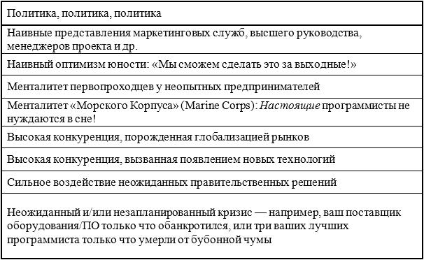
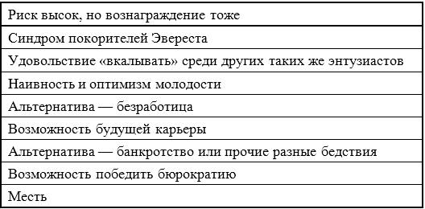
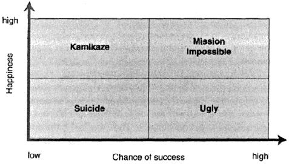
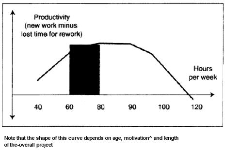
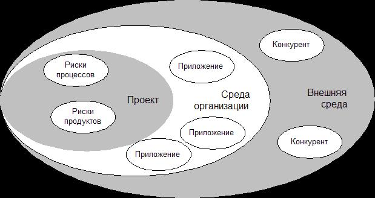
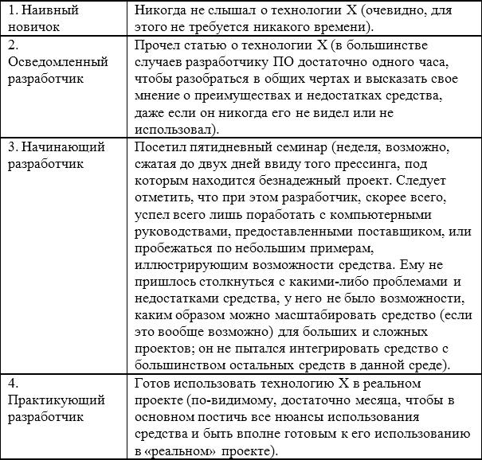
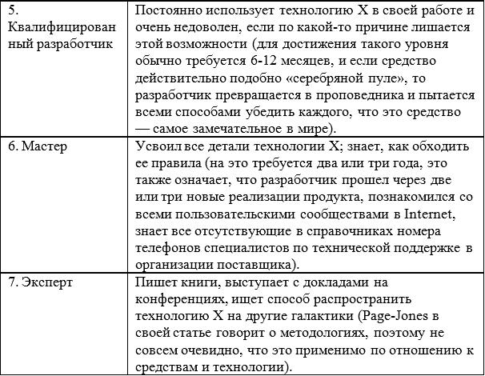

{% include JB/setup %}
{% raw %}
<div>
<ul id="filepos109" class="calibre1"><li class="calibre2"><a>Эдвард Йордон</a><ul class="calibre3"><li class="calibre2"><a href="#filepos10251">ПРЕДИСЛОВИЕ</a></li><li class="calibre2"><a href="#filepos33765">ГЛАВА 1.</a><ul class="calibre4"><li class="calibre2"></li><li class="calibre2"><a href="#filepos37773">1.1 Определение безнадёжного проекта</a></li><li class="calibre2"><a href="#filepos46138">1.2 Категории безнадёжных проектов</a></li><li class="calibre2"><a href="#filepos57376">1.3 Почему существуют безнадёжные проекты?</a><ul class="calibre4"><li class="calibre2"></li><li class="calibre2"><a href="#filepos60558">1.3.1 Политика, политика, политика</a></li><li class="calibre2"><a href="#filepos65888">1.3.2 Наивные представления маркетинговых служб, высшего руководства, менеджеров проекта и др.</a></li><li class="calibre2"><a href="#filepos74439">1.3.3 Наивный оптимизм юности: «Мы сможем сделать это за выходные!»</a></li><li class="calibre2"><a href="#filepos79268">1.3.4 Менталитет первопроходцев у неопытных предпринимателей</a></li><li class="calibre2"><a href="#filepos84821">1.3.5 Менталитет «Морского Корпуса» (Marine Corps): Настоящие программисты не нуждаются в сне!</a></li><li class="calibre2"><a href="#filepos89466">1.3.6 Высокая конкуренция, порождённая глобализацией рынков</a></li><li class="calibre2"><a href="#filepos92248">1.3.7 Высокая конкуренция, вызванная появлением новых технологий</a></li><li class="calibre2"><a href="#filepos98003">1.3.8 Сильное воздействие неожиданных правительственных решений</a></li><li class="calibre2"><a href="#filepos102257">1.3.9 Неожиданный и/или незапланированный кризис</a></li></ul></li><li class="calibre2"><a href="#filepos109522">1.4 Почему люди участвуют в безнадёжных проектах?</a><ul class="calibre4"><li class="calibre2"></li><li class="calibre2"><a href="#filepos127200">1.4.1 Риск высок, но вознаграждение тоже</a></li><li class="calibre2"><a href="#filepos134163">1.4.2 Синдром покорителей Эвереста</a></li><li class="calibre2"><a href="#filepos150557">1.4.3 Наивность и оптимизм молодости</a></li><li class="calibre2"><a href="#filepos156051">1.4.4 Альтернатива – безработица</a></li><li class="calibre2"><a href="#filepos169982">1.4.5 Возможность будущей карьеры</a></li><li class="calibre2"><a href="#filepos174362">1.4.6 Альтернатива – банкротство или прочие разные бедствия</a></li><li class="calibre2"><a href="#filepos180345">1.4.7 Возможность победить бюрократию</a></li><li class="calibre2"><a href="#filepos184903">1.4.8 Месть</a></li></ul></li><li class="calibre2"><a href="#filepos189036">1.5 Заключение</a></li></ul></li><li class="calibre2"><a href="#filepos194329">ГЛАВА 2.</a><ul class="calibre4"><li class="calibre2"></li><li class="calibre2"><a href="#filepos197240">2.1 Идентификация «игроков», вовлечённых в проект</a></li><li class="calibre2"><a href="#filepos201572">2.1.1 Владелец</a><ul class="calibre4"><li class="calibre2"></li><li class="calibre2"><a href="#filepos211739">2.1.2 Заказчики</a></li><li class="calibre2"><a href="#filepos216413">2.1.3 Акционеры</a></li><li class="calibre2"><a href="#filepos222259">2.1.4 Заинтересованные лица</a></li><li class="calibre2"><a href="#filepos230359">2.1.5 Защитники</a></li></ul></li><li class="calibre2"><a href="#filepos237195">2.2 Определение сущности проекта</a></li><li class="calibre2"><a href="#filepos259879">2.3 Отношение участников к проекту</a></li><li class="calibre2"><a href="#filepos268347">2.4 Заключение</a></li></ul></li><li class="calibre2"><a href="#filepos269899">ГЛАВА 3.</a><ul class="calibre4"><li class="calibre2"></li><li class="calibre2"><a href="#filepos275218">3.1 Нормальные переговоры</a></li><li class="calibre2"><a href="#filepos285807">3.2 Допустимые компромиссы</a></li><li class="calibre2"><a href="#filepos296347">3.3 Переговорные игры</a></li><li class="calibre2"><a href="#filepos319582">3.4 Стратегии переговоров</a></li><li class="calibre2"><a href="#filepos337291">3.5 Что делать в случае провала переговоров</a></li></ul></li><li class="calibre2"><a href="#filepos363672">ГЛАВА 4.</a><ul class="calibre4"><li class="calibre2"></li><li class="calibre2"><a href="#filepos369193">4.1 Кадровые вопросы</a></li><li class="calibre2"><a href="#filepos383896">4.2 Лояльность, отношение, мотивация и вознаграждения</a><ul class="calibre4"><li class="calibre2"></li><li class="calibre2"><a href="#filepos389735">4.2.1 Стимулирование участников проекта</a></li><li class="calibre2"><a href="#filepos414971">4.2.2 Сверхурочная работа</a></li></ul></li><li class="calibre2"><a href="#filepos426641">4.3 Значение коммуникации</a></li><li class="calibre2"><a href="#filepos431575">4.4 Проблемы формирования проектной команды</a></li><li class="calibre2"><a href="#filepos456077">4.5 Условия работы</a></li><li class="calibre2"><a href="#filepos470371">4.6 Заключение</a></li></ul></li><li class="calibre2"><a href="#filepos472725">ГЛАВА 5.</a><ul class="calibre4"><li class="calibre2"></li><li class="calibre2"><a href="#filepos476362">5.1 Концепция «triage»</a></li><li class="calibre2"><a href="#filepos505872">5.2 Важность управления требованиями</a></li><li class="calibre2"><a href="#filepos534079">5.3 SEI, ISO-9000. Формальные процессы против неформальных</a></li><li class="calibre2"><a href="#filepos546847">5.4 «Достаточно хорошее» программное обеспечение</a></li><li class="calibre2"><a href="#filepos561503">5.5 Наилучшая практика и наихудшая практика</a></li><li class="calibre2"><a href="#filepos590830">5.6 Принцип «ежедневной сборки проекта»</a></li><li class="calibre2"><a href="#filepos604121">5.7 Управление рисками</a></li><li class="calibre2"><a href="#filepos625148">5.8 Заключение</a></li></ul></li><li class="calibre2"><a href="#filepos631762">ГЛАВА 6.</a><ul class="calibre4"><li class="calibre2"></li><li class="calibre2"><a href="#filepos638587">6.1 Минимально необходимый набор средств</a></li><li class="calibre2"><a href="#filepos660579">6.2 Средства и процессы</a></li><li class="calibre2"><a href="#filepos674906">6.3 Риск выбора новых средств</a></li><li class="calibre2"><a href="#filepos685975">6.4 Заключение</a></li></ul></li><li class="calibre2"><a href="#filepos692367">ГЛАВА 7.</a><ul class="calibre4"><li class="calibre2"></li><li class="calibre2"><a href="#filepos697765">7.1 Почему безнадёжные проекты становятся нормой</a></li><li class="calibre2"><a href="#filepos711255">7.2 Учреждение «культуры» безнадёжных проектов</a></li><li class="calibre2"><a href="#filepos722992">7.3 Обучение участников безнадёжных проектов</a></li><li class="calibre2"><a href="#filepos726733">7.4 Концепция «военных игр»</a></li><li class="calibre2"><a href="#filepos740222">7.5 Заключение</a></li></ul></li><li class="calibre2"><a href="#filepos746881">ГЛОССАРИЙ, СОКРАЩЕНИЯ</a></li><li class="calibre2"><a href="#filepos749065">Сведения об авторе</a></li></ul></li></ul><div class="mbppagebreak"></div><p class="calibre5"></p><h3 border="1" class="calibre6"><span class="bold">Annotation</span></h3><p class="calibre7">    Книга Эдварда Йордона «Путь камикадзе» представляет собой полное руководство по выживанию в безнадёжных проектах, предназначенное для разработчиков программного обеспечения. Практически каждому разработчику ПО и менеджеру приходится сталкиваться с проектами, характеризующимися никуда не годными персоналом, планом и бюджетом, т.е. проектами, обречёнными на неудачу. В условиях реинжиниринга корпораций безнадёжные проекты становятся «стилем жизни» многих организаций. Книга Эдварда Йордона является руководством по решению следующих проблем: выживание в проектах, обречённых на неудачу; достижение оптимальных соглашений во время переговоров; управление персоналом и расстановка приоритетов; выбор средств и технологий; определение момента, когда уже пора выйти изпроекта. Эдвард Йордон применяет свою уникальную технологию и интуицию менеджера к наихудшим вариантам софтверных проектов, показывая, как максимально повысить шансы на успех, или, по крайней мере, вывести вашу карьеру из-под удара. Шаг за шагом Йордон проходит все стадии жизненного цикла проекта, учит менеджеров и разработчиков правильно вести себя с заказчиками и оптимально использовать доступные ресурсы, включая людей, средства, процессы и технологию. Учитесь проявлять необходимую гибкость при проведении переговоров, расставлять осмысленные приоритеты и… вовремя выходить из проекта. Если вам когда-либо требовалось совершить невозможное, «Путь камикадзе» – ваша книга.</p>
<div class="mbppagebreak"></div><h1 border="1" class="calibre8"><span class="calibre9"><span class="bold">Эдвард Йордон Путь камикадзе </span></span></h1><div class="mbppagebreak"></div><h1 border="1" class="calibre8" id="filepos10251"><span class="calibre9"><span class="bold">ПРЕДИСЛОВИЕ <br class="calibre10"/></span></span></h1><p class="calibre7">    Думаю, что вас заинтриговало название этой книги, и вы решили заглянуть в неё, чтобы посмотреть, о чем там написано. Но, к сожалению, вы, как обычно, ужасно заняты и не уверены, найдётся ли у вас время на чтение ещё одной книги об управлении софтверными проектами. <span class="italic">Особенно</span>, если в ней идёт речь о некоем идеальном мире, в котором здравомыслящие мужчины и женщины хладнокровно принимают благоразумные решения относительно бюджета, графика и ресурсов вашего проекта.</p>
<p class="calibre7">    Тем не менее, можно заметить, что мы живём в отнюдь не идеальном мире, и существует вероятность того, что в вашем проекте вам придётся взаимодействовать с людьми не слишком рационального склада мышления, решения которых трудно назвать хладнокровными или благоразумными. Другими словами, вы участвуете в <span class="italic">безнадёжном</span> проекте. Самое замечательное, что можно сказать о названии этой книги, заключается в отсутствии какой-либо необходимости объяснять его. Каждый раз, когда я упоминаю его в присутствии моих друзей и коллег, они отвечают мне со смехом: «Послушай, ты ведь говоришь именно о <span class="italic">моем</span> проекте!»</p>
<p class="calibre7">    Такой проект может быть моим проектом, вашим проектом, чьим-либо ещё проектом – мы <span class="italic">все</span> так или иначе участвуем в безнадёжных проектах. Мне думается, первый вопрос, который вы должны задать самому себе (хотя он может и не возникнуть у вас до самого конца проекта): «Как я позволил вовлечь себя в такой проект?» Я буду обсуждать его в первой главе, поскольку мой опыт в качестве консультанта, наблюдающего множество таких проектов со стороны, говорит о том, что наш мир мог быть гораздо более разумным, если бы большинство из нас имело смелость остановиться и сказать: «Дудки! Я не желаю участвовать в этом безнадёжном проекте!»</p>
<p class="calibre7">    Допустим, однако, что возможности хлопнуть дверью не существует – например, очень трудно найти другую работу, или вас приковывает к вашему работодателю своего рода «золотая цепь», отбивающая охоту выйти из проекта. В этом случае следует спросить себя: «Как я могу выжить в этом проекте без ущерба для моего здоровья, психики и достоинства?» Если вы оптимист, для вас может оказаться даже интересно, как вам удастся преодолеть все препятствия на пути завершения безнадёжного проекта в срок и в рамках бюджета. Но если вы уже успели пройти через ряд таких проектов, вы, скорее всего, знаете, что обстоятельства обычно складываются против вас и выживание – это лучше, на что вы можете надеяться.</p>
<p class="calibre7">    Проработав в индустрии ПО более 30 лет, я обнаружил, что наша профессия весьма интересно воспринимает безнадёжные проекты. В некоторых областях индустрии ПО, особенно в Силиконовой Долине, такие проекты окружены ореолом славы, как испытание силы духа и стойкости, нечто наподобие покорения Эвереста босиком. Я сам разделял эти убеждения во время моих первых проектов в середине 60-х годов, и не секрет, что такие же взгляды превалируют у следующего поколения, что наводит меня на мысль о постоянстве этого феномена, поскольку технология продолжает развиваться такими же быстрыми темпами, как это было в моё время. Наша индустрия ещё не достигла зрелости. Каждый год появляется новый Эверест и новая масса отчаянных программистов, которые уверены, что смогут пробежать босиком весь путь до вершины.</p>
<p class="calibre7">    Тем не менее, в другом сегменте нашей индустрии такие проекты рассматриваются как серьёзные неудачи. Мы все бываем завалены статистикой, говорящей о срыве планов, перерасходе бюджета, ошибках в ПО, раздражённых пользователях и полных провалах проектов. Эксперты, консультанты и методологи постоянно твердят нам, что причиной всех этих неудач является использование неверных методов (или вообще никаких методов), или неправильных средств, или неправильных способов управления проектом. Иными словами, безнадёжные проекты существуют потому, что мы такие бестолковые или некомпетентные.</p>
<p class="calibre7">    Если вы общаетесь с покрытыми шрамами, закалёнными в боях ветеранами-разработчиками, которые прошли через пару безнадёжных проектов и поняли, что на самом деле нет ничего забавного в покорении Эвереста босиком, вы наверняка услышите: «Постойте! Я вовсе не бестолковый! <span class="italic">Безусловно</span>, мне хотелось бы использовать правильные методы, средства и способы управления проектом. Но моё высшее руководство и мои пользователи вряд ли позволят мне сделать это. Причина смехотворности проектных планов заключается в том, что с самого первого дня, когда мы ещё не успели получить хотя бы малейшее представление о проекте, нам их уже продиктовали сверху!» Вывод: безнадёжные проекты существуют потому, что высшее руководство – это бессовестные негодяи, а наши пользователи наивны и безрассудны.</p>
<p class="calibre7">    Без сомнения, в этом есть некоторая доля правды. Управляя нашими проектами, мы совершаем множество глупых ошибок, наше высшее руководство увлекается смехотворными политическими играми и наши пользователи предъявляют к нам непомерно высокие требования. Я убеждён, что это в основном объясняется высоким темпом изменений в окружающем мире, а также обычным неуважением каждого нового поколения к советам и опыту предыдущего поколения. Зачем сегодняшнему поколению Java-ориентированных фанатиков уделять хотя бы какое-нибудь внимание советам моего поколения, которое обладает 30-летней давности опытом программирования в автокоде и на ассемблере? И как сегодняшнее поколение пользователей в бизнесе может узнать, какое Web-приложение для них наиболее приемлемо, если они знают только об использовании их предшественниками онлайновых систем на мэйнфреймах с символьными, монохромными и немыми терминальными интерфейсами?</p>
<p class="calibre7">    Каким бы ни было объяснение этого феномена, я уже пришёл к следующему трезвому заключению: <span class="italic">безнадёжные проекты являются нормой, а не исключением</span>. Я полагаю, что сегодняшние разработчики ПО и менеджеры проектов достаточно изобретательны и полны желания управлять проектами разумным образом; я также полагаю, что сегодняшние пользователи и высшее руководство обладают гораздо большей компьютерной грамотностью, чем предыдущее поколение, и гораздо менее наивны относительно результатов, которые можно ожидать от разработчиков ПО в условиях ограниченных ресурсов. Однако это не останавливает и тех, и других от участия в очередном безнадёжном проекте, поскольку это диктуется необходимостью выживания в конкурентной борьбе, а также заманчивыми возможностями, предлагаемыми новыми технологиями. Бизнес-менеджеры могут вполне осознавать, что при разумном планировании разработка новой системы займёт 12 календарных месяцев, однако в то же время они будут настойчиво утверждать, что отсутствие готовой системы через 6 месяцев позволит конкурентам захватить весь рынок и вытеснить их новый продукт или услугу. Аналогично, технические специалисты могут вполне осознавать высокий риск использования новых технологий, таких, как Internet, однако они также будут утверждать, что новая технология в случае успеха обеспечит им стратегическое преимущество в конкурентной борьбе, и это оправдывает любой риск.</p>
<p class="calibre7">    С другой стороны, отчёты таких организаций, как Standish Group, а также статистические данные таких авторитетных экспертов, как Capers Jones, Howard Rubin, Paul Strassman и Larry Putnam, говорят о том, что <span class="italic">в среднем</span> продолжительность проекта превышает плановую на 6-12 месяцев, а стоимость превышает бюджет на 50-100%. Конкретная ситуация зависит от размера проекта и ряда других факторов, но в любом случае суровая реальность заставляет вас предполагать, что условия вашего проекта повлекут за собой некоторую степень обречённости на неудачу, и это отразится на поведении менеджера проекта и его технических специалистов. Если проект с самого начала характеризуется высокой степенью риска, это наверняка повлечёт за собой массу сверхурочной работы, потерянных выходных, и, скорее всего, массу эмоциональных и физических стрессов до самого его завершения. Если даже проект начинается в разумной и спокойной обстановке, все равно велика вероятность, что по мере своего продолжения он выродится в безнадёжный – то ли первоначальные план и бюджет окажутся крайне нереалистичными, то ли у пользователей появится много новых требований, которые никак не учитывались при составлении первоначального плана и бюджета.</p>
<p class="calibre7">    Итак, спрашивается: если невозможно избежать безнадёжных проектов, как их можно выдержать? Что следует предпринять для повышения своих шансов на успех? Когда следует быть готовым к компромиссу – и когда следует быть готовым уйти в отставку, если дальнейшее продолжение работы невозможно? Именно <span class="italic">об этом</span> идёт речь в данной книге. Очевидно, решение перечисленных проблем затрагивает такие вопросы, как кадровое обеспечение, процессы и методологии, а также методы и средства. Если вы собираетесь руководить безнадёжным проектом, следует ли настаивать на свободе выбора при формировании проектной команды? Следует ли занимать твёрдую позицию в отношении процессов и методологий, таких, как модель SEI-CMM, или следует позволить проектной команде отказаться от любых формальных методологий, если они считают, что это поможет им нормально выполнить работу? Следует ли настаивать на использовании определённых языков программирования, рабочих станций и CASE-средств, или более важно активно участвовать в политических баталиях?</p>
<p class="calibre7">    Эти вопросы одинаково актуальны как для менеджера, отвечающего за проект, так и для технических специалистов, мозолистыми руками которых система проектируется, программируется, тестируется и документируется; все главы книги адресуются в равной степени обеим группам. Пару слов относительно менеджеров и технических специалистов: некоторые из комментариев, которые вы обнаружите в следующих главах, предполагают, что менеджеры «злые», а участники проектной команды – невинные, угнетённые жертвы. Очевидно, такая ситуация не является обязательной для всех проектов и всех компаний, хотя само существование безнадёжных проектов является, как правило, результатом сознательных решений руководства.</p>
<p class="calibre7">    Если в этот момент вы решили, что у вас нет времени читать всю книгу, скажу только одно слово, которое может окупить время, потраченное на чтение предисловия: <span class="italic">приоритетность (</span><span class="italic">triage</span><span class="italic">).</span> Если вы участвуете в безнадёжном проекте, почти наверняка окажется недостаточно ресурсов, чтобы реализовать всю функциональность и возможности ПО, которые требуются конечному пользователю, в рамках утверждённого плана и бюджета. Так или иначе придётся решать, какие возможности следует реализовывать в первую очередь, а какими можно пожертвовать. Действительно, некоторые из незначительных возможностей не будут реализованы <span class="italic">никогда</span>, поэтому самое лучшее – это дать им спокойно умереть собственной смертью. Другие возможности являются достаточно важными, но также относительно легко реализуемыми, например, с помощью поставляемой библиотеки классов или используемых вами CASE-средств. Говоря языком медиков, эти возможности выживут сами по себе. Успех или неудача безнадёжного проекта зачастую зависит от способности проектной команды выделить критические функции и возможности, которые нельзя реализовать, не вкладывая значительные ресурсы и энергию.</p>
<p class="calibre7">    Разумеется, чтобы спасти безнадёжный проект, недостаточно одной только правильной расстановки приоритетов в реализации функций (данный вопрос рассматривается в главе 3). Необходимо рассматривать также такие вопросы, как кадровое обеспечение, процессы и методологии, методы и средства. Я старался быть как можно более немногословным, чтобы вам хватило пары часов на прочтение всей книги; она могла бы помочь, как минимум, более реалистично оценить очередной безнадёжный проект.</p>
<p class="calibre7">    Пожалуйста, ни в коем случае не воспринимайте эту книгу как «библию», и не думайте, что она может преподнести вам решение всех проблем. Стопроцентно правильных решений не существует; то, что срабатывает в одних компаниях и ситуациях, может не сработать в других. Также важно, что компромиссы, на которые готовы пойти некоторые менеджеры и технические специалисты, будут совершенно неприемлемы для других. Я предлагаю те решения, которые считаю разумными, но в конечном счёте вы сами должны определить, какие из них годятся для вас, а какие – нет.</p>
<p class="calibre7">    Кроме всего прочего, я намереваюсь постоянно собирать на своём Web-сайте (http://www.yourdon.com) информацию и практические рекомендации от различных проектных команд по поводу наилучшей практики, наихудшей практики и разнообразных проблем. Даже если в вашем проектном бюджете недостаточно денег на покупку этой книги (такой крохотный бюджет уже говорит о рискованности проекта!), ровным счётом ничего не стоит обратиться к Web-странице.</p>
<p class="calibre7">    Как бы вы не решили поступить, желаю самой большой удачи вашему очередному безнадёжному проекту.</p>
<div class="mbppagebreak"></div><h1 border="1" class="calibre8" id="filepos33765"><span class="calibre9"><span class="bold">ГЛАВА 1. <br class="calibre10"/> ВВЕДЕНИЕ <br class="calibre10"/></span></span></h1><p id="filepos33905" class="calibre7">    Что такое безнадёжные проекты? Почему они существуют? По какой причине здравомыслящие люди соглашаются участвовать в таких проектах?</p>
<p class="calibre7">    Для многих закалённых ветеранов эти вопросы – чистая риторика. С точки зрения их опыта, каждый проект – это безнадёжный проект. Почему так происходит? Поведение больших корпораций зачастую выглядит неразумным. Как отмечает эксперт Richard Sargent, «неразумное поведение корпораций заключается в том, что они делают одно и тоже снова и снова, каждый раз ожидая различных результатов». Почему мы участвуем в таких проектах? Как отмечает эксперт Dave Kleist:</p>
<div class="calibre11"> </div><blockquote class="calibre12"><blockquote class="calibre12"><p class="calibre7">    Вряд ли можно где-нибудь увидеть объявление о найме для участия в безнадёжном проекте. Какой смысл спрашивать: «Хотите ли вы работать сверхурочно без какой-либо прибавки к зарплате? Привлекает ли вас бесконечная работа по устаревшей технологии и тщетное ожидание участия в каком-нибудь замечательном проекте GUI/DSS/DWH/HTML? Каково будет узнать, что трехзвенная архитектура „клиент-сервер“ позволит остальным участникам проекта обойтись без вашей помощи?»</p>
<p class="calibre7">    На самом деле, безнадёжные проекты редко объявляются таковыми во всеуслышание, и вам придётся достаточно долго проработать в нанявшей вас компании, прежде чем удастся обнаружить, что она обладает склонностью плодить безнадёжные проекты.</p>
<p class="calibre7">    Если вашему коллеге приходится руководить безнадёжным проектом, то ему можно посоветовать включить в контракт пункт, позволяющий цивилизованным способом выйти из проекта. Одна из серьёзных причин выхода – неспособность высшего руководства воспринимать правдивую информацию о проекте. Принимающий на себя руководство безнадёжным проектом должен быть готов к тому, что у него будет практически отсутствовать пространство для манёвра в отношении функциональности, затрат или времени.</p>
</blockquote></blockquote><p class="calibre7">    Если ответы на эти вопросы кажутся вам очевидными, можете смело переходить к следующей главе. Я и сам начинаю думать, что они очевидны, поскольку меня редко спрашивают, что же я понимаю под «безнадёжным проектом».</p>
<div class="mbppagebreak"></div><h2 border="1" class="calibre13" id="filepos37773"><span class="calibre14"><span class="bold"><span class="italic1">1.1 Определение безнадёжного проекта</span>
<br class="calibre10"/></span></span></h2><p class="calibre7">    Под безнадёжным проектом (death march) я понимаю такой проект, параметры которого отклоняются от нормальных значений по крайней мере на 50%. По отношению к софтверным проектам это обычно означает одно или более из следующих ограничений:</p>
<p class="calibre7">    1) План проекта сжат более чем наполовину по сравнению с нормальным расчётным планом; таким образом, проект, требующий в нормальных условиях 12 календарных месяцев, приходится выполнять за 6 или менее месяцев. Жёсткая конкуренция на мировом рынке делает такую ситуацию наиболее распространённой.</p>
<p class="calibre7">    2) Количество разработчиков уменьшено более чем наполовину по сравнению с действительно необходимым для проекта данного размера и масштаба; таким образом, вместо формирования проектной команды из десяти человек, менеджера проекта убеждают, что достаточно и пяти. Такое представление может быть результатом наивной веры в магические возможности новых CASE-средств или языков программирования удваивать производительность труда разработчиков – несмотря на то, что разработчики не обучались или не имеют практического опыта работы с новой технологией и, скорее всего, с ними никто не советовался по поводу решения использовать новую технологию. На сегодняшний день более общей причиной уменьшения количества разработчиков является сокращение штатов компании в результате реорганизации, реинжиниринга и т.д.</p>
<p class="calibre7">    3) Бюджет и связанные с ним ресурсы урезаны наполовину. Зачастую это результат сокращения компании и других противозатратных мер, хотя это может быть и результатом конкурентной борьбы за выгодный контракт. В этой ситуации менеджер проекта в консалтинговой фирме получает из отдела маркетинга следующую информацию: «У нас хорошая новость – мы выиграли тендер, но есть и плохая новость – мы были вынуждены наполовину урезать бюджет, чтобы победить конкурентов». Такое ограничение часто непосредственно влияет на количество нанимаемых разработчиков, однако последствия могут быть и менее явными – например, может быть принято решение привлечь относительно недорогих и неопытных молодых разработчиков вместо опытных дорогостоящих специалистов. Наконец, это может породить атмосферу мелочной экономии, когда менеджер проекта не в состоянии заказать пиццу для своей команды, проработавшей все выходные в офисе.</p>
<p class="calibre7">    4) Требования к функциям, возможностям, производительности и другим техническим характеристикам вдвое превышают значения, которые они могли бы иметь в нормальных условиях. Например, проектной команде могут заявить, что они должны по сравнению с конкурентом выжать в два раза больше возможностей из фиксированного объёма RAM или дискового пространства. Или, например, от них могут потребовать, чтобы система поддерживала вдвое большее количество транзакций по сравнению с любой сопоставимой системой. Требования, связанные с производительностью, могут и не повлечь за собой неудачу проекта; в конце концов, всегда можно использовать преимущества более дешёвого и производительного оборудования, а также разработать более совершённый алгоритм или подход к проектированию, чтобы достичь повышения производительности (хотя, при сжатых сроках, могут не помочь и безграничные возможности человеческого мозга). С другой стороны, удвоение функциональных возможностей обычно означает удвоение необходимого объёма работы, что обязательно приведёт к неудаче проекта.</p>
<br class="calibre15"/><p class="calibre7">    Во многих организациях непосредственный результат перечисленных ограничений заключается в том, что от проектной команды требуют работать вдвое интенсивней и/или тратить в два раза больше часов в неделю, чем в «нормальном» проекте. При том, что нормальная рабочая неделя составляет 40 часов, команде безнадёжного проекта зачастую приходится работать по 13-14 часов в день и 6 дней в неделю. В такой обстановке, естественно, возрастает напряжённость и количество стрессов.</p>
<p class="calibre7">    Другой способ охарактеризовать безнадёжный проект заключается в следующем: беспристрастная, объективная оценка риска такого проекта (включая риск, связанный с техническими проблемами, человеческим фактором, законами, политикой и т.д.) определяет вероятность провала свыше 50%.</p>
<p class="calibre7">    Безусловно, даже если перечисленные ограничения отсутствуют, риск неудачи проекта все равно может быть высоким, например, из-за конфликтов между IT-подразделением и пользователями. Однако, в общем случае, причиной высокого риска является сочетание указанных мной факторов.</p>
<div class="mbppagebreak"></div><h2 border="1" class="calibre13" id="filepos46138"><span class="calibre14"><span class="bold"><span class="italic1">1.2 Категории безнадёжных проектов</span>
<br class="calibre10"/></span></span></h2><p class="calibre7">    Далеко не все безнадёжные проекты одинаковы; помимо ограничений в планах, штатах, бюджете и функциональности, они могут иметь различные масштабы, формы и другие особенности.</p>
<p class="calibre7">    Исходя из моего опыта, наиболее важной отличительной характеристикой безнадёжного проекта является его <span class="italic">масштаб</span>. В зависимости от масштаба можно выделить четыре категории проектов:</p>
<p class="calibre7">    5) <span class="italic">небольшие проекты</span> – проектная команда включает менее 10 человек, работает в исключительно неблагоприятных условиях и должна завершить проект в срок от 3 до 6 месяцев;</p>
<p class="calibre7">    6) <span class="italic">средние проекты</span> – проектная команда включает от 20 до 30 человек, протяжённость проекта составляет 1-2 года;</p>
<p class="calibre7">    7) <span class="italic">крупномасштабные проекты</span> – проектная команда включает от 100 до 300 человек, протяжённость проекта составляет 3-5 лет;</p>
<p class="calibre7">    8) <span class="italic">гигантские проекты</span> – в проекте участвует армия разработчиков от 1000 до 2000 человек и более (включающая, как правило, консультантов и соисполнителей), протяжённость проекта составляет от 7 до 10 лет.</p>
<br class="calibre15"/><p class="calibre7">    По различным причинам, небольшие проекты являются наиболее распространённой категорией проектов в тех организациях, где мне удалось побывать, и, к счастью, их шансы на успешное завершение наиболее высоки. Компактная и сплочённая команда не более, чем из 10 человек, скорее всего не распадётся, несмотря на все препятствия, в течение короткого шестимесячного периода; в случае высокой степени заинтересованности её участники, вероятно, будут готовы пожертвовать своей личной жизнью (но не здоровьем!) в течение 3-6 месяцев, поскольку они знают, что бессонные ночи, потерянные выходные и отсроченные отпуска через считанное время закончатся.</p>
<p class="calibre7">    Шансы на успешное завершение средних проектов заметно ниже, а для крупномасштабных проектов почти равны нулю. В больших проектных командах более трудно поддерживать чувство сплочённости и высокий командный дух; резко возрастает вероятность, что кого-нибудь переедет грузовик или он станет жертвой одной из многочисленных опасностей, подстерегающих людей в современном обществе. Причём решающее значение имеет не только количество участников проекта, но и временная протяжённость: 80-часовую рабочую неделю в течение 6 месяцев ещё можно вытерпеть, но если работать так в течение двух лет, скорее всего, возникнут проблемы. Даже если менеджер способен убедить небольшую группу технарей принести такую жертву, это практически невозможно сделать для больших проектных команд; по статистике, очень вероятно, что некоторые из них женятся или выйдут замуж или найдут себе ещё какое-нибудь занятие на стороне.</p>
<p class="calibre7">    Что касается гигантских проектов, может показаться непонятным, как они вообще существуют. Возможно, разработка системы, связанной с проектом NASA высадки человека на Луну в 1969 году, может считаться примером успешного завершения безнадёжного проекта; однако, подавляющее большинство таких проектов с самого начала обречено на провал.</p>
<br class="calibre15"/><p class="calibre7">    Естественно, проект может вовсе не задумываться как гигантский, и перспектива его провала может быть совсем не очевидна. Об этом мне недавно напомнил один из участников неудачного совместного проекта Apple и IBM под названием Taligent. Этот проект ранее фигурировал в Apple под кодовым названием Pink, а ещё раньше был известен как SNARC (Sexy New Architecture – Новая Сексуальная Архитектура). Самое замечательное заключалось в том, что в любой момент его семилетнего жизненного цикла и в любой из его ипостасей он всегда воспринимался как двухлетний проект. Такое ощущение было в первый день проекта, и в это свято верило большинство менеджеров после семи лет безумной работы, когда проект был прекращён.</p>
<br class="calibre15"/><p class="calibre7">    К счастью, большинство руководителей высшего звена это понимают, и большинство крупных организаций (а только они могут себе позволить подобные проекты!) стараются их избегать. К сожалению, государственные учреждения все ещё пускаются в такие рискованные мероприятия, мотивируя это соображениями «национальной безопасности» или какими-либо другими эмоциональными призывами, которые эффективно действуют на недальновидное высшее руководство, не отдающее себе отчёт, что успеха достичь невозможно.</p>
<p class="calibre7">    Для того, чтобы охарактеризовать «степень безнадёжности» проекта, может оказаться полезным помимо масштаба проекта использовать такой критерий, как количество организаций-пользователей, вовлечённых в проект. Достаточно трудно бывает удовлетворить и одного-единственного пользователя, или однородную группу пользователей из одного подразделения. Трудности, с которыми приходится сталкиваться в проектах масштаба предприятия, на порядок серьёзнее хотя бы из-за политических и коммуникационных проблем, связанных с коллективной деятельностью любого рода. В результате системные проекты, связанные с проектами реинжиниринга бизнес-процессов, часто вырождаются в безнадёжные – даже если на разработку затрачиваются достаточно скромные ресурсы (технические средства и ПО), политические баталии способны парализовать всю организацию и причиняют проектной команде бесконечную головную боль.</p>
<p class="calibre7">    Наконец, нужно различать очень сложные и принципиально невыполнимые проекты. Как отмечает John Boddie [1]:</p>
<p class="calibre7">    Сочетания высококвалифицированных технических специалистов, замечательного руководства, выдающихся проектировщиков и интеллигентных пользователей недостаточно, чтобы гарантировать успех сомнительного проекта. На самом деле реально существуют невыполнимые проекты, и все новые и новые начинаются каждый день. Наиболее нереальные проекты могут быть квалифицированы как таковые на самой ранней стадии. По-видимому, существует два основных типа таких проектов: «системы с нечёткими целями» и «очень сложные системы».</p>
<p class="calibre7">    До сих пор остались без ответа вопросы, почему вполне разумные организации предпринимают подобные проекты, и почему разумные менеджеры и технические специалисты соглашаются участвовать в таких проектах. Эти вопросы будут рассмотрены ниже.</p>
<div class="mbppagebreak"></div><h2 border="1" class="calibre13" id="filepos57376"><span class="calibre14"><span class="bold"><span class="italic1">1.3 Почему существуют безнадёжные проекты?</span>
<br class="calibre10"/></span></span></h2><p id="filepos57563" class="calibre7">    Если вы задумываетесь о том, что происходит в вашей организации, нетрудно понять, почему существуют безнадёжные проекты. Как отмечает Scott Adams [2]:</p>
<div class="calibre11"> </div><blockquote class="calibre12"><blockquote class="calibre12"><p class="calibre7">    Когда я впервые услышал эти истории [о неразумном корпоративном поведении], я пришёл в недоумение, однако после тщательного анализа я разработал сложную теорию, объясняющую такое странное поведение. Она заключается в следующем: люди – это идиоты.</p>
<p class="calibre7">    Включая меня. Идиоты все, не только люди с низкими интеллектуальными показателями. Единственная разница между нами заключается в том, что мы идиоты по отношению к различным вещам в различное время. Неважно, насколько вы остроумны и находчивы, все равно большую часть дня вы проводите как идиот.</p>
</blockquote></blockquote><p class="calibre7">    Наверно, слишком тягостно представить себе, что вы идиот, окружены идиотами и руководят вами идиоты. Наверно, вы рассматриваете как оскорбление даже саму возможность такого предположения. На этот случай в табл. 1.1 приведён более детальный список причин, порождающих безнадёжные проекты.</p>
<p class="calibre7">    Хотя эти причины могут показаться очевидными, они все равно заслуживают обсуждения – поскольку они могут выставить ваш безнадёжный проект таким безумным и иррациональным, что в нем абсолютно нет смысла принимать участие. Действительно, даже не имея явных причин, подобных перечисленным в табл. 1, следует серьёзно подумать, хочется ли вам следующие несколько месяцев (или лет), участвуя в таком проекте (далее в этой главе мы поговорим на эту тему).</p>
<br class="calibre15"/><p class="calibre7">    Таблица 1.1. Причины безнадёжных проектов</p>
<p class="calibre16"></p><br class="calibre15"/><h3 border="1" id="filepos60558" class="calibre6"><span class="bold">1.3.1 Политика, политика, политика <br class="calibre10"/></span></h3><p class="calibre7">    Многие разработчики ПО клянутся, что не дадут втянуть себя в политику, поскольку они сделали вывод, что политические игры – это не их дело, и, кроме того, они считают все связанное с политикой отвратительным. Увы, уйти от политики невозможно; как только в какое-либо совместное предприятие войдут двое или более человек, тут же появится политика.</p>
<p class="calibre7">    Однако, когда в большом, сложном проекте политика начинает доминировать, он скорее всего выродится в безнадёжный проект. Вспомните моё определение безнадёжного проекта: сроки, штат, бюджет или ресурсы на 50-100% меньше, чем следует. <span class="italic">Откуда берутся эти ограничения</span>? Как будет видно из дальнейшего обсуждения, существует много возможных объяснений, тем не менее, в большинстве случаев ответ весьма прост: «Политика». Это может быть война между двумя менеджерами в вашей организации, либо проект может быть намеренно провален в качестве мести менеджеру, который наступил не на тот мозоль, да ещё в неподходящее время. Количество таких ситуаций бесконечно.</p>
<p class="calibre7">    Вряд ли найдёшь таких политиков, которые прояснили бы вам реальное положение вещей; тем не менее, если вы технический специалист, не будет лишним спросить вашего менеджера, не является ли весь проект политической спекуляцией. Даже если политика вам не нравится, или вы в ней новичок, внимательно выслушайте ответ менеджера. Вы не глупы и не настолько наивны. Если у вас есть шестое чувство, что в проекте доминируют малоприятные политические игры, вероятно, так оно и есть; и, если ваш непосредственный начальник отделывается односложным или неопределённым ответом, вы должны сами сделать для себя выводы.</p>
<p class="calibre7">    Что если ваш менеджер открыто соглашается с вами? Что если он отвечает: «Да, на самом деле весь этот проект не более, чем ожесточённая схватка между вице-президентом Смитом и вице-президентом Джонсом»? Если это так, почему же тогда сам менеджер участвует в этом проекте? Для этого, как сказано ниже в подразд. 1.4, может быть множество причин; но причины, заставляющие менеджера участвовать в проекте, совсем не обязательно должны заставлять и <span class="italic">вас</span>. Неизбежное зло политики не означает, что вы должны немедленно бросить проект или совсем уволиться с работы, однако, что бы там не происходило в проекте, следует отстаивать свои собственные приоритеты, цели и моральные ценности – особенно потому, что скорее всего многие принимаемые решения (начиная с решений по плану/бюджету/ресурсам, превративших проект в безнадёжный с самого начала) не соответствуют интересам пользователей и организации в целом. Если проект все же увенчается успехом, то это скорее всего либо счастливая случайность, либо означает, что намеченный козёл отпущения (например, ваш непосредственный руководитель или менеджер более высокого уровня) оказался более хитрым политиком, чем считали его противники.</p>
<h3 border="1" id="filepos65888" class="calibre6"><span class="bold">1.3.2 Наивные представления маркетинговых служб, высшего руководства, менеджеров проекта и др. <br class="calibre10"/></span></h3><p class="calibre7">    Наивность часто связана с неопытностью, поэтому не удивительно, когда люди, не имеющие представления о трудоёмкости и длительности создания нужной им системы, принимают нереалистичные решения. В самом худшем варианте это может привести к тому, что мой коллега Том ДеМарко называет «истерическим оптимизмом», когда все поголовно в организации бездумно верят, что сложный проект, ничего подобного которому они никогда не делали, можно как-нибудь сделать за девять месяцев, хотя реалистичная оценка его продолжительности – три года.</p>
<p class="calibre7">    Наивность и оптимизм, как мы видим, присущи также и техническим специалистам. Однако, вообразим на минуту, что именно ваши менеджер, отдел маркетинга или конечный пользователь несут ответственность за чересчур оптимистичный план или бюджет. Как они отреагируют, когда в конечном счёте поймут чрезмерную оптимистичность первоначальных оценок? Захотят ли они продлить срок разработки, увеличить бюджет и спокойно согласиться с тем, что все не так просто, как они себе представляли? Скажут ли они вам и вашим коллегам спасибо за героические усилия? Если это так, то самым важным для вас может оказаться заменить классическую каскадную модель жизненного цикла ПО на подход RAD, чтобы сразу после реализации первой версии прототипа системы можно было получить реалистичную оценку плана, бюджета и ресурсов.</p>
<p class="calibre7">    Тем не менее, в большинстве безнадёжных проектов такого рода рациональная коррекция курса в середине проекта невозможна. Так может случиться, например, если главный менеджер наивно пообещал что-либо заказчику и считает, что дело чести – выполнять своё обязательство, несмотря ни на что. Самое худшее – когда человек, принимающий на себя обязательства, вполне осознает происходящее (в особенности такие дела всплывают наружу, когда после празднования по поводу заключения нового контракта с очередным доверчивым пользователем менеджер по маркетингу признается менеджеру проекта за кружкой пива: «Послушай, мы никогда бы не заключили этот контракт, если бы сказали клиенту, сколько времени потребует проект <span class="italic">на самом деле</span> ; в конце концов, мы знали, что наши конкуренты тоже придут с заманчивыми предложениями. И, кроме всего прочего, твои ребята всегда раздувают планы и бюджеты, не так ли?»).</p>
<p class="calibre7">    На последнее замечание особенно трудно возразить, если оно исходит от вашего босса или менеджера, который выше вас на два или три уровня. Предполагается, что вся оценка планов и бюджета является предметом переговоров (которые будут детально обсуждаться в главе 3). В то же время ваш менеджер ведёт себя в некоторой степени наивно, если он, будучи недовольным «раздуванием» плана и бюджета, полагает, что вы сможете завершить проект в смехотворно короткий срок, принятый без вашего ведома. Такой срок может быть установлен и под влиянием менталитета «Морского Корпуса», который обсуждается в подразд. 1.3.5. Наконец, принятие отделом маркетинга смехотворного плана и бюджета может быть результатом политических игр, о которых говорилось ранее; менеджера по маркетингу вряд ли особенно волнует реалистичность предлагаемого им плана и бюджета, поскольку его основная цель – получить комиссионное вознаграждение или доставить удовольствие своему боссу.</p>
<p class="calibre7">    Представим себе, что наш безнадёжный проект – это результат «наивности в чистом виде», свободной от политики или каких-либо других злонамеренных воздействий. Главный вопрос заключается в следующем: что делать? Как было отмечено выше, определяющим фактором является вероятность того, что лица, принимающие решения, пересмотрят свои бюджеты и планы, когда станет очевидной невыполнимость взятых на себя первоначально обязательств. Трудно предсказать заранее, произойдёт это или нет, однако небесполезно было бы оглядеться вокруг себя и посмотреть, что же происходит в подобной ситуации с другими безнадёжными проектами. (Если это первый такой проект, который когда-либо осуществлялся в вашей компании, значит, вы в самом деле – белое пятно на карте!) </p>
<p class="calibre7">    Если у вас есть твёрдая уверенность, основанная на вашем политическом чутьё или опыте предыдущих проектов вашей организации, что руководство, отрицая очевидные факты, будет настаивать на первоначальном бюджете и плане, значит, придётся принимать гораздо более серьёзное решение относительно дальнейшего продолжения работы. При этом имеет существенное значение степень вашего влияния на другие аспекты проекта – например, на состав привлекаемых технических специалистов – что будет обсуждаться в главе 2.</p>
<h3 border="1" id="filepos74439" class="calibre6"><span class="bold">1.3.3 Наивный оптимизм юности: «Мы сможем сделать это за выходные!» <br class="calibre10"/></span></h3><p class="calibre7">    Несмотря на то, что руководство компании, как правило, является удобной мишенью для критики за множество нелепых решений, связанных с безнадёжными проектами, технические специалисты тоже не такие уж невинные агнцы. Несомненно, во многих случаях высшее руководство, к счастью, осознает свою неопытность в вопросах оценки и планирования сложных проектов. Оно обязательно будет консультироваться относительно продолжительности проекта с каким-нибудь технократом-сорвиголовой, которого, может быть, только неделю как назначили на высокую руководящую должность.</p>
<p class="calibre7">    И, если этот технократ честолюбив и полон юношеского оптимизма (что напоминает юношеские фантазии относительно бессмертия, всемогущества и всеведения), он, скорее всего, ответит: «Нет проблем! Мы можем покончить с этой ерундой за выходные!» Высококвалифицированный программист (правда, здесь больше подходит определение «хакер») твёрдо уверен, что может разработать <span class="italic">любую</span> систему за выходные. Такие незначительные мелочи, как документирование, отладка, тестирование и проработка пользовательского интерфейса, настолько скучны, что нечего о них и говорить.</p>
<p class="calibre7">    Если вы как раз именно такой чересчур оптимистичный программист и при этом ответственны за оценку параметров проекта, то, скорее всего, не представляете себе, что вы делаете. Вероятно, вы прочли последний абзац, немедленно оскорбились и проворчали: «Черт возьми! Я <span class="italic">в самом деле</span> могу разработать любую систему за выходные!» Господи, благослови вас; может статься, вы и преуспеете. В любом случае, что бы вы не услышали от старого пердуна вроде меня, вряд ли это изменит ваше мнение.</p>
<p class="calibre7">    Однако, если вы – закалённый в битвах ветеран и замечаете, что вас почти втянули в безнадёжный проект, поскольку какой-то молодой и наивный технический менеджер взял на себя смехотворно оптимистичные обязательства относительно плана, бюджета и ресурсов, то что же вам остаётся делать? По-моему, самое лучшее – спасаться бегством. Когда до таких менеджеров дойдёт, что они пытаются прыгнуть выше головы, они впадают в состояние коллапса, что выражается в непредсказуемом поведении или полной беспомощности. В большинстве случаев им никогда не приходилось прежде иметь дело с такими большими и сложными проблемами, которые невозможно решить ни гениальным умом, ни грубой силой (например, кодируя без перекуров 48 часов в выходные). В любом случае, когда проект не уложится в срок, для них, наверняка, будет весьма неприятно услышать от вас: «А я ведь тебя предупреждал!».</p>
<h3 border="1" id="filepos79268" class="calibre6"><span class="bold">1.3.4 Менталитет первопроходцев у неопытных предпринимателей <br class="calibre10"/></span></h3><p class="calibre7">    Я не просто наблюдал такие проекты со стороны, а сам участвовал в них, причём иногда отвечал за развёртывание работ. Когда я писал эту книгу, случилось так, что любая начинающая компания со словом «Java» в своём названии или названии её продукта, могла получить такой начальный капитал, что не знала, что с ним делать. Но в общем случае начинающие компании недоукомплектованы специалистами и менеджерами, не имеют достаточного финансирования и слепо верят в свои шансы на успех. Так и должно быть, поскольку предусмотрительный и консервативный менеджер никогда не подумает о создании новой компании без тщательного планирования и крупной суммы на банковском счёте на случай непредвиденных расходов.</p>
<p class="calibre7">    Итак, по определению, высокий процент проектов, связанных с начинающими компаниями – это безнадёжные проекты. Большая их часть заканчивается крахом как самих проектов, так и компаний вместе с ними. Се ля ви – такова судьба почти всех начинаний в области высоких технологий (особенно в США). Будучи воспитан в таких условиях, я думаю, что это вполне нормально (моя позиция подкрепляется также тем, что я достаточно удачно завершил несколько таких начинаний). Несомненно, такой сценарий развития событий часто является одним из <span class="italic">положительных</span> мотивов для начинания безнадёжного проекта, что в дальнейшем будет детально обсуждаться в подразд. 1.4.</p>
<p class="calibre7">    Далеко не каждый знаком с культурой и средой начинающих компаний. Если последние 20 лет вы работали в каком-нибудь дряхлеющем государственном учреждении, окружённые пишущими на КОБОЛе зомби (то же самое можно сказать и про большинство банков, страховых и телефонных компаний), и буквально только что вследствие даунсайзинга, аутсорсинга или реинжиниринга оказались на работе в начинающей фирме, вряд ли у вас имеются какие-либо идеи относительно вашей перспективы. Безнадёжные проекты имеют место и в больших корпорациях, но там в штат проекта, как правило, включаются разные лишние люди из <span class="italic">«Ночи Живых Мертвецов»</span>. В безнадёжных проектах начинающих компаний обстановка совершенно другая, она подобна напору адреналина.</p>
<p class="calibre7">    В то же время начинающие компании часто страдают разновидностью наивного оптимизма, о котором я уже говорил. Многие начинающие компании основываются технарями-сверхэнтузиастами, убеждёнными, что их новая технология сделает их богаче Билла Гейтса; другие основываются гениями маркетинга, убеждёнными, что смогут продавать доверчивым эскимосам холодильники с возможностями Internet. Оптимизм важен для любого начинающего предприятия, его успех может зависеть от деятельности, которой ранее никто не занимался. Но даже самая агрессивная и оптимистичная компания вынуждена подчиняться основным законам физики и математики. Если вы оказались вовлечёнными в безнадёжный проект начинающей компании, проверьте, существует ли какой-нибудь план достижения успеха, или все это предприятие – воздушный замок.</p>
<h3 border="1" id="filepos84821" class="calibre6"><span class="bold">1.3.5 Менталитет «Морского Корпуса» (Marine Corps): <span class="italic1">Настоящие</span> программисты не нуждаются в сне! <br class="calibre10"/></span></h3><p class="calibre7">    Начинающие компании временами оказываются подверженными синдрому «Морского Корпуса», однако мне гораздо чаще приходилось наблюдать его в консалтинговых организациях вроде EDS и аудиторских фирм Большой Шестёрки. Этот синдром может быть отражением особенностей характера основателей фирмы или внутрикорпоративной культуры с самого её основания. Так, например, обстоит дело с корпоративной культурой Microsoft. По существу, ваш ближайший менеджер просто скажет: «Этот проект ничем не отличается от других, потому что мы всегда так работаем. Это приносит нам успех и мы этим гордимся, черт возьми. Если вас это не устраивает, то вам здесь нечего делать».</p>
<p class="calibre7">    Является ли такая позиция цивилизованной, гуманной или вообще верной – это тема для отдельного разговора. Другой вопрос, разумеется, насколько она приносит успех. Важно понять, что она не случайная, а <span class="italic">обдуманная</span>. Если вы – революционер или мученик, то можете решить повоевать с корпоративной культурой, но вряд ли у вас при этом хоть что-нибудь получится. Вполне вероятно, что в целом культура, порождаемая безнадёжными проектами, будет иметь долговременные негативные последствия, в частности, будут потихоньку увольняться лучшие специалисты, и сама компания может в конце концов развалиться. Однако, когда имеешь дело с <span class="italic">конкретным</span> безнадёжным проектом, бессмысленно спрашивать, почему у него такие нереальные сроки и бюджет. Как отвечает типичный менеджер такой компании: «Если вас это не устраивает, то вам здесь нечего делать».</p>
<p class="calibre7">    Иногда такая позиция компании имеет официальное обоснование – например, «Мы работаем в условиях жёсткой конкуренции, и все наши конкуренты не глупее нас. Единственный путь к успеху – работать вдвое интенсивнее». Бывает также, что целью безнадёжного проекта является естественный отбор среди самых молодых (слабых) сотрудников, чтобы только выжившие в проекте достигли высокого статуса «Партнёра» или «Вице-президента». Независимо от обоснования, такая позиция обычно выдерживается весьма последовательно, и нет смысла затевать бучу из-за одного-единственного проекта.</p>
<p class="calibre7">    Это вовсе не означает, что вам следует согласиться участвовать в таком проекте; из того, что все проекты данной организации – безнадёжные, вовсе не следует, что вы сумеете преуспеть или вообще выжить в нем. Ясно только то, что причины, порождающие безнадёжные проекты, вполне понятны.</p>
<h3 border="1" id="filepos89466" class="calibre6"><span class="bold">1.3.6 Высокая конкуренция, порождённая глобализацией рынков <br class="calibre10"/></span></h3><p class="calibre7">    Некоторые организации, не допускавшие в прошлом никаких безнадёжных проектов, в 90-е годы оказались вынуждены сделать это просто по причине возросшего уровня конкуренции, связанного с глобализацией рынков. Вторичными факторами в данном случае являются глобальные телекоммуникации (включая Internet) и правительственные решения, открывающие ранее закрытые сектора рынка и ликвидирующие специальные тарифы и квоты.</p>
<p class="calibre7">    Для некоторых организаций все это не так уж и ново. Автомобильная и электронная промышленность, например, имеют дело с высокой конкуренцией с начала 70-х годов. Однако, что касается других организаций, появление европейских и азиатских конкурентов на североамериканском рынке оказалось для них настоящим шоком. Когда высшее руководство осознает реальность серьёзной конкуренции, оно может решиться на различные радикальные меры от даунсайзинга до реинжиниринга, но может также решить встретить конкурентов во всеоружии с новым продуктом или услугой, которые, в свою очередь, потребуют для своей поддержки создания новой, претенциозной системы. Вот вам, пожалуйста, и безнадёжный проект.</p>
<p class="calibre7">    Такие проекты часто сопровождаются кошмарными картинами, которые рисует высшее руководство – например, в случае неудачи неизбежны увольнения или вообще банкротство корпорации. И, как будет сказано ниже, это может оказаться основным оправданием участия в таких проектах.</p>
<h3 border="1" id="filepos92248" class="calibre6"><span class="bold">1.3.7 Высокая конкуренция, вызванная появлением новых технологий <br class="calibre10"/></span></h3><p class="calibre7">    Конкуренция на расширяющемся рынке зачастую вызывает защитные меры, но может также привести к активной и агрессивной политике – «Если мы создадим эту новую систему с двухбайтовыми символами, тогда мы сможем продавать наши продукты в Японии». Аналогично, появление принципиально новой технологии может вызвать у компании, которую вполне устраивают продукты, созданные с помощью прежней технологии, защитную реакцию; либо может привести к смелому решению использовать новую технологию для получения преимущества в конкурентной борьбе. В то время, как писалась эта книга, технологии, подобные Java или World Wide Web, представляли собой очевидный пример такого феномена. Самое замечательное в нашей индустрии то, что такие технологии появляются каждые несколько лет.</p>
<p class="calibre7">    Если реакция корпорации на новую технологию является в основном защитной по своей природе, то безнадёжный проект может быть результатом попытки выжать из <span class="italic">старой</span> технологии гораздо больше, чем она может дать. Поэтому, если организация вложила в старую технологию и соответствующую инфраструктуру слишком много средств, чтобы совсем от неё отказаться, она может попытаться перепрограммировать свои старые системы, потребовав при этом, чтобы программисты нашли способы сделать их в десять раз производительней и привлекательней.</p>
<p class="calibre7">    Многие безнадёжные проекты данной категории связаны с применением в первый раз новых технологий. Вспомните первые проекты в вашей организации, связанные с объектно-ориентированной технологией, технологией «клиент-сервер», реляционными базами данных или Internet/Java; некоторые из них носили экспериментальный характер и имели целью извлечение потенциальных выгод из новой технологии, однако, другие, вероятно, были ответом конкурентам, внедрившим такую же технологию. В последнем случае такие проекты могут быть непомерно большими, а также отягощёнными чрезвычайно агрессивными планами и бюджетами.</p>
<p class="calibre7">    В то же время самым серьёзным фактором безнадёжности проекта, помимо его масштаба, плана и бюджета, является попытка использовать неопробованную технологию в критически важных приложениях. Даже если технология в принципе применима, она может не годиться для крупномасштабного применения; никто не знает, как использовать её преимущества и избежать её недостатков; у поставщика нет опыта её поддержки и т.д., и т.п.</p>
<p class="calibre7">    Хотя все это может восприниматься участниками старой проектной команды (теми, кто помнит «старое доброе время» языков FORTRAN II и Ассемблера) как неприятный опыт, важно помнить, что молодые технари и менеджеры <span class="italic">предпочитают</span> эти новые технологии именно потому, что они <span class="italic">новые</span>. И это те же самые люди, которых я ранее характеризовал как наивных оптимистов по отношению к тем условиям ограниченных планов и бюджетов, в которых они работают. Что же удивительного в том, что все работают до позднего вечера и в выходные, пытаясь придать экспериментальной новой технологии некоторое подобие работоспособной, а проекты при этом вырождаются в безнадёжные?</p>
<h3 border="1" id="filepos98003" class="calibre6"><span class="bold">1.3.8 Сильное воздействие неожиданных правительственных решений <br class="calibre10"/></span></h3><p class="calibre7">    Как было отмечено ранее, одной из причин безнадёжных проектов, связанной с глобализацией рынков, являются правительственные решения, открывающие ранее закрытые сектора рынка, снижающие тарифы и ликвидирующие импортные квоты. Но это только один пример действий властей, которые могут породить безнадёжные проекты. Два других очевидных примера – ликвидация государственного управления отраслями промышленности и приватизация государственных учреждений. В самом деле, многие безнадёжные проекты, имеющие место во всем мире сегодня – это прямое следствие ликвидации государственного управления индустрией телекоммуникаций, финансовых услуг, авиационной промышленностью и т.д.</p>
<p class="calibre7">    С другой стороны, можно также привести много примеров <span class="italic">повышения</span> степени регулирования со стороны властей – особенно в области налогообложения, аудита, рынков ценных бумаг, охраны окружающей среды и т.д. В любом демократическом обществе о таких решениях должно быть известно задолго до их принятия, поскольку законодательные органы обсуждают их в деталях в течение нескольких месяцев или даже лет, пока не примут в окончательном виде. Однако, зачастую, конкретные детали решений могут оставаться неясными до последнего момента, и типичная реакция высшего руководства заключается в игнорировании всех проблем, пока они не станут неизбежной реальностью. Вот вам, пожалуйста, ещё один безнадёжный проект.</p>
<p class="calibre7">    Самое неприятное в подобных проектах – это конечный срок: новая система <span class="italic">во что бы то ни стало</span> должна быть готова к некоторой произвольной дате, например, к 1-му Января, иначе придётся платить по миллиону долларов в день. Хотя иногда бывают исключения и работу можно продлить, но, как правило, срок окончателен и обжалованию не подлежит. И при этом, если новая система не будет сдана вовремя, организацию ожидают такие же ужасные последствия, как отмечалось выше: увольнения, банкротство или другие напасти.</p>
<p class="calibre7">    Следует отметить, что в подобных проектах технология обычно не причём; безнадёжность таких проектов определяется крайне сжатыми сроками. Разумеется, иногда само руководство усложняет ситуацию, не выделяя необходимого количества людей или бюджетных средств.</p>
<h3 border="1" id="filepos102257" class="calibre6"><span class="bold">1.3.9 Неожиданный и/или незапланированный кризис <br class="calibre10"/></span></h3><p class="calibre7">    Вообразите, что два самых лучших программиста только что пришли к вам в офис, чтобы сказать, (а) что они вступают в брак, (б) что они вступают в Корпус Мира и (в) сегодня последний день их работы. Или, например, ваш сетевой администратор звонит и сообщает, что ваш поставщик только что обанкротился, а чтобы использовать сетевой протокол другого поставщика, необходимо за следующие 30 дней все перепрограммировать. Или, ваш юридический отдел звонит и сообщает, что компании предъявлен судебный иск на невообразимое количество долларов, потому что она нарушила подпункт 13(б) Указа Q о каком-то скрытом налоге, о котором даже никто и не знал. Или, …</p>
<p class="calibre7">    Конечно, можно возразить, что в компании с хорошим руководством такие вещи, как возможный уход двух лучших программистов, стараются предвидеть заранее и быть к ним готовыми. И вы не так глупы, чтобы полностью зависеть от единственного поставщика телекоммуникационного оборудования. И руководство должно быть достаточно предусмотрительным, чтобы детально изучить Указ Q. В представлении идеалиста такие кризисы – это результат плохого планирования и плохого руководства; «незапланированный кризис» – это нонсенс.</p>
<p class="calibre7">    Может быть, так оно и есть, но на практике становится все труднее и труднее предвидеть и планировать все возможные казусы, которые случаются в мире бизнеса. Хорошо это или плохо, но мы живём в мире хаоса, и безнадёжные проекты – это естественное следствие такого хаоса. В самом деле, даже если мы хорошо представляем себе, что может произойти в будущем в этом хаотическом мире, мы в состоянии отреагировать на это только безнадёжными проектами. Например, каждый, кто живёт поблизости от разлома Сан Андреас в Калифорнии, знает, что там рано или поздно произойдёт крупное землетрясение, но это не остановило начало массы всяких прожектов буквально на следующий день после того, как западная половина штата оказалась немножко поближе к Тихому Океану.</p>
<p class="calibre7">    В самом деле, даже если нам <span class="italic">точно</span> известно, когда произойдёт кризис, все равно начинаются безнадёжные проекты, поскольку руководство склонно отмахиваться от проблем до самого последнего момента. Как ещё можно объяснить панику, охватившую многие IS/IT-организации, когда на горизонте замаячила проблема 2000 года? Мы <span class="italic">давно</span> знали о наступлении 1 января 2000 года, и знали, что этот конечный срок никак нельзя отодвинуть подальше. Мы точно знали, в чем заключается существо проблемы и что для её решения не требуются никакие новомодные технологии вроде Java. Я работаю над этой книгой летом 1996 года и знаю наверняка, что сейчас формируется очередная команда для безнадёжного проекта, связанного с решением проблемы 2000 года, и ещё более безумные проекты будут начаты в 1997, 1998 и 1999 году.</p>
<p class="calibre7">    В любом случае, непредвиденный кризис может повлечь за собой самые разнообразные безнадёжные проекты. В худшем случае конечный срок таких проектов – «вчера, если не раньше», поскольку кризис уже наступил, и ситуация будет продолжать ухудшаться до тех пор, пока внедрение новой системы не позволит решить проблемы. В других случаях, например, при неожиданном увольнении ключевых разработчиков, «нормальный» в обычных условиях проект превращается в безнадёжный из-за нехватки рабочей силы и потери ключевых интеллектуальных ресурсов.</p>
<p class="calibre7">    По различным причинам, такая ситуация приводит к наихудшим разновидностям безнадёжных проектов, <span class="italic">поскольку заранее предвосхитить её невозможно</span>. Если к тому же ещё имеет место синдром «Морского Корпуса», о котором говорилось выше, такое положение вообще не должно никого удивлять. С самого первого дня проекта все знают, что он, также как и все предыдущие проекты, потребует экстраординарных усилий. Что касается начинающих компаний, так они даже испытывают особенное волнение и возбуждение, начиная безнадёжный проект; ведь его успех сделает всех сказочно богатыми.</p>
<div class="mbppagebreak"></div><h2 border="1" class="calibre13" id="filepos109522"><span class="calibre14"><span class="bold"><span class="italic1">1.4 Почему люди участвуют в безнадёжных проектах?</span>
<br class="calibre10"/></span></span></h2><p id="filepos109721" class="calibre7">    В предыдущем разделе шла речь о том, что организации начинают и/или допускают существование безнадёжных проектов по вполне определённым причинам. Мы можем с ними соглашаться или не соглашаться, можем сочувствовать тем, кого постиг неожиданный кризис, но, в конце концов, должны принять их безоговорочно.</p>
<p class="calibre7">    Однако это вовсе не означает, что мы как индивидуумы обязаны лично участвовать в безнадёжных проектах. В своей книге я в основном исхожу из предположения, что вы <span class="italic">будете</span> участвовать в безнадёжном проекте, хотя в дальнейшем я советую в определённых обстоятельствах отказаться от участия. И в большинстве случаев это лучше всего сделать в самом начале проекта. Когда вам говорят, что вас решили включить в такой проект в качестве менеджера или технического специалиста, следовало бы ответить: «Благодарю покорно! Я лучше постою в стороне». Если же для вашей внутрикорпоративной культуры такой ответ неприемлем, вы почти всегда оставляете за собой право сказать: «Благодарю покорно! Я лучше уволюсь».</p>
<p class="calibre7">    Очевидно, некоторые разработчики и, вероятно, ещё в большей степени менеджеры возразят, что такой вариант им практически не подходит. Далее мы вкратце поговорим на эту тему, а сейчас важно отметить, что это одна из нескольких возможных «негативных» причин участия в безнадёжном проекте; в этом нет ничего особенно хорошего, но, возможно, альтернативы ещё хуже.</p>
<p class="calibre7">    С другой стороны, некоторые разработчики (и менеджеры) <span class="italic">с радостью</span> соглашаются участвовать в таких проектах; спрашивается, почему же (не считая наивных оптимистов) нормальный здравомыслящий человек добровольно соглашается участвовать в проекте, где ему, скорее всего, придётся работать 14 часов в день, 7 дней в неделю и год или два без отпуска?</p>
<p class="calibre7">    Наиболее распространённые причины приведены в табл. 1.2, ниже они будут подробно обсуждаться.</p>
<br class="calibre15"/><p class="calibre7">    Таблица 1.2 Причины участия в безнадёжных проектах</p>
<p class="calibre16"></p><br class="calibre15"/><p class="calibre7">    Этот список далеко не полон. Kevin Huigens на одном из недавних совещаний предложил своей проектной команде устроить небольшой мозговой штурм, в ходе которого они попытались ответить на три моих вопроса:</p>
<p class="calibre7">    1) Почему трезвомыслящие люди соглашаются участвовать в безнадёжном проекте?</p>
<p class="calibre7">    2) Если ваш коллега собирается стать менеджером безнадёжного проекта, что бы вы посоветовали ему сделать?</p>
<p class="calibre7">    3) Наоборот, что бы вы посоветовали ему не делать ни при каких обстоятельствах?</p>
<br class="calibre15"/><p class="calibre7">    В результате были получены следующие ответы:</p>
<p class="calibre7">    1. На первый вопрос:</p>
<p class="calibre7">    1) каждый хочет быть нужным;</p>
<p class="calibre7">    2) ожидаемые возможности;</p>
<p class="calibre7">    3) ожидаемые доходы;</p>
<p class="calibre7">    4) не могу позволить себе потерять работу;</p>
<p class="calibre7">    5) приглашение со стороны возглавить проект;</p>
<p class="calibre7">    6) желание преодолеть недоверие к себе;</p>
<p class="calibre7">    7) возможность поработать с новой технологией, невзирая на возможный провал проекта;</p>
<p class="calibre7">    8) обучение новой технологии в процессе работы;</p>
<p class="calibre7">    9) вечный оптимизм;</p>
<p class="calibre7">    10) вызов;</p>
<p class="calibre7">    11) явная глупость;</p>
<p class="calibre7">    12) шанс самоутвердиться;</p>
<p class="calibre7">    13) работу надо выполнять;</p>
<p class="calibre7">    14) это всего лишь проект;</p>
<p class="calibre7">    15) мой друг руководит проектом;</p>
<p class="calibre7">    16) мой брат руководит проектом (это ещё важнее, чем друг) ;</p>
<p class="calibre7">    17) мой босс сказал, что так надо;</p>
<p class="calibre7">    18) я не мыслю себе другой жизни;</p>
<p class="calibre7">    19) лучшего дела не существует;</p>
<p class="calibre7">    20) получение дивидендов по акциям;</p>
<p class="calibre7">    21) ожидание повышения зарплаты по сравнению с имеющейся;</p>
<p class="calibre7">    22) любовь слепа;</p>
<p class="calibre7">    23) формирование послужного списка;</p>
<p class="calibre7">    24) безразличие;</p>
<p class="calibre7">    25) чувство товарищества;</p>
<p class="calibre7">    26) ожидание, что проект продлится недолго.</p>
<br class="calibre15"/><p class="calibre7">    2. На второй вопрос:</p>
<p class="calibre7">    27) оставь меня в покое;</p>
<p class="calibre7">    28) спасайся!</p>
<p class="calibre7">    29) будь внимателен;</p>
<p class="calibre7">    30) спроси: «Что я буду с этого иметь?»;</p>
<p class="calibre7">    31) перед началом проекта как следует отдохни;</p>
<p class="calibre7">    32) убедись, что можно полностью доверять всем своим сотрудникам;</p>
<p class="calibre7">    33) помни, что разработчики тебе не враги, враги – менеджеры;</p>
<p class="calibre7">    34) общение, общение и ещё раз общение;</p>
<p class="calibre7">    35) не раздувай проектную команду;</p>
<p class="calibre7">    36) нанимай молодых специалистов;</p>
<p class="calibre7">    37) береги свою команду;</p>
<p class="calibre7">    38) сделай так, чтобы к началу тестирования план тестирования был уже готов;</p>
<p class="calibre7">    39) сделай так, чтобы каждый хорошо понимал, чем он занимается;</p>
<p class="calibre7">    40) поддерживай документацию в актуальном состоянии;</p>
<p class="calibre7">    41) каждый должен иметь доступ к документации;</p>
<p class="calibre7">    42) проводи регулярно еженедельные совещания для обсуждения хода разработки;</p>
<p class="calibre7">    43) проводи совещания ежедневно;</p>
<p class="calibre7">    44) держи под рукой побольше хорошего кофе;</p>
<p class="calibre7">    45) команда всегда должна быть в хорошем настроении;</p>
<p class="calibre7">    46) обеспечь команду всем необходимым.</p>
<br class="calibre15"/><p class="calibre7">    3. На третий вопрос:</p>
<p class="calibre7">    47) не планируй бракосочетание;</p>
<p class="calibre7">    48) не оставляй проблем, за которые непонятно кто отвечает;</p>
<p class="calibre7">    49) не позволяй слишком беспечно относиться к внесению изменений в проект;</p>
<p class="calibre7">    50) не думай, что первая версия будет и последней;</p>
<p class="calibre7">    51) не раздражайся и не злись;</p>
<p class="calibre7">    52) не теряй самообладания;</p>
<p class="calibre7">    53) не позволяй другим терять самообладание;</p>
<p class="calibre7">    54) не принимай слишком близко к сердцу успех или неудачу проекта;</p>
<p class="calibre7">    55) не слишком полагайся только на одного человека из команды;</p>
<p class="calibre7">    56) не относись слишком несерьёзно к распределению ресурсов;</p>
<p class="calibre7">    57) не думай, что команда способна понять весь проект в целом;</p>
<p class="calibre7">    58) если тебе что-то непонятно, не бойся спрашивать;</p>
<p class="calibre7">    59) не начинай проект сам;</p>
<p class="calibre7">    60) не начинай проект, если не хватает финансов для его завершения;</p>
<p class="calibre7">    61) не соглашайся на нереальные сроки;</p>
<p class="calibre7">    62) не бойся уйти из проекта, если видишь, что руководство ведёт себя неразумно;</p>
<p class="calibre7">    63) не будь слишком строг к низкооплачиваемым сотрудникам;</p>
<p class="calibre7">    64) не затягивай совещания больше, чем на 1,5 часа;</p>
<p class="calibre7">    65) не забывай о личной жизни;</p>
<p class="calibre7">    66) не бойся требовать от руководства то, что тебе необходимо;</p>
<p class="calibre7">    67) не бойся начальства;</p>
<p class="calibre7">    68) не забывай обновлять свой послужной список;</p>
<p class="calibre7">    69) не молись на так называемых экспертов;</p>
<p class="calibre7">    70) не забывай, что руководство ничего не смыслит в разработке ПО.</p>
<br class="calibre15"/><p class="calibre7">    Естественно, все сказанное предполагает, что вы заранее знаете о безнадёжности проекта. Как отмечает эксперт Dave Kleist, это не так просто, когда вас интервьюируют по поводу новой работы:</p>
<div class="calibre11"> </div><blockquote class="calibre12"><blockquote class="calibre12"><p class="calibre7">    … вряд ли можно где-нибудь увидеть объявление о найме для участия в безнадёжном проекте. Какой смысл спрашивать: «Хотите ли вы работать сверхурочно без какой-либо прибавки к зарплате?»… На самом деле, безнадёжные проекты редко объявляются таковыми во всеуслышание, и вам придётся достаточно долго проработать в нанявшей вас компании, прежде чем удастся обнаружить, что она обладает склонностью плодить безнадёжные проекты.</p>
</blockquote></blockquote><p class="calibre7">    И, как отмечает Steve Benting (отвечая на те же три вопроса), иногда приходится сталкиваться с неприятными сюрпризами:</p>
<p class="calibre7">    1) Первое время проект кажется довольно хорошо продуманным. У проекта есть лидер, есть реально заинтересованное лицо в руководстве, план выглядит достаточно солидным, а участники проекта – достаточно квалифицированными. В таком проекте действительно хочется работать. Но в один прекрасный момент все летит кувырком, потому что руководство увлеклось политическими играми, план основывался, как оказалось, на неверных предпосылках, и один или два ключевых разработчика вдруг закапризничали. Как ни старайся, невозможно полностью застраховаться от ошибок. Не хочется верить, что такое может повториться сначала. (Лично я участвовал в одном крупном проекте, но он закончился весьма неудачно. Срок завершения был перенесён с октября 1994 г. на март 1995 г. Я работал над планом действий в непредвиденных ситуациях до самого конца и ушёл вслед за большинством участников проекта в январе 1995 г. Новая система так до сих пор и не разработана. В настоящий момент компания пытается приобрести другую систему, которая не обладает и половиной требуемой первоначально функциональности.) </p>
<p class="calibre7">    2) Я бы посоветовал как можно более внимательно относиться к участникам своей команды. Выставляйте их с работы в пятницу вечером и старайтесь дать им возможность нормально высыпаться. (Если месяцами работать по шесть дней в неделю и по двенадцать часов в день, то большинство разработчиков в конце концов либо уволится, либо наделает кучу ошибок.) Как бы ни шла работа, всегда заботьтесь о своих людях. Кроме того, постарайтесь сделать оплату их труда как можно более приличной. Кардинально это дела не изменит, но, по крайней мере, поможет сохранить команду в целости.</p>
<p class="calibre7">    3) Не позволяйте кому-либо, помимо вас, серьёзно вмешиваться в дела ваших сотрудников и обращаться к ним с различными просьбами, отвлекающими их от работы. Это не значит, что вы сами не должны оказывать на них никакого давления, но ситуация должна быть под вашим контролем, если хотите, чтобы дела в команде шли нормально.</p>
<h3 border="1" id="filepos127200" class="calibre6"><span class="bold">1.4.1 Риск высок, но вознаграждение тоже <br class="calibre10"/></span></h3><p class="calibre7">    Наилучший пример данной ситуации – это работа в начинающей компании, которая обсуждалась в подразд. 1.3.4. Если вы заверите участников проекта, что его успех принесёт компании всеобщую известность, а их самих сделает миллионерами, то они с радостью будут работать до изнеможения. Конечно, они могут отдавать себе отчёт в рискованности этой затеи, но, поскольку многие верят, что они всемогущи и бессмертны, они не обратят особого внимания на риск.</p>
<p class="calibre7">    В самом деле, если принимать во внимание влияние западной культуры (особенно в США), то вовсе не удивительно наблюдать, как молодые программисты готовы добровольно участвовать в безнадёжных проектах. Мы не устаём повторять, что успех кинозвёзд, рок-певцов, выдающихся спортсменов и олимпийских чемпионов, а также лидеров в софтверном бизнесе, объясняется их колоссальной энергией, огромной работоспособностью и готовностью принести свою личную жизнь в жертву успеху. Мы никогда не слышали о том, чтобы успех могли принести хитрость и двуличность, сомнительные сделки и противозаконная деятельность. И нам не часто приходится слышать, что удачу приносит умение оказаться в нужном месте в нужное время. Например, Билл Гейтс, определённо, представляет собой книжный образ удачливого бизнесмена; однако, если бы группа руководителей IBM не появилась бы в Сиэттле, чтобы взглянуть на операционную систему для ПК, и если бы Гейтс не оказался под рукой в то время, как IBM не смогла дождаться результата от своего первоначального подрядчика, кто знает, где была бы Microsoft сегодня?</p>
<p class="calibre7">    И ещё один момент: мы не слишком много знаем о реальных последствиях тех «жертв», которые обычно требует безнадёжный проект – жертв, связанных с физическим и психическим здоровьем, человеческими взаимоотношениями. Все это кажется неважным для 22-летнего специалиста и для необщительных интровертов, которые полностью поглощены работой на компьютерах. С другой стороны, несколько удивляет, что среди 40– и 50-летних тоже оказываются добровольные участники безнадёжных проектов; ведь они не только знают, что большинство таких проектов обречено на провал, но и убедились (на своём же горьком опыте!), что бессмысленно жертвовать своей семейной жизнью и хорошими отношениями с детьми.</p>
<p class="calibre7">    В конце концов, это личный выбор каждого, и он зависит от системы ценностей. Я не в состоянии больше говорить на тему о том, что хорошо и что плохо. Я только хотел бы подчеркнуть, что я совсем не так уж негативно отношусь к участию в безнадёжных проектах, как можно подумать из сказанного выше. Хотя я думаю, что я не так наивен, как 30 лет назад, меня все ещё привлекают возможности предпринимательства. Поманите меня достаточно привлекательным соотношением риска и вознаграждения, и я брошусь в ещё один безнадёжный проект.</p>
<p class="calibre7">    Между прочим, иногда вознаграждение является чисто психологическим, а не денежным. Как отмечает Sharon March Roberts:</p>
<div class="calibre11"> </div><blockquote class="calibre12"><blockquote class="calibre12"><p class="calibre7">    Вполне понятно, когда неопытные разработчики ПО попадают под влияние демагогии руководителей, утверждающих, что их сверхчеловеческие усилия помогут революционизировать развитие человечества, победить коммунизм, вылечить рак и т.д. Однако, когда вы слышите эти басни во второй или в третий раз, это звучит, как заигранная пластинка. Почему же мы снова и снова попадаемся на один и тот же крючок?</p>
</blockquote></blockquote><p class="calibre7">    Потому что «герои» необходимы, нужны и желанны. Только они займут своё место в истории, поскольку могут собственной грудью защитить проект от провала.</p>
<p class="calibre7">    Такие люди буквально горят желанием тушить пожары. Если тебе удаётся выиграть в одном случае из десяти, в то время как остальные проигрывают во всех десяти, почему бы тебе тоже не быть героем?</p>
<h3 border="1" id="filepos134163" class="calibre6"><span class="bold">1.4.2 Синдром покорителей Эвереста <br class="calibre10"/></span></h3><p class="calibre7">    Почему люди штурмуют такие опасные горы, как Эверест, несмотря на риск и мучения? Почему они участвуют в марафонских забегах и доводят себя до физического изнеможения в многоборье? Потому что этим они бросают вызов окружающим. Ещё больше возбуждает, если ты пытаешься совершить то, что до тебя никто не смог сделать. Например, из пяти миллиардов людей на планете только один может сказать: «Я был первым человеком, ступившим на Луну». Кто-то может подумать, что даже сама попытка совершить нечто подобное – это безумие и эгоизм, а другие, наоборот, хотели бы бросить вызов всем преградам в надежде завоевать славу и общественное признание. Как заметил недавно в своём письме ко мне консультант Al Christians:</p>
<p class="calibre7">    Существует много занятий, вызывающих подобное удивление. Работа шахтёра, ковбоя, лесоруба, пилота-истребителя, подводника и даже мойщика окон высотных зданий имеет массу отрицательных моментов, которые гораздо более серьёзны, чем в проектировании ПО, и, тем не менее, в каждой из этих профессий есть люди, которые не мыслят себя вне её.</p>
<br class="calibre15"/><p class="calibre7">    То же самое можно сказать и про безнадёжные софтверные проекты. У меня была возможность посетить разработчиков проекта Macintosh в конце 1983 г., за несколько месяцев до официального объявления продукта, и я был просто поражён их энергией. Помимо прочих причин, побуждающих их долго и интенсивно работать, имея дело с маниакальной личностью Стива Джобса, участники команды были абсолютно уверены (отчасти благодаря харизме Джобса), что Macintosh должен произвести революцию в персональных вычислениях. Они были вполне счастливы.</p>
<p class="calibre7">    С точки зрения такой перспективы даже проваленные безнадёжные проекты могут выглядеть довольно значительными. В эту категорию попадает бесчисленное множество проектов в Силиконовой Долине, зачастую после прожигания десятков миллионов долларов. Несмотря на то, что их провал влечёт за собой банкротство целых компаний, разводы, язвенные болезни, нервные расстройства и многое другое, люди, участвовавшие в таких проектах, все ещё с гордостью говорят о своём опыте. «Я работал над созданием операционной системы в корпорации Go!, это была настоящая революция в программном обеспечении!», – скажет закалённый ветеран охваченному благоговением стажёру.</p>
<p class="calibre7">    Хотя такие проекты могут никогда не попасть на первые страницы <span class="italic">Computerworld</span>, тем не менее в больших корпорациях выполняется множество чрезвычайно амбициозных проектов, и разработчики приложений с радостью соглашаются участвовать в них, поскольку «корпоративный Эверест» выглядит в их глазах весьма достойным вызовом. Иногда такие проекты заканчиваются провалом, потому что пользователи на рынке и в самой корпорации не хотят и не нуждаются в такой чудесной и революционной системе; иногда – потому, что проектная команда хватает больше, чем может съесть, и обещает больше, чем может сделать.</p>
<p class="calibre7">    Если вас все же затягивает массовый психоз безнадёжного проекта типа «покорения Эвереста», не забывайте про две важные вещи. Во-первых, остерегайтесь проектов, которые заранее обречены на неудачу. Предположим, например, кто-то сказал вам, что есть возможность принять участие в первой экспедиции на Марс и, даже более того, вам может выпасть честь оказаться первым человеком, ступившим на поверхность Марса. «Разумеется», – продолжал бы ваш менеджер проекта, – «у вас не будет никаких кислородных баллонов, потому что в космическом корабле не хватает места для дополнительного груза. Это означает, что вы наверняка погибнете – однако подумайте о чести и славе, которая вас ждёт!» (Когда я заканчивал писать эту книгу в конце 1996 г., в <span class="italic">New</span><span class="italic">York</span><span class="italic">Times</span> появилась статья, в которой описывалась примерно такая же стратегия первого полёта на Марс: послать астронавтов с достаточным для 40-летней жизни на Марсе количеством пищи и воды, но без топлива на обратный полет. Логика была такой: топливо на обратный полет весит гораздо больше, чем пища и вода. Но самое замечательное заключается в том, что этот доклад был совершенно серьёзно представлен на научной конференции, и почти треть слушателей выразила готовность участвовать в таком путешествии в одну сторону!). Более детально такие проекты (под названием «камикадзе») будут обсуждаться в главе 3, а сейчас описанный выше сценарий говорит сам за себя.</p>
<p class="calibre7">    Во-вторых, следует остерегаться таких ситуаций, когда грандиозная задача, поставленная руководством корпорации (или владельцем вашей софтверной компании), может впоследствии оказаться совсем не такой важной. Особенно коварна ситуация, когда проблема по своей природе является чисто технической, например, «Мы будем первыми людьми на Земле, сумевшими уместить операционную систему с функциональностью Windows 95 в 4К ROM!». Да, это было бы замечательное техническое достижение, ну и что с того?</p>
<p class="calibre7">    Это хорошая мысль – <span class="italic">регулярно</span> задавать такой вопрос на каждое очередное сообщение руководства корпорации. Например, вам говорят: «Такая Windows 95 сможет уместиться в ваших наручных часах!», а вы в ответ снова спрашиваете: «Ну и что?» В конце концов, ответы могут оказаться настолько глупыми, что это само собой вернёт вас на грешную землю. Например, вообразите, что ваш босс отвечает на второй вопрос «ну и что?» таким объяснением: «Ну, если мы сможем сжать до такого же размера систему распознавания речи, то можно будет писать программы на Visual Basic, прогуливаясь по улице и разговаривая со своими часами!»</p>
<p class="calibre7">    Нет сомнения, что найдётся несколько дюжин программистов, которые воскликнут: «Здорово!» и добровольно согласятся посвятить следующие три года своей жизни такому проекту. Для них не имеет никакого значения, что ни один разумный человек не будет пользоваться такой системой; достаточным оправданием служит сама техническая проблема. Размещение Windows 95, системы распознавания речи и Visual Basic в 4К ROM даст вам право на высшую степень бахвальства перед любым собранием хакеров и программистов; если это именно то, ради чего вы живёте, то вперёд и с песнями.</p>
<p class="calibre7">    Ещё одна хорошая мысль – простым нетехническим языком изложить суть проекта своей супруге, родителям или, ещё лучше, детям. Они спросят «ну и что?», не будучи обременёнными никаким искушением вызова, бросаемого технической проблемой. «Ты собираешься угробить свои вечера, выходные и отпуска на два года вперёд только для того, чтобы впихнуть Windows 95 в наручные часы?», – с ужасом спросит ваша супруга. И ваши дети спросят: «Зачем вообще это нужно делать?» Если вы в состоянии ответить на эти вопросы, не чувствуя себя полным идиотом, то можете с чистой совестью участвовать в этом проекте.</p>
<p class="calibre7">    Наихудшей разновидностью проекта «покорения Эвереста» является та, где решаемая проблема имеет чрезвычайно важное значение для руководства корпорации, но ровным счётом никакого значения для любого, кто остановится и задумается о ней хотя бы на секунду. «Почему мы должны участвовать в этом безнадёжном проекте, босс?», – невинно спросит молодой программист. «Потому», – ответит босс с праведным негодованием, – «что это увеличит доход нашей корпорации на одну акцию на целых 3,14159 цента!» Это означает, что если программиста вполне удовлетворяет обладание сотней акций своей компании, и если каждый цент из возросших доходов будет выплачен в виде дивидендов, то он получит огромные деньги – целых 3,14 доллара; и, если реакция Уолл-Стрита на успех проекта будет настолько замечательной, что акции подорожают на один доллар, то чистый доход программиста увеличится ещё на какую-нибудь сотню долларов. «И это все, что я буду иметь за тысячи часов сверхурочной работы, босс?», – спросит программист. Но босс будет хранить молчание, потому что честный ответ (и он прекрасно это знает): <span class="italic">ничего</span>. Такой проект лишён какой-либо привлекательности, не использует новых технологий, и вероятность его провала – не меньше 75%.</p>
<p class="calibre7">    Но, по-моему, ещё хуже тот случай, когда босс умышленно вводит в заблуждение ничего не подозревающую проектную команду, заставляя их поверить, что проект на самом деле сродни покорению Эвереста, в то время как он прекрасно знает, что это не так. Представьте себе, что участник проектной команды спрашивает: «Почему мы должны так стараться, чтобы разработать на КОБОЛе эту пакетную систему резервирования авиабилетов для мэйнфрейма всего за шесть месяцев, босс?» Босс, скорее всего, ответит: «Потому что раньше во всей авиационной индустрии никто даже не пытался сделать это быстрее, чем за три года!» Может быть, это на самом деле серьёзная техническая задача, заслуживающая внимания, но это совсем не та технология, с которой я бы хотел иметь дело в конце 90-х годов. В любом случае, это проект выглядит безнадёжным не из-за решаемой технической проблемы, а из-за смехотворных сроков. Почему же менеджер проекта поступает таким образом? Причины могут быть самыми разными, однако вряд ли всем этим можно будет похвастаться перед своими друзьями год спустя.</p>
<h3 border="1" id="filepos150557" class="calibre6"><span class="bold">1.4.3 Наивность и оптимизм молодости <br class="calibre10"/></span></h3><p class="calibre7">    Наша индустрия достаточно молода, и многие из наиболее претенциозных и вызывающих проектов выполняются и возглавляются людьми, которым нет ещё и 30 лет. Для безнадёжного проекта не ничего необычного, если все технические специалисты в проектной команде моложе 25 лет. Они напоминают мне пилотов-истребителей, призванных в Военно-Воздушные Силы во время Второй Мировой и вьетнамской войн: такие же молодые идеалисты, абсолютно убеждённые, что они могут <span class="italic">все</span>. Как отметил David Maxwell:</p>
<div class="calibre11"> </div><blockquote class="calibre12"><blockquote class="calibre12"><p class="calibre7">    Проекты подобны вступлению в брак. Поначалу мы наивны и полны надежд, однако со временем реальность вынуждает нас умерить свои надежды. Существует много причин, не имеющих отношения к логике, которые побуждают людей вступать в брак, и то же самое можно сказать о проектах. Поскольку молодые менеджеры и разработчики изо всех сил стремятся проявить себя и проверить свои силы, безнадёжные проекты будут начинаться снова и снова. Мой личный опыт говорит о том, что одни и те же ошибки могут повторяться много раз.</p>
</blockquote></blockquote><p class="calibre7">    Разумеется, огромная самоуверенность выручает такие команды в ситуациях, когда обычные проектные команды терпят поражение. Тот факт, что наиболее успешные продукты – от Lotus 1-2-3 до Netscape Navigator – были разработаны небольшими командами в условиях, неприемлемых для нормальных людей, уже стал фольклором в нашей индустрии. Когда такие проекты заканчиваются успешно, они приносят проектной команде известность и славу; даже когда они проваливаются, то зачастую позволяют всем участникам извлечь для себя важные уроки (хотя для организации в целом последствия могут быть катастрофическими!).</p>
<p class="calibre7">    Важно отметить, что наивность и оптимизм молодости обычно сочетаются с огромной энергией, целеустремлённостью и отсутствием таких помех, как семейные отношения. Безусловно, все это не является прерогативой одной лишь только молодости, однако гораздо чаще можно встретить 22-летнего программиста, который готов и жаждет участвовать в безнадёжном проекте со 100-часовой рабочей неделей в течение года или двух, чем 35-летнего женатого программиста с двумя детьми и весьма умеренной склонностью к покорению горных вершин. Молодой программист, готовый участвовать в безнадёжном проекте, а также относительно молодой менеджер проекта, дающий оптимистические обещания начальству, как бы утверждают: «Разумеется, мы обеспечим успех этого проекта и сокрушим все препятствия на своём пути!»</p>
<p class="calibre7">    Мне не хотелось бы высказывать какое-либо серьёзное суждение по этому поводу, потому что это бессмысленно. Как уже было отмечено выше, наша индустрия привлекает молодых, и я не думаю, что ситуация изменится в ближайшие несколько лет. Я также не думаю, что молодёжь может лишиться своего оптимизма, энергии и способности сосредотачиваться на решении проблем. Что касается их наивности …, ничего не поделаешь, эта болезнь проходит только с возрастом.</p>
<h3 border="1" id="filepos156051" class="calibre6"><span class="bold">1.4.4 Альтернатива – безработица <br class="calibre10"/></span></h3><p class="calibre7">    Поскольку мы <span class="italic">действительно</span> работаем в индустрии молодых оптимистов, и наша индустрия непрерывно (и временами довольно быстро) развивается по крайней мере последние 30-40 лет, я всегда удивлялся, когда участники безнадёжных проектов приводили мне этот довод.</p>
<p class="calibre7">    С другой стороны нужно учитывать, что в таких условиях профессиональные знания довольно быстро обесцениваются. В самом деле, за последнее десятилетие произошли такие огромные изменения, что наша профессия, как и многие другие профессии «белых воротничков», накопила значительный опыт даунсайзинга, реинжиниринга и аутсорсинга. В целом уровень занятости в индустрии ПО постоянно растёт, но при этом не надо забывать, что спрос на программистов С++ растёт быстрее, чем падает спрос на программистов КОБОЛа (правда, мои коллеги напомнили мне, что такой спрос ещё существует в связи с проблемой 2000 года и необходимостью преобразования множества программ, написанных на КОБОЛе. Тем не менее, я уверен, что после 1-го января 2000 года перспективы программистов КОБОЛа существенно ухудшатся). Кроме того, большие IS/IT-организации, которые превратились в огромные бюрократические монстры с тысячами сотрудников, оказались частично подверженными реинжинирингу и даунсайзингу; их высшее руководство может быть не готовым к сокращению технических специалистов, но зачастую сокращает менеджеров среднего звена, администраторов и обслуживающий персонал.</p>
<p class="calibre7">    Все это приобретает особое значение в безнадёжных проектах. Вполне возможно, что нехватка людей в проектной команде является следствием общего сокращения штатов разработчиков ПО, предпринятого руководством. И, аналогично, сокращение вдвое срока разработки может быть следствием реинжиниринга под лозунгом: организация должна работать вдвое продуктивнее, чем прежде (что в переводе на командный язык означает «Работать усерднее! Работать быстрее!»). Кстати, эта ситуация <span class="italic">гораздо</span> более характерна для Северной Америки, чем для стран Западной Европы, где мне удалось побывать. Только в Северной Америке увлекаются таким «радикальным» реинжинирингом, что масса сотрудников увольняется с работы. По этим же причинам (с учётом культурных традиций, социальной политики и законов) количество безнадёжных проектов в этих странах существенно меньше. Служащие, особенно в Западной Европе, гораздо больше защищены от сверхурочной работы и ревностно отстаивают свои права на отпуск, выходные, личное время и др. Хорошо это или плохо – это тема для отдельного разговора.</p>
<p class="calibre7">    Поскольку реинжиниринг не является темой данной книги, мне не хотелось бы давать какие-либо комментарии по поводу стратегий реинжиниринга, предпочитаемых менеджментом. В данном случае важно то, что многие технические специалисты и менеджеры ощущают скрытую угрозу, когда проекты выполняются в такой обстановке. Довольно часто бывает, что несогласие с какими-либо установками проекта означает для них увольнение с работы. Для 22-летнего неженатого программиста в этом нет ничего страшного, а для 35-летнего менеджера проекта, обременённого семьёй и долгами, увольнение может стать серьёзной проблемой. Что же касается 45-летнего программиста, вся квалификация которого – КОБОЛ и CICS, то проблема ещё серьёзнее. Несмотря на молодость нашей индустрии, она существует достаточно долго для того, чтобы было найти даже 55– и 60-летних программистов, которые вынуждены изо всех сил держаться за свою работу, пока не получат законное право на пенсию.</p>
<p class="calibre7">    Для людей среднего возраста и более старших характерна привязанность к своему месту жительства, поскольку их супруги работают в том же городе, либо дети могут учиться только в местных школах, либо совесть не позволяет покинуть своих старых родителей и других членов семьи. Это не является проблемой, если рынок труда достаточно велик, однако каждый, кто сегодня живёт в Пукипси, Нью-Йорк, хорошо знает, о чем я говорю. Люди, живущие в Редмонде, Вашингтон, вероятно, могли сталкиваться с такими же неприятными проблемами 5, 10 или 20 лет назад.</p>
<p class="calibre7">    Я очень сочувствую профессионалам-разработчикам среднего и более старшего возраста, которые оказались сегодня в сложном положении, хотя я весьма удивлён, что технические специалисты усиленно игнорировали тот факт, что это может случиться именно с ними, несмотря на то, что разнообразные мероприятия по реинжирингу/даунсайзингу проводятся уже достаточно долго. Но это также предмет для отдельной книги; я уже обсуждал эти проблемы в своих книгах «Decline and Fall of the American Programmer» и «Rise and Resurrection of the American Programmer», и я ограничиваю свои соображения здесь только тем, что непосредственно касается безнадёжных проектов.</p>
<p class="calibre7">    Если вам говорят открытым текстом или намекают, что если не согласитесь участвовать в проекте со смехотворным графиком, бюджетом и ресурсами, то останетесь без работы, то что вам остаётся делать? Очевидно, это зависит от того, как вы оцениваете своё финансовое, физическое, эмоциональное и психологическое состояние; но, кроме этого, вы должны точно оценить положение дел в вашей компании. В некоторых случаях реальная опасность заключается в том, что ваше продвижение по службе, премии или рост зарплаты будут остановлены, если вы откажетесь участвовать в проекте (ниже я отдельно остановлюсь на этой проблеме). Однако, даже если вам угрожает потеря работы, в больших компаниях обычно невозможно претворить эту угрозу в жизнь немедленно; у вас может быть два или три месяца в запасе до увольнения, и этого может оказаться достаточно для поиска новой работы.</p>
<p class="calibre7">    Но что если угроза гораздо ближе и ощутимее? Например, ваш босс заявляет: «Немедленно ставь свою подпись под согласием участвовать в проекте, или собирай свои вещи и выметайся отсюда!» Непостижимо, чтобы разумный человек мог предпочесть работать в такой обстановке, однако давайте предположим, что до сих пор обстановка была вполне дружелюбной, пока последняя реинжиниринговая мания не сделала вашего босса неуправляемым лунатиком. Итак, вам предстоит выбор: подписаться, уйти или быть уволенным. Что вы предпочтёте?</p>
<p class="calibre7">    Если это возможно, я советую уйти сразу, потому что потом будет ещё хуже. Возможно, придётся несколько месяцев посидеть на мели, пока не приобретёте опыт в какой-либо новой технологии, однако впоследствии вы, скорее всего, увидите, что это гораздо лучше, чем, подчинившись обстоятельствам, продолжать работу без какой-либо надежды на улучшение ситуации. В принципе, можно согласиться добровольно участвовать в проекте и одновременно, обновив своё резюме, начать поиск новой работы, хотя при этом может возникнуть проблема этического характера, если вы понимаете, что уход в середине проекта может поставить остальных участников команды в трудное положение.</p>
<p class="calibre7">    Если же вам некуда деваться – близится уход на пенсию, ваша квалификация не пользуется спросом на рынке или во всем городе один-единственный работодатель, а семейные обстоятельства не позволяют никуда уехать, вам следует убедить себя выработать более позитивное отношение к безнадёжному проекту. «Черт возьми, я докажу им, что этот старый пёс ещё способен лаять», – скажет среднего возраста ветеран. «Я покажу начальству, что мы ничуть не хуже этих сопливых мальчишек, и мы сделаем проект в срок!» Конечно, смелость и позитивный взгляд на вещи просто замечательны, но не забывайте при этом одно обстоятельство: если безнадёжный проект закончится успешно, за ним последует ещё один. Не забывайте о том, что было сказано в начале книги:<span class="italic">безнадёжные проекты являются нормой, а не исключением</span>.</p>
<h3 border="1" id="filepos169982" class="calibre6"><span class="bold">1.4.5 Возможность будущей карьеры <br class="calibre10"/></span></h3><p class="calibre7">    Как было сказано выше, бывают ситуации, когда «приглашение» участвовать в безнадёжном проекте сопряжено с опасностью поставить будущее продвижение по службе в зависимость от успеха проекта и того признания, которое он получит. Зачастую это связано с реинжинирингом – например, «Только те люди, которые возглавят этот невероятно сложный проект реинжиниринга Total System 2000, возглавят и сам Мега-Банк в XXI столетии!» Если вы оказались в подобной ситуации, помните, что ключевым фактором здесь является политика. Те люди, которые в конечном счёте делают ставку на успех безнадёжного проекта, могут сами в нем и не участвовать. Тот менеджер, который инициирует безнадёжный проект реинжиниринга, может рассматривать его просто как возможность сделать себе карьеру, наплевав на судьбу, которая ожидает участников проектной команды.</p>
<p class="calibre7">    Если вы помните каждое слово из «Принца» Маккиавелли, и если политические игры доставляют вам удовольствие, то такие безнадёжные проекты как раз для вас. Однако большинство профессиональных разработчиков ПО вряд ли читало «Принца» после окончания колледжа (или вообще никогда) и, помимо своей неискушённости в политике, они просто испытывают отвращение к ней самой и абсолютное неуважение к тем людям, которые увлекается политикой. Если это так, почему же тогда находятся люди, готовые участвовать в проекте Total System 2000 Мега-Банка? Единственный правдоподобный ответ: они искренне верят, что других таких проектов больше не будет и что этот проект надолго обеспечит им успешную карьеру в Мега-Банке. Если вы на самом деле верите в это, то вы, должно быть, верите также, что свиньи умеют летать.</p>
<p class="calibre7">    В большинстве ситуаций, которые мне приходилось наблюдать, угроза для карьеры является неотъемлемым свойством обсуждаемой ранее культуры «Морского Корпуса». Хорошо это или плохо, в данный момент не имеет значения; важно то, что это непреложный факт. Если такая угроза имеет место в вашем первом безнадёжном проекте, то, вероятно, то же самое будет во втором, третьем и четвёртом. Когда вы только начали работать в какой-либо компании, вы ещё слишком простодушны, чтобы всерьёз задуматься над долгосрочными последствиями такой политики, но рано или поздно вам придётся с ними столкнуться. В этой ситуации у вас только две возможности: принять все как есть или уйти.</p>
<h3 border="1" id="filepos174362" class="calibre6"><span class="bold">1.4.6 Альтернатива – банкротство или прочие разные бедствия <br class="calibre10"/></span></h3><p class="calibre7">    Как я уже объяснял, причиной некоторых безнадёжных проектов являются решения относительно реинжиниринга, даунсайзинга и аутсорсинга, принимаемые высшим руководством, которые, в свою очередь, зачастую продиктованы глобальной конкуренцией, неожиданными решениями правительства и т.п. Независимо от причины, результат всегда один и тот же: сотрудники компании соглашаются участвовать в проекте, поскольку верят, что альтернативой является банкротство или какие-нибудь другие ужасные бедствия. Нередко ситуация дополнительно усугубляется провокационными заявлениями руководства, которое предлагает всем, не желающим участвовать в проекте, немедленно освободить своё место, дабы не мешать тем, кто остаётся, сосредоточиться на спасении компании.</p>
<p class="calibre7">    Мы не обсуждаем здесь, правильно или неправильно действует руководство в подобной ситуации, пытаясь заранее упредить надвигающийся кризис. Суть дела в том, что поскольку кризис наступил и руководство затевает безнадёжный проект, вам предстоит принять взвешенное решение – участвовать в нем или нет. Когда писалась эта книга, Apple как раз являла собой хороший пример компании, переполненной безнадёжными проектами, поскольку она вела борьбу за выживание (хотя лично мне ничего не известно о каких-либо ультиматумах руководства вроде «соглашайся или уходи»).</p>
<p class="calibre7">    Учитывая ранее сказанное, вы можете предвидеть, каким будет мой совет: отступите на шаг и спросите себя, является ли этот безнадёжный проект исключением, или все ещё только начинается. Даже если вы выиграете своё сражение, компания может проиграть войну; в самом деле, ваш успех в проекте может оказать компании медвежью услугу, оттянув её крах на срок, достаточный для того, чтобы затеять <span class="italic">второй</span> безнадёжный проект.</p>
<p class="calibre7">    Ещё раз повторюсь, что ваше решение является сугубо личным, и к нему могут примешиваться такие соображения, как преданность компании, сочувствие или желание показать всему миру, что вы и ваша компания не собираетесь сдаваться без борьбы. И кто знает, может быть, значительный успех безнадёжного проекта сумеет в корне изменить ситуацию. Именно так произошло в 1995 году с фирмой Borland, выпустившей на рынок свой продукт Delphi. Ни у кого из нас нет хрустального шара, чтобы предсказать будущее безнадёжного проекта; мы не можем также точно предсказать, каковы будут последствия успеха или неудачи проекта. Некоторые компании умирают быстро, другие терпят долгий затяжной крах, а некоторые успевает кто-нибудь купить, пока они окончательно не вступили в полосу неудач.</p>
<p class="calibre7">    Поскольку вы консультируетесь со своим собственным хрустальным шаром, поинтересуйтесь мнением как можно большего количества людей – особенно тех, кто не имеет своей доли в доходах компании. Может быть, вам удастся побеседовать с честными и беспристрастными руководителями, которые искренне готовы обсуждать последствия неудачи или успеха безнадёжного проекта; но вам следует также помнить, что те же руководители делают свои карьеры и заботятся о своей зарплате; эгоизм и политическое чутьё могут не позволить им сообщить вам какую-либо информацию, жизненно важную для принятия правильного решения.</p>
<h3 border="1" id="filepos180345" class="calibre6"><span class="bold">1.4.7 Возможность победить бюрократию <br class="calibre10"/></span></h3><p class="calibre7">    Технические специалисты и менеджеры проектов часто жалуются, что их корпоративная бюрократия снижает продуктивность работы и вносит ненужные задержки в процесс разработки ПО. Чем крупнее организация, тем сильнее пускает в ней бюрократия свои корни – особенно в тех организациях, где служба стандартов требует строгого соблюдения требований SEI-CMM или ISO-9000. Аналогично, департамент персонала может использовать процедуры скрупулёзной проверки каждого вновь принимаемого на работу сотрудника или стороннего разработчика, привлекаемого к участию в проекте.</p>
<p class="calibre7">    Безнадёжные проекты нередко предоставляют возможность обойти некоторые, если не все, бюрократические рогатки – и этого достаточно, чтобы раздражённые бюрократией разработчики ПО принимали участие в таких проектах. В крайнем случае проектная команда даже перебирается в отдельное здание, где они могут выполнять свою работу, не отвлекаясь на обычную бюрократию. Даже в менее экстремальной ситуации безнадёжный проект зачастую даёт возможность свои собственные средства и языки программирования, осваивать новые технологии наподобие объектно-ориентированного программирования, а также сокращать большинство громоздких процедур и объём документации, которые в обычных условиях требуются в полном объёме. Не менее важно, что менеджер проекта зачастую получает гораздо большую свободу действий в подборе участников проектной команды, чем в обычных условиях.</p>
<p class="calibre7">    В лучшем случае все эти перемены могут сделать безнадёжный проект своего рода цивилизованным экспериментом, поскольку отвергается или смягчается целый ряд ограничений на процедуры, технологии или людские ресурсы, которые обычно угрожают превратить проект в безнадёжный. И, если безнадёжный проект будет иметь шумный успех, он может послужить катализатором процесса внедрения используемых технологических и управлеченских новшеств во все другие проекты, выполняемые в организации. И наоборот, если проект проваливается, это может послужить подтверждением того, что «стандартные» бюрократические процедуры, в конце концов, не так уж и плохи.</p>
<p class="calibre7">    В любом случае, подобная ситуация является вполне благовидным предлогом для участия в проекте. В некоторых организациях ряд разработчиков считает своим долгом <span class="italic">всегда</span> участвовать в подобных проектах, поскольку это единственный способ избежать бюрократических ограничений.</p>
<h3 border="1" id="filepos184903" class="calibre6"><span class="bold">1.4.8 Месть <br class="calibre10"/></span></h3><p class="calibre7">    Месть может показаться не слишком разумным объяснением участия в безнадёжном проекте, но, тем не менее, это обстоит именно так. Успех безнадёжного проекта может оказаться достаточным для того, чтобы выбить власть из рук некомпетентного вице-президента компании, или утереть нос критиканам, которые все время уверяли вас, что в рамках ограниченных сроков и бюджета такой проект выполнить немыслимо. Месть – это весьма сильное чувство, и оно играет особенную роль на уровне высшего руководства в крупных организациях, где обиды запоминаются на всю жизнь, и хитрые политики могут месяцами и годами дожидаться возможности отомстить своим противникам.</p>
<p class="calibre7">    Месть может быть очень мощным личным мотиватором, но обычно не так просто внушить это чувство всей проектной команде. Если это случается, то возникает ситуация, когда проектная команда перестаёт видеть «официальную» цель разработки, которая была запланирована в проекте – их первым и высшим приоритетом становится месть.</p>
<p class="calibre7">    Если вашим <span class="italic">личным</span> мотивом является месть, то я могу сказать только одно – это ваши личные проблемы. Но если вы собираетесь участвовать в проекте, в котором менеджер или вся команда из чувства мести готовы согласиться с совершенно неразумными для «нормального» проекта планом и бюджетом, то следует быть особенно осмотрительным. «Вице-президент – кретин», – может сказать вам менеджер проекта, – «и если мы завершим этот проект за шесть месяцев, то он будет выглядеть таким дураком перед Советом Директоров, что ему придётся подать в отставку!» Хорошо, все это замечательно – может быть, вице-президент и в самом деле кретин. Однако, стоит ли ради его отставки жертвовать своей личной жизнью в течение двух ближайших лет? В конце концов, следующий вице-президент может оказаться ещё большим кретином, чем прежний.</p>
<p class="calibre7">    С другой стороны, если в глазах всех вице-президент выглядит воплощением тёмных сил, а менеджер проекта предстаёт этаким героем-освободителем, то это придаёт безнадёжному проекту дополнительные силы. В этом случае весь проект предстаёт в виде битвы Господа с Дьяволом, и этого достаточно, чтобы люди добровольно принесли огромные жертвы на алтарь проекта.</p>
<div class="mbppagebreak"></div><h2 border="1" class="calibre13" id="filepos189036"><span class="calibre14"><span class="bold"><span class="italic1">1.5 Заключение</span>
<br class="calibre10"/></span></span></h2><p class="calibre7">    Как бы цинично или пессимистично ни звучало сказанное в этой главе, это не поможет избавиться от безнадёжных проектов. Компании (как крупные, так и небольшие) переполнены политикой, там работают менеджеры и технические специалисты, страдающие безудержным оптимизмом и испытывающие полную гамму эмоций – страха, беззащитности, самонадеянности и жестокости. Сочетание таких факторов, как реинжиниринг, даунсайзинг, аутсорсинг и глобальная конкуренция – в совокупности с возможностями, предоставляемыми новыми технологиями, такими, как объектно-ориентированное программирование, клиент-сервер и Internet – приводит меня к выводу, что в ближайшие годы безнадёжные проекты будут, вероятно, всеобщим явлением.</p>
<p class="calibre7">    Это главное, что я хотел сказать в данной главе. Вы можете не соглашаться с некоторыми выводами, не принимать причины, порождающие такие проекты или побуждающие участвовать в них, но, тем не менее, это факт. Самое главное – это осознать и понять в самом начале безнадёжного проекта свою собственную мотивацию с тем, чтобы вы могли принять взвешенное решение – участвовать в проекте или поискать другую работу. Поскольку многие из таких проектов начинаются в то время, когда корпорации переживают стрессовые ситуации, принимать взвешенные решения не так легко, как может показаться; гораздо легче попасть под влияние эмоций ваших друзей-коллег или менеджера.</p>
<p class="calibre7">    Между прочим, все это не означает, что я против любых безнадёжных проектов; я согласен с мнением моего коллеги Rick Zahniser, что такие проекты даже в случае неудачи могут дать очень полезный опыт:</p>
<p class="calibre7">    Как я уже говорил тебе, я думаю, что каждый должен поучаствовать хотя бы в одном таком проекте. Тем не менее, есть и другие дела, по крайней мере одно из которых ты должен выполнить:</p>
<div class="calibre11"> </div><blockquote class="calibre12"><blockquote class="calibre12"><p class="calibre7">    1) провести ночь в тюрьме;</p>
<p class="calibre7">    2) напиться в стельку;</p>
<p class="calibre7">    3) вырастить сына;</p>
<p class="calibre7">    4) вырастить дочь;</p>
<p class="calibre7">    5) начать свой собственный бизнес;</p>
<p class="calibre7">    6) подняться на гору Фудзи.</p>
<p class="calibre7">    (Японцы по этому поводу говорят: «Кому не удалось подняться на гору Фудзи – тот дурак. Тот, кто поднялся на гору Фудзи дважды – ещё больший дурак».)</p>
</blockquote></blockquote><p class="calibre7">    Что касается остальной части книги, я исхожу из предположения, что вы уже <span class="italic">приняли</span> обдуманное решение участвовать в проекте, хотя я время от времени буду напоминать вам о возможности выйти из него в процессе работы. Будем предполагать, что в данный момент ваша главная цель – добиться успеха, или, по крайней мере, спасти проект, и в последующих главах мы попробуем разобраться, как это можно сделать.</p>
<br class="calibre15"/><p class="calibre7">    Литература к главе:</p>
<p class="calibre7">    1) John Boddie. Crunch Mode. Englewood Cliffs, NJ: Yourdon Press/Prentice Hall, 1987.</p>
<p class="calibre7">    2) Scott Adams. The Dilbert Principle. New York: HarperBusiness, 1996.</p>
<div class="mbppagebreak"></div><h1 border="1" class="calibre8" id="filepos194329"><span class="calibre9"><span class="bold">ГЛАВА 2. <br class="calibre10"/> ПОЛИТИКА <br class="calibre10"/></span></span></h1><p id="filepos194469" class="calibre7">    Политика играет вполне определённую роль в <span class="italic">любом</span> софтверном проекте, хотим мы этого или нет; отличительной чертой безнадёжных проектов является настолько сильное влияние политики, что она может свести на нет все усилия выполнить хотя бы какую-нибудь работу. Поскольку <span class="italic">процессы</span>, связанные с политикой, в особенности процесс переговоров, будут обсуждаться в отдельной главе, здесь важно просто обозначить наличие политики и предложить некоторые общие рекомендации.</p>
<p class="calibre7">    Многие разработчики ПО считают, что поскольку политики не избежать, они предпочли бы держаться подальше от всей этой грязи. Это вполне понятное желание – многие из нас, кто всерьёз поглощён разработкой ПО, социально инертны и политически наивны: мы не только считаем политические игры тошнотворными, но и уверены, что попытки играть в политические «игры» ничем хорошим для нас кончиться не могут. Все это хорошо до тех пор, пока <span class="italic">кто-нибудь</span> (обычно менеджер проекта) в состоянии держать политиков в руках. Однако, если все участники безнадёжного проекта полагают, что «поскольку данный проект так важен, они оставят нас в покое и избавят от грязных политических игр», такой проект имеет весьма мало шансов на успех.</p>
<p class="calibre7">    В данной главе будут обсуждаться три аспекта политики:</p>
<div class="calibre11"> </div><blockquote class="calibre12"><blockquote class="calibre12"><p class="calibre7">    1) идентификация политических «игроков», вовлечённых в проект;</p>
<p class="calibre7">    2) определение сущности проекта;</p>
<p class="calibre7">    3) отношение участников к проекту.</p>
</blockquote></blockquote><div class="mbppagebreak"></div><h2 border="1" class="calibre13" id="filepos197240"><span class="calibre14"><span class="bold"><span class="italic1">2.1 Идентификация «игроков», вовлечённых в проект</span>
<br class="calibre10"/></span></span></h2><p class="calibre7">    Главное, что я хочу здесь отметить, это что ваши шансы на успех в безнадёжном проекте будут равны нулю до тех пор, пока участники проектной команды не узнают ключевых «игроков». Некоторые из них производят больше шума, чем другие, некоторые будут друзьями и сторонниками; в то же время некоторые будут крикливыми оппонентами проекта, а другие будут ждать удобного момента, чтобы нанести менеджеру удар в спину. Обо всем этом легко забыть среди тысячи других административных и технических проблем, но это очень важно.</p>
<p class="calibre7">    Я убеждён, что <span class="italic">каждый</span> участник проекта обязан знать ключевых «игроков» – даже если постоянное взаимодействие с ними входит в обязанность только менеджера проекта. В редких случаях «особо важных» команде удаётся отгородиться от всего остального мира на время выполнения проекта, но это не типично. На самом деле в современном мире даже такие проекты не могут быть полностью изолированы, поскольку все взаимодействуют друг с другом посредством электронной почты и Internet. В нормальной рабочей обстановке каждый участник проекта взаимодействует со своими коллегами – техническими специалистами, а также с вышестоящим руководством и различными представителями сообщества пользователей. Это неизбежно – мы сталкиваемся с ними в коридоре, кафетерии или в комнате отдыха.</p>
<p class="calibre7">    Поэтому, если участник проекта сталкивается с совершенно невинным, на первый взгляд, телефонным звонком, почтовым сообщением или как бы случайным вопросом типа «Как движется проект?», который задаёт дружелюбным тоном один из менеджеров среднего звена, для участника проекта важно знать, кто к нему обращается – друг или враг, и не содержит ли в связи с этим вопрос политический подтекст. Что бы вы не ответили на такой вопрос, ответ, скорее всего, станет достоянием всей организации, и ничего удивительного, если содержащаяся в нем информация будет утрирована, искажена или скрыта.</p>
<p class="calibre7">    Типичными «игроками» в безнадёжном проекте являются следующие:</p>
<div class="calibre11"> </div><blockquote class="calibre12"><blockquote class="calibre12"><p class="calibre7">    4) владелец;</p>
<p class="calibre7">    5) заказчик;</p>
<p class="calibre7">    6) акционер;</p>
<p class="calibre7">    7) заинтересованное лицо;</p>
<p class="calibre7">    8) защитник.</p>
<p class="calibre7">    Каждая из этих ролей будет обсуждаться ниже.</p>
</blockquote></blockquote><div class="mbppagebreak"></div><h2 border="1" class="calibre13" id="filepos201572"><span class="calibre14"><span class="bold">2.1.1 Владелец <br class="calibre10"/></span></span></h2><p id="filepos201698" class="calibre7">    Традиционно <span class="italic">владелец</span> – это человек, который принимает, санкционирует или финансирует систему и/или результаты проекта. Чрезвычайно важно идентифицировать этого человека и сделать все возможное, чтобы он был удовлетворён ходом проекта.</p>
<p class="calibre7">    Удивительно, как много проектов выполняются без малейшего представления их участников о том, кто является владельцем; это особенно типично для организаций, где проекты порождаются честолюбием и сверхэнергией IT-профессионалов, которые стремятся перещеголять друг друга утверждениями вроде «держу пари, что отдел маркетинга придёт в экстаз, когда увидит эту новую систему, которую мы разрабатываем для них». Очевидно, в организациях с грамотным руководством такие проекты никогда не смогут начаться – но главное, что я хотел здесь сказать – можно с трудом найти такие безнадёжные проекты, которые начались бы без чёткого распоряжения со стороны владельца. Причина очевидна: такие проекты чрезвычайно дороги и/или рискованны и/или ограничены по срокам. Невероятно, чтобы IS/IT-подразделение выдумало такой проект по собственной инициативе, и нормальные бюрократы в организации не позволят включить его в план и финансировать до тех пор, пока не получат чёткое и недвусмысленное указание от того, кто имеет на это право.</p>
<p class="calibre7">    Отсюда следует одно интересное соображение: владелец безнадёжного проекта зачастую является руководителем гораздо более высокого уровня, чем в случае «нормального» проекта. В самом деле, владельцем может быть президент или исполнительный директор, поскольку проект может затрагивать жизненно важные интересы организации. Даже если это всего лишь вице-президент, заметим, что владелец безнадёжного проекта обычно имеет гораздо больше полномочий в вопросах дополнительных расходов или исключения бюрократических ограничений, чем в «нормальном» проекте.</p>
<p class="calibre7">    С другой стороны, это не означает, что вся руководящая иерархия куда-то исчезла; наоборот, одна из проблем во многих безнадёжных проектах заключается в том, что менеджер проекта совсем мало или вообще не контактирует непосредственно с владельцем проекта. Различные распоряжения и требования об отчётах о состоянии проекта могут спускаться вниз по цепочке от владельца к менеджеру среднего уровня, который является как раз непосредственным начальником менеджера проекта. И все эти посредники между <span class="italic">реальным</span> владельцем и менеджером проекта могут быть, говоря вышеуказанными терминами, пользователями, акционерами, заинтересованными лицами или чемпионами – или политическими противниками проекта.</p>
<p class="calibre7">    Об этом важно помнить, поскольку изначальные требования владельца проекта могут быть легко искажены, пока достигнут менеджера проекта. Наиболее часто тем аспектом безнадёжного проекта, по которому не удаётся достичь соглашения, является конечный срок: новая Супер-Система однозначно и безусловно <span class="italic">должна</span> быть закончена к 1 января, иначе наступит конец света! Однако, пока это указание доберётся вниз по иерархической лестнице до менеджера, оно с помощью бюрократии обрастёт целым слоем дополнительных требований, например: в качестве языков программирования использовать только Ada и RPG; в проектную команду нужно обязательно включить Джорджа, Харриет и Мелвина (потому что они настолько некомпетентны, что их не берут ни в один проект; в проекте должна использоваться вновь созданная (но никогда не использовавшаяся ранее) объектно-ориентированная методология; проектная команда должна еженедельно проверяться на предмет того, правильную ли методологию она использует; каждый участник проектной команды должен в конце каждого рабочего дня заполнять 17-страничную форму XJ13 в трех экземплярах; … и так можно продолжать до бесконечности.</p>
<p class="calibre7">    В подобных ситуациях встреча непосредственно с самим владельцем проекта иногда может способствовать отмене всех этих идиотских требований, за исключением одного – конечного срока. Однако, если менеджер обладает официально утверждёнными полномочиями, освобождающими его от необходимости следовать всяким смехотворным правилам (которые сами по себе могут быть серьёзной причиной нарушения сроков выполнения проекта), может оказаться возможным завершить безнадёжный проект в соответствии с плановым сроком. И, если владельца проекта можно убедить в том, что необходимо выделить некоторые дополнительные средства на приобретение оборудования, инструментальных средств или даже на еженедельную пиццу для проектной команды, то менеджеру проекта обычно удаётся их получить, даже если все скупердяи в организации будут делать все возможное, чтобы не допустить этого.</p>
<p class="calibre7">    Очевидно, не все владельцы проектов в такой степени расположены к сотрудничеству и не все обладают достаточно высоким положением в организации. Но главное заключается в следующем: идентифицировать владельца важно для <span class="italic">любого</span> проекта, а для безнадёжного важно вдвойне. Мой опыт говорит о том, что в большинстве случаев владелец проекта – это друг, а не враг. В интересах владельца разрезать красную ленточку и избавиться от бюрократических рогаток, что почти всегда является благом для менеджера проекта.</p>
<p class="calibre7">    Вместе с тем не надо забывать, что владелец проекта может быть совсем не тем человеком, который будет реально использовать разработанную систему, и вовсе не он один может иметь политическое влияние на ход выполнения проекта. Следует учитывать влияние и других «игроков», которые рассматриваются ниже.</p>
<h3 border="1" id="filepos211739" class="calibre6"><span class="bold">2.1.2 Заказчики <br class="calibre10"/></span></h3><p class="calibre7">    <span class="italic">Заказчик</span> – это как раз тот человек или, во многих случаях, <span class="italic">группа</span> людей, которые будут использовать разработанную систему после завершения проекта. Во всем мире такого человека или группу обычно называют «пользователями». Заказчики могут в свою очередь быть и владельцами безнадёжных проектов, однако в большинстве случаев они являются административными или канцелярскими работниками, которые будут взаимодействовать с разработанной системой и эксплуатировать её.</p>
<p class="calibre7">    Политические аспекты, связанные с ролью заказчиков, рассматриваются в большинстве книг по управлению проектами, и я не собираюсь обсуждать их детально; достаточно сказать, что в безнадёжных проектах политика имеет гораздо большее влияние. Мы знаем, например, что от заказчика обычно исходят детальные требования к системе, поскольку владелец (и другие различные руководители высокого уровня) имеет весьма небольшой опыт практической работы с бизнес-приложениями (или не имеет его совсем) и склонён окидывать взглядом эти проблемы с высоты 30.000 футов. Но, несмотря на необходимость непосредственного взаимодействия с заказчиком/пользователями для выявления детальных требований к системе, мы знаем, что во многих проектах владелец (или другие менеджеры) <span class="italic">не</span> рекомендуют участникам проекта общаться с пользователями, поскольку «они слишком заняты» или «я сам могу сообщить вам все необходимое относительно их требований», или в ход идут ещё какие-нибудь отговорки. В конечном счёте, мы знаем, что в «нормальных» проектах пользователи могут полностью саботировать конечные результаты, отказываясь их использовать или утверждая, что они не соответствуют их требованиям.</p>
<p class="calibre7">    Все это в равной степени справедливо и для безнадёжных проектов, с одной дополнительной оговоркой: пользователи могут ничего не знать относительно той экстраординарной политики, ограничений и давлении, которому подвергается безнадёжный проект. Может произойти настоящая катастрофа, если кто-нибудь из проектной команды подойдёт к пользователю и скажет: «Я был бы очень признателен, если бы ты смог прервать сейчас твою работу и рассказать о своих требованиях, потому что если проект не будет выполнен в срок, то вся компания обанкротится. Но разумеется, <span class="italic">даже</span> если проект закончится успешно, ты все равно останешься без работы, поскольку основная задача нашей новой системы – способствовать проведению обширного даунсайзинга, который сократит весь твой канцелярский департамент из 700 человек».</p>
<h3 border="1" id="filepos216413" class="calibre6"><span class="bold">2.1.3 Акционеры <br class="calibre10"/></span></h3><p class="calibre7">    Акционеры являются, по существу, «совладельцами» системы; хотя они могут и не иметь полномочий на то, чтобы начать проект, выполнить приёмку его результатов или утвердить бюджет, они, тем не менее, кровно заинтересованы в его результатах. На самом деле, во многих случаях они <span class="italic">имеют</span> свою долю в бюджете, а также разделяют все прочие выгоды и риски, связанные с проектом. На акционеров надо смотреть, как на членов «Совета Директоров», при этом на владельца – как на «Председателя Совета». Акционеры могут проводить или не проводить регулярные собрания, они могут и не иметь непосредственного контакта с проектной командой, но при этом они все равно остаются акционерами.</p>
<p class="calibre7">    Таким образом, проектная команда и менеджер проекта могут иметь дело с акционерами практически в такой же степени, как и с владельцем проекта – во всяком случае, необходимо отметить, что акционеры ни в коем случае не должны быть забыты или проигнорированы. Их трудно не заметить, поскольку они стремятся оказывать влияние на все происходящее вокруг и добиваться, чтобы их голос услышали; они также присутствуют на многих совещаниях и презентациях, связанных с безнадёжным проектом. С другой стороны, среди части проектных менеджеров существует тенденция к тому, чтобы по возможности избегать этих индивидуумов, считая, что владелец проекта вполне может выступать от их имени – и, понятное дело, менеджер проекта считает, что каждая лишняя минута обхаживания очередного акционера могла быть с большим успехом потрачена на работу в самом проекте. Однако, поскольку акционеры могут участвовать в принятии решений относительно распределения полномочий, утверждения и финансирования безнадёжного проекта, они также могут быть привлечены к принятию решения относительно прекращения проекта. Если им кажется, что их игнорируют, то они, скорее всего, так и сделают.</p>
<p class="calibre7">    Консультант Dave Kleist в недавнем письме ко мне определил любопытную разновидность акционера:</p>
<div class="calibre11"> </div><blockquote class="calibre12"><blockquote class="calibre12"><p class="calibre7">    В некоторых из безнадёжных проектов, в которых я участвовал, мне удалось обнаружить довольно важный тип акционера: это поставщик, особенно если его сотрудники участвуют в работе над проектом. В зависимости от того, кто занимается приобретением проектных решений и программного обеспечения, могут сразу же возникнуть некоторые проблемы. Принятие решений о приобретении во время игры в гольф одного президента с другим – верный путь к безнадёжному проекту, поскольку при этом нормальный процесс обсуждения требований к приобретаемым продуктам сокращён до минимума. Старайтесь не быть первопроходцами при приобретении чего-либо.</p>
</blockquote></blockquote><p class="calibre7">    Естественно, если поставщик вовлечён в проект, у него самого могут быть различные категории акционеров. Например, торговый представитель поставщика в большей степени связан с продажами и получением комиссионных, чем с реальной работой продуктов поставщика и успехами проекта. Если же со стороны поставщика в работе проектной команды участвуют также консультанты, технические и другие специалисты, то степень влияния поставщика на политику несколько возрастает.</p>
<h3 border="1" id="filepos222259" class="calibre6"><span class="bold">2.1.4 Заинтересованные лица <br class="calibre10"/></span></h3><p class="calibre7">    Разница между акционерами и заинтересованными лицами может показаться чисто теоретической, но на самом деле она важна. Заинтересованные лица – это те, кто имеет свою «долю» в конечных результатах проекта, даже если они не участвуют непосредственно в принятии решений. В этом смысле заказчики, владелец проекта и другие акционеры также являются заинтересованными лицами.</p>
<p class="calibre7">    <span class="italic">Другими</span> заинтересованными лицами могут быть члены руководящей иерархии, которым придётся отказаться от использования своей старой информационной системы, если новая система будет сдана в срок. Они могут также быть членами различных объединений, поставщиками, заказчиками или конкурентами. Они могут даже быть другими сотрудниками IT-подразделения, поскольку если безнадёжный проект завершится успешно, это может повлиять на методы, средства и другие аспекты «нормальных» проектов. Paul Neuhardt отмечает другую общую категорию заинтересованных лиц:</p>
<div class="calibre11"> </div><blockquote class="calibre12"><blockquote class="calibre12"><p class="calibre7">    Не стоит забывать про «узкий круг» тех людей, которые вроде бы не имеют прямого интереса в проекте, однако имеют влияние на его участников, мнение о том, что следует делать и горячее желание навязать это мнение всем окружающим. Известные также, как «кабинетные советчики», эти люди часто проводят время, нашёптывая мягким и действующим на подсознание тоном на ухо тем, кто принимает решения, и могут довольно быстро сделать из друга врага, причём так, что вы об этом и не узнаете. Это случается в любой политической организации от Белого Дома до Конгресса и в любой компании, где работает больше 3-х человек. Даже если у них нет явных интересов в проекте, их лучше иметь среди своих сторонников. Такими людьми могут быть старые одноклассники, вице-президент по продажам, который имеет своё мнение по любому вопросу и нахально верит в то, что он всегда прав, или преданный секретарь, проработавший на своём месте 20 лет, который «все это уже видел» и знает, «что на самом деле нам нужно».</p>
</blockquote></blockquote><p class="calibre7">    Другими словами, если вы хотите иметь дело с г-ном Клинтоном, то вам не стоит ссориться с г-жой Клинтон.</p>
<p class="calibre7">    Это звучит так, как будто заинтересованные лица являются «врагами» безнадёжного проекта, но на самом деле я вовсе так не думаю; они могут быть союзниками и даже оказывать существенную поддержку. Они в состоянии образумить всякого рода непрошенных советчиков, которые неизбежно будут шушукаться за спиной участников проекта; они в состоянии оказать самую разнообразную помощь проектной команде (как материальную, так и моральную), если сочтут, что она этого заслуживает. Само собой, если безнадёжный проект выглядит, как жертва в схватке Давида с Голиафом, то ему могут смело предложить помощь даже те сотрудники организации, которым вообще безразличны результаты проекта.</p>
<p class="calibre7">    Несмотря на возможность такого рода поддержки, все же более вероятно, что заинтересованные лица окажутся критиками или противниками проекта. Причина этого проста: безнадёжный проект с большей вероятностью, чем «нормальный» проект, предполагает внесение серьёзных изменений в статус-кво организации; в то же время один из основных принципов политики гласит, что люди и корпоративная культура автоматически сопротивляются любым изменениям статус-кво, даже если они прекрасно понимают, что эти изменения важны и необходимы. Таким образом, проектная команда, с радостью приветствуя тех, кто настроен дружелюбно по отношению к проекту, должна также остерегаться тех, кто, возможно, будет вставлять палки в колёса.</p>
<p class="calibre7">    Необходимо также помнить следующее: обнаружить наличие и распознать всех заинтересованных лиц не всегда просто, поскольку они могут формально не принадлежать организации. Если система оказывает непосредственное воздействие на каких-либо сотрудников организации, например, на клерков в отделе приёма заявок, нетрудно понять, что они и будут заинтересованными лицами. С другой стороны, если найдётся такой старый ворчливый менеджер проекта, который, играя в гольф с вице-президентом по информационным системам, будет недовольно бормотать себе под нос: «Если этот чёртов проект закончится успешно, нам <span class="italic">всем</span> придётся учить Smalltalk, а я до сих пор уверен, что Smalltalk – это происки коммунистов», то перед вами ещё одно тихое заинтересованное лицо, которое может иметь почти незаметное, но существенное влияние на проект.</p>
<h3 border="1" id="filepos230359" class="calibre6"><span class="bold">2.1.5 Защитники <br class="calibre10"/></span></h3><p class="calibre7">    Постольку, поскольку существуют потенциальные противники безнадёжного проекта, существуют и сторонники – включая таких, которые обладают столь большой властью и готовностью оказать помощь, что их называют <span class="italic">защитниками</span>. Нет ничего лучшего во всей вселенной, чем защитник, который одновременно является и владельцем проекта; защитниками могут также быть заказчики, акционеры и заинтересованные лица. Тем не менее, защитники обычно оказываются вне традиционного круга политических игроков проекта. Защитник может быть заинтересован в успехе молодого менеджера проекта – своего протеже; его интерес может быть также связан с успехом всего проекта в целом ввиду того влияния, который это оказывает на репутацию и доверие к IS/IT-подразделению или всей организации. Гораздо чаще защитник бывает заинтересован в новой технологии типа «серебряной пули», с помощью который менеджер безнадёжного проекта надеется сотворить чудеса – то ли это Java, объектно-ориентированная технология или новое средство разработки приложений «клиент-сервер», защитник мог ранее посещать презентации этой технологии или даже быть одним из тех, кто предложил использовать её в безнадёжном проекте.</p>
<p class="calibre7">    У каждого проекта могут быть один или два защитника, но только безнадёжным проектам они <span class="italic">действительно</span> необходимы. Это следует, очевидно, из предыдущего обсуждения: у подобных проектов и без того хватает критиков и противников, не считая тех, кто будет пытаться предвосхитить каждое решение менеджера проекта. Во время работы над проектом не раз будут возникать ситуации, когда кто-нибудь на совещании у руководства вздумает пожаловаться, что «эти чокнутые из Проекта Титаник уже заказали семь копий Visual Basic Enterprise в обход принятого порядка заказов. Но мало этого, так менеджер проекта ещё истратил в последнюю пятницу целых 32,98$ на гамбургеры и жареный картофель для своей команды. С какой стати я в <span class="italic">своём</span> офисе должен был нюхать, как пахнет этот картофель?! Мы не можем позволить им с таким вопиющим пренебрежением относиться к принятым в компании правилам!» Защитник в такой ситуации способен прервать эту чепуху и сказать: «Поверьте мне, может быть, эти ребята и чересчур смелые, однако они сделают свою работу. Оставим их в покое.»</p>
<p class="calibre7">    Разумеется, если защитник не пользуется большим авторитетом в политических кругах организации, то ничего хорошего из этого не получится – не имея такого авторитета, он вообще не может быть защитником. Это означает, что защитник, как правило, имеет многолетний стаж работы в организации, он старше и мудрее, чем нетерпеливые менеджер проекта и его добровольные участники, у которых все ещё достаточно выносливости, чтобы месяцами работать по 18 часов в день.</p>
<p class="calibre7">    Подведём итог: защитник более важен для проекта, чем любая, самая новейшая методология или супермодный язык программирования. В отсутствие защитника, способного отстоять право проектной команды игнорировать бюрократические правила и поддержать решение использовать достаточно рискованные методы и средства, безнадёжный проект будет всего лишь единичным жалким экспериментом. Я бы поостерёгся выполнять такой проект. Если же ваш защитник является также владельцем проекта, <span class="italic">и</span> не существует каких-либо других заслуживающих внимания акционеров, <span class="italic">и</span> если ваш владелец/защитник – достаточно авторитетная фигура для всех заинтересованных лиц, то вы можете позволить себе роскошь игнорировать всю эту политику; в то время как обычно проблемы, связанные с политикой, ложатся на плечи менеджера проекта, остальные участники проектной команды должны иметь хотя бы минимальное представление о составе действующих лиц на политической арене.</p>
<div class="mbppagebreak"></div><h2 border="1" class="calibre13" id="filepos237195"><span class="calibre14"><span class="bold"><span class="italic1">2.2 Определение сущности проекта</span>
<br class="calibre10"/></span></span></h2><p class="calibre7">    В предыдущей главе я определил некоторые характеристики безнадёжных проектов: они могут быть большими или нет; они могут иметь однородную группу заказчиков или группы с противоположными интересами; наконец, могут присутствовать различные ограничения на сроки, бюджет и ресурсы.</p>
<p class="calibre7">    Существует, однако, другой способ охарактеризовать безнадёжные проекты, имеющий наибольшее значение с точки зрения политики. Он представляется, как показано на рис. 2.1, в двухмерной системе координат, где горизонтальная ось представляет вероятность успешного завершения проекта, а вертикальная – степень удовлетворённости участников проектной команды в ходе выполнения проекта. Один из способов определить, как ощущают себя участники проектной команды – это спросить: «Когда этот проект закончится, как вы посмотрите на участие ещё в одном безнадёжном проекте?» Или, ещё проще: «Вы чувствуете себя нормально или нет?»</p>
<br class="calibre15"/><p class="calibre16"></p><p class="calibre7">    <span class="italic">Рис. 2.1 Квадрант безнадёжных проектов</span></p>
<br class="calibre15"/><p class="calibre7">    На данной диаграмме нет какого-либо точного масштаба, и границы между четырьмя квадрантами весьма условны; для некоторых известных мне проектов я даже не могу точно определить, к какому квадранту они принадлежат. Весьма сомнительно, чтобы кто-либо начинал безнадёжный проект с явным намерением отнести его к той или иной конкретной категории, да и по ходу дела совокупность всех возможных ограничений (на сроки, бюджет и т.д.) может переместить проект в любом направлении.</p>
<p class="calibre7">    Определение данных четырех квадрантов также весьма условно, и вы можете изменять его как угодно, чтобы приспособить к условиям своей организации. В данном случае я определяю основные характеристики четырех квадрантов следующим образом:</p>
<p class="calibre7">    9) <span class="italic">Проекты «Невыполнимая миссия»</span> – этот вид проектов воспет старыми телесериалами и новым (1996 года) фильмом с участием Тома Круза. Кажется, что все тёмные силы на свете объединились против проекта, все злодеи и изменники жаждут его провала. Но менеджер проекта – великолепный голливудский супермен, его хакеры – интеллектуальные гении, и на стороне команды сам Бог. Участники команды фанатически преданы друг другу (несмотря на все препятствия и капризы судьбы, как в фильме), крепнут с каждым ударом, их возбуждает «ходьба по лезвию ножа». В реальных проектах такого рода их команды обычно мечтают о славе, почестях и богатстве в случае успеха проекта. В конце концов, их миссия <span class="italic">должна</span> закончиться успешно; они убеждены, что сочетание интенсивной работы с профессиональной виртуозностью сделает это возможным.</p>
<p class="calibre7">    10) <span class="italic">«Отвратительные» проекты</span> – это такие проекты, в которых участники команды – это жертвенные агнцы, которые будут зарезаны хладнокровным менеджером ради успеха проекта. Проекты такого рода обычно обладают менталитетом «Морского Корпуса», который обсуждался в главе 1 – то есть менеджер проекта будет постоянно произносить перед своей командой речи на тему «<span class="italic">настоящие</span> программисты не нуждаются в сне!». При этом также подразумевается, что «настоящим» программистам нет необходимости бывать дома со своими семьями, навещать своих престарелых родителей в больнице, и вообще заниматься чем-либо, что хотя бы на минуту может отвлечь от проекта. Для таких проектов неудивительны случаи, когда один или двое участников команды падают от изнеможения, страдают от язвы или нервных припадков или разводятся. Когда такое происходит, менеджер проекта только посмеивается и заявляет остальным участникам команды, что такие люди – неудачники и слабаки, которые заслуживают своей судьбы.</p>
<p class="calibre7">    Ключевыми характеристиками таких проектов являются следующие: (а) менеджер проекта нацелен на успех, (б) менеджер проекта нацелен на выживание и, вследствие этого, извлечение выгоды из успеха проекта, и (в) менеджер проекта ради достижения успеха готов, и даже <span class="italic">настроен</span> на то, чтобы пожертвовать здоровьем и благополучием участников проектной команды.</p>
<p class="calibre7">    11) <span class="italic">«Самоубийственные» проекты</span> – в таких проектах все выглядят несчастными и обречёнными. Участники команды <span class="italic">и</span> менеджер проекта обычно бывают вынуждены согласиться работать над таким проектом только потому, что альтернатива – увольнение; они с самого начала знают, что нет никаких шансов на успех. Они не могут позволить себе выйти из проекта, у проекта нет владельца, все карты складываются против них…</p>
<p class="calibre7">    12) <span class="italic">Проекты «камикадзе»</span> – такие проекты также обречены на неудачу, но все согласны с тем, что это будет почётный провал, и они впоследствии будут гордиться своей причастностью к проекту. Технические специалисты проектной команды могут быть счастливы от возможности поработать с передовой технологией, которую они никогда ранее не использовали и которую, как они полагают, им больше никогда не придётся увидеть после того, как проект будет свернут. Менеджер проекта надеется, что проект послужит хорошим уроком будущим менеджерам. Иногда такие проекты затеваются обречёнными компаниями, чьё славное прошлое объясняет такую неистовую преданность некоторых участников команды, что они почитают за честь и привилегию право пожертвовать собой в обречённом проекте, провал которого станет последним «ура» компании. Разумеется, существует небольшая вероятность того, что проект закончится <span class="italic">успешно</span>, и компания сможет <span class="italic">выжить</span> ; даже если при этом участники проектной команды истощат себя до крайности, пытаясь совершить чудо, они все равно будут счастливы.</p>
<p class="calibre7">    Исходя из этих определений, вы, наверное, могли бы сказать, что я с одобрением отношусь к проектам «Невыполнимая миссия», восхищаюсь проектами «камикадзе», сочувствую тем, кто добрался до конца «самоубийственных» проектов, и испытываю неприязнь к «отвратительным» проектам. Хочу, однако, заметить, что это <span class="italic">моя</span> собственная система ценностей, она может и не совпадать с вашей. Что ещё более важно, она может не совпадать с системой ценностей вашего менеджера проекта; или, если <span class="italic">вы</span> являетесь менеджером проекта, то можете обнаружить, что системы ценностей у вас и участников вашей команды не совпадают. По вполне очевидным причинам, самое лучшее, когда все вписываются в один квадрант. Трудно рассчитывать на успех проекта «Невыполнимая миссия», если один или два ключевых участника команды полагают, что они участвуют в «самоубийственном» проекте.</p>
<p class="calibre7">    Следует также помнить, что публичные заверения различных акционеров, заинтересованных лиц и разнообразных менеджеров вокруг безнадёжного проекта могут и не быть объективным отражением <span class="italic">реальной</span> ситуации. Хотелось бы надеяться, что у владельца проекта хватит ума не затевать «самоубийственный» безнадёжный проект, однако в больших компаниях порой происходят странные вещи – например, такой проект может быть частью большой политической баталии, в которой участвует владелец проекта. Но все же гораздо чаще высшее руководство располагает достаточной информацией, чтобы оценить реальные шансы проекта на успех. Например, ваш вице-президент может совершенно точно знать о предстоящем слиянии или приобретении компаний, о котором будет публично объявлено за неделю до планируемого завершения вашего безнадёжного проекта, и проект при этом будет прекращён независимо от того, насколько успешно он выполняется. Се ля ви.</p>
<p class="calibre7">    Наиболее опасно оказаться вовлечённым в «отвратительный» безнадёжный проект, когда менеджер проекта отказывается признать, что он собирается принести участников команды в жертву, если сочтёт это целесообразным. К счастью, такую ситуацию обычно легко распознать, даже если менеджер отказывается признать это. Чересчур «мужественное» поведение и уничтожающие характеристики, даваемые самым слабым участникам команды, которые неспособны демонстрировать такую же производительность, как «настоящие программисты», абсолютно точно характеризуют позицию такого менеджера. Разумеется, если вы обладаете менталитетом «Морского Корпуса», а также готовы решать любые физические, эмоциональные, политические и психологические проблемы, то такой проект не представляет для вас ничего страшного.</p>
<p class="calibre7">    Менеджеры «отвратительных» проектов обычно приглашаются со стороны, либо в самом начале проекта, либо после того, как первый менеджер проекта уйдёт или будет уволен. Новый менеджер, как правило, никак не связан с предысторией компании и не имеет личных взаимоотношений с кем-либо из её сотрудников, и поэтому испытывает меньше колебаний, чем можно было бы ожидать, когда приходится заставлять участников проектной команды работать интенсивнее и дольше. Я наблюдал несколько ситуаций, когда менеджер проекта представляет собой «наёмного стрелка», который кочует из одной компании в другую, каждый раз принимая вызов в виде подобных проектов. Такой менеджер обычно добивается успешных результатов в проекте – ведь благодаря этому он получает репутацию, позволяющую ему получать довольно высокое вознаграждение – но при этом участники проектной команды испытывают такое истощение и отвращение к своей работе, что по завершении проекта (если не раньше) дружно уходят всей командой, а менеджер проекта наживает так много врагов, что у него также не остаётся другого выбора, как упаковать свои чемоданы и перебраться в другой безнадёжный проект. Такая роль идеально подходит для Клинта Иствуда, и лучше поостеречься, если кто-либо похожий на его героев въезжает в ваш городок, чтобы захватить власть в проекте, в котором вы только что согласились участвовать.</p>
<br class="calibre15"/><p class="calibre7">    Один такой менеджер, которого я имел счастье наблюдать, работая в сфере финансовых услуг на Уолл-Стрит, имел любопытную стратегию для испытания физической выносливости и силы духа своей команды: в самом начале проекта он создавал «искусственный» кризис и <span class="italic">немедленно</span> бросал всю команду на его ликвидацию, заставляя при этом работать с удвоенной энергией. При этом он наблюдал происходящее из-за кулис; один или двое из участников команды могли уволиться, один или двое могли заработать нервный срыв, и один или двое «скромных героев» могли проявить себя и ликвидировать кризис за счёт сверхинтенсивной работы или удачного технического решения. Испытав таким образом свою команду, этот хладнокровный менеджер мог затем ослабить давление и приступить к реальной работе над проектом, будучи уверен, что в случае возникновения <span class="italic">настоящего</span> кризиса (который рано или поздно наступит в безнадёжном проекте) он будет хорошо знать, на что способна его команда.</p>
<br class="calibre15"/><p class="calibre7">    О такой перспективе лучше всего иметь представление <span class="italic">до</span> начала проекта; в процессе формирования проектной команды менеджеру следует оценить, с какого рода проектом он ожидает иметь дело, и затем спросить у предполагаемых участников команды, (а) как они оценивают проект, и (б) что они думают относительно принадлежности проекта к одному из четырех квадрантов на рис. 2.1. Как будет далее сказано в главе 4, я твёрдо уверен, что менеджер безнадёжного проекта <span class="italic">должен</span> иметь свободу выбора участников своей команды; и помимо учёта их профессиональной квалификации, не менее важно подбирать людей, имеющих сходное представление относительно «категории» проекта.</p>
<p class="calibre7">    Разумеется, совсем другое дело, если вы сами являетесь предполагаемым участником команды безнадёжного проекта, и вас интервьюирует менеджер проекта. Как уже было сказано ранее в главе 1, у вас может просто не быть никакого выбора, и, в противоположность тому, что было сказано в предыдущем абзаце, менеджер может также не иметь выбора решения относительно вашего участия в проекте; в такой ситуации по крайней мере полезно выяснить, как оценивает проект ваш менеджер. Но если вы <span class="italic">можете</span> позволить себе отказаться от участия в проекте, тогда гораздо важнее убедиться, что ваша оценка проекта сходна с оценкой вашего менеджера. Как было сказано выше, это вдвойне важно, если намечается «отвратительный» проект; вы должны спросить себя, не может ли так случиться, что вы станете одной из жертв этого проекта.</p>
<p class="calibre7">    Не забывайте также, что ситуация может резко измениться в ходе самого проекта в зависимости от прогресса (или его отсутствия), достигнутого командой, в зависимости от политического климата вокруг самой команды, в зависимости от физического или эмоционального истощения некоторых участников проекта и т.д.</p>
<div class="mbppagebreak"></div><h2 border="1" class="calibre13" id="filepos259879"><span class="calibre14"><span class="bold"><span class="italic1">2.3 Отношение участников к проекту</span>
<br class="calibre10"/></span></span></h2><p class="calibre7">    Последняя тема, которую следует обсудить: то отношение к работе, на которое готовы и способны различные участники проектной команды.</p>
<p class="calibre7">    Характер отношения участников команды сильно зависит от того, к какой категории из ранее обсуждавшихся принадлежит проект; например, если всем становится ясно, что они участвуют в «самоубийственном» проекте, вряд ли они будут физически и эмоционально напрягаться больше, чем это необходимо. Даже если руководство настаивает на необходимости длительной сверхурочной работы, можно будет обнаружить, что участники команды проводят вечерние часы и выходные (то самое время, когда высшее руководство, навязавшее сверхурочную работу, <span class="italic">само</span> отсутствует), звоня приятелям по телефону, строча письма своим семьям или сидя вокруг кофейного автомата и обмениваясь последними сплетнями.</p>
<p class="calibre7">    Аналогично, в «отвратительном» проекте отношение его участников диктуется менеджером проекта, или, по крайней мере, сильно зависит от его требований. Мой опыт говорит, что менеджер такого проекта сам должен проявлять такое же отношение к работе, какое он требует от остальных; если проектная команда все субботы и воскресенья проводит в офисе, он должен быть вместе с ними и пощёлкивать кнутом при необходимости.</p>
<p class="calibre7">    Что же касается проектов «камикадзе» и «невыполнимая миссия», а также безнадёжных проектов, которые вообще невозможно отнести к какой-либо одной определённой категории, то для них очень важно, чтобы у менеджера проекта было реалистичное представление о тех пределах, в которые укладывается отношение участников команды к проекту; и, кроме того, важно, чтобы любой участник проекта, которому в перспективе придётся пожертвовать своей личной жизнью на ближайшие несколько месяцев, знал, может ли он рассчитывать на такое же отношение к работе со стороны своих коллег.</p>
<p class="calibre7">    Самое лучшее, если каждый участник проекта честно и объективно оценит свои возможности. Может случиться так, что кто-то скажет: «Я готов работать на все 100%, но моя сестра собирается выйти замуж в июне, как раз перед завершением проекта, и мне придётся взять отпуск на три недели. Я очень сожалею, но её свадьба – самое важное событие в моей жизни.» Поскольку остальные участники проекта даже не знакомы с его сестрой, они могут счесть такое исчезновение в критический заключительный период разработки чересчур легкомысленным, но по крайней мере этот участник команды честно сказал о своих намерениях. Однако, менеджер «отвратительного» проекта может крайне негативно отнестись к такому заявлению, и сказать, что такой вариант неприемлем. Что ж, это тоже в порядке вещей – если происходит в самом начале проекта. Участнику проектной команды при этом необходимо выбрать одно из двух: если свадьба сестры для него важнее, то лучше сразу и без особого ущерба выйти из проекта, чем позже оказаться в критическом положении.</p>
<p class="calibre7">    К сожалению, далеко не каждый способен запланировать все, что может повлиять на его участие в проекте. Обычный участник команды может пообещать 100-процентное участие в проекте, однако если его ребёнок заболеет и попадёт в больницу, все обещания будут нарушены. Кроме того, разумеется, у каждого участника есть шанс выиграть главный приз какой-нибудь лотереи и получить раз в жизни уникальный шанс отправиться всей семьёй на Таити, … и кто знает, какие ещё непредвиденные события могут заставить нарушить данные обещания? Кстати, это хорошая причина для формирования небольших проектных команд и краткосрочных планов. Команда из 5 человек, работающая над 6-месячным проектом, гораздо меньше подвержена воздействию всяких непредвиденных событий, чем команда из 30 человек, работающая 3 года. Многие люди вступают в брак, у них есть дети и другие многочисленные заботы; если связанные с этим проблемы и можно иногда отодвинуть на несколько недель или даже месяцев, то уж никак не на три года. Бессмысленно требовать от кого-либо предвосхищения всех возможных ситуаций, но для менеджера проекта вполне по силам составить себе реалистичное представление относительно ожидаемой степени участия в проекте для каждого его участника. Если двухнедельное отсутствие на работе из-за свадьбы вашей сестры будет рассматриваться как государственная измена, то лучше всего знать об этом заранее.</p>
<p class="calibre7">    Для каждого участника проекта также очень важно знать, как относятся к своей работе все остальные участники. Как сделать информацию об участии и личном вкладе каждого в проект общедоступной – это забота менеджера проекта.</p>
<div class="mbppagebreak"></div><h2 border="1" class="calibre13" id="filepos268347"><span class="calibre14"><span class="bold"><span class="italic1">2.4 Заключение</span>
<br class="calibre10"/></span></span></h2><p class="calibre7">    Сказанное в данной главе отнюдь не является каким-либо конкретным <span class="italic">руководством</span> по управлению, планированию или выполнению безнадёжных проектов. Затронутые здесь проблемы достаточно сложным образом пронизывают многие аспекты нашей жизни. Даже если безнадёжный проект будет следовать всем правилам, касающимся проектирования, кодирования и тестирования систем ПО, эти проблемы вполне могут похоронить его.</p>
<p class="calibre7">    Итак, если мы уже идентифицировали ключевых игроков в проекте, определили категорию проекта и степень возможного участия в проекте каждого члена команды, то теперь самое время перейти к реальной работе над проектом. Она начинается с решения такой большой проблемы, как переговоры, которая будет обсуждаться в следующей главе.</p>
<div class="mbppagebreak"></div><h1 border="1" class="calibre8" id="filepos269899"><span class="calibre9"><span class="bold">ГЛАВА 3. <br class="calibre10"/> ПЕРЕГОВОРЫ <br class="calibre10"/></span></span></h1><div id="filepos270043" class="calibre11"> </div><blockquote class="calibre12"><blockquote class="calibre12"><p class="calibre7">    «Сделка – это сама сущность соглашения между неприятелями… разве все люди не стараются снизить цену того, что они приобретают? Я утверждаю, что даже дружеская сделка – это объявление войны».</p>
<div class="calibre11"> </div><blockquote class="calibre12"><blockquote class="calibre12"><span class="italic">Лорд Байрон, Письмо, 14 июля 1821 года.</span></blockquote></blockquote></blockquote></blockquote><p class="calibre7">    Если вы являетесь менеджером безнадёжного проекта, то очень легко предсказать результат переговоров относительно бюджета, срока и ресурсов: <span class="italic">вы проиграете</span>. Это практически неизбежно, поскольку такие переговоры имеют место в самом начале проекта (или даже до его официального начала), когда владелец проекта/заказчик ни интеллектуально, ни эмоционально, ни политически не расположен воспринимать те неприятные для него контрпредложения, с которыми выступает менеджер. Более разумные переговоры могут иметь место за месяц или два до срока завершения проекта, когда новый менеджер проекта может в качестве обязательного условия своего назначения потребовать, чтобы все трезво оценили невозможность выполнения первоначальных планов и бюджета и реализации требуемой функциональности.</p>
<p class="calibre7">    Никто из нас, видимо, не хотел бы оказаться в таком малоприятном положении. Поэтому, несмотря на сосредоточенность данной главы на разумных переговорных стратегиях, я, тем не менее, стараюсь не уходить от решения проблемы, с которой сталкивается большинство из нас: каким образом в самом <span class="italic">начале</span> проекта добиться нормальных условий его выполнения? Увы, но в этой главе вы не найдёте никаких волшебных секретов; мрачная реальность такова, что в результате переговоров вы, скорее всего, окажетесь в проигрыше. Однако все же полезно разбираться в некоторых хитростях политических игр и уметь извлекать из них выгоду, а также в тех возможностях, которые следует изучить, если вы столкнулись с совершенно нереальными сроками, бюджетом и/или ограничениями на формирование проектной команды.</p>
<p class="calibre7">    В данной главе я исхожу из предположения, что вы так или иначе участвуете в переговорах по поводу безнадёжных проектов, планов и т.д. Если вы технический специалист, то ваше участие может и не быть непосредственным – например, вы можете консультировать менеджера проекта и готовить для него необходимую информацию с тем, чтобы он мог проводить переговорные баталии на более высоком уровне. Однако, как напомнил мне недавно Doug Scott, даже менеджер проекта может оказаться на вторых ролях, поскольку все переговоры проводятся от его имени менеджером более высокого уровня.</p>
<br class="calibre15"/><p class="calibre7">    Единственной и самой большой помехой для меня в безнадёжных проектах было моё собственное руководство. Необходимо знать, какую позицию оно обычно занимает в переговорном процессе, и если руководство чересчур увлекается политическими играми, лучше держать его подальше от проекта.</p>
<div class="mbppagebreak"></div><h2 border="1" class="calibre13" id="filepos275218"><span class="calibre14"><span class="bold"><span class="italic1">3.1 Нормальные переговоры</span>
<br class="calibre10"/></span></span></h2><p class="calibre7">    Заявление о том, что мы<span class="italic">в самом деле</span> знаем, как точно оценить сроки, бюджет и ресурсы какого-либо нетривиального проекта, наверняка вызовет бурные дебаты между различными группами софтверных профессионалов и менеджеров. Наши результаты, полученные в течение ряда лет, вряд ли будут слишком убедительными; с другой стороны, многие могут заметить, что проблемы, возникающие при оценке, являются результатом политических игр, связанных именно с безнадёжными проектами, которые мы обсуждаем в данной книге. Однако, в большинстве крупных организаций могут припомнить дюжину-другую проектов, в которых команда разработчиков сама планировала, составляла бюджет и твёрдо обещала создать в этих условиях функционально полную систему; потом все эти обещания лопались как мыльный пузырь, и в результате не получалось вообще ничего. Поэтому нет ничего удивительного, что во многих таких организациях пользователи и высшее руководство, не отвлекаясь на переговорные процессы, просто навязывают жёсткие сроки и бюджеты типа «сделай-или-умри». Таково происхождение многих безнадёжных проектов.</p>
<p class="calibre7">    Сказанное вовсе не означает, что мы не должны прилагать никаких усилий к получению «разумных» оценок, которые можно было бы использовать во время предварительных переговоров по проекту. Крайне важно, чтобы менеджер проекта избежал соблазна пойти по пути наименьшего сопротивления и принять любые начальные условия безнадёжного проекта как указ свыше. Одним из общих признаков того, что проектная команда приняла стиль поведения «самоубийственного» проекта (который обсуждался в предыдущей главе) является позиция, выражаемая менеджером проекта (и разделяемая участниками команды), которая заключается в следующем: «Мы не имеем представления, сколько времени реально потребует этот проект, да это и не имеет значения, поскольку нам уже сообщили конечный срок. Таким образом, нам придётся работать семь дней в неделю и 24 часа в день, пока мы не свалимся от изнеможения. Пускай нас ругают и колотят, но мы не в состоянии прыгнуть выше головы…»</p>
<p class="calibre7">    Я не собираюсь долго обсуждать различные методы оценки; если у менеджера проекта нет никакой квалификации или опыта в оценке, то безнадёжный проект – совсем неподходящее место, чтобы начинать обучение таким методам. Позволю себе все же отметить некоторые полезные и доступные ресурсы, которые имеются в данной области:</p>
<p class="calibre7">    13) <span class="italic">Средства</span><span class="italic">оценки</span><span class="italic">,</span><span class="italic">являющиеся</span><span class="italic">коммерческими</span><span class="italic">продуктами</span> – такие, как SLIM (Quantitative Systems Management), ESTIMACS (Computer Associates) и CHECKPOINT (Software Productivity Research (SPR) ). Глава SPR Capers Jones, «гуру» в области метрик ПО, оценивает рынок средств оценки проектов примерно в 50 продуктов. Эти продукты нельзя назвать совершёнными, и все они требуют от пользователя высокого уровня квалификации (здесь, как и в других областях деятельности, действует принцип «мякину заложишь – мякину получишь»). В лучшем случае с помощью таких продуктов можно получить оценку с точностью с точностью ±10%. Даже если точность будет ±50%, чем иметь дело только с продиктованными политикой требованиями, с которыми приходится справляться менеджеру проекта и которые на 1000% выходят за пределы возможностей проектной команды.</p>
<p class="calibre7">    14) <span class="italic">Динамические модели систем</span> – разработано множество имитационных моделей, которые позволяют исследовать нелинейные зависимости между различными факторами, влияющими на динамику проектных процессов. Например, если частью стратегии безнадёжного проекта является требование сверхурочной работы участников проекта со стороны менеджера, каков будет эффект через несколько недель или месяцев? Естественно предположить, что по сравнению с нормальным восьмичасовым рабочим днём «отдача» увеличится, однако наиболее опытный менеджер проекта также отметит, что производительность (измеряемая в количестве функциональных точек в день, строках кода в час и т.д.) по мере накопления усталости будет постепенно снижаться. Кроме того, возрастёт количество ошибок, что, очевидно, повлияет на трудоёмкость тестирования и отладки. И, если сверхурочная работа будет продолжаться достаточно долго, то проектная команда просто окажется на грани истощения. Из всех имитационных моделей, которые я видел, наилучшей представляется модель, описанная в [1], которая реализована на языках DYNAMO и iThink.</p>
<p class="calibre7">    15) На тему об оценке проектов написано множество книг. Лучше всего начать с книги Барри Боэма [2]; отметим также, что его модель COCOMO, разработанная в начале 80-х годов, была позднее модифицирована в модель COCOMO-2 [3]. Другой классической работой является книга Фреда Брукса [4], также недавно переизданная с учётом современной технологии и практики разработки ПО. Ещё одна новая книга, которую можно рекомендовать – это работа Джима Маккарти [5].</p>
<p class="calibre7">    16) Сам <span class="italic">процесс</span> оценки достаточно изучен и документирован, и организации, подобные Software Engineering Institute (SEI), уже опубликовали различные руководства и отчёты [6,7], которые могут помочь при выполнении оценки проектов.</p>
<p class="calibre7">    17) Такие распространённые методы, как прототипирование, также могут использоваться для оценки критичности тех или иных проектных ограничений для всей разрабатываемой системы в целом. Этот подход ни в коем случае не может служить «защитой от дурака», но, тем не менее, он позволяет привнести немного здравого смысла в проектную команду и окружающих её менеджеров и заказчиков. Если руководство хочет, чтобы команда из трех разработчиков написала миллион строк кода за 12 месяцев, то следовало бы в течение первого месяца разработать небольшой прототип будущей системы, который, по крайней мере, позволит грубо оценить производительность проектной команды, а также реализуемость проекта в целом.</p>
<div class="mbppagebreak"></div><h2 border="1" class="calibre13" id="filepos285807"><span class="calibre14"><span class="bold"><span class="italic1">3.2 Допустимые компромиссы</span>
<br class="calibre10"/></span></span></h2><p class="calibre7">    Предположим, что проектная команда подготовила «разумную» оценку плана, бюджета и персонала, требуемых для безнадёжного проекта, и руководство готово пойти на некоторые переговоры перед тем, как принять окончательное решение. Наиболее вероятно, что руководство объявит первоначальную оценку «неприемлемой» и выдвинет свои требования, которые окажутся гораздо более жёсткими. Как в этом случае следует поступить менеджеру проекта?</p>
<p class="calibre7">    Как отметил автор и консультант John Boddie, очень важно, чтобы все согласились с наличием более чем одного возможного «сценария» для проекта. Для проведения переговоров нелишними будут такие вопросы, как «обанкротится ли организация, если система будет готова не к 1-му сентября, а к 5-му?» или «все хотят, чтобы работа была сделана хорошо, быстро и дёшево. Все знают, что реально можно выполнить только два требования из трех. Какие именно два для вас важнее?».</p>
<p class="calibre7">    Если контрпредложение со стороны высшего руководства или заказчика содержит только одну «переменную», менеджер проекта может оценить влияние остальных переменных. Например, если первоначальная оценка менеджера проекта заключается в том, что проект потребует 12 месяцев на реализацию, трех разработчиков и бюджет 200.000$, вполне вероятно, что первой реакцией руководства будет: «Вздор! Нам нужно, чтобы система была готова и работала через <span class="italic">шесть</span> месяцев!» На первый взгляд, очевидный способ сделать это заключается в увеличении штата и/или бюджета (например, увеличить зарплату, чтобы привлечь более продуктивных программистов).</p>
<p class="calibre7">    С другой стороны, Фред Брукс уже более 20 лет назад отмечал, что зависимость между количеством разработчиков и временем разработки носит нелинейный характер; поэтому термин «человеко-месяц» был объявлен мифом. Разумеется, практически<span class="italic">все</span> зависимости между ключевыми переменными проекта являются нелинейными и зависящими от времени. Вследствие эффекта «обратной связи», возникающего в результате многих решений руководства, изменение одной переменной (например, увеличение штата) повлияет со временем не только на другие переменные (такие, как продуктивность), но и на собственное первоначальное значение – например, увеличение штата может отрицательно повлиять на моральное состояние команды, что, в свою очередь, может увеличить текучесть рабочей силы в проекте и в конечном счёте снизить численность персонала.</p>
<p class="calibre7">    Упомянутые выше динамические модели систем как раз отражают сущность этих нелинейных и нестационарных зависимостей; их характер является, к тому же, причиной использования различных коммерческих средств оценки, описанных выше. Следует отметить, что математической основой этих динамических моделей являются, как правило, нелинейные дифференциальные уравнения, в которых большинство из нас не слишком хорошо разбирается. Аналогично, коммерческие средства оценки выполняют сложные расчёты с учётом множества параметров; попытка сделать такую работу на интуитивном уровне, основываясь только на своём замечательном чутьё, приведёт, скорее всего, к грубым ошибкам.</p>
<p class="calibre7">    К сожалению, именно в таком положении оказывается большинство менеджеров безнадёжных проектов. Отчасти это объясняется самой природой переговорного процесса (напоминающего игру под названием «Испанская инквизиция», которая будет обсуждаться ниже) ; однако, причиной может быть отсутствие адекватных средств оценки и соответствующего опыта во многих организациях. Если этой проблемой ранее не занимались, то тем более бесполезно пытаться решать её во время безнадёжного проекта. Если в организации привыкли к торопливости и небрежности в количественной оценке проектов, то менеджеру безнадёжного проекта вряд ли удастся выбить 10.000$ на приобретение достаточно сложного средства оценки.</p>
<p class="calibre7">    Итак, что же делать в такой ситуации менеджеру? В крайнем случае, менеджеру остаётся осознать тщетность усилий и отреагировать соответственно; такая ситуация будет детально обсуждаться ниже в подразд. 3.5. Однако, в менее сложной ситуации существуют два возможных варианта действий:</p>
<div class="calibre11"> </div><blockquote class="calibre12"><blockquote class="calibre12"><p class="calibre7">    18) Если требования пользователей или высшего руководства включают изменение одной из переменных проекта в пределах 10%, его можно компенсировать пропорциональным изменением одной из остальных переменных. Так, например, если руководство хочет сократить срок разработки на 10%, следует увеличить на 10% состав проектной команды. Вряд ли это будет точной компенсацией, но достаточно хорошо в первом приближении, и, как правило, это все, что вам удастся сделать в процессе переговоров.</p>
<p class="calibre7">    19) Если изменение одной переменной выходит за пределы 10%, следует исходить из предположения, что обратное воздействие на какую-либо одну из оставшихся переменных будет квадратичным. Так, предположим, что руководство хочет наполовину уменьшить срок разработки, с 12 месяцев до 6. Вместо того, чтобы удваивать состав проектной команды, менеджеру следует увеличить его<span class="italic">в 4 раза</span> – или увеличить в 4 раза бюджет, чтобы нанять суперпрограммистов, которые умеют кодировать одновременно обеими руками. В отсутствие формальной модели оценки невозможно определить, насколько эта грубая эвристика будет соответствовать конкретной ситуации, но во всяком случае это лучше, чем оказаться в ловушке или придерживаться линейной зависимости между временем и людьми. К сожалению, «квадратичный» вариант достаточно трудно отстоять, и, скорее всего, «наглые» требования менеджера проекта будут отвергнуты, однако в случае хотя бы минимальной удачи менеджер все равно может оказаться в лучшем положении, чем при «линейном» варианте.</p>
</blockquote></blockquote><div class="mbppagebreak"></div><h2 border="1" class="calibre13" id="filepos296347"><span class="calibre14"><span class="bold"><span class="italic1">3.3 Переговорные игры</span>
<br class="calibre10"/></span></span></h2><p class="calibre7">    Переговоры – это <span class="italic">игра</span>, она имеет место во всех софтверных проектах. Переговоры в безнадёжных проектах характерны тем, что ставки гораздо выше, эмоции перехлёстывают через край, а запросы противоположной стороны (в терминах плана, бюджета и т.д.) обычно доходят до такой крайности, что могут превысить любой «запас прочности». В обычном проекте, например, самый очевидный запас прочности – это сверхурочное время. Даже если менеджер проекта оказался вынужден принять под давлением жёсткий график и урезанный бюджет, успеха все равно можно будет добиться, уговорив проектную команду работать сверхурочно от 10 до 20 часов в неделю в течение нескольких заключительных месяцев проекта. Эти дополнительные усилия никак не отражаются в официальной статистике, поскольку программисты ничего не получают за сверхурочную работу, поэтому менеджер в конце проекта выглядит героем.</p>
<p class="calibre7">    Однако, в безнадёжном проекте небольшого количества сверхурочного времени обычно явно недостаточно, чтобы достичь тех впечатляющих результатов, которые требует руководство. Кроме того, пользователи и высшее руководство не столь наивны – они <span class="italic">знают</span>, что может потребоваться сверхурочная работа, и учитывают её в своих собственных оценках графика выполнения проекта – лишая таким образом менеджера возможности использовать этот свободный ресурс. Правда, менеджеры-ветераны подобных переговоров должны иметь запасные карты в рукаве, которые могут пойти в ход в начале переговоров.</p>
<p class="calibre7">    В самом плохом положении находится неопытный менеджер; в худшем случае он даже не представляет, что его последний успех мог быть достигнут <span class="italic">только</span> благодаря тому, что проектная команда добровольно согласилась на большую сверхурочную работу, чтобы уложиться в сжатые до безобразия сроки. В свою очередь, такой смехотворный план мог быть навязан проектной команде именно из-за неопытности менеджера в области проектных оценок и переговоров.</p>
<p class="calibre7">    Консультант в области менеджмента Rob Thomsett в своей замечательной статье [8] определил наиболее общие варианты переговорных игр; наиболее распространённые из них приведены ниже:</p>
<p class="calibre7">    20) <span class="italic">Удвой и добавь ещё</span> – эта уловка используется в проектах, начиная с египетских пирамид, если не раньше. Используйте любые методы оценки, оказавшиеся под рукой, затем полученную «разумную» оценку удвойте и для большей надёжности добавьте ещё три месяца (или три недели, или три года, в зависимости от масштаба проекта). Главная проблема такой стратегии заключается в том, что она прямиком ведёт к самому жёсткому ограничению, связанному с безнадёжными проектами: сжатым срокам.</p>
<p class="calibre7">    21) <span class="italic">Обратное удвоение</span> – как было отмечено ранее, руководство может быть вполне осведомлено о попытках менеджеров проектов «раздуть» свои оценки, используя предыдущую стратегию. Одна из причин такой проницательности заключается в том, что высшее руководство во многих организациях – это бывшие менеджеры проектов в области информационных технологий, поэтому они хорошо разбираются в таких играх. В результате они берут те начальные оценки, которые им дают менеджеры проектов, и автоматически урезают их наполовину. Беда несчастному неопытному менеджеру, который даже не знает, что его <span class="italic">подозревают</span> в удвоении своих начальных оценок!</p>
<p class="calibre7">    22) <span class="italic">«Угадай число, которое я задумал»</span> – такую игру я освоил в одном из моих первых проектов, когда был ещё молодым программистом. У пользователя или руководителя высокого уровня есть своя «приемлемая» оценка для сроков, бюджета и/или других аспектов переговоров, <span class="italic">но они отказываются чётко её сформулировать</span>. Когда менеджер проекта предлагает свою оценку сроков и бюджета, пользователь или руководитель попросту качает головой и говорит: «Нет». Такой ответ подразумевает: «Это слишком много – попробуй угадать ещё раз». Незадачливый менеджер в конце концов (иногда после полудюжины попыток!) приходит с нужной оценкой, но поскольку теперь это <span class="italic">его</span> оценка, ему впоследствии и придётся отвечать за неё.</p>
<p class="calibre7">    23) <span class="italic">Двойной плевок пустышкой</span> – «пустышкой» (dummy) на австралийском сленге называется детская соска, и «выплюнуть пустышку» означает, что ребёнок настолько расстроен и рассержен, что выплёвывает свою соску. Thomsett использует это как метафору, чтобы описать такую ситуацию в процессе переговоров, когда руководитель высокого уровня впадает в буйное неистовство, когда менеджер проекта в первый раз докладывает свои предложения по плану и бюджету. Дисциплинированный менеджер поспешно удаляется, затем снова возвращается с пересмотренной оценкой, а руководитель снова закатывает истерику – получается в точности «двойной плевок пустышкой». Идея заключается в том, чтобы запугать и затерроризировать менеджера до такой степени, чтобы он согласился с чем угодно, лишь бы избежать ещё одной вспышки раздражительности.</p>
<p class="calibre7">    24) <span class="italic">Испанская инквизиция</span> – такое случается, когда менеджер проекта приходит на совещание руководителей высшего уровня, совершенно не представляя, что от него потребуют дать «немедленную оценку» безнадёжному проекту. Представьте себе комнату, полную ворчливых вице-президентов, которые пристально смотрят на вас, в то время как директор грозным тоном спрашивает: «Итак, Смит, когда же, по вашему мнению, мы получим эту систему? Я уже доложил всему руководству, что она будет готова к середине марта – вы же не собираетесь подвести меня, не так ли?» Если у вас хватит смелости возразить, что более реальный срок – середина ноября, тогда дюжина инквизиторов обрушится на вас с вопросами относительно вашего интеллекта, полномочий, лояльности и, возможно, даже религиозных убеждений.</p>
<p class="calibre7">    25) <span class="italic">Игра на понижение</span> – по мере роста тенденции к использованию аутсорсинга во многих организациях такая игра становится все более распространённой; она также часто имеет место в ситуации, когда организация-разработчик ПО проигрывает своим конкурентам борьбу за право разработки системы для организации-клиента. Эта игра достаточно очевидна: заказчик (или, в некоторых случаях, представитель службы маркетинга организации-разработчика) говорит менеджеру проекта, что один из других претендентов на проект предложил более короткий срок разработки и/или более скромный бюджет. Это вынуждает менеджера проекта не только ответить на вызов конкурента (который может быть вполне реальным, а может и нет), но и превзойти его, чтобы повысить свои шансы на заключение контракта. Одним из вариантов такой игры является случай, когда клиент даёт понять, что он не исключает возможность, что проект вообще не состоится; при этом организация-разработчик, которая во что бы то ни стало стремится заполучить этот проект (возможно, потому, что он служит карьерным целям вице-президента по информационным технологиям), постарается выдвинуть такие заманчивые для клиента предложения, чтобы наверняка гарантировать их принятие. Разумеется, это означает, что, как правило, один или более членов IT-иерархии <span class="italic">знают</span>, что эти предложения чрезмерно оптимистичны или просто явно лживы. Такие действия, в свою очередь, ведут к описанным ниже играм «Месть» и «Китайская пытка водой».</p>
<p class="calibre7">    26) <span class="italic">Месть</span> – эту игру иногда затевает против своего руководства менеджер проекта: хотя он с самого начала знает, что предложения по срокам и бюджету нереалистичны, он нарочно соглашается с ними, полагая, что к тому моменту времени, когда их нереалистичность станет, наконец, очевидной для всех (например, за неделю до окончания проекта), клиент уже не сможет ничего изменить. Однако эта игра достаточно опасна, поскольку клиент может задуматься, стоит ли ему так рисковать своими деньгами. Если организация-разработчик уже заработала не слишком хорошую репутацию предыдущими аналогичными проектами, клиент может вообще отказаться от проекта и списать свои расходы в убыток. Но все же имеется вероятность, что отказаться от безнадёжного проекта сразу же <span class="italic">не</span> удастся, поскольку он обычно связан с целями бизнеса и политическими реалиями, которые невозможно обойти. Тем не менее, это не помешает заказчику найти способ отомстить за ту игру, которую с ним сыграли, и наиболее очевидной формой такой мести будет увольнение менеджера проекта. Точно так же его может подставить собственное руководство (которое в первую очередь виновато в нереальных условиях безнадёжного проекта), чтобы списать на него свою вину. Все могут подумать, что виной всему является некомпетентность менеджера проекта; наймут другого менеджера, примут (или нет) более реалистичные сроки и бюджет, и проект продолжится. Тем временем, разумеется, никто и не подумает ослабить пресс сверхурочной работы, который давит на участников проектной команды.</p>
<p class="calibre7">    27) <span class="italic">Китайская пытка водой</span> – в отличие от предыдущей игры ва-банк, связанной с высоким риском, данная игра заключается в том, что плохие новости преподносятся заказчику и/или высшему руководству маленькими порциями. Вообразите, например, такую ситуацию, когда разумная оценка срока выполнения проекта, сделанная менеджером, составляет 12 месяцев; по его мнению, при помощи сверхурочной работы и разного рода чудес проект можно попытаться закончить за 6 месяцев, однако руководство настаивает на 4-х месяцах. Менеджер нехотя уступает и устанавливает для проекта последовательность «контрольных точек» – например, новая версия прототипа системы должна предъявляться заказчику каждую неделю. Первое предъявление окажется опоздавшим на один день, однако менеджер докажет, что для данной работы задержка может составлять от 14 до 20% (в зависимости от того, сколько дней в неделю работает команда – 5 или 7) ; отсюда, по его мнению, следует, что срок разработки заключительной версии системы также может быть отодвинут на 14-20%. На такой ранней стадии проекта руководство отказывается пойти на уступки, но когда вторая контрольная точка также окажется сдвинута на день (что означает общую задержку в два дня в течение двух недель), менеджер вновь повторит свои аргументы. Кап, кап, кап; это похоже на китайскую пытку водой – одной единственной плохой новости недостаточно, чтобы сразить вас, но все вместе могут оказаться роковыми.</p>
<p class="calibre7">    28) <span class="italic">Туманы и миражи</span> – горе тому несчастному менеджеру проекта, вице-президент которого нанял консультанта по метрикам с моделью оценки, в которой никто ничего не понимает. Метрики ПО в конечном счёте представляют собой статистику, а модели оценки основываются, как правило, на сложных математических зависимостях. Когда они попадают в руки человека неопытного, наивного или преследующего определённые политические цели, эти средства могут быть использованы для «доказательства» корректности любой произвольной оценки. Все это вдвойне опасно, если источником этих метрик является поставщик, пытающийся доказать, что безнадёжный проект преуспеет благодаря фантастической производительности его CASE-средств, средств визуального программирования или новейшей методологии разработки ПО.</p>
<p class="calibre7">    29) <span class="italic">Спрятанное качество</span> – это одна из наиболее хитрых игр, в ней могут участвовать (в конструктивной или деструктивной манере) хорошо информированные менеджеры проектов, менеджеры высокого уровня по информационным технологиям и/или заказчики. На самом деле все очень просто: как менеджер проекта, я могу предоставить пользователю бесконечно большое количество программ за нулевое время, <span class="italic">пока их не нужно реально эксплуатировать.</span> Разумеется, было бы глупо предлагать такой экстремальный сценарий, однако, суть заключается в том, что качество ПО (выражаемое в количестве ошибок, переносимости, сопровождаемости и т.д.) – это одно из «измерений» проекта, которое нужно учитывать во время переговоров по срокам, затратам, персоналу и другим ресурсам. Некоторые заказчики слишком неопытны, чтобы понимать это, а другие не собираются принимать в расчёт длительную перспективу: «Мне все равно, будет ли система работоспособна через два года, поскольку за это время возможности для бизнеса могут кардинально измениться, да и я сам, в любом случае, буду другим. Что меня действительно беспокоит – это чтобы система была готова через три месяца и работала после этого 12 месяцев». Если политика оказывает достаточно сильное давление на принимаемые решения, то нетрудно обнаружить IT-менеджеров и менеджера проекта, готовых согласиться с такой позицией; гораздо менее вероятно, чтобы с ней могли соглашаться технические специалисты. В самом лучшем варианте такая «игра» отражает стратегию «достаточно хорошего» (good-enough) ПО, которую я описал в [9]; в худшем виде она носит такой же жульнический характер, как и некоторые другие упомянутые выше политические игры.</p>
<div class="mbppagebreak"></div><h2 border="1" class="calibre13" id="filepos319582"><span class="calibre14"><span class="bold"><span class="italic1">3.4 Стратегии переговоров</span>
<br class="calibre10"/></span></span></h2><p class="calibre7">    Что следует предпринять, если вы оказались втянуты в одну из описанных выше политических игр? Это в равной степени важно, даже если вы не являетесь их непосредственным участником, а наблюдаете со стороны – например, в качестве технического специалиста-участника проектной команды – все происходящие вокруг вас игры по поводу сроков, функциональности и бюджета. Thomsett высказывает интересную мысль, что все мы обучаемся этим политическим играм от наших наставников, менеджеров и «старейшин» политической культуры своей организации; поэтому, даже если мы сами не можем избежать этих игр, возможно, нам удастся уберечь от них своих подчинённых в надежде, что все эти политические игры сами по себе отомрут через поколение или два.</p>
<p class="calibre7">    Это, конечно, было бы просто замечательно, но, к сожалению, я не столь оптимистичен. Иногда мне кажется, что политика заложена в нас на генетическом уровне, в коде ДНК. Даже если положение и не такое удручающее, реалии таковы, что политические игры, подобные описанным в этой главе, всегда вокруг нас; софтверные проекты вовсе не являются в этом смысле чем-то уникальным, и каждый из нас в течение своей жизни оказывался втянутым в те или иные игры. Даже если предположить, что такие игры нетипичны для софтверных проектов, все равно наша профессия достаточно мобильна для того, чтобы любая организация почти наверняка в какой-либо период времени оказалась «инфицирована» чересчур политизированными менеджерами, поставщиками и специалистами по маркетингу. Политические игры – это нечто такое, что следует принять как неизбежное зло, и мы должны уметь наилучшим образом справляться с ними.</p>
<p class="calibre7">    Одна вещь, которую мы действительно <span class="italic">можем</span> сделать (как советует Thomsett в своей замечательной статье [8]) – это не попасть в ловушку «скоропалительных» оценок проекта. Наихудшую разновидность такой ловушки представляет собой игра «испанская инквизиция», однако существуют и не такие заметные ловушки, которые поджидают нас в безнадёжном проекте во время планирования и переговоров. Преднамеренно или нет, но менеджера проекта часто ставят в положение, когда от него требуется быстро дать «грубую оценку» времени и количеству персонала, требуемым для реализации каких-либо частей проекта; и достаточно один раз сболтнуть об этом окружающим, как эти оценки могут превратиться в жёсткие, не подлежащие изменению требования. Таким образом, в любой подобной ситуации менеджеру необходимо ответить что-либо наподобие: «Мне нужен один день (или неделя, или месяц – или даже час!), чтобы сделать необходимые расчёты, тогда я смогу дать оценку. Я отправлю её по электронной почте». Разумеется, если все расчёты будут выполнены заранее, и вы уже окажетесь готовы к таким вопросам, то это даст вам очевидное преимущество, но, к сожалению, не всегда возможно это сделать.</p>
<p class="calibre7">    В такой же степени не всегда возможно избежать требования дать немедленную оценку. Представьте, что во время презентации ваш клиент поворачивается к вам и спрашивает: «О’кей, Гарри, допустим, мы исключим из системы интерактивный Web-броузер и добавим десять наших людей в твою команду. Сколько времени тебе потребуется на всю работу?» Все поворачиваются и смотрят на вас, и вы видите, что менеджер по маркетингу чувствует себя явно не в своей тарелке; из всех предыдущих дискуссий по этому вопросу вы, вероятно, знаете, что политически приемлемый ответ – «Три месяца – и никаких проблем!» Хватит ли у вас духа ответить: «Джо, я в самом деле не знаю; нам следует вернуться в офис и проиграть то, что ты сказал, на нашей оценочной модели. Кроме того, мне необходимо поговорить с твоими людьми и выяснить их квалификацию…»</p>
<p class="calibre7">    В подобной ситуации – и во многих других ситуациях, когда у вас <span class="italic">действительно</span> имеется некоторое время на выполнение формальной оценки – очень важно выразить ваши оценки в терминах «уровней достоверности» или в некотором диапазоне «плюс-минус». Если у вас абсолютно отсутствуют данные для детальной оценки, и если в безнадёжном проекте будет использоваться совершенно новая технология и будет участвовать персонал неизвестной квалификации, то будет благоразумным сказать: «Проект, вероятно, потребует от трех до шести месяцев» или «Я думаю, что мы закончим проект через шесть месяцев плюс-минус 50%».</p>
<p class="calibre7">    Конечно, большинство менеджеров проектов знают о таком подходе, и они уже могут его использовать (либо нет). Определение размера диапазона «плюс-минус» является составной часть науки проектных оценок, и я адресую интересующихся к тем источникам, которые перечислены в конце главы. Что касается безнадёжных проектов, важно не забывать о вмешательстве политики в те оценки, которые даются во время переговоров. Наиболее распространённой, например, является такая ситуация, когда все, что вы говорите по поводу диапазона «плюс-минус», напрочь игнорируется вашими партнёрами по переговорам. Так, если вы, находясь на совещании по вопросам планирования, говорите заказчику и другим руководителям: «Мы могли бы завершить этот проект за шесть месяцев±25%», каждый запишет в свой блокнот «шесть месяцев». (Конечно, те, кто поднаторел в политике, возьмут наихудшую оценку, данную вами, и добавят к ней ещё для «надёжности» перед тем, как докладывать своему высокому начальству. К сожалению, политически неопытные или амбициозные поступят как раз наоборот. В результате директор может сделать окончательный вывод, что проект будет закончен через четыре месяца или раньше.) Неважно, сколько раз вы это повторили, все равно никто не обратит внимания, и когда информация вернётся обратно от вашего босса, вы обнаружите, что срок разработки составляет шесть месяцев. Все, что вы в состоянии сделать – это <span class="italic">никогда</span> не отказываться от знака «±» в любых устных или письменных утверждениях, обещаниях, соглашениях или оценках, которые вы даёте. Это не устранит проблему, но, по крайней мере, послужит для вас оправданием, если срок разработки окажется максимальным в соответствии с вашей оценкой.</p>
<p class="calibre7">    К сожалению, есть один довольно неприятный момент, связанный с использованием приближённой оценки: вас могут обвинить в неуверенности, слабости или даже в некомпетентности. Это особенно характерно для безнадёжных проектов с синдромом «Морского Корпуса», который обсуждался ранее. Чего на самом деле хочет от вас высшее руководство – это <span class="italic">твёрдого</span> обещания и обязательств, что проект будет закончен к точно определённой дате, его бюджет будет составлять определённое количество долларов, и персонал будет включать определённое количество людей. Им доставляет огромное удовольствие (а) не заботиться больше о проблемах, связанных с продолжительностью проекта, и (б) иметь козла отпущения, на котором можно отыграться, если обещания будут нарушены. Оценки, имеющие вид «Х месяцев ± 50%», «500.000$ ± 100%» и «10 человек ± 25%», никак не могут их удовлетворить.</p>
<p class="calibre7">    Jim McCarthy в своей замечательной книге [5] утверждает, что менеджер проекта должен открыто идти навстречу этим проблемам, убеждая заказчиков и руководство, что они должны войти в положение проектной команды и разделить с ней то бремя неопределённости, под тяжестью которого она будет находиться ежедневно. Таким образом, менеджеру следует сказать заказчику или высшему руководству: «Послушайте, я <span class="italic">не могу</span> с абсолютной точностью сказать, когда закончится проект – но поскольку именно я являюсь менеджером проекта, я гораздо скорее, чем кто-либо ещё в этой организации, смогу оценить срок настолько точно, насколько это вообще возможно. Обещаю немедленно докладывать вам обо всем, что мне станет известно».</p>
<p class="calibre7">    Только у менеджера с высокой степенью самоуверенности <span class="italic">и</span> способностью уклоняться от различных заданий хватит нахальства сказать такое в политизированной атмосфере безнадёжного проекта. Однако, самое удобное время для того, чтобы высказаться таким образом – это начало проекта. В конце концов, если заказчик и высшее руководство не воспринимают вас всерьёз как менеджера проекта, то у вас хороший шанс показать, что вы <span class="italic">в самом деле</span> знаете о проекте больше других; зачем же тогда на вас в первую очередь возложили ответственность за этот проект? Неужели вам хочется быть козлом отпущения? Или вы собираетесь выступать в качестве «марионеточного менеджера», когда все решения будут приниматься за вас разными политическими манипуляторами? Если это так, самое время хлопнуть дверью!</p>
<p class="calibre7">    Аналогично, если вы – младший программист в проектной команде и имеете счастье наблюдать подобные политические игры, это почти наверняка означает, что ваш менеджер проекта (а) не уверен ни в одной из своих оценок, (б) у него не хватает твёрдости характера, чтобы постоять за себя и за свою команду и (в) он оказался в ситуации, когда почти все ключевые решения принимаются людьми, не имеющими непосредственного отношения к проекту. Это говорит о том, что проект скорее всего провалится, и пока вы ещё не слишком в него втянулись, может быть, лучше поискать себе пастбище позеленее.</p>
<p class="calibre7">    Хотя я и говорю об этом, я, конечно же, хорошо знаю, насколько трудно бывает менеджеру убедить различных «игроков», чтобы они в полной мере прониклись неопределённостью, связанной со сроками, бюджетом и персоналом. Сообразительный заказчик, разумеется, в состоянии сделать это; организация-разработчик ПО, обладающая достаточным опытом, учитывает такую неопределённость как один из обязательных элементов управления рисками; наконец, люди, которые относятся друг к другу с уважением и заботой, согласятся, что было бы непорядочно подвергать одного из членов группы высокому риску и перспективе заработать язву.</p>
<div class="mbppagebreak"></div><h2 border="1" class="calibre13" id="filepos337291"><span class="calibre14"><span class="bold"><span class="italic1">3.5 Что делать в случае провала переговоров</span>
<br class="calibre10"/></span></span></h2><p class="calibre7">    Выше я отметил, что если менеджер проекта оказался не в состоянии добиться от заказчика или высшего руководства понимания той неопределённости, которая связана с планом или бюджетом безнадёжного проекта, он должен всерьёз задуматься об отставке; то же самое касается и технических специалистов проектной команды. Но это только один аспект неудачных переговоров; как следует поступить менеджеру, например, если он на 100% уверен, что продиктованный политическими соображениями срок в шесть месяцев явно недостаточен? Как следует ему поступить, если он на 100% уверен, что проектная команда должна состоять как минимум из трех человек, а руководство даёт только двух?</p>
<p class="calibre7">    В этой книге я уже несколько упоминал о возможности отставки, и я понимаю, что это не слишком подходящий вариант для некоторых профессионалов; разумеется, для менеджеров отставка является более серьёзной проблемой, чем для технических специалистов, по той простой причине, что они, как правило, на 5-10 лет старше и поэтому обременены долгами, семьями, наполовину заработанной пенсией и т.д. Они в большей степени испытывают сомнения относительно возможности быстро найти другую работу, в то время как молодые и холостые участники проектной команды практически уверены, что смогут устроиться на другую работу за 24 часа.</p>
<p class="calibre7">    Важно понимать, что я вовсе не рекомендую использовать отставку в качестве наказания или мести. Она является просто разумным действием, которое следует предпринять, столкнувшись с неразрешимой ситуацией и непримиримыми противоречиями на переговорах. Жизнь на этом не кончается, впереди будут ещё другие проекты и другие работы. Как отметила недавно Sue Peterson:</p>
<div class="calibre11"> </div><blockquote class="calibre12"><blockquote class="calibre12"><p class="calibre7">    Я научилась кое-чему от своих детей и думаю, что это применимо к работе в такой же степени, как и к обыденной жизни… Я <span class="italic">должна</span> беречь себя, свою энергию, эмоциональное и физическое здоровье, своё свободное и рабочее время. Если я не буду беречь себя, у меня не останется ничего для детей.</p>
</blockquote></blockquote><p class="calibre7">    Однако, есть ещё одно соображение, связанное с уходом, которое необходимо принимать во внимание: оно касается лояльности и трудового соглашения между работодателем и работником. Вплоть до 80-х годов многие профессиональные программисты работали в крупных организациях, элементом корпоративной культуры которых являлась «пожизненная занятость». Хотя это никогда не было столь явным или серьёзным, как в японских компаниях, большинство программистов и проектировщиков в крупных банках, страховых компаниях, правительственных учреждениях и компьютерных компаниях (таких, как IBM и DEC) полагали, что в отсутствие войны, голода или чумы они будут продолжать расти вместе с организацией, пока не уйдут в 65 лет на пенсию с золотыми часами.</p>
<p class="calibre7">    Небольшие компании никогда не обладали такого рода культурой, и многие профессионалы-разработчики работали именно в таких компаниях, особенно когда компьютерные технологии стали настолько дешёвыми, что даже небольшая семейная лавочка могла приобрести ПК и Web-сервер. Те из нас, кто работали в консалтинговых фирмах, бюро обслуживания и различных начинающих компаниях, всегда знали, что там не было и речи о пожизненной занятости.</p>
<p class="calibre7">    Профессионалы в больших компаниях также начали сталкиваться с этой проблемой, поскольку наступление эры даунсайзинга, аутсорсинга и реижиниринга повлекло за собой распад многих софтверных компаний и безработицу в нашей области. Эти явления особенно обострились благодаря слияниям и приобретениям компьютерных компаний, а также в отраслях экономики с высокой степенью конкуренции, где обработка информации играет ключевую роль. Например, когда пару лет назад объединились Chemical Bank и Chase Manhattan Bank, высшее руководство столкнулось с проблемой объединения двух совершенно различных системно-технических платформ и иерархий IT-менеджмента. Как я отмечал в главе 1, <span class="italic">именно</span> такая ситуация порождала многочисленные безнадёжные проекты, которые имели место в 90-х годах.</p>
<p class="calibre7">    Проблема многих из таких крупных организаций заключается в следующем: в то время как работодатель определённо менял свой подход к трудовому соглашению, работник оказывался не готов соответствующим образом на это отреагировать. Многие программисты и проектировщики, честно трудившиеся на благо компании от 10 до 20 лет, искренне полагают, что (а) компания будет и дальше заботиться о них и (б) они должны оставаться с компанией при любых неприятностях. «Неприятность» – это подходящее понятие для большинства безнадёжных проектов. Вряд ли можно получать какое-то удовольствие, жертвуя своим свободным временем, работая до изнеможения и сталкиваясь со стрессами и политическим давлением. Так почему же мы делаем это? Потому что мы дали определённые обязательства и считаем делом чести их выполнять.</p>
<p class="calibre7">    Тем не менее, эти обязательства лишаются всякого смысла, если работодатель аннулирует трудовое соглашение; в этом случае необходимо пересмотреть своё отношение к работе и решить, стоит ли её продолжать. Я вовсе не советую поступать неэтично или аморально, но я не вижу ничего плохого в том, чтобы ограничить свои обязательства по отношению к работодателю одним или двумя годами, или временем одного проекта. Работодатель, который заявляет проектной команде: «Если вы не сдадите систему к 31 декабря, я вас уволю», тем самым высказывает своё отношение к трудовому соглашению.</p>
<p class="calibre7">    Помимо угрозы быть уволенным, которая определённо присутствует на переговорах безнадёжного проекта, существует также опасность, что вас обойдут с повышением должности или продвижением по службе. Однако, если трудовое соглашение нарушается и с вами поступают достаточно жёстко, вы имеете полное право ответить тем же. Один из самых сильных козырей в переговорной игре – это имеющееся у вашего противника понимание того, что вы готовы все бросить и уйти, если результаты переговоров не будут взаимно приемлемыми. (Некоторые читатели, вероятно, будут возражать против использования понятия «противник» по отношению к заказчику или одному из руководителей. Однако, сама сущность безнадёжного проекта такова, что владелец проекта, заказчик, различные акционеры и заинтересованные лица вполне сознательно и умышленно подталкивают менеджера к принятию решений, которые по своей воле он никогда бы не сделал. Если вы не считаете, что «противник» – это подходящая характеристика для того, с кем вас в течение ряда лет связывали тёплые, дружеские, профессиональные отношения, тогда вернитесь к началу главы и снова прочтите слова лорда Байрона.) </p>
<p class="calibre7">    Если высшее руководство угрожает уволить вас в случае провала безнадёжного проекта, или вы (что практически одно и то же) категорически не согласны с нереальными планами, которые вас заставляют принять, вам следует в ответ проявить такое же хладнокровие и настойчивость в своих требованиях. Может быть, и не стоит сильно настаивать на изменении плана, однако следует проявить гораздо большую требовательность, когда речь пойдёт о формировании проектной команды (этот вопрос будет более детально обсуждаться в следующей главе). И, определённо, нужно быть настойчивым в том, что касается игнорирования или отмены административных и бюрократических правил и процедур, которые могут гарантировать провал безнадёжного проекта.</p>
<p class="calibre7">    По этому поводу есть старая поговорка: «сначала сделай, потом извиняйся». Может быть, не стоит терять время на переговорах, чтобы добиться для себя временной передышки от всяких бюрократических ограничений, которые могут погубить проект. Определённо, незачем пытаться это сделать, поскольку само ваше назначение со стороны высшего руководства обычно даёт достаточно прав, чтобы обойти или проигнорировать деятельность различных начальников, комитетов и блюстителей стандартов, которые будут виться вокруг проекта. Однако, если вы получите уклончивый ответ вроде: «Мы вовсе не уверены, что это такая уж хорошая идея – дать вашим программистам два ПК и разрешить им работать вне офиса; нам надо посоветоваться с хозяйственной службой и узнать, что они об этом думают», не теряйте больше времени даром. Просто идите и делайте то, что считаете нужным!</p>
<p class="calibre7">    Любой умный человек найдёт способ обойти многие из бюрократических рогаток таким образом, что бюрократам потребуется шесть месяцев, чтобы обнаружить это и предпринять ответное наступление; к тому времени ваш проект может уже закончиться (или успеет провалиться). Если же бюрократия пойдёт в наступление, будьте готовы ответить тем же. В конце концов, работа находится в самом разгаре, и руководство, вероятно, не захочет сталкиваться с риском вашего ухода (и ухода всей команды) и необходимостью начинать все сначала. Если вы выбрали такой вариант действий, нужно помнить о двух вещах:</p>
<p class="calibre7">    <span class="italic">30) </span>Вы должны быть готовы к тому, что вас будут провоцировать. Если блюстители методологии из службы стандартов посетят ваш проект и придут в негодование от того, что вы не используете официально утверждённую методологию компании, то вас наверняка ждёт гневный звонок от босса босса вашего босса. Вы должны быть готовы ответить: «Мистер Большая Шишка, мы решили не использовать эту методологию, потому что она гарантирует провал. Если вы считаете необходимым настаивать на ней, моя команда и я готовы уйти хоть сегодня – с другой стороны, я был бы чрезвычайно признателен, если бы вы оставили нас в покое и велели блюстителям стандартов сделать то же самое. Мы делаем все, что необходимо». <span class="italic">Этот приём не сработает до тех пор, пока большой начальник в самом деле не убедится, что вы и ваша команда уйдёте немедленно, как только вас к этому вынудят.</span></p>
<p class="calibre7">    31) Вы должны быть готовы иметь дело с врагами, которые даже в случае успеха проекта будут иметь на вас зуб. Например, в описанном выше случае вы бросили вызов Большой Шишке и она этого не забудет. Вы спутали карты блюстителям методологии и тем самым облегчили жизнь их жертвам; они никогда не простят вам этого. В самом деле, вы могли сжечь так много мостов и нажить столько врагов, что вам (и, возможно, вашей команде тоже) придётся уйти к концу проекта.</p>
<p class="calibre7">    Если отставка или жёсткая линия поведения на переговорах для вас неприемлемы, что же тогда остаётся делать, если переговоры приносят неудовлетворительные результаты? Все очень просто: надо переопределить сущность проекта (рис. 2.1, глава 2). В самом начале переговоров вам может казаться, что начинается проект «невыполнимая миссия». Действительно, имея достаточные ресурсы и талантливых исполнителей, вы готовы творить чудеса. Однако, если ресурсов окажется недостаточно, а программисты будут тупыми, то с чудесами ничего не выйдет.</p>
<p class="calibre7">    Таким образом, более вероятно, что вас толкают в проект «камикадзе» или «самоубийство»; в лучшем случае, при достаточно жёсткой позиции на переговорах, может получиться «отвратительный» проект. В любом случае необходимо отметить, что менеджер проекта должен верить в возможность достижения поставленных целей (в частности, планов, требуемой функциональности и т.д.) и должен быть способен убедить участников проектной команды в их достижимости. Как отметил John Boddie в [10]:</p>
<div class="calibre11"> </div><blockquote class="calibre12"><blockquote class="calibre12"><p class="calibre7">    Лидер проекта, который заботится о своих сотрудниках, не должен обещать им золотые горы и скрывать истинное положение вещей. Он должен честно говорить о том, какие усилия от них потребуется и каковы шансы на успех. Программисты вовсе не так уж глупы. Самые опытные из них прекрасно чувствуют, когда им «вешают лапшу на уши». Большинство из них не желают участвовать в разных играх вокруг проекта, поскольку они знают, что в случае кризиса вся его тяжесть ляжет именно на них.</p>
</blockquote></blockquote><p class="calibre7">    Если же менеджер проекта убедился, что цели безнадёжного проекта <span class="italic">недостижимы,</span> но проект в любом случае должен продолжаться, то для него очень важно донести до остальных участников команды, что они оказались в проекте «камикадзе» или «самоубийство». Некоторые могут согласиться с любым вариантом, и менеджеру важно понимать причины, толкнувшие их на это; а другие могут отказаться от участия в проекте. Например, вполне возможно, что ущемлённые в чем-либо участники проекта рассматривают его как отличный способ отомстить обидевшей их организации, поэтому они могут присоединиться к проектной команде с единственной целью – <span class="italic">обеспечить</span> провал проекта.</p>
<p class="calibre7">    В этом есть любопытный этический аспект. Как было отмечено выше, я вовсе не советую поступать неэтично или аморально, однако я также считаю, что те переговоры, которые имеют место в безнадёжном проекте, вынуждают менеджера проекта относиться к владельцу, заказчику и/или высшему руководству как к противникам. С другой стороны, участники проектной команды подобны одной семье. Помимо чисто деловых и профессиональных взаимоотношений с участниками команды, менеджер должен ощущать ответственность за них и заботиться о том, чтобы они не стали жертвами политических баталий. Я признателен John Boddie [10] за цитирование одного высказывания Наполеона, которое выражает эту мысль более убедительно, чем я смог бы это сделать:</p>
<div class="calibre11"> </div><blockquote class="calibre12"><blockquote class="calibre12"><p class="calibre7">    Каждый командующий армией, обязанный выполнять план, который он считает порочным, должен отстаивать свои доводы и требовать изменения плана, и, в конце концов, должен скорее подать в отставку, чем послужить причиной поражения своей армии.</p>
</blockquote></blockquote><br class="calibre15"/><p class="calibre7">    Литература к главе:</p>
<p class="calibre7">    1) Tarek Abdel-Hamid, Stuart Madnick. Software Project Dynamics. Englewood Cliffs, NJ: Prentice-Hall, 1993.</p>
<p class="calibre7">    2) Barry Boehm. Software Engineering Economics. Englewood Cliffs, NJ: Prentice-Hall, 1981.</p>
<p class="calibre7">    3) Barry Boehm, Bradford Clark, Ellis Horowitz, Chris Westland, Ray Madachy, Richard Selby. The COCOMO 2.0 Software Cost Estimation Model. American Programmer, July 1996.</p>
<p class="calibre7">    4) Frederick Brooks. The Mythical Man-Month. 20<span class="italic">th</span> anniversary edition, Reading, MA: Addison-Wesley, 1995.</p>
<p class="calibre7">    5) Jim McCarthy. Dynamics of Software Development. Redmond, WA: Microsoft Press, 1995.</p>
<p class="calibre7">    6) Robert E. Park, Wolfhart B. Goethert, J. Todd Webb. Software Cost and Shedule Estimating: A Process Improvement Initiative. Technical Report CMU/SEI-94-SR-03. Pittsburgh, PA: Software Engineering Institute, May 1994.</p>
<p class="calibre7">    7) Robert E. Park. Checklist and Criteria for Evaluating the Cost and Shedule Estimating Capabilities of Software Organizations. Technical Report CMU/SEI-95-SR-005. Pittsburgh, PA: Software Engineering Institute, January 1995.</p>
<p class="calibre7">    8) Rob Thomsett. Double Dummy Spit and Other Estimating Games. American Programmer, June 1996.</p>
<p class="calibre7">    9) Edward Yourdon. Rise and Resurrection of the American Programmer. Upper Saddle River, NJ: Prentice-Hall, 1996.</p>
<p class="calibre7">    10) John Boddie. Crunch Mode. Englewood Cliffs: Prentice-Hall/Yourdon Press, 1987.</p>
<div class="mbppagebreak"></div><h1 border="1" class="calibre8" id="filepos363672"><span class="calibre9"><span class="bold">ГЛАВА 4. <br class="calibre10"/> ЧЕЛОВЕЧЕСКИЙ ФАКТОР В БЕЗНАДЁЖНЫХ ПРОЕКТАХ <br class="calibre10"/></span></span></h1><div id="filepos363876" class="calibre11"> </div><blockquote class="calibre12"><blockquote class="calibre12"><p class="calibre7">    Когда солдаты получают боевое крещение на поле битвы, они в моих глазах все становятся равными по званию.</p>
<div class="calibre11"> </div><blockquote class="calibre12"><blockquote class="calibre12"><span class="italic">Наполеон Бонапарт</span></blockquote></blockquote></blockquote></blockquote><div class="calibre11"> </div><blockquote class="calibre12"><blockquote class="calibre12"><p class="calibre7">    Генерал настолько хорош или настолько плох, каким его делают собственные солдаты.</p>
<div class="calibre11"> </div><blockquote class="calibre12"><blockquote class="calibre12"><span class="italic">Дуглас МакАртур</span></blockquote></blockquote></blockquote></blockquote><p class="calibre7">    Будьте настойчивы в отстаивании права формировать свою собственную команду. Можно ожидать от команды сверхурочной работы, но при этом помните, что они участвуют в марафоне и могут пробежать в спринтерском темпе только последние 100 ярдов. Добейтесь для них щедрого вознаграждения, если проект закончится успешно, но не дразните их обещаниями будущих экстраординарных наград, потому что это только собьёт их с толку. Приложите максимум усилий для создания спаянной и дружной команды, готовой к сотрудничеству; очень важно обладать необходимой квалификацией, однако ещё более важно, чтобы она была дополнена психологической совместимостью. Все сказанное должно способствовать максимальному единению участников проекта.</p>
<p class="calibre7">    К сожалению, этого явно недостаточно для большинства менеджеров безнадёжных проектов, поскольку они работают в организациях, пренебрегающих человеческим фактором даже в «нормальных» проектах. Хотя может показаться, что в таких условиях безнадёжные проекты обречены на провал, иногда получается как раз наоборот. Как отмечалось в главе 3, менеджер может быть вынужден согласиться с нереальными сроками или бюджетом, но в качестве компенсации может настаивать на своих решениях по вопросам персонала (на праве нанимать нужных исполнителей, соответствующим образом вознаграждать их и обеспечивать им нормальные условия работы).</p>
<p class="calibre7">    Безнадёжный проект может восприниматься как угроза теми, кто желает сохранить бюрократическое статус-кво. Менеджер проекта имеет возможность обойти бюрократические ограничения, связанные с персоналом, с помощью непосредственных распоряжений высшего руководства, однако он должен быть готов к тому, что, поступая таким образом, приобретёт себе вечных врагов в лице кадровой службы и различных других администраторов. Тем не менее, если безнадёжный проект будет иметь громкий успех, он может послужить катализатором к изменению кадровой политики в последующих «нормальных» проектах.</p>
<p class="calibre7">    В любом случае, в этой главе я вовсе не ставлю перед собой задачу менять сложившуюся в организации культуру управления людскими ресурсами. На эту тему уже написано достаточно много, включая отдельные главы в моих книгах Rise and Resurrection of the American Programmer и Decline and Fall of the American Programmer (ряд ссылок содержится также в конце этой главы). Главный вопрос данной главы заключается в следующем: если вы уже знакомы с «основами» управления персоналом, что нового привносят безнадёжные проекты?</p>
<div class="mbppagebreak"></div><h2 border="1" class="calibre13" id="filepos369193"><span class="calibre14"><span class="bold"><span class="italic1">4.1 Кадровые вопросы</span>
<br class="calibre10"/></span></span></h2><p class="calibre7">    Первая отличительная особенность безнадёжного проекта – явно выраженный акцент на правильном формировании проектной команды. Сотрудничая с софтверными организациями в разных странах, я сталкивался с четырьмя наиболее общими стратегиями формирования команды безнадёжного проекта:</p>
<p class="calibre7">    1) нанять суперпрограммистов и предоставить им свободу действий;</p>
<p class="calibre7">    2) настаивать на привлечении команды, которая готова к «невыполнимой миссии» и имеет опыт совместной работы;</p>
<p class="calibre7">    3) набрать команду из простых смертных, но при условии, что они будут знать, на что идут;</p>
<p class="calibre7">    4) взять любых сотрудников, которых вам дают, и сделать из них команду «невыполнимой миссии».</p>
<p class="calibre7">    Первая стратегия выглядит весьма заманчиво, поскольку существует предположение, что суперпрограммисты будут невероятно продуктивны и достаточно изобретательны, чтобы предложить для безнадёжного проекта новые решения. С другой стороны, эта стратегия рискованна, поскольку суперпрограммисты обычно являются суперэгоистами и могут не ужиться друг с другом. Кроме того, такая стратегия для многих организаций проблематична, поскольку руководство не желает платить суперпрограммистам такую высокую зарплату, какую они требуют. И даже если это вам по карману, мало шансов на то, что они согласятся работать над безнадёжным проектом – ведь они все работают в Netscape или Microsoft или ещё где-нибудь, где, по их мнению, имеют место действительно впечатляющие проекты.</p>
<p class="calibre7">    Вторая стратегия почти наверняка будет идеальной для большинства организаций, поскольку она не требует привлечения суперпрограммистов; кроме того, такой тип проектной команды воспет телесериалом «Невыполнимая миссия». Однако, если ваша организация предпринимает свой самый первый безнадёжный проект, такой команды просто не существует. Если же такие проекты ранее имели место, и они носили характер «самоубийственных», «камикадзе» или «отвратительных» проектов, то их команды в дальнейшем, скорее всего, распались и прекратили своё существование. Таким образом, стратегия сохранения в целости проектной команды <span class="italic">успешного</span> безнадёжного проекта должна, как правило, планироваться заранее как корпоративная стратегия, исходя из предположения, что безнадёжные проекты могут снова иметь место в будущем (более детально это будет обсуждаться в главе 7).</p>
<p class="calibre7">    Третья стратегия по вполне очевидным причинам является наиболее распространённой для тех организаций, в которых мне довелось побывать. В большинстве организаций нет суперпрограммистов и нет тех, кто уцелел в предыдущих безнадёжных проектах. Следовательно, команда каждого нового безнадёжного проекта комплектуется заново. Участники команды вполне компетентны и, возможно, выше среднего уровня разработчиков в данной организации, однако от них нельзя ожидать сотворения чудес. Для данной стратегии жизненно важно, чтобы участники команды понимали, на что они идут; даже хотя они являются простыми смертными, им придётся совершать необычайные подвиги в разработке ПО.</p>
<p class="calibre7">    Последней стратегии следует избегать при любых затратах. Если проект превращается в «свалку» для сотрудников, которых не хотят брать ни в какие другие проекты, он почти наверняка будет «самоубийственным». Такой тип команды также воспет Голливудом, особенно в таких фильмах, как <span class="italic">Чёртова Дюжина</span> ; их смысл заключается в том, что отверженных и неудачников может сплотить сильный, харизматический лидер и заставить их совершать чудеса, которые все считали невозможными. Все это хорошо, однако Голливуд ничего не рассказывает нам обо всех таких проектах с собранными из неудачников командами, которые закончились провалом. Мне думается, что если вы согласитесь руководить таким проектом (или участвовать в нем), то вас ждёт судьба самоубийцы.</p>
<p class="calibre7">    Все сказанное приводит нас к центральному вопросу формирования команды безнадёжного проекта: до какой степени менеджеру проекта следует настаивать на своём праве принимать кадровые решения? Как было отмечено выше, большинство менеджеров вынуждены примириться с фактом, что они не получат <span class="italic">карт-бланш</span>, чтобы нанимать самых талантливых суперпрограммистов в мире; кроме того, существующая в организации политика может не позволить менеджеру по собственной воле, не спрашивая разрешения, привлечь в проект лучших сотрудников организации, поскольку они либо уже участвуют в других важных проектах, либо их с пеной у рта отстаивают другие менеджеры. Тем не менее, существует один аспект, на котором, по моему убеждению, менеджер должен настаивать как на своём абсолютном праве: это право наложить <span class="italic">вето</span> на попытку других руководителей навязать проектной команде неугодного им сотрудника. В противном случае и без того уже высокий уровень риска в проекте может повыситься до недопустимых пределов.</p>
<p class="calibre7">    Естественно, такая ситуация порождает разнообразные и весьма неприятные политические баталии. Менеджеру проекта придётся, вероятно, выслушивать всякие успокаивающие заверения вроде: «Не надо беспокоиться. У Чарли были некоторые проблемы в предыдущих проектах, но в твоём с ним будет все в порядке» или чрезвычайно льстивые речи наподобие: «Ты такой грандиозный менеджер, что я уверен в твоей способности развернуть Чарли на 180° и получить от него реальную отдачу» или разные призывы проявить лояльность и мужество. Мой совет – держаться до последнего и быть непреклонным в своём праве отвергнуть любого, кто, по вашему мнению, не подходит для проектной команды.</p>
<p class="calibre7">    Один из критериев, которые следует принимать во внимание при таких решениях – это вероятность того, что предполагаемый участник команды покинет проект, не дожидаясь его окончания. Разумеется, большинство разработчиков не расскажут вам ничего о своих планах уйти в середине проекта; однако, некоторые из них все же расскажут вам заранее о своих личных намерениях – женитьбе, разводе, планируемой экспедиции в Гималаи и т.д. – которые могут выключить их из работы над проектом. Крайне нежелательно в самом разгаре проекта лишиться некоторых сотрудников и оказаться вынужденным принять в проект новых людей.</p>
<p class="calibre7">    В главе 3 я рассматривал варианты действий, которые имеются у менеджера проекта в случае неудачи переговоров: уйти в отставку, обратиться за помощью к более высокому руководству, игнорировать бюрократические правила и принимать свои собственные решения, или определить для себя проект как самоубийственную миссию. Игнорирование правил обычно является наиболее сложным делом, поскольку включение дополнительных участников в проектную команду может быть связано с ограничениями штатного расписания, которое менеджеру проекта неподконтрольно. С другой стороны, иногда имеется возможность «одолжить» людей из другого проекта или даже нанять по контракту временных исполнителей.</p>
<p class="calibre7">    Можно также попытаться изолировать нежелательного участника команды, которого включили в проект против воли менеджера; его можно загрузить какой-нибудь безобидной работой или отправить изучать поведение африканских мух цеце до самого конца проекта. Doug Scott описал ещё более хитрый вариант такой стратегии:</p>
<p class="calibre7">    Безнадёжные проекты к концу зачастую оказываются в таком отчаянном положении, что высшее руководство готово выбросить любые средства, например, чтобы нанять ещё 20 человек. В таких случаях я всегда соглашаюсь. Я поручаю этим субъектам менять перегоревшие предохранители у кофейного автомата и другие важнейшие задания, в то время как я занимаюсь своими лучшими сотрудниками. (Среди этих людей, если вдруг повезёт, тоже могут оказаться хорошие исполнители.) Затем вы можете способствовать уходу из проекта лишних людей и продолжать настаивать на их замене все новыми и новыми людьми. Например, в одном случае я сократил первоначальный персонал на 20% и, несмотря на это, получил нужный результат, причём гораздо более высокого качества. В этом нет ничего удивительного.</p>
<div class="mbppagebreak"></div><h2 border="1" class="calibre13" id="filepos383896"><span class="calibre14"><span class="bold"><span class="italic1">4.2 Лояльность, отношение, мотивация и вознаграждения</span>
<br class="calibre10"/></span></span></h2><p id="filepos384103" class="calibre7">    Вопросы отношения к безнадёжному проекту обсуждались мной в главе 2; оно является важным элементом политики в проектах такого рода, а также одной из ключевых характеристик команды, которой менеджер проекта должен уделять максимальное внимание. В идеальном случае (с точки зрения менеджера проекта) участники команды должны дать клятву верности и преданности безнадёжному проекту; для молодых и неженатых технарей это звучит не так уж дико, как может показаться. С другой стороны, отношение существенно зависит от таких факторов, как длительность проекта. Можно полностью посвятить себя 3-х или 6-ти месячному проекту, но вряд ли это возможно для трехлетнего проекта.</p>
<p class="calibre7">    Отношение к проекту также существенно зависит от способности менеджера проекта обеспечить необходимую мотивацию участников команды. До некоторой степени это определяется его харизмой. Некоторые менеджеры способны вызвать у участников команды такую преданность, что они последуют за ним хоть на край земли, не обращая внимания на рискованность проекта; другие же настолько бездарны в этом отношении, что их команды и палец о палец бы не ударили, даже если целью проекта было бы спасение человечества от вторжения пришельцев.</p>
<p class="calibre7">    Конечно, можно возразить, что менеджер должен брать в свою команду только тех, кто проявляет <span class="italic">высокую</span> заинтересованность. Можно также утверждать, что данное обсуждение вообще бессмысленно, поскольку большинство разработчиков ПО и так обладает достаточной мотивацией, как отмечают в [1] Tom DeMarco и Tim Lister:</p>
<div class="calibre11"> </div><blockquote class="calibre12"><blockquote class="calibre12"><p class="calibre7">    Для любого работника нет ничего более обескураживающего, чем чувствовать, что его собственной мотивации явно недостаточно, и она должна «подкрепляться» его боссом. Достаточно редко приходится прибегать к драконовским мерам, чтобы заставить ваших людей работать; большинство из них любит свою работу.</p>
</blockquote></blockquote><p class="calibre7">    Существуют, однако, уровни или степени мотивации. Мы можем рассчитывать на то, что разработчик ПО проявит определённую степень мотивации в «нормальном» проекте, но безнадёжные проекты требуют более высокой степени, поскольку участникам команды месяцами придётся выдерживать изнурительную работу, политическое давление и технические трудности. Кроме того, в начале проекта менеджер сталкивается с такой проблемой, как отсутствие точного знания мотивации каждого из участников команды. Как отмечает Doug Scott:</p>
<p class="calibre7">    Вы предполагаете, что менеджер знает, что за людей он получает в свою команду. У меня обычно получалось так, что их включали в команду до того, как я успевал узнать о них что-либо хорошее или плохое.</p>
<br class="calibre15"/><p class="calibre7">    Во многих случаях основные факторы, влияющие на мотивацию (или демотивацию), сосредоточены вокруг тех процессов, которые происходят в команде (ниже я буду обсуждать эти вопросы более детально). Существует, однако, два конкретных фактора, которые также оказывают значительное воздействие на мотивацию и которые находятся под непосредственным контролем менеджера: вознаграждения за работу и сверхурочное время.</p>
<h3 border="1" id="filepos389735" class="calibre6"><span class="bold">4.2.1 Стимулирование участников проекта <br class="calibre10"/></span></h3><p class="calibre7">    Было бы здорово, если можно было бы решить проблему мотивации, посулив большие суммы денег каждому участнику проектной команды (и менеджеру, конечно!). Frederick Herzberg [2], тем не менее, полагает, что не всегда можно обойтись одними деньгами:</p>
<div class="calibre11"> </div><blockquote class="calibre12"><blockquote class="calibre12"><p class="calibre7">    Деньги, выгода, комфорт и тому подобное являются факторами «гигиены» – их отсутствие вызывает неудовлетворённость, однако они не могут заставить людей полюбить свою работу и дать им необходимые внутренние стимулы. Что действительно может дать такие стимулы, так это ощущение значительности достигнутых результатов, гордость за хорошо выполненную работу, более высокая ответственность, продвижение по службе и профессиональный рост – все то, что обогащает работу.</p>
</blockquote></blockquote><p class="calibre7">    Эта оценка, по-видимому, достаточно точно характеризует «нормальные» проекты. Что же касается большинства безнадёжных проектов, то деньги все же играют в них важную роль. На самом деле, они могут являться главной целью всего проекта. Многие начинающие компании Силиконовой Долины предпринимают безумные и безнадёжные проекты в надежде на то, что им удастся разработать какое-нибудь совершенно «убойное» приложение для нового технического устройства и продать миллион его копий на сгорающем от нетерпения рынке. Если участники проектной команды являются акционерами и собираются поучаствовать в распределении прибыли, то денежное вознаграждение, очевидно, составляет весьма существенную часть мотивации их участия в проекте. Действительно, многие компании Силиконовой Долины намеренно придерживают зарплату на 20-30% ниже преобладающего на рынке уровня, заинтересовывая своих специалистов возможностью серьёзного участия в акционировании и других формах распределения будущей прибыли. Эта стратегия направлена не только на повышение мотивации, но также и на снижение расхода наличности, поскольку зарплаты сотрудников зачастую составляют единственные самые крупные затраты начинающей софтверной компании.</p>
<p class="calibre7">    Разумеется, существуют такие из ряда вон выходящие безнадёжные проекты, в которых деньги не играют никакой роли. Разработчик ПО, получивший единственный в жизни шанс в проекте, подобном полёту Аполлона 11 на Луну, не нуждается в деньгах; он, безусловно, согласен с комментарием Стива Джобса по поводу проекта Macintosh: «Само путешествие – это награда».</p>
<p class="calibre7">    С другой стороны, мне доводилось встречаться с угнетающе скучными безнадёжными проектами в дряхлеющих правительственных учреждениях, в которых никто не питает ни малейшей надежды на какое-либо дополнительное вознаграждение. Размеры зарплаты определяются уровнем, установленным для государственных служащих, и её структура закреплена законодательством – она не допускает никаких премий, акционирования или участия в распределении прибыли. В таких ситуациях, очевидно, глупо даже обсуждать денежное вознаграждение в качестве стимула – это может только расстроить участников команды.</p>
<p class="calibre7">    Однако, как насчёт организации, располагающей необходимой гибкостью? Если безнадёжный проект достаточно важен для организации, для неё вовсе не является запредельной возможность зарезервировать значительный премиальный фонд для поощрения проектной команды, если ей удастся завершить проект в срок. Возможность премирования существует и для «нормальных» проектов, однако премии там обычно гораздо более умеренные. Приятно получить в конце проекта чек на 1,000$, однако третью часть этой суммы составят налоги, и того, что останется, явно недостаточно, чтобы заметно повлиять на жизненный уровень типичного разработчика ПО со средним уровнем доходов. Однако, в безнадёжных проектах дело обстоит иначе: премиального чека на 10,000$ может оказаться достаточно для покупки новой машины (пускай даже самой скромной по современным меркам!) или отдыха за границей. Чека на 100,000$ достаточно, чтобы заплатить за обучение ребёнка в престижном колледже или купить дом (или, по крайней мере, заплатить за него первый взнос). Наконец, чека на 1,000,000$ достаточно, чтобы обеспечить себе достойную пенсию.</p>
<p class="calibre7">    Допуская возможность такого вознаграждения, сделаем некоторые замечания:</p>
<p class="calibre7">    5) Не забывайте о том, что 20%-ное повышение зарплаты имеет гораздо большее значение для молодого программиста, зарабатывающего 25,000$ в год, чем для опытного и квалифицированного программиста, зарабатывающего 75,000$ в год. При более высокой зарплате предельная налоговая ставка обычно существенно выше и может достигать 50%, поэтому опытный программист приносит домой не намного больше молодого, и, следовательно, зарплата при этом рассматривается, скорее, как фактор гигиены. Что же касается молодого программиста, налоговая ставка при его зарплате достаточно низка, и этих 20% может вполне хватить для выплаты ежемесячных взносов за его первый автомобиль или переезда от родителей в арендованную квартиру.</p>
<p class="calibre7">    6) Помните, что возможность заработать большие деньги может по-разному подействовать на мотивацию людей. Руководство может полагать, что она просто побудит всех работать более интенсивно, однако, она может также заставить участников команды чересчур критически и подозрительно относиться друг к другу – например, какой-либо из участников команды может выразить своё недовольство следующим образом: «Джордж имел наглость отсутствовать в сочельник на работе, чтобы побыть со своей глупой семейкой, как раз тогда, когда у нас был важный этап тестирования. Похоже, он собирается оставить нас без премии!»</p>
<p class="calibre7">    7) Помните, что размер премии отнюдь не связан прямой, линейной зависимостью с продуктивностью или количеством времени, затрачиваемого проектной командой. Мне приходилось наблюдать, как в некоторых организациях высшее руководство пытается соблазнить проектную команду двойной премией – обычно при отставании проекта от графика – поскольку руководство, очевидно, верит, что двойная премия заставит людей работать вдвое больше. Однако, если участники команды уже работают по 18 часов в день, законы физики не позволят работать вдвое больше даже самым рьяным из них.</p>
<p class="calibre7">    8) Для того, чтобы премия работала как стимул, проектная команда должна верить, что она реально существует и высшее руководство не будет искать удобный предлог, чтобы отменить её. Разумеется, если вознаграждение связано с успехом на рынке, то никаких гарантий быть не может – например, даже если проект закончится успешно, то возможный обвал на финансовом рынке может нарушить все планы компании по продвижению её продукта. Однако, если премия целиком зависит от высшего руководства, и проектная команда знает, что в предыдущих безнадёжных проектах их участники самым бессовестным образом были оставлены без всякого вознаграждения, то «обещание» премии сыграет, скорее всего, роль <span class="italic">отрицательного</span> стимула. Аналогично, если проектная команда приходит к выводу, что она практически не влияет на успех проекта – например, он может зависеть от своевременной поставки нового оборудования, которое разрабатывается внешним поставщиком – то обещанная руководством премия будет восприниматься скорее как «игра в лотерею», а не как стимул.</p>
<p class="calibre7">    9) Проектная команда должна также верить, что распределение премии будет справедливым. Это вовсе не означает уравниловки; однако, если команда знает, что львиная доля вознаграждения достанется менеджеру проекта, а другим участникам останутся крошки со стола, то результат предсказуем. Такие вопросы необходимо обсуждать в самом начале проекта; вряд ли участников проекта могут успокоить такие заявления менеджера, как «доверьтесь мне и ни о чем не беспокойтесь – я приложу все усилия, чтобы каждому досталось по справедливости».</p>
<p class="calibre7">    Что касается проектов, в которых большие премии невозможны или нежелательны, менеджеру проекта важно не забывать о том, что существуют достаточно разнообразные виды нематериального вознаграждения, с помощью которых можно так же серьёзно стимулировать участников проекта. Это также справедливо и для «нормальных» проектов, но для безнадёжных особенно важно. Важно также помнить, что пресс, под которым находится команда безнадёжного проекта, давит также и на членов их семей. Как отмечает Doug Scott:</p>
<div class="calibre11"> </div><blockquote class="calibre12"><blockquote class="calibre12"><p class="calibre7">    Первым делом следует ослабить тот пресс, под которым находятся ваши люди, поэтому первоочередное вознаграждения должно доставаться супругам и семьям участников проекта – карьера и деньги конечно хороши, но не надо забывать и о семье, которая вынуждена нести определённые лишения. Для начала важен и букет цветов. Оказывайте поддержку всей семье – ведь они все так или иначе участвуют в работе.</p>
</blockquote></blockquote><p class="calibre7">    Букет цветов – это, конечно, красивый жест, но для членов семьи иногда важнее более «практичные» вознаграждения – особенно для супруги, которая вынуждена в одиночку управляться с хозяйством и ухаживать за детьми, в то время как её «сильная половина» пропадает круглые сутки в безнадёжном проекте. Внимательный менеджер проекта может выяснить, нужно ли супруге такси, чтобы отвезти ребёнка домой из школы, или может ли кто-нибудь в офисе по дороге домой заглянуть в магазин, чтобы помочь супруге, которая сидит дома с больными детьми. Если дети действительно <span class="italic">серьёзно</span> больны и нуждаются в медицинской помощи, то менеджер проекта должен перевернуть землю, если потребуется сломать бюрократические преграды, и сделать все, чтобы обеспечить необходимую помощь и успокоить участника проекта, волнующегося о своей семье.</p>
<p class="calibre7">    Конечно, такая забота требует денег, но, как правило, не таких уж больших, которые вполне укладываются в статью бюджета под названием «прочие затраты». Конечно, если бюрократы обнаружат это, то они поднимут вой, что такие расходы официально не предусмотрены. Менеджер, который уступит такому нажиму, будет просто бесхарактерной тряпкой; если это необходимо, менеджер должен оплачивать такие расходы из своего собственного кармана, поскольку он обычно получает гораздо большую зарплату, чем технические специалисты в его команде. В любом случае, воевать с бюрократами – это забота менеджера; самое последнее дело вынуждать технических специалистов попусту тратить своё время и эмоциональную энергию на борьбу с бухгалтерией, чтобы доказать им целесообразность покупки дополнительной пиццы на ужин, если команда задержалась на работе до позднего вечера.</p>
<p class="calibre7">    Скромные вознаграждения такого рода в течение всего проекта обязательно сделают своё дело, однако существуют и более действенные нематериальные поощрения, которые могут быть сделаны по окончании проекта. Я не имею ввиду продвижение по службе или новые возможности для карьеры, которые в конечном счёте попадают в ту же категорию, что и прямые денежные вознаграждения. Ниже приведены примеры некоторых поощрений, которые, может быть, не так действенны, как премиальный чек на миллион долларов, но, тем не менее, могут оказать благотворное действие в безнадёжном проекте:</p>
<p class="calibre7">    10) <span class="italic">Дополнительный отпуск</span> – если проект закончится успешно, предоставьте его участникам отпуск такой же продолжительности, как и весь проект. Большинство из нас не знает толком, что делать с двухнедельным отпуском – однако, если бы нам предоставили шестимесячный <span class="italic">оплачиваемый</span> отпуск, мы могли бы отправиться в кругосветное морское путешествие, о котором всегда мечтали. Любопытный тест: выскажите эту идею своему менеджеру и посмотрите на его реакцию. Если вы услышите что-нибудь наподобие: «Что?!? Ты, наверное, спятил? Шестимесячный отпуск за шестимесячный проект?!? Мы дадим тебе пару дней и не вздумай больше искушать судьбу!», то это означает только одно: менеджер полагает, что разработчики ПО – это не более чем бессловесные рабы. Такая позиция многое говорит о том, какое отношение к трудовым соглашениям принято в данной организации.</p>
<p class="calibre7">    11) <span class="italic">Оплаченная свобода действий</span> – когда безнадёжный проект завершится, привлеките участников команды к шестимесячной работе над «Проектом Х» (эту замечательную идею предложил Larry Constantine на конференции по программному обеспечению в Мельбурне в 1995 году). Вопрос: что такое «Х»? Ответ: все, что они пожелают. Вместо того, чтобы сразу же оказаться втянутыми ещё в один безнадёжный проект (или в скучный до безобразия «нормальный» проект, что на самом деле ничуть не лучше), участники команды получат хорошую возможность в течение шести месяцев осваивать Java, изучать новейшие объектно-ориентированные методологии или даже вернуться в колледж, чтобы получить свою степень магистра. Надо проявить некоторую изобретательность, придумывая «официальное» название для Проекта Х, чтобы поставить в тупик бюрократов; что-нибудь вроде «эвристической объектно-ориентированной клиент-серверной системы стратегического прогнозирования с возможностями Internet» может произвести необходимый эффект.</p>
<p class="calibre7">    12) <span class="italic">Создание полностью оснащённой домашней компьютерной системы</span> – хотя ПК сегодня стали намного дешевле, и у каждого из нас есть дома какой-нибудь компьютер, он может быть необязательно самым суперсовременным. У многих из нас стоят медленные 486-е или даже древние 386-е ПК, в то время как остальной мир мчится вперёд на ПК Pentium с 200 Мгц. Один из интересных моментов, связанных с безнадёжными проектами, заключается в том, что они зачастую оснащаются самым совершённым компьютерным оборудованием, поскольку руководство готово раздуть бюджет до невообразимых размеров, свято веря, что передовая технология может спасти проект. Если к концу проекта какое-либо оборудование становится ненужным, отдайте его участникам команды в качестве премии; если же такой открытый подарок нарушает слишком много бюрократических правил, передайте его хотя бы во временное пользование.</p>
<h3 border="1" id="filepos414971" class="calibre6"><span class="bold">4.2.2 Сверхурочная работа <br class="calibre10"/></span></h3><p class="calibre7">    В то время как премии и дополнительные отпуска являются положительным стимулом, необходимость сверхурочной работы во время проекта обычно считается отрицательным стимулом. Тем не менее, в безнадёжных проектах она почти всегда неизбежна; это <span class="italic">единственный</span> способ, дающий менеджеру проекта хоть какой-то шанс уложиться в жёсткий график. И, как отмечалось ранее, для неё зачастую не требуется никаких специальных просьб менеджера: молодые, холостые и фанатичные участники команды, которых возбуждает брошенный вызов и возможность использования в проекте самой передовой технологии, рады работать по 60, 80 или 100 часов в неделю.</p>
<p class="calibre7">    Несмотря на это, сверхурочным временем необходимо правильно распоряжаться, чтобы избежать отрицательного воздействия на команду и не поставить под угрозу успех проекта. Один из способов это сделать – убедиться, что высшее руководство знает реальную стоимость сверхурочной работы; как отмечает консультант Dave Kleist:</p>
<div class="calibre11"> </div><blockquote class="calibre12"><blockquote class="calibre12"><p class="calibre7">    До тех пор, пока участники проектной команды не будут иметь такие же хорошие возможности участия в акционерном капитале компании, как высшее руководство, любые другие формы компенсации за участие в безнадёжном проекте нельзя всерьёз рассматривать как вознаграждение (в положительном смысле). В то время как менеджер проекта редко распоряжается такого рода компенсацией, то, что реально можно сделать – это немедленно оплачивать сверхурочную работу. При этом люди, почти полностью отдающие себя проекту, получат хоть какую-то отдачу, а тех, кому не мешало бы знать реальную стоимость проекта (высшее руководство и др.), можно будет заставить её узнать (посредством бюджета).</p>
</blockquote></blockquote><p class="calibre7">    Независимо от того, получают участники команды компенсацию за сверхурочную работу или нет, самой большой ошибкой будет отсутствие учёта этого времени, исходя из неверного допущения, что поскольку участникам команды это время не оплачивается, то оно как бы «свободное». Даже если с точки зрения бухгалтерии именно так оно и есть, с точки зрения менеджера проекта сверхурочное время никак <span class="italic">не должно</span> рассматриваться в качестве свободного. Даже если предположить, что все участники команды способны всю жизнь без устали работать по 18 часов в день, для менеджера критически важно фиксировать, сколько таких «невидимых» сверхурочных часов затрачивается в течение работы над проектом. Для менеджера это единственный способ точно измерить производительность команды и вероятность своевременного достижения каждой промежуточной контрольной точки в графике проекта.</p>
<p class="calibre7">    Каждому известно, что люди не в состоянии работать всю жизнь по 18 часов в день; даже если они будут очень стараться, все равно скоро устанут. Когда люди устают, они делаются раздражительными и вспыльчивыми, работают менее продуктивно и делают гораздо больше ошибок. Все это самым серьёзным образом может повлиять на успешную работу над проектом, и менеджер должен понимать, когда следует ослабить давление, а когда следует попросить поработать сверхурочно.</p>
<p class="calibre7">    Все это может показаться не столь важным для трех-шестимесячного проекта, когда молодая и энергичная проектная команда способна «безвылазно» сидеть на работе от начала до конца проекта. Однако, для более длительных проектов тщательный контроль за сверхурочной работой крайне необходим; влияние долгой и тяжёлой сверхурочной может неожиданно сказаться самым коварным образом. Как отметил Doug Scott:</p>
<p class="calibre7">    При грамотном планировании следует знать, что потребность в сверхурочной работе может возникнуть довольно неожиданно, как вспышка, и затем так же сойти на нет. Невозможно держать людей на работе 90% времени и более в течение длительного срока.</p>
<br class="calibre15"/><p class="calibre7">    И, как отмечено в [3], важно, чтобы менеджер понимал, что каждый участник команды может совершенно по-разному относиться к сверхурочной работе:</p>
<div class="calibre11"> </div><blockquote class="calibre12"><blockquote class="calibre12"><p class="calibre7">    У каждого индивидуума свой собственный метаболизм. Некоторые люди – «совы», а другие – «жаворонки» и хорошо работают рано утром. Независимо от этого, не будет никакого вреда здоровью от десятичасового рабочего дня. Когда проект набирает обороты, можно ожидать, что его участники будут работать как минимум по 60 часов в неделю. Если этого не происходит, проверьте в первую очередь, нет ли чего-нибудь такого в организации проекта, что мешает им работать.</p>
<p class="calibre7">    Лидер проекта должен рассчитывать на максимально возможное время работы. При этом, во-первых, он сам должен показывать пример. Нельзя ожидать от людей готовности к сверхурочной работе, если вы сами этого не делаете. Такую работу надо лично возглавлять. Во-вторых, надо быть вместе с ними, чтобы отвечать на неотложные вопросы, помогать в борьбе с бюрократической волокитой и фиксировать возникающие в эти часы проблемы.</p>
</blockquote></blockquote><p class="calibre7">    Одна из опасностей, которые менеджер проекта должен предвидеть – это чрезмерная <span class="italic">добровольная</span> сверхурочная работа той части молодых энтузиастов, которые не представляют пределов своих собственных возможностей и не задумываются о возможных побочных эффектах такой работы до изнеможения. Как показано на рис. 4.1, производительность труда действительно может <span class="italic">расти</span> в первые 20 часов сверхурочной работы (благодаря повышенному содержанию адреналина в крови, концентрации внимания и т.д.). Но рано или поздно каждый достигнет своей точки насыщения, после чего начнётся спад, поскольку возрастёт количество ошибок и ослабнет концентрация внимания. Таким образом, наступит момент, когда участник команды будет демонстрировать «отрицательную» продуктивность, поскольку усилия, затрачиваемые на исправление ошибок и дефектов в программах и их переписывание, будут сводить на нет всю выполненную работу. Предполагая, что масштаб на рис. 4.1 достаточно точен (хотя это может зависеть от возможностей конкретного разработчика ПО), менеджер может относительно безболезненно настаивать на 60-часовой рабочей неделе; при работе от 60 до 80 часов следует чётко установить пределы индивидуальных возможностей каждого разработчика; при 80-90-часовой рабочей неделе менеджер должен заставлять разработчиков отправляться домой и отдыхать.</p>
<br class="calibre15"/><p class="calibre16"></p><p class="calibre7">    <span class="italic">Рис. 4.1 Зависимость производительности от количества рабочих часов</span></p>
<div class="mbppagebreak"></div><h2 border="1" class="calibre13" id="filepos426641"><span class="calibre14"><span class="bold"><span class="italic1">4.3 Значение коммуникации</span>
<br class="calibre10"/></span></span></h2><p class="calibre7">    В безнадёжных проектах одним из важных вопросов, связанных с человеческими ресурсами, является природа и степень взаимодействия между менеджером проекта и остальной командой. По моему убеждению, идеальная ситуация – когда у менеджера проекта нет секретов от команды, и каждый участник команды знает о проекте все. Это означает, что <span class="italic">каждый</span> участник команды располагает текущей, <span class="italic">актуальной</span> информацией относительно состояния проекта, первоочередных приоритетов, рисков, ограничений, политики и т.д.</p>
<p class="calibre7">    При таких условиях в команде может быть создана атмосфера взаимного доверия и доброжелательности. Если участники команды прилагают экстраординарные усилия к работе над проектом и приносят в жертву личную жизнь, для них было бы крайним разочарованием обнаружить, что менеджер проекта скрывает от них важную информацию или играет за их спиной в политические игры. Поскольку в безнадёжном проекте все процессы протекают интенсивнее и быстрее, чем в «нормальном», выше вероятность, что участники команды обнаружат утаивание информации или непристойные политические игры вокруг них.</p>
<p class="calibre7">    Очевидный контраргумент против такой философии заключатся в том, что менеджер должен оберегать команду от посторонних помех, особенно от каждодневных мелочных политических игр, которые происходят вокруг проекта. В большинстве случаев участники команду по достоинству оценят возможность освободиться от политики; однако они также нуждаются в уверенности, что в ответ на прямой вопрос менеджер не станет темнить или лгать им. В большинстве проектов, нормальных или безнадёжных, регулярно проводятся совещания, на которых обсуждается состояние проекта и поднимаются различные острые вопросы; если участники команды удовлетворены тем, что они всегда могут узнать о том, что происходит в проекте, тогда они спокойно смогут на 99% сконцентрироваться на своей непосредственной работе.</p>
<p class="calibre7">    Уровень коммуникации между <span class="italic">отдельными</span> участниками команды также весьма важен, особенно в таких сложных ситуациях, когда участники команды прежде не работали вместе. Очень важно, чтобы внутрикомандное взаимодействие оберегалось от постороннего вмешательства, тогда можно будет поддерживать честный и откровенный обмен информацией. Для большинства сегодняшних проектов это обязательно подразумевает наличие электронной почты и различных средств групповой работы, наподобие Lotus Notes. Однако, помимо этого, менеджеру проекта следует планировать еженедельные совместные завтраки или обеды, чтобы участники команды могли пообщаться друг с другом вне стен офиса.</p>
<div class="mbppagebreak"></div><h2 border="1" class="calibre13" id="filepos431575"><span class="calibre14"><span class="bold"><span class="italic1">4.4 Проблемы формирования проектной команды</span>
<br class="calibre10"/></span></span></h2><p class="calibre7">    Открытые и честные взаимоотношения являются важной составляющей процесса формирования эффективной команды. Подбор исполнителей, обладающих психологической совместимостью друг с другом – другая ключевая составляющая. Как отмечалось выше, крайне важно, чтобы менеджер проекта имел свободу действий при выборе участников команды, а также может оказаться полезным использовать методы наподобие тестов оценки личности Бриггса-Мейерса, чтобы попытаться заранее оценить способность участников команды к взаимодействию друг с другом.</p>
<p class="calibre7">    Ещё одна составляющая заключается в концепции командных <span class="italic">ролей</span>. Многие менеджеры проекта сосредотачиваются на чисто «технических» ролях, таких, как проектировщики баз данных, специалисты по сетям, эксперты по пользовательскому интерфейсу и т.д. Хотя все они важны, не менее важно подумать о ролях «психологического» плана, которые могут играть один или более участников команды. Эти роли присутствуют и в «нормальных» проектах, однако в безнадёжных они приобретают особую важность. Rob Thomsett в [4] определил восемь ключевых ролей в проекте следующим образом:</p>
<p class="calibre7">    13) <span class="italic">Председатель (chairman) </span>– выбирает путь, по которому команда движется вперёд к общим целям, обеспечивая наилучшее использование её ресурсов; умеет обнаружить сильные и слабые стороны команды и обеспечить наилучшее использование потенциала каждого участника команды. Можно подумать, что таким человеком является, как правило, официальный руководитель проекта; однако, в самоуправляемых командах им может быть любой человек.</p>
<p class="calibre7">    14) <span class="italic">Оформитель (shaper) </span>– придаёт законченную форму усилиям команды, направляет внимание и пытается придать определённые рамки групповым обсуждениям и результатам совместной деятельности. Такой человек может иметь официальную должность «архитектора» или «ведущего проектировщика», но главное то, что эта роль «воображаемая». В безнадёжном проекте особенно важно иметь единое и чёткое представление о проблеме и её возможном решении.</p>
<p class="calibre7">    15) <span class="italic">Генератор идей (plant) </span>– выдвигает новые идеи и стратегии, уделяя особое внимание главным проблемам, занимается поиском возможных новых подходов к решению проблем, с которыми сталкивается группа. Для такой роли мне больше нравится название «провокатор» – человек, который пытается внедрять в команде радикальные идеи и технологии, искать новые решения технических задач.</p>
<p class="calibre7">    16) <span class="italic">Критик (monitor-evaluator) </span>– анализирует проблемы с прагматической точки зрения, оценивает идеи и предложения таким образом, чтобы команда могла принять наиболее сбалансированные решения. В большинстве случаев такой человек поступает как «скептик», уравновешивая оптимистические предложения оформителя и генератора идей. Критик хорошо знает, что новые технологии отнюдь не всегда работают, обещания поставщиков относительно возможностей новых средств и языков программирования иногда не сбываются, и все может пойти не так, как было задумано.</p>
<p class="calibre7">    17) <span class="italic">Рабочая пчёлка (company worker) </span>– превращает планы и концепции в практические рабочие процедуры, систематически и эффективно выполняет принятые планы. Другими словами, в то время как оформитель придаёт законченную форму крупным технологическим решениям, генератор идей предлагает радикальные новые решения, а критик занимается поиском изъянов и недостатков в этих предложениях, рабочая пчёлка – это тот человек, который работает, не привлекая внимания, и выдаёт «на гора» тонны кода. Очевидно, любой безнадёжный проект нуждается по крайней мере в паре таких пчёлок, но сами по себе они не способны принести успех проекту, поскольку не обладают необходимой широтой кругозора.</p>
<p class="calibre7">    18) <span class="italic">Опора команды (team worker) </span>– поддерживает силу духа в участниках проекта, оказывает им помощь в трудных положениях, пытается улучшить взаимоотношения между ними и в целом способствует поднятию командного духа. Другими словами, такой человек выполняет в команде роль «дипломата». Им может быть и менеджер проекта, однако им может быть также любой из участников команды, который несколько более, по сравнению с другими, восприимчив к ущемлению прав личности и более внимателен к чувствам участников команды. Как правило, эта роль также особенно важна в безнадёжных проектах, поскольку команда зачастую испытывает сильный стресс, и по меньшей мере один или два её участника начинают вести себя как равнодушные ко всему «супермены».</p>
<p class="calibre7">    19) <span class="italic">Добытчик (resource investigator) </span>– обнаруживает и сообщает о новых идеях, разработках и ресурсах, имеющихся за пределами проектной группы, налаживает внешние контакты, которые могут оказаться полезными для команды, и проводит все последующие переговоры. Я предпочитаю называть такого человека «уборщиком мусора», поскольку он всегда знает, где отыскать бесхозный ПК, свободный конференцзал, дополнительный рабочий стол или почти что любой другой ресурс, в котором нуждается команда. Такие ресурсы могут быть добыты по официальным каналам, а могут и нет; но даже если их можно достать «нормальным» способом, это нередко требует заполнения 17 форм в трех экземплярах, после чего приходится шесть месяцев ждать выполнения всех бюрократических процедур. Безнадёжный проект не может ждать так долго и не может позволить, чтобы вся работа застопорилась из-за того, что какой-то помощник вице-президента из зависти не разрешает воспользоваться единственным в организации свободным конференцзалом. Командный добытчик имеет, как правило, много друзей и связей в своей организации, с помощью которых можно выпросить или одолжить необходимые ресурсы. Самое главное во всем этом то, что добытчик <span class="italic">обожает</span> свою деятельность.</p>
<p class="calibre7">    20) <span class="italic">Завершающий (completer) </span>– поддерживает в команде стремление к настойчивости в достижении цели, активно стремится отыскать работу, которая требует повышенного внимания, и старается, насколько это возможно, избавить команду от ошибок, связанных как с деятельностью, так и с бездеятельностью. Такой человек обычно играет доминирующую роль во время тестирования системы на завершающей фазе жизненного цикла проекта, однако его роль на более ранних стадиях тоже важна. Команде необходимо время от времени – а ещё лучше каждый день! – напоминать, что они не делают себе карьеру на всю жизнь, а всего лишь участвуют в проекте с жёсткими сроками и промежуточными контрольными точками, которые необходимо достигать вовремя, чтобы не провалить проект.</p>
<p class="calibre7">    К сожалению, даже наличие исполнителей на каждую роль и психологическая совместимость не гарантируют, что команда будет представлять собой единое целое. Как отмечено в [1]:</p>
<div class="calibre11"> </div><blockquote class="calibre12"><blockquote class="calibre12"><p class="calibre7">    Вряд ли вам удастся заставить команду стать сплочённой. Вы можете на это надеяться, можете скрещивать пальцы, можете предпринимать все возможное, но превратить команду в единое целое не в вашей власти. Этот процесс слишком хрупкий, чтобы им можно было командовать.</p>
</blockquote></blockquote><p class="calibre7">    Если процесс формирования такой команды протекает успешно, обычно это бывает заметно по некоторым внешним признакам. Как замечают DeMarco и Lister, в преуспевающих командах обычно присутствует сильное ощущение общности интересов и гордости за свою команду, а также (по крайней мере, в безнадёжных проектах типа «невыполнимая миссия») чувство, что они в состоянии хорошо выполнять свою работу и получать от этого удовольствие. С другой стороны, если организация не в состоянии обеспечить создание такой сплочённой команды, это <span class="italic">может</span> привести к тому, что DeMarco и Lister называют «командным самоубийством» (teamcide) – т.е., принимается сознательное или бессознательное решение плыть по течению и не совершать никаких действий для создания сплочённой и целостной команды. Такая ситуация обычно порождается следующими причинами:</p>
<p class="calibre7">    21) <span class="italic">Оборонительное руководство</span> – не доверяющее проектной команде. Отметим, что при этом для команды становится очень важным наличие «защитника», как обсуждалось в главе 2.</p>
<p class="calibre7">    22) <span class="italic">Бюрократия</span> – изобилие бумажной работы. Если команда обладает хоть каким-то здравым смыслом, она просто откажется заниматься бумажной работой или невнятно пообещает вернуться к ней после окончания проекта.</p>
<p class="calibre7">    23) <span class="italic">Физическое разобщение участников команды</span> – (например, по различным зданиям, городам или странам) – конечно, электронная почта и средства групповой работы могут частично решить эту проблему, однако этого явно недостаточно для поддержки командного духа, который столь необходим для успеха безнадёжного проекта.</p>
<p class="calibre7">    24) <span class="italic">Фрагментация рабочего времени участников проекта</span> – особенно в ситуациях, когда участники команды часть своего времени официально заняты в безнадёжном проекте, а в остальное время занимаются сопровождением старой системы или организацией рождественской вечеринки в компании. Трудно вообразить себе, что в безнадёжных проектах может происходить такое, однако это <span class="italic">на самом деле</span> случается в больших бюрократических организациях.</p>
<p class="calibre7">    25) <span class="italic">Снижение качества продукта</span> – хотя команда может быть готова к тому, чтобы допустить некоторое снижение уровня качества с целью своевременной разработки «достаточно хорошего» ПО, обычно существует некоторая нижняя грань, которую они откажутся перейти. Понятие качества может подразумевать наличие дефектов (ошибок), отсутствующие функции, примитивный пользовательский интерфейс или некачественную документацию.</p>
<p class="calibre7">    26) <span class="italic">Нереальные сроки</span> – настолько жёсткие сроки, что команда абсолютно не верит в возможность их выполнения. Такая разновидность «командного самоубийства» обычно превращает проект «невыполнимая миссия» в «самоубийственный» проект.</p>
<p class="calibre7">    27) <span class="italic">Произвол руководства</span> – роспуск проектной команды после завершения проекта. Как было отмечено выше, некоторые команды по завершении проекта приходят к выводу, что он невыразимо скучен, а пользователи, для которых они разрабатывали свои программы – неблагодарные деревенщины; таким образом, единственное удовлетворение, полученное от проекта, заключается в удовольствии от совместной работы в одной команде с конкретными людьми. В самом деле, это удовлетворение может быть настолько большим, что участники команды выражают надежду на перспективу продолжения совместной работы в будущих проектах. Но на их беду тот командный дух, который помог им добиться успеха, зачастую воспринимается руководством как угроза для своего благополучия, поэтому роспуск такой команды после завершения проекта является обычным делом. Такая перспектива, в свою очередь, является настолько деморализующей, что команда может распасться ещё до окончания проекта.</p>
<p class="calibre7">    Последнее, что следует сказать относительно формирования сплочённой команды: даже если удаётся это сделать, то никак не в самый первый день проекта. Типичная команда в процессе своей эволюции проходит четыре стадии, которые также относятся к процессу достижения понимания и поиску общего решения прикладной проблемы:</p>
<p class="calibre7">    28) <span class="italic">Формирование</span>: участники команды определяют цели, роли и направление работы.</p>
<p class="calibre7">    29) <span class="italic">Утряска</span>: команда устанавливает правила и процедуры принятия решений и, как правило, пересматривает роли и ответственность.</p>
<p class="calibre7">    30) <span class="italic">Нормирование</span>: вырабатываются процедуры, стандарты и критерии.</p>
<p class="calibre7">    31) <span class="italic">Выполнение</span>: команда начинает функционировать как целое.</p>
<p class="calibre7">    В идеальном случае команда оказывается уже прошедшей первые две стадии ещё до начала проекта – поскольку участники команды работали вместе в предыдущих проектах. Тем не менее, все проекты разные, и в каждой проектной команде обычно имеются один или два новых человека, присутствие которых повлечёт за собой некоторое «формирование» и «утряску». Но независимо от того, сколько времени потребуется на весь процесс – день, неделя или месяц – он все равно произойдёт; если это окажется возможным, менеджеру проекта следует постараться как можно больше ввести команду в курс дела ещё до «официального» начала проекта, с тем, чтобы к этому моменту уже оказаться в стадии «выполнения».</p>
<p class="calibre7">    Важно также не забывать, что даже сплочённая команда может развалиться под воздействием тех стрессов, которые они испытывают в безнадёжном проекте. В своём письме ко мне Dale Emery рекомендует, чтобы менеджер проекта внимательно следил за процессами, происходящими в команде:</p>
<div class="calibre11"> </div><blockquote class="calibre12"><blockquote class="calibre12"><p class="calibre7">    Уделяйте внимание взаимоотношениям, складывающимся в команде, и не жалейте усилий на поддержку готовности людей к совместной сверхурочной работе. Давление, которое испытывают участники безнадёжного проекта, может превратить небольшие недоразумения в большие конфликты. Периодическое «измерение температуры» в группе может помочь вам и команде справляться с проблемами во взаимоотношениях, когда они ещё находятся в самом зародыше.</p>
</blockquote></blockquote><p class="calibre7">    В худшем случае может случиться, что команда так и не пройдёт первые две стадии, или, иначе говоря, встанет на путь «командного самоубийства», не сумев справиться с перечисленными выше проблемами. Если через какое-то время менеджер проекта (или кто-нибудь из более высокого руководства) обнаружит, что так оно и произошло, может оказаться слишком поздно формировать новую команду. Се ля ви.</p>
<div class="mbppagebreak"></div><h2 border="1" class="calibre13" id="filepos456077"><span class="calibre14"><span class="bold"><span class="italic1">4.5 Условия работы</span>
<br class="calibre10"/></span></span></h2><p class="calibre7">    Проблемы создания нормальных условий для работы уже так много лет обсуждаются среди разработчиков ПО, что кажется бессмысленным снова их поднимать. Tom DeMarco и Tim Lister, чья книга уже не раз цитировалась в этой главе, уделяют большое внимание тем преимуществам, которые даёт создание нормальных условий для работы; например, если разработчики ПО работают в достаточно тихом помещении, вероятность появления у них ошибок уменьшается на одну треть по сравнению с теми, кто работает в шумном офисе и постоянно отвлекается на посторонние дела. Проанализировав работу 600 разработчиков ПО, DeMarco и Lister смогли получить результаты, убедительно говорящие о том, что продуктивность работы тех, кто находится в хорошем офисе и может закрыть дверь, не отвечать на телефонные звонки и не отвлекаться на посторонние дела, почти в 2,6 раза выше, чем у находящихся в обычном офисе.</p>
<p class="calibre7">    Хотя DeMarco и Lister опубликовали свою работу в 1987 году, с тех пор в условиях работы большинства разработчиков ПО мало что изменилось – <span class="italic">за исключением фирм-разработчиков ПО</span>. Условия работы в Microsoft и в большинстве других софтверных компаний Силиконовой Долины в самом деле достаточно цивилизованные – отдельные помещения с закрытыми дверями, наличие содовой, сока и других напитков, и «постоянный» телефонный номер, который остаётся за программистом даже в том случае, если он перебирается в другое помещение.</p>
<p class="calibre7">    Что касается разработчиков ПО, работающих в банках, страховых компаниях, правительственных учреждениях, промышленных предприятиях и сотнях других компаний, которые до сих пор смотрят на программное обеспечение как на «накладные» расходы, то им приходится работать не в нормальных офисах, а в отгороженных клетушках, где возможность сконцентрировать свои умственные усилия на решении какой-либо проблемы варьируется от плохой до полностью отсутствующей. Звучит набившая оскомину музыка, не прекращаются телефонные звонки, лают собаки, кричат люди, и нет никакого спасения от кого угодно (от курьера до директора), кто может засунуть голову в твою комнату и отвлечь тебя. Как отмечают DeMarco и Lister:</p>
<div class="calibre11"> </div><blockquote class="calibre12"><blockquote class="calibre12"><p class="calibre7">    Проектировщики с полицейскими наклонностями проектируют рабочие места наподобие тюрем: оптимальная вместимость при минимальных затратах. Мы бездумно соглашаемся с ними в вопросах проектирования рабочих мест, хотя в большинстве организаций, испытывающих проблемы с продуктивностью работы, не существует более подходящего фактора её повышения, чем рабочие места.</p>
<p class="calibre7">    До тех пор, пока сотрудники будут тесниться в шумных и неприспособленных помещениях, нельзя говорить о сколько-нибудь продуктивной работе.</p>
</blockquote></blockquote><p class="calibre7">    К сожалению, мои рассуждения относительно сложившейся ситуации вряд ли смогут оказать на нашу индустрию большее воздействие, чем гораздо более детальные и убедительные выкладки DeMarco и Lister. Однако не следует забывать, что мы здесь говорим о безнадёжных проектах, к которым применимы другие правила, и я думаю, что менеджеру проекта следует принять такую философскую позицию, которая подразумевает отсутствие вообще <span class="italic">каких бы то ни было</span> правил.</p>
<p class="calibre7">    Если вы являетесь менеджером безнадёжного проекта с практически нереальными сроками, то сведений о том, что хорошие условия работы могут улучшить продуктивность в 2,6 раза, может оказаться достаточно, чтобы заставить вас сломать <span class="italic">множество</span> преград. То, чего вам удастся в этом деле достичь, может оказаться всего лишь временным; как только проект закончится, налетит хозяйственная служба, все отберёт и вернёт вас обратно в крохотные клетушки. Однако, если безнадёжный проект продолжается хотя бы полгода, и вы достаточно изобретательны, стоит попытаться обеспечить подходящие условия для работы таким образом, чтобы хозяйственная служба вообще не знала о том, что происходит.</p>
<p class="calibre7">    Для этого есть несколько возможностей:</p>
<p class="calibre7">    32) <span class="italic">Лобовая атака</span> – если у вашего проекта есть защитник и/или владелец, которые крайне заинтересованы в его успехе, объясните им, насколько важно, чтобы проектная команда работала в хороших условиях. Если защитник проекта является руководителем высокого уровня, то организовать временный переезд команды в более подходящее помещение будет относительно несложно.</p>
<p class="calibre7">    33) <span class="italic">Самовольный захват</span> – не спрашивая ни у кого разрешения, займите какое-нибудь пустое помещение, которое пока никем не занято, в то время как хозяйственная служба пытается подсчитать, сколько сотен людей они смогут туда впихнуть. Такой захват обеспечит 90% успеха в борьбе за условия работы; пока бюрократы будут ругаться, спорить и отправлять в разные стороны гневные послания, вам, может быть, уже удастся закончить проект и незаметно удалиться на прежнее место.</p>
<p class="calibre7">    34) <span class="italic">Дистанционный доступ</span> – разрешите всем работать дома и организуйте еженедельные рабочие совещания в ближайшем «МакДональдсе» (в 9 часов утра, когда почти нет посетителей). Пока кто-нибудь обнаружит исчезновение команды, может пройти не одна неделя. Для дополнительного отвлечения внимания можно посадить чучела за столы, которые обычно занимала проектная команда; руководству понадобится достаточно много времени, чтобы отличить их от других зомби, сидящих в офисе.</p>
<p class="calibre7">    35) <span class="italic">Переход в ночную смену</span> – это более радикальный вариант, однако он может оказаться достаточно эффективным, если большая часть работы может выполняться без взаимодействия с пользователями. Не слишком приятно просить людей работать в ночное время вместо дневного, однако фактически это гарантирует отсутствие обычных отвлечений. Подобная стратегия наверняка вызовет гнев местных бюрократов, но самая замечательная вещь заключается в том, что бюрократы не остаются в офисе до полуночи! Они будут слать сердитые записки и послания по электронной почте, при этом следует игнорировать их и делать вид, что никогда их не получали. Если это не удаётся, просто откажитесь менять свой график работы; пока они не додумаются отключать свет или поменять замки на двери офиса, вряд ли им удастся помешать вам в рамках обычного безнадёжного проекта.</p>
<p class="calibre7">    36) <span class="italic">Преграды и заслоны</span> – если ваша команда работает в обычном «открытом» офисе и упомянутые выше стратегии неприменимы, тогда постарайтесь сделать все возможное, чтобы сосредоточить команду в смежных помещениях. После этого сделайте все необходимое, чтобы забаррикадироваться от остальной толпы в офисе. Отключите селекторную связь и вопящий из угла громкоговоритель (и будьте готовы проделывать это еженедельно, поскольку обслуживающий персонал может снова включить их). Выключите телефоны из сети, или, как советуют DeMarco и Lister, набейте вату в звонок. Если вы сможете проделать такое на целом этаже или вообще во всем здании, то будет ещё лучше. Поднимите над зданием пиратский флаг, как это сделал Стив Джобс со своей командой в Apple во время проекта Macintosh. Установите охрану, чтобы гнать прочь непрошеных визитёров.</p>
<p class="calibre7">    Некоторые из этих могут спровоцировать более резкую ответную реакцию корпоративной бюрократии, чем другие; команда и её менеджер должны решить, какая стратегия будет наиболее эффективной. Но я хотел бы подчеркнуть, что вполне серьёзно рассматриваю <span class="italic">все</span> эти стратегии, невзирая на очевидный факт, что они нарушают «правила игры», принятые почти в каждой крупной компании. Бороться с бюрократией таким способом – не для робкого десятка; но ведь и сами безнадёжные проекты тоже не для робкого десятка. Если менеджер безнадёжного проекта не проявляет желания бороться и отстаивать право на нормальные условия работы, то с какой стати проектная команда должна проявлять готовность идти на экстраординарные жертвы ради организации и менеджера проекта?</p>
<div class="mbppagebreak"></div><h2 border="1" class="calibre13" id="filepos470371"><span class="calibre14"><span class="bold"><span class="italic1">4.6 Заключение</span>
<br class="calibre10"/></span></span></h2><p class="calibre7">    Талантливых исполнителей, сплочённой команды и хороших условий для работы все же недостаточно, чтобы гарантировать успех безнадёжного проекта. С другой стороны, их отсутствие почти наверняка гарантирует провал проекта. Как будет ясно из следующих двух глав, хорошо организованные процессы разработки и хорошая технология также являются важными составляющими успеха; однако, все же самая главная составляющая – это люди. Как сказал Рональд Рейган: «Окружите себя самыми лучшими людьми, которых вы только сможете найти, передайте им в руки власть и не мешайте им».</p>
<br class="calibre15"/><p class="calibre7">    Литература к главе: </p>
<p class="calibre7">    • Tom DeMarco, Tim Lister. Peopleware. Dorset Publishing, 1987.</p>
<p class="calibre7">    • Frederick Herzberg. One More Time: How Do You Motivate Employees? Harvard Business Review, September-October 1987.</p>
<p class="calibre7">    • John Boddie. Crunch Mode. Englewood Cliffs: Prentice-Hall/Yourdon Press, 1987.</p>
<p class="calibre7">    • Rob Thomsett. Effective Project Teams: A Dilemma, a Model, a Solution. American Programmer, July-August 1990.</p>
<br class="calibre15"/><p class="calibre7">    Дополнительная литература:</p>
<p class="calibre7">    • Larry Constantine. Constantine on Peopleware. Englewood Cliffs, NJ: Prentice Hall, 1995</p>
<p class="calibre7">    • Watts Humphrey. Managing for Innovating: Leading Technical People. New York: McGraw-Hill, 1987.</p>
<p class="calibre7">    • Gerald M. Weinberg. Understanding the Professional Programmer. New York: Dorset House, 1988.</p>
<p class="calibre7">    • Ken Whitaker. Managing Software Maniacs. New York: John Wiley &amp; Sons, 1994.</p>
<div class="mbppagebreak"></div><h1 border="1" class="calibre8" id="filepos472725"><span class="calibre9"><span class="bold">ГЛАВА 5. <br class="calibre10"/> ПРОЦЕССЫ <br class="calibre10"/></span></span></h1><p id="filepos472865" class="calibre7">    Если вы запомните хотя бы одно слово из данной главы (или вообще из всей книги), то эти словом должна быть <span class="italic">приоритетность (</span><span class="italic">triage</span><span class="italic">) </span>. Исходя из названия главы, вы можете подумать, что речь в основном пойдёт о таких знакомых методологиях, как структурный анализ, или формальных дисциплинах наподобие SEI Capability Maturity Model (CMM), или различных подходах к разработке ПО под общим названием RAD (Rapid Application Development). Все это важные и нужные вещи, но самое главное заключается в том, что <span class="italic">в безнадёжном проекте вам не хватит времени на то, чтобы удовлетворить все потребности пользователя</span>. Если вы будете строить все свои процессы и методы, исходя из этого непреложного факта, то у вас появятся шансы на успех; если же вы начнёте проект, будучи уверенными, что к кодированию нельзя приступать до тех пор, пока все диаграммы потоков данных, полученные в результате структурного анализа, не будут утверждены пользователем, то вы определённо потерпите неудачу.</p>
<p class="calibre7">    Это не означает, что нам следует игнорировать все методологии и стратегии, связанные с процессами (я поговорю о них позже в этой главе) ; но моя мысль, как вы можете убедиться, заключается в том, что они, безусловно, должны быть частью общей корпоративной стратегии, однако их не следует навязывать команде безнадёжного проекта в отчаянных попытках избежать его провала. В данной ситуации применима концепция приоритетности – испытывая нехватку времени и ресурсов, команда безнадёжного проекта откажется от тех методов, которые она сочтёт бесполезными или несущественными (например, детальные мини-спецификации в структурном анализе), и примет на вооружение только самые полезные для неё методы. Аналогично, менеджер проекта, располагающий весьма малым временем для чтения данной главы, предпочтёт прочесть наиболее важную информацию и пропустить остальное; я построил обсуждение в данной главе, исходя именно из этих соображений.</p>
<div class="mbppagebreak"></div><h2 border="1" class="calibre13" id="filepos476362"><span class="calibre14"><span class="bold"><span class="italic1">5.1 Концепция «triage»</span>
<br class="calibre10"/></span></span></h2><p class="calibre7">    Слово «triage» происходит от старого французского «trier», что означает «сортировать, классифицировать». <span class="italic">American</span><span class="italic">Heritage</span><span class="italic">Dictionary</span> (3-е издание) определяет его следующим образом:</p>
<p class="calibre7">    <span class="italic"><span class="bold1">triage</span> – </span>существительное</p>
<br class="calibre15"/><p class="calibre7">    1) Процесс распределения раненых по группам в зависимости от их потребности в оказании немедленной медицинской помощи. Применяется на поле боя, в местах катастроф и госпиталях в условиях ограниченных медицинских ресурсов.</p>
<p class="calibre7">    2) Система, используемая при распределении дефицитных товаров (например, продовольствия) среди тех, кто способен получить от этого наибольшую выгоду.</p>
<br class="calibre15"/><p class="calibre7">    Большинство из нас знакомы с медицинской трактовкой этого термина, однако для безнадёжных проектов более подходящим является второе определение: распределение дефицитных ресурсов (самым дефицитным из которых обычно является <span class="italic">время</span> ) таким образом, чтобы извлечь из этого наибольшую выгоду. Или, как отметил Stephen Covey в [1], «главное – это быть уверенным в том, что главное – <span class="italic">это</span> главное». (В самом деле, можно будет достичь гораздо лучших результатов в проекте, если каждый участник команды вместо увесистого тома методологии разработки ПО получит экземпляр замечательной книги Covey!) </p>
<p class="calibre7">    Большинство подходов, связанных с прототипированием и RAD, вполне сочетаются с данной концепцией, а некоторые даже явно на неё ссылаются. Однако, большинство подходов RAD делают акцент только на быстром получении некоторого – какого угодно! – результата (работающего приложения), который можно показать пользователю с целью (а) продемонстрировать, насколько ощутим достигнутый прогресс, и (б) получить замечания, касающиеся функциональности системы и (преимущественно) пользовательского интерфейса. Все это весьма полезно, однако если проектная команда будет расходовать свои ресурсы на проектирование начальных прототипов с внешне привлекательными, но несущественными возможностями, то как команда, так и пользователь будут зря терять время.</p>
<p class="calibre7">    Большинство методологий разработки ПО, независимо от того, базируются ли они на классической «каскадной» модели жизненного цикла, или на более современной «спиральной» модели и прототипировании, имеют незаметное на первый взгляд, но довольно коварное свойство. Оно выражается следующей фразой: «неважно как, но ко времени завершения проекта мы сделаем <span class="italic">все</span> ». Возможно, причина этого заключается в том, что в детстве родители запрещали нам выходить из-за обеденного стола, пока мы не оставим <span class="italic">пустые</span> тарелки; в любом случае, невысказанный девиз многих проектных команд – «мы не оставим невыполненным ни одного требования».</p>
<p class="calibre7">    Разумеется, это честный девиз, но в безнадёжных проектах он почти всегда невыполним. Как я уже отмечал в главе 1, в большинстве безнадёжных проектов «официально утверждённые» требования превышают ресурсы проектной команды – в особенности, человеческие и временные ресурсы – на 50-100 процентов. В этой ситуации неопытная команда надеется, что, работая сверхурочно вдвое больше, она сможет как-нибудь покрыть этот дефицит; а циничная команда «самоубийственного» проекта предполагает, что их проект все равно затянется на 50-100 процентов по сравнению с первоначальным планом, как и любой другой проект. Но даже если циничная команда ошибается в этом, она все равно предполагает, что раньше или позже (обычно <span class="italic">гораздо</span> позже!) она в конце концов реализует все функции, которые требовались пользователю.</p>
<p class="calibre7">    Один из ключевых моментов в безнадёжных проектах состоит в том, что некоторые требования не просто останутся невыполненными до официального срока завершения проекта, но и <span class="italic">не будут выполнены никогда</span>. Если предположить, что известное правило «80-20» справедливо, то проектная команда сможет добиться 80 процентов «эффекта» от разработанной системы, реализовав 20 процентов требований к ней – <span class="italic">при условии</span> правильного выбора этих 20 процентов. И, поскольку пользователю, как правило, не терпится получить работающую систему задолго до того срока, который проектная команда считает разумным, то он может взять эти готовые 20 процентов, приступить к их использованию и навсегда позабыть об оставшихся 80 процентах функций системы.</p>
<p class="calibre7">    Это, конечно, чересчур упрощённый подход, но, тем не менее, почти во всех безнадёжных проектах, в которых я принимал участие, приходилось устанавливать приоритеты, разделяя все требования к системе на три категории: «необходимо выполнить», «следует выполнить» и «можно выполнить». Смысл этих категорий очевиден, и тот факт, что их всего три, предупреждает любые бесполезные дискуссии на тему о приоритетах, например, какой приоритет присвоить конкретному требованию – шестой или седьмой. При такой расстановке приоритетов в проекте очевидная стратегия будет заключаться в следующем: в первую очередь сосредоточиться на требованиях, которые необходимо выполнить; затем, если останется время, сосредоточиться на требованиях, которые следует выполнить; и наконец, если произойдёт чудо, заняться требованиями, которые можно выполнить.</p>
<p class="calibre7">    Если не следовать такой стратегии <span class="italic">с самого начала проекта</span>, то к концу он окажется в крайне неприятной кризисной ситуации. Чтобы понять, почему это происходит, рассмотрим типичный график проекта, изображённый на рис. 5.1:</p>
<br class="calibre15"/><p class="calibre16"></p><p class="calibre7">    <span class="italic">Начало проекта – Середина проекта – Кризис – Окончание</span></p>
<p class="calibre7">    <span class="italic">Рис. 5.1 График проекта</span></p>
<br class="calibre15"/><p class="calibre7">    Когда проект начинается, никто и слушать не желает, что его сроки нереальны – в особенности все пользователи и высшее руководство. У менеджера проекта и участников команды может возникнуть неприятное ощущение, что им предстоит выполнять «самоубийственную» миссию, однако если они – оптимисты, то могут поверить, что проект будет иметь характер «невыполнимой миссии» и впоследствии какое-нибудь чудо придёт им на помощь. В этот момент самым важным является то, что конечный срок ещё достаточно далеко (через шесть месяцев или год), и никто не хочет всерьёз задумываться о невыполнимости поставленных задач.</p>
<p class="calibre7">    В самом деле, политическое давление и неопытность проектной команды могут привести к тому, что даже в середине проекта он не будет подвергнут никакой переоценке. Как не смешно это звучит, но проблема может оказаться ещё более сложной, если проектная команда использует какую-либо разновидность RAD-подхода, поскольку они, вероятно, уже продемонстрировали пользователю один или более прототипов системы и тем самым поддержали у него иллюзию, что все будет сделано вовремя. Однако, к этому моменту проектная команда скорее всего начнёт понимать, что они пытаются прыгнуть выше головы, и если для менеджера этот безнадёжный проект – первый, он будет наивно верить, что высшее руководство и пользователи тоже в конце концов их поймут.</p>
<p class="calibre7">    Увы, но обычно этого не происходит. В конце концов наступает кризис, когда пользователи и/или высшее руководство оказываются вынуждены посмотреть в лицо реальности: несмотря на их требования и искренние заверения менеджера проекта, система не будет готова в срок. Обычно это случается за месяц до окончания проекта, иногда за неделю, а иногда и через день <span class="italic">после</span> официального окончания! Последствия могут быть различными: это зависит от степени напряжённости политических баталий к этому моменту, а также от степени изнурённости и разочарованности менеджера проекта. Тем не менее, при этом, как правило, происходит следующее: высшее руководство приходит к выводу, что во всем виноват менеджер проекта, и в итоге несчастного увольняют (если только он сам уже не уволился!) и ставят нового с требованием «ликвидировать весь этот бардак и сдать систему вовремя».</p>
<p class="calibre7">    Новый менеджер может быть как закалённым ветераном из самой организации, так и сторонним консультантом. Иногда случается так, что он <span class="italic">в самом деле</span> обнаруживает ряд грубых ошибок, сделанных его предшественником (например, отсутствие планирования вообще или отсутствие рабочих графиков) ; иногда новый менеджер приходит к выводу, что его предшественник в основном делал все правильно, но не смог избежать участи козла отпущения, когда высшее руководство наконец убедилось, что их первоначальные требования невыполнимы.</p>
<p class="calibre7">    Однако, независимо от его оценки, почти не подлежит сомнению, что новый менеджер должен быть готов к следующему: все проектные требования в полном объёме не удастся реализовать в соответствии с первоначально установленным сроком – если бы это было не так, то предыдущего менеджера вряд ли бы уволили. Итак, что же следует предпринять новому менеджеру? Две наиболее очевидные возможности заключаются в следующем:</p>
<p class="calibre7">    1) пересмотреть срок окончания проекта;</p>
<p class="calibre7">    2) пересмотреть требования к системе.</p>
<p class="calibre7">    (Консультант John Boddie предлагает ещё одну возможность: менеджер проекта может стать одним из тех, кто добьётся официального прекращения проекта, если его действительно невозможно спасти. Новому менеджеру сделать такое гораздо проще, чем его предшественнику, поскольку тот вложил в проект столько личных усилий и эмоций, что ему трудно представить себе, как вообще можно прекратить проект. Boddie даёт несколько хороших советов относительно политически приемлемых способов прекращения проекта в своей статье «Calling Doctor Kevorkian», опубликованной в журнале American Programmer, February 1997.) </p>
<p class="calibre7">    Первая возможность в принципе вполне допустима, однако в безнадёжном проекте практически нереальна. В самом деле, ведь основной причиной, побудившей пользователей настаивать на таких нереальных планах, является неотложная потребность в системе, которая позволила бы им справиться со своими проблемами в бизнесе. Поскольку новый менеджер приходит в проект в тот момент, когда уже близок первоначально установленный срок завершения, высока вероятность того, что пользователи уже строят планы эксплуатации новой системы. Последнее, что им хотелось бы слышать – это то, что проект продлится ещё 6-12 месяцев.</p>
<p class="calibre7">    Поэтому наиболее часто – и успешно – применяемый приём заключается в определении приоритетов для первоначальных требований. Отметим, что при этом новый менеджер разговаривает с позиции силы – это не его вина, что проект оказался в таком плачевном состоянии; при этом не высказывается вслух, но подразумевается, что руководство и пользователи в первую очередь были настолько глупы, что позволили загнать себя в такой тупик. Новый менеджер может даже поставить своё согласие на участие в проекте в зависимость от успешного окончания переговоров – например, заявив: «Если вы хотите, чтобы я вытащил вас из этой ямы, то должны принять как факт, что мы сможем реализовать в срок только небольшой процент первоначально заданных функций. Таково реальное положение вещей, согласны вы с ним или нет».</p>
<p class="calibre7">    Такое заявление будет прямым и честным, хотя и обескураживающим. Однако при этом уместно задать вопрос: что же делать со всем тем, что было наработано <span class="italic">до</span> наступления кризиса и прихода нового менеджера? Ведь команда, вероятно, уже успела много напрограммировать и оттестировать, и может быть, даже успела разработать некоторую документацию и проектные модели. Что же делать со всей этой частично выполненной работой. Наиболее разумный ответ: <span class="italic">большую часть придётся выбросить.</span></p>
<p class="calibre7">    Такое утверждение может показаться чересчур пессимистичным. В самом деле, почему бы просто не отложить всю частично выполненную работу в сторону и вернуться к ней позднее? В лучшем из миров так оно и происходит; однако это возможно при наличии хороших средств и процессов контроля версий, конфигурационного управления, контроля исходного кода и т.д. – всего того, что отвергается в пылу сражения, когда все усилия команды сосредоточены на получении как можно больших результатов.</p>
<p class="calibre7">    Реальная причина, по которой вся эта частично выполненная работа превращается в напрасный труд, заключается в следующем: <span class="italic">ни у кого не найдётся времени, чтобы снова к ней вернуться</span>. Предположим, что участники проектной команды (теперь уже под руководством нового менеджера, к которому они могут относиться с уважением или нет) способны реализовать только самый минимум необходимых функций, причём работа над проектом обычно доводит их до такого истощения, что половина из них уходит. Кроме того, проект уже так осточертел пользователям, что они не будут приставать с вопросами относительно функций, оставшихся нереализованными; или же, наоборот, они будут настолько довольны минимальным набором функций, что также никогда не потребуют доделать систему до конца. Даже если они это сделают, и даже если проектная команда все ещё будет существовать в первоначальном составе, высока вероятность, что в попытках реализовать «скелет» системы в неё будет внесено так много архитектурных изменений, что наполовину законченные компоненты системы (соответствующие второстепенным функциям) никогда больше не будут использоваться.</p>
<p class="calibre7">    Заметьте, что мы в данном обсуждении ещё ни разу не коснулись таких тем, как структурный анализ, SEI-CMM или любые другие «книжные» методологии и процессы создания ПО. Все, что говорилось по поводу приоритетности, продиктовано исключительно здравым смыслом, что для безнадёжных проектов является <span class="italic">критически</span> важным. Чтобы эта концепция работала, <span class="italic">все</span> акционеры и заинтересованные лица должны принять согласованное решение, какие требования следует отнести к категории «необходимо выполнить», какие к «следует выполнить» и какие к «можно выполнить». Разумеется, если владелец проекта категорически настаивает на том, чтобы <span class="italic">все</span> требования были обязательно выполнены, все дальнейшее обсуждение будет пустой тратой времени. (На самом деле, я бы порекомендовал менеджеру проекта и его команде использовать такое обсуждение в самом начале проекта как лакмусовую бумажку. Если пользователи, владелец проекта, высшее руководство, акционеры и заинтересованные лица не желают принимать такой подход к расстановке приоритетов требований, то наиболее разумным ответным шагом будет выйти из проекта, пока не поздно. В качестве дополнительной лакмусовой бумажки следует предложить пользователям разделить все требования на три равные группы в соответствии с вышеуказанными категориями. Это может уберечь от того, чтобы 90 процентов требований были объявлены критическими.) Если различные акционеры и заинтересованные лица никак не могут достичь консенсуса по поводу отнесения требований к той или иной категории, то проектная команда, пытаясь удовлетворить всех, в результате окажется парализованной из-за отсутствия необходимых ресурсов.</p>
<p class="calibre7">    К сожалению, «суровая реальность» такова, что большинство организаций не обладает необходимой дисциплиной, опытом и политической силой, чтобы определить приоритет требований в самом начале проекта. Все, что я описал в предыдущих абзацах, вовсе не является чем-то заумным, и даже самый технологически необразованный менеджер или пользователь в состоянии это понять; в самом деле, этот подход одинаково хорошо подходит для <span class="italic">любых</span> проектов с ограниченными ресурсами и недостатком времени. Однако, даже если все хорошо понимают, о чем идёт речь, политические баталии вокруг безнадёжного проекта могут сделать почти невозможным достижение консенсуса по приемлемым для всех приоритетам. Только когда в проекте наступит кризис, тогда, наконец, противоборствующие стороны придут к соглашению, которое им надо было бы достичь в самом начале проекта.</p>
<p class="calibre7">    Из таких мрачных прогнозов можно сделать одно исключение: оно касается организаций, для которых безнадёжные проекты являются образом жизни. Разумеется, пользователи и высшее руководство не дураки, и они обычно извлекают уроки из своего опыта, даже если для их усвоения потребуется три или четыре проваленных проекта. Как было отмечено выше, первого менеджера безнадёжного проекта обычно губит неспособность расставить приоритеты в начале проекта, в то время как выжившие постепенно до этого доходят. Я ещё вернусь к этим вопросам в главе 7.</p>
<div class="mbppagebreak"></div><h2 border="1" class="calibre13" id="filepos505872"><span class="calibre14"><span class="bold"><span class="italic1">5.2 Важность управления требованиями</span>
<br class="calibre10"/></span></span></h2><p class="calibre7">    Все вышесказанное предполагает, что в безнадёжном проекте необходимо уделить особое внимание такому относительно новому аспекту жизненного цикла разработки ПО, как <span class="italic">требованиям</span>. Почему я употребил определение «новому»? В конце концов, каждый проект содержит требования, и нельзя сказать, чтобы разработчики были совсем уж незнакомы с этим понятием.</p>
<p class="calibre7">    Традиционные методологии создания ПО – включая различные «структурные» и «объектно-ориентированные» методологии, разработкой которых некоторые мои коллеги и я занимались более 20 последних лет – сосредоточены на <span class="italic">моделировании</span> требований, обычно с помощью таких графических средств, как диаграммы потоков данных или диаграммы «сущность-связь». Но я в данной главе говорю именно об <span class="italic">управлении</span> требованиями в той лихорадочной обстановке, которая присуща безнадёжному проекту.</p>
<p class="calibre7">    Эти два понятия – моделирование и управление – не являются противоречивыми или несовместимыми. Можно потратить время и силы как на одно, так и на другое; если команда безнадёжного проекта считает, что для лучшего понимания требований к системе полезно построить объектно-ориентированную модель, у меня нет никаких возражений. Я только хотел бы предостеречь проектную команду, чтобы она делала то, что именно <span class="italic">она сама</span> считает важным и полезным, а не то, что считают «правильным» блюстители чистоты методологии (здесь частично затрагиваются вопросы «наилучшей» практики, которые будут обсуждаться ниже).</p>
<p class="calibre7">    Мой опыт говорит о том, что в большинстве безнадёжных проектов <span class="italic">не</span> используются формальные методы моделирования, такие, как SA/SD или OOA/OOD. Отчасти это из-за того, что эти методологии кажутся проектной команде слишком громоздкими и бюрократическими; отчасти из-за того, что CASE-средства, поддерживающие эти методологии, кажутся слишком неудобными для использования; и, как правило, из-за того, что они не видят, каким образом можно преобразовать полученные в результате анализа модели в работающий код – <span class="italic">единственное</span>, что в конечном счёте нужно пользователю. (В «нормальном» проекте, наоборот, SA/OOA-модели сами по себе воспринимаются, как весьма полезные. Пользователи и специалисты, определяющие бизнес-политику организации, будут толпиться вокруг диаграмм потоков данных и тихо бормотать друг другу: «Так <span class="italic">вот</span> в чем заключается наш бизнес! Может быть, имеет смысл провести реинжиниринг бизнес-процессов и изменить все это перед тем, как создавать новую автоматизированную систему».) </p>
<p class="calibre7">    В самом деле, в экстремальной ситуации проектная команда даже не будет документировать ни одно из пользовательских требований; в своё оправдание (которое наверняка слышал каждый менеджер проекта!) они говорят, что это требует слишком много времени, требования слишком часто меняются и, кроме того, пользователи сами не знают, что им нужно. Таким образом, команда обычно полагается на методы и средства прототипирования, с помощью которых можно наглядно продемонстрировать всю важную проектную работу, а также выявить реальные требования к системе.</p>
<p class="calibre7">    С точки зрения «приоритетности», о которой шла речь в разд. 5.1, все это порождает одну главную проблему: невозможность сколько-нибудь организованным способом <span class="italic">управлять</span> требованиями. Как можно в любой момент времени сказать, какие требования «необходимо выполнить», какие «следует выполнить» и какие «можно выполнить»? Интересно отметить, что методологии SA/SD и OOA/OOD также не дают ответа на этот вопрос. Можно, конечно, определять приоритеты, раскрашивая кружочки на диаграммах потоков данных, но они изначально предназначены вовсе не для этого. Методологии SA/SD и OOA/OOD предназначены в первую очередь для <span class="italic">понимания</span> и <span class="italic">объяснения</span> требований, а не для управления ими в динамике.</p>
<p class="calibre7">    Именно <span class="italic">динамическая</span> составляющая управления требованиями обычно вызывает наибольшие трудности. Если бы вам в самом начале проекта удалось убедить всех акционеров и заинтересованных лиц согласиться с приоритетностью требований, и если бы эти приоритеты никогда не менялись в течение проекта … ну что ж, если вы в самом деле в <span class="italic">это</span> верите, то вы, наверное, также верите в фей и колдунов. В <span class="italic">реальных</span> же безнадёжных проектах обычно возникают в различных вариантах следующие дилеммы:</p>
<p class="calibre7">    3) Акционеры и заинтересованные лица не могут полностью согласиться с предложенными приоритетами. Разумеется, если они совсем не согласны, проект будет просто парализован; однако, нередко можно встретиться с такой ситуацией, когда для 80 процентов требований устанавливаются приоритеты и начинается работа над проектом, в то время как политиканы продолжают спорить относительно оставшихся 20 процентов. В результате этих споров требования с высоким приоритетом иногда появляются в самый последний момент. Это ставит перед проектной командой трудную задачу, однако вряд ли возможно этого избежать.</p>
<p class="calibre7">    4) Во время проекта изменяется ситуация в команде. Например, в одно прекрасное утро менеджер проекта приходит в офис и обнаруживает, что два его лучших программиста, Матильда и Эзекиель, решили создать реггей-бэнд и только что уехали в Нэшвил в поисках контракта для записи диска. Никто не предполагал, что такое может случиться, однако это случилось. Первые три вопроса, которые вынужден выяснить менеджер, заключаются в следующем: «Над какими обязательными требованиями работали эти мерзавцы, каков статус этих требований и кому я могу их перепоручить?»</p>
<p class="calibre7">    5) Изменяются обстоятельства <span class="italic">вовне</span> проектной команды. В зависимости от финансовых успехов компании увеличивается или уменьшается бюджет. Срок окончания проекта отодвигается или приближается (и даже очень сильно) в зависимости от того, насколько департамент маркетинга осведомлён относительно изменения конкурентной ситуации на рынке. Меняются решения правительства, меняются технологии (не всегда в лучшую сторону!), поставщики приходят и уходят, и т.д., и т.п. Каждое из этих внешних событий может оказать некоторое воздействие на решения, принятые в отношении приоритетов требований.</p>
<p class="calibre7">    6) Нередко наступает «момент истины», когда пользователи, высшее руководство и участники проектной команды вынуждены признать, что система не будет готова в срок. Разумеется, если в начале проекта была проделана достаточно квалифицированная работа по определению приоритетов требований, такой кризис может и не наступить вообще. Но что если команда вынуждена признать, что она не может выполнить в срок даже все необходимые требования? Как было отмечено выше, менеджеру проекта обычно «снимают голову» и заменяют на другого; при этом, если новому менеджеру удаётся отодвинуть конечный срок, то приоритеты могут быть оставлены без изменения. Однако в этот момент все же, как правило, ранее принятые решения подвергаются серьёзному пересмотру. Конечный срок уже маячит впереди на расстоянии нескольких недель, и пользователи могут волей-неволей согласиться с тем, что некоторые требования, считавшиеся ранее <span class="italic">абсолютно</span> необходимыми, вообще перестают быть таковыми.</p>
<p class="calibre7">    Этот перечень можно продолжать дальше, но думаю, что вывод ясен: управление приоритетом требований является критически важной частью «процесса» безнадёжных проектов. Конечно, если безнадёжный проект содержит всего дюжину требований, то управлять ими будет совсем несложно; можно нацарапать их на бумажной салфетке и просто пересматривать по мере необходимости. Однако, большинство проектов включает сотни требований, а многие – даже тысячи; проект самолёта Боинг-777 (который вполне можно считать мешком программ с крыльями) включал, по слухам, 300.000 требований. Но это ещё не все, ведь требования обычно не являются независимыми; некоторые требования зависят от других требований, а некоторые в свою очередь порождают другие требования.</p>
<p class="calibre7">    Все это подразумевает необходимость в методах, процессах и средствах для описания зависимостей между требованиями и управления большим количеством таких зависимостей. В решении данной проблемы могут, конечно, помочь такие известные методы, как структурный анализ и объектно-ориентированный анализ, но, к сожалению, до сих пор эти методы традиционно игнорировали <span class="italic">атрибуты</span> требований, такие, как приоритет, стоимость, риск, план, владелец и разработчик, который занимается его реализацией. В результате проектным командам, испытывающим потребность в управлении требованиями, приходилось использовать доморощенные средства, базирующиеся на электронных таблицах, текстовых процессорах или наспех созданных приложениях, чтобы обеспечить хотя бы некоторую степень автоматизированной поддержки.</p>
<p class="calibre7">    К счастью, в настоящее время появилось новое поколение средств, обеспечивающих более комплексную и сложную поддержку управления требованиями. Вот некоторые из доступных на сегодняшний день средств: Requisite (Requisite, Inc.), DOORS (Zycad Corp.), RTM (Marconi Systems). Поскольку данная глава посвящена в основном процессам, а не средствам, я не буду вдаваться в детали этих трех продуктов; но поскольку средства <span class="italic">влияют</span> на процессы, важно знать хотя бы о их существовании (ветераны-разработчики ПО вспомнят старую поговорку: «Если единственным вашим инструментом является молоток, то все ваши проблемы выглядят как гвозди»).</p>
<p class="calibre7">    Существует один аспект в комбинации процессов и средств, который следует особо отметить. Как было сказано выше, многие команды безнадёжных проектов отказываются от использования формальных методологий SA/SD или OOA/OOD, поскольку они выглядят слишком громоздкими и бюрократическими. Что интересно, акционеры и заинтересованные лица рассуждают точно так же. Если предоставить им выбор, то они предпочли бы, чтобы их не заставляли изучать, как читать диаграммы потоков данных; в самом деле, руководители и конечные пользователи высокого уровня иерархии жалуются, что они ничего не понимают во всех этих «технических» диаграммах. У них также не хватает терпения продираться сквозь сотни страниц с диаграммами и мелкими деталями описаний элементов данных или спецификаций процессов. Конечно, если времени и терпения достаточно, то проектная команда в состоянии преодолеть сопротивление и убедить конечных пользователей в том, что тщательно разработанные модели на самом деле приносят большую пользу – однако в безнадёжных проектах вечно не хватает ни времени, ни терпения.</p>
<p class="calibre7">    Что пользователи <span class="italic">в состоянии</span> понимать – так это их собственный родной язык, например, английский для большинства североамериканских проектов. И что большинство из них предпочитают читать – это небольшой документ из 10-20 страниц, суммирующий все требования к системе. Требования в таком документе могут называться «характеристиками», а сам документ в целом – «Требования к системе» («Product Requirements Document» – PRD) или «спецификация высокого уровня» или ещё какой-нибудь подходящей фразой. Главное, что этот документ небольшой и на английском языке. Он не должен содержать рекламной «шелухи», а также непонятной терминологии или обозначений, заставляющих пользователей задумываться, что бы это значило. В идеальном случае каждый абзац или даже каждое отдельное предложение должны соответствовать конкретному требованию, чтобы и пользователи, и участники проектной команды могли использовать их в качестве отправной точки для своей дальнейшей работы.</p>
<p class="calibre7">    Во всем этом есть один интересный момент – он заключается в том, что у нас уже одно знакомое всем средство для создания таких документов; оно называется «текстовый процессор». В самом деле, начальная версия такого документа обычно исходит от пользователей – например, в виде записки от вице-президента по маркетингу к исполнительному директору по поводу возникшей потребности в новом замечательном продукте со свойствами X, Y и Z, который мог бы соперничать с продуктом конкурента – даже когда департамент информационных технологий ещё ничего об этом не знает. На этой ранней стадии пользователи рассматривают текстовый процессор как <span class="italic">своё</span> средство, а записку службы маркетинга – как <span class="italic">свой</span> документ; в результате они проявляют гораздо большую готовность участвовать в последующих дискуссиях по поводу приоритетности требований, если при этом продолжают использоваться аналогичные средства и документы. Таким образом, мы наблюдаем тенденцию, ведущую к <span class="italic">документо-центричному</span> управлению требованиями, когда средства, используемые специалистами по ИТ (например, Requisite, DOORS или RTM), тесно интегрируются с текстовыми процессорами и документами, в которых пользователи хорошо разбираются (я должен честно признаться, что это в какой-то степени рекламный трюк, поскольку такая интеграция является одним из основных свойств Requisite, и я был одним из членов правления компании Requisite, когда писал эту книгу. Но поскольку я играю роль объективного автора, я искренне рекомендую вам познакомиться со всеми тремя перечисленными здесь продуктами.) </p>
<p class="calibre7">    Ещё одно последнее соображение: очень важно, чтобы <span class="italic">все</span> акционеры и заинтересованные лица участвовали в процессе выработки начальных требований, их документирования и определения приоритетов. Разумеется, это касается любых проектов, однако нехватка времени и политические баталии, присущие безнадёжным проектам, нередко соблазняют менеджера проекта рассуждать следующим образом: «Ладно, мы будем двигаться дальше и обойдёмся без этого идиота Мелвина из департамента маркетинга; все, на что он способен – это не соглашаться никогда и ни с чем». При этом может возникнуть следующая проблема: Мелвин, получив серьёзную «политическую» пощёчину и чувствуя, что его игнорируют (и что менеджер проекта считает его идиотом!), скорее всего найдёт способ саботировать проект.</p>
<p class="calibre7">    Теоретически каждый понимает и соглашается с такой точкой зрения, однако на практике просто удивительно наблюдать, как безнадёжные проекты потихоньку обрастают все новыми и новыми требованиями. Дополнительные требования, модификации существующих требований и недвусмысленные предложения игнорировать некоторые требования – все это сваливается на проектную команду в виде телефонных звонков, посланий по электронной почте и разговоров с глазу на глаз с менеджером проекта. Многие из этих предложений предваряются такими успокаивающими фразами, как «извини, что я забыл об этом сказать на нашем последнем совещании, но … » или «я рассчитывал, что у нашей группы управления будет время справиться с этой проблемой, но … ».</p>
<p class="calibre7">    Существует ли у менеджера проекта такая формальная группа управления – т.е., группа, состоящая из акционеров и заинтересованных лиц, которая оценивает полученные в проекте результаты и принимает определённые решения относительно приоритетности требований – или нет, в данном случае не имеет значения; это зависит от того стиля управления и организации проектов, который сложился в каждой организации. Но что <span class="italic">действительно</span> имеет значение для успешного завершения безнадёжного проекта – это тщательное документирование каждой модификации, вносимой в исходные требования, и извещение о ней всех акционеров и заинтересованных лиц. Если вице-президент по финансам хочет потихоньку вставить в проект ещё одно приоритетное требование, это замечательно; однако при этом менеджер проекта должен позаботиться, чтобы об этом узнали вице-президент по маркетингу и исполнительный директор.</p>
<div class="mbppagebreak"></div><h2 border="1" class="calibre13" id="filepos534079"><span class="calibre14"><span class="bold"><span class="italic1">5.3 SEI, ISO-9000. Формальные процессы против неформальных</span>
<br class="calibre10"/></span></span></h2><p class="calibre7">    Некоторые менеджеры, прочтя предыдущий раздел данной главы, могут высказать недовольство: «Вот здорово! Это выглядит <span class="italic">гораздо</span> более формальным, чем все, что мы когда-либо делали!» Когда мне приходилось сталкиваться с такой реакцией в некоторых консалтинговых проектах, это просто ставило меня в тупик. С одной стороны, я уверен, что документирование, определение приоритетов и управление требованиями просто необходимы (независимо от того, какие средства и методы для этого используются) ; с другой стороны, я опасаюсь следующего: когда проектной команде, и без того заваленной работой выше головы, навязывается совершенно новый и незнакомый процесс, то этот процесс – например, управление требованиями – может оказаться последней каплей, переполнившей чашу терпения.</p>
<p class="calibre7">    В самом деле, у меня нет для этой дилеммы другого решения, кроме как надеяться, что проектная команда все же сможет справиться с <span class="italic">одной</span> новой идеей среди прочих своих средств и процессов. Однако, меня охватывает гораздо большее беспокойство, когда я вижу команды, которые предпринимают свой первый безнадёжный проект с решением (или, что более вероятно, с указанием, навязанным им блюстителями методологии), <span class="italic">обязывающим</span> их использовать формальные процессы, например, те, которые регламентируются SEI-CMM или ISO-9000. Формальные процессы – это великая вещь, если вы хорошо знаете, что делаете, и если вы уже использовали их прежде. Однако, реальность такова, что такие формальные процессы, как правило, ранее вообще <span class="italic">не использовались</span> в организации, и безнадёжный проект представляет собой пилотный проект для апробации структурного анализа или ISO-9000.</p>
<p class="calibre7">    Какое безумие! Это <span class="italic">действительно</span> последняя капля, которая переполнит чашу терпения; в конце концов типичный безнадёжный проект пытается выполнить то, что раньше никогда не делалось, и (несмотря на мои предостережения в главе 4) команда нередко состоит из людей, которые никогда раньше не работали вместе. Так мало того, они ещё вынуждены осваивать использование незнакомой методологии или процесса, не будучи уверенными в том, что это им необходимо в первую очередь, и, напротив, будучи убеждёнными, что это только затормозит их работу. Чему же тогда удивляются блюстители методологии, когда они в подобных обстоятельствах сталкиваются с сопротивлением? Консультант Doug Scott недавно привёл мне пример такой ситуации:</p>
<div class="calibre11"> </div><blockquote class="calibre12"><blockquote class="calibre12"><p class="calibre7">    В одном проекте, насколько мне известно, потребовался диаграммер для ERD, и они приобрели Excelerator. Обнаружив, что он поддерживает методологию SSADM, они внедрили её без какого-либо обучения персонала, после чего обнаружили, что темп работы на проектом значительно снизился (фактически, работа просто остановилась), в то время как каждый был занят чтением руководств, освоением средств и решением проблемы, что делать дальше (или переделывать то, что было сделано в «неправильном» порядке). Почти идеальный сценарий для тех, кто наблюдает за безнадёжными проектами.</p>
</blockquote></blockquote><p class="calibre7">    Чтобы достичь успеха, проектная команда должна придти к соглашению, какие процессы будут формализованы – например, контроль исходного кода, управление изменениями и (хорошо бы) управление требованиями – и какие будут выполняться на полностью неформальной основе (например, проектирование пользовательского интерфейса). Бессмысленно навязывать какой-либо процесс в обязательном порядке, если никто не собирается ему следовать. Блюстители методологии просто зря теряют время, пытаясь сделать это, а в результате, что гораздо хуже, может напрасно потерять время проектная команда (во многих случаях эти деятели не совершают ничего полезного, кроме суеты вокруг департамента информационных технологий и надоедания и без того уставшей от всего проектной команде).</p>
<p class="calibre7">    Это означает, что менеджер безнадёжного проекта должен безоговорочно настаивать на процессах, которые он считает принципиально важными – например: «Каждый, кто посмеет внести изменения в исходный код, минуя процесс управления изменениями, будет немедленно уволен!» Или проектная команда должна сама <span class="italic">сознательно</span> пойти на внедрение процесса, понимая, что это позволит сократить затраты. Такое может скорее произойти в том случае, если участники команды ранее уже работали вместе и приобрели общий опыт использования различных процессов создания ПО; и наоборот, это маловероятно, если только один из участников команды встанет и скажет: «Я глубоко уверен, что структурный анализ является критически важным для успеха нашего проекта», в то время как другие и понятия не имеют, о чем это он говорит. Ещё одно утверждение, следующее из этого правила: попытка внедрить в безнадёжном проекте новый, незнакомый процесс может закончиться катастрофически, даже если команда верит, что он может помочь в работе. Проблемы с освоением, неизбежная путаница и споры по поводу деталей процесса обычно сводят на нет все выгоды.</p>
<p class="calibre7">    Это означает, что такие формальные подходы, как SEI-CMM, ISO-9000 или внедрение новых методологий анализа/проектирования должны иметь место где-нибудь за пределами безнадёжного проекта. Внедрение таких процессов имеет смысл как часть долговременной корпоративной стратегии, и должно начинаться с выполнения пилотного проекта (который <span class="italic">не</span> должен быть безнадёжным проектом), сопровождаясь организацией необходимого обучения.</p>
<p class="calibre7">    Если все это уже сделано, и если все другие разработки ПО в организации уже выполняются на третьем уровне SEI-CMM, то интересно выяснить, следует ли также использовать такие процессы в безнадёжном проекте. Как однажды заметил Watts Humprey на конференции в докладе по поводу SEI-CMM: «Если процесс нельзя использовать в критических условиях, его вообще не следует использовать».</p>
<p class="calibre7">    Я не уверен, что многие согласятся с этим утверждением, особенно если безнадёжный проект рассматривать как единственное в жизни исключение из правил. Если это в самом деле так, то, возможно, имеет смысл отказаться от формальных процессов и предоставить проектной команде возможность использовать <span class="italic">любые</span> методы, которые она сочтёт приемлемыми. Однако не забывайте при этом моё утверждение, высказанное в главе 1: безнадёжные проекты становятся нормой, а не исключением. Если это так, то официально принятые в организации процессы следует, при необходимости, усовершенствовать, чтобы сделать их пригодными для использования в безнадёжном проекте. Тогда и только тогда утверждение Humprey будет иметь смысл.</p>
<p class="calibre7">    Между прочим, если вы в самом деле столкнулись с потребностью усовершенствовать сложившуюся практику работы команды безнадёжного проекта, я рекомендую обратиться к методологии PSP (Personal Software Process), автором которой является Watts Humprey. Её основные положения изложены в моей книге «Rise and Resurrection of the American Programmer. Можно также прочесть книгу [2], хотя я честно предупреждаю: в ней 789 страниц.</p>
<div class="mbppagebreak"></div><h2 border="1" class="calibre13" id="filepos546847"><span class="calibre14"><span class="bold"><span class="italic1">5.4 «Достаточно хорошее» программное обеспечение</span>
<br class="calibre10"/></span></span></h2><p class="calibre7">    Определение приоритетов требований, обсуждавшееся выше, может быть одним из способов, помогающих безнадёжному проекту двигаться в «разумном» направлении. Для достижения успеха вовсе не обязательно реализовывать <span class="italic">все</span> требования; будет «достаточно хорошо», если мы сможем реализовать требования, которые «необходимо выполнить», и приемлемое количество требований, которые «следует выполнить».</p>
<p class="calibre7">    Существует, однако, ещё один аспект в разработке ПО, порождающий трудности в безнадёжных проектах: неявно подразумеваемое требование достижения <span class="italic">идеального</span> качества. Обычно оно выражается в терминах количества дефектов (ошибок), но может быть также выражено в терминах переносимости, независимости от платформы, гибкости, сопровождаемости и других «стей». Даже в «нормальных» проектах достаточно трудно удовлетворить всем этим требованиям, а в безнадёжных проектах сделать это просто невозможно. Вместо этого проектная команда должна придти к решению – и по возможности согласовать его с акционерами и заинтересованными лицами – относительно того, какое качество является <span class="italic">достаточно хорошим</span>.</p>
<p class="calibre7">    Важность такого решения объясняется тем, что достижение абсолютного качества съедает все ресурсы проекта – особенно время. Если вы хотите разработать сертифицированную, не содержащую ошибок программу и математически доказать её корректность, на это потребуется время. Это может также потребовать более высокого уровня таланта и способностей, чем те, которыми располагает проектная команда. Кроме того, одному или более участникам команды придётся расходовать дополнительную энергию, следовательно, они не смогут работать над другими задачами. Короче говоря, выполнение таких требований, как надёжность, переносимость и сопровождаемость, невозможно без компромиссов, и это необходимо учитывать в процессе определения приоритетов требований.</p>
<p class="calibre7">    Командам безнадёжных проектов приходится сталкиваться с такой неприятной реальностью лицом к лицу, поскольку альтернатива – «совершённое» ПО, которое не будет готово даже тогда, когда пройдут все мыслимые сроки. Лучше всего, когда команда с самого начала проекта настроена прагматично на создание достаточно хорошего ПО, однако, мой опыт, к сожалению, говорит о том, что многие обычные разработчики ПО соглашаются с понятием достаточно хорошего ПО только тогда, когда упираются в тупик – например, когда оказываются в кризисном положении за месяц или два до окончания проекта.</p>
<p class="calibre7">    Вплоть до этого момента времени они выражают своё недовольство: «Как вам понравится, если мы будем использовать ваш „достаточно хороший“ подход применительно к ПО ядерного реактора или системы управления воздушным движением?» Разумеется, я отвечу, что мне это совсем не нравится; и, если кто-нибудь вздумает затеять безнадёжный проект для создания такого рода высоконадёжных приложений, тогда я просто перестану летать на самолётах и буду держаться как можно дальше от предприятий с ядерными реакторами. С другой стороны, нам обычно и не приходится сталкиваться с безнадёжными проектами такого рода; скорее, это может быть кадровая система на ядерном предприятии или система резервирования авиабилетов. Это, конечно, не означает, что кадровые системы и системы резервирования авиабилетов должны работать со сбоями, однако все же непосредственные последствия этих сбоев будут не столь серьёзны.</p>
<p class="calibre7">    В любом случае, <span class="italic">совершённая</span> надёжность, сопровождаемость, переносимость и т.д. не являются необходимыми, практичными или даже желательными в большинстве безнадёжных проектов. В самом деле, достичь такого совершенства невозможно даже в «нормальных» проектах, хотя в этом случае мы можем позволить себе установить планку своих стандартов гораздо выше, поскольку не связаны такими жёсткими ограничениями на время, бюджет и людские ресурсы. Что же касается безнадёжных проектов, то пользователям в <span class="italic">действительности</span> нужна система, которая достаточно дешева, достаточно производительна, обладает достаточными возможностями, достаточно устойчива и будет готова достаточно скоро – вот в чем заключается их определение «достаточно хорошего» ПО.</p>
<p class="calibre7">    Почему же нам не удаётся создать «достаточно хорошее» ПО? Это обычно объясняется совокупностью следующих причин:</p>
<p class="calibre7">    7) Мы стремимся определять качество <span class="italic">только</span> в терминах дефектов, не задумываясь о других его аспектах – которые, с точки зрения пользователя, включают, например, готовность к определённой дате.</p>
<p class="calibre7">    8) Мы предполагаем, что малое количество дефектов равносильно лучшему качеству, и полагаем, что пользователь <span class="italic">всегда</span> предпочитает такое качество – хотя существуют обстоятельства, когда пользователь готов пойти на компромисс и примириться с некоторыми ошибками в обмен на более скорое завершение работы или возможность продукта работать на различных программных/технических платформах и др.</p>
<p class="calibre7">    9) Мы стремимся определить требования к качеству (дефектам) <span class="italic">один раз</span>, в самом начале проекта, и зафиксировать их, хотя обстоятельства могут измениться в течение проекта не один раз.</p>
<p class="calibre7">    10) Мы так долго твердили, что <span class="italic">процессы</span> являются критически важными, что при этом зачастую забываем об их «нейтральности» – дурак, вооружённый процессами и средствами, все равно останется дураком. Невозможно обеспечить качество, если просто слепо следовать всем деталям методологии структурного анализа или рекомендаций SEI-CMM.</p>
<p class="calibre7">    11) Мы рассматриваем обеспечение качества как процесс, укладывающийся в <span class="italic">жёсткую</span> схему, заданную в начале проекта раз и навсегда (или, что ещё хуже, для всех проектов во всей компании).</p>
<p class="calibre7">    12) Мы недооцениваем нелинейный характер зависимостей между такими ключевыми параметрами проекта, как численность персонала, плановые сроки, бюджет и количество дефектов – все эти аспекты в безнадёжных проектах являются ключевыми.</p>
<p class="calibre7">    13) Мы игнорируем динамику процессов: запаздывания, циклы обратной связи и т.д. Например, большое количество сверхурочной работы в течение данной недели может выразиться в повышении продуктивности и прогрессе в работе над проектом в целом; но, с другой стороны, оно может повлечь за собой большее количество ошибок на следующей неделе (о которых конечные пользователи и высшее руководство могут ничего и не узнать), которые снизят продуктивность работы (в терминах конечных результатов) и, может быть, даже отбросят проект назад.</p>
<p class="calibre7">    14) Мы игнорируем такие факторы, как моральное состояние команды, адекватные условия для работы и др.</p>
<p class="calibre7">    Каким же образом мы сможем создать «достаточно хорошее» ПО? Как отмечает James Bach [3], для этого требуется несколько вещей:</p>
<p class="calibre7">    15) <span class="italic">Утилитарная стратегия</span> – искусство количественного анализа и максимизации чистого выигрыша в неопределённых ситуациях – обобщает идеи системного анализа, управления рисками, экономики, теории принятия решений, теории игр, теории управления и нечёткой логики.</p>
<p class="calibre7">    16) <span class="italic">Эволюционная стратегия</span> – рассматриваемая не только по отношению к жизненному циклу проекта, но также к людям, процессам и ресурсам.</p>
<p class="calibre7">    17) <span class="italic">Героические команды</span> – не Могучие Гениальные Программисты, а обычные умелые специалисты, способные к эффективному сотрудничеству.</p>
<p class="calibre7">    18) <span class="italic">Динамическая инфраструктура</span> – противоположность бюрократии и засилью политики. Высшее руководство уделяет необходимое внимание проектам, уделяет внимание положению на рынке, предупреждает и разрешает конфликты между проектами, и становится на сторону проекта в случае конфликта между ним и бюрократами.</p>
<p class="calibre7">    19) <span class="italic">Динамические процессы</span> – процессы, поддерживающие работу в эволюционирующей среде. Динамический процесс, в свою очередь, является часть идентифицируемого мета-процесса и всегда может подвергаться изменениям.</p>
<div class="mbppagebreak"></div><h2 border="1" class="calibre13" id="filepos561503"><span class="calibre14"><span class="bold"><span class="italic1">5.5 Наилучшая практика и наихудшая практика</span>
<br class="calibre10"/></span></span></h2><p class="calibre7">    Не один раз уже в этой книге я предупреждал об опасностях, связанных с вмешательством блюстителей методологии и попытками насильно внедрить в практику проектной команды лишённые гибкости методологии или процессы создания ПО. То же самое касается внешних консультантов, гуру, знахарей, целителей, заклинателей змей и книг. Даже<span class="italic">этой</span> книги: если то, что я рекомендую, не находит должного понимания, и проектная команда не испытывает по этому поводу особого энтузиазма, то такую рекомендацию лучше проигнорировать!</p>
<p class="calibre7">    Однако это особенно справедливо по отношению к методологиям и процессам создания ПО. Вместо того, чтобы следовать рекомендуемой кем-либо практике – или, что ещё хуже, практике, навязываемой сверху руководством и комитетами по методологии, которые обычно сами не знают то, о чем они говорят – гораздо лучше следовать практике, которую сама команда считает «наилучшей» в данных обстоятельствах. В этом заключается существо подхода «наилучшей практики», который стал популярным в последние пару лет: основного подхода, принятого на вооружение организациями-разработчиками ПО, признанного удачным <span class="italic">настоящими разработчиками</span>.</p>
<p class="calibre7">    К сожалению, у команд безнадёжных проектов практика такого рода зачастую отсутствует, поскольку их проект, как правило, рассматривается как первый проект такого рода в организации. Если он даже не первый, то все равно рассматривается как исключение – поэтому никто не побеспокоился заранее составить перечень хорошо и плохо зарекомендовавших себя методов. Что ещё хуже, большой процент безнадёжных проектов заканчивается провалом (иначе они не назывались бы «смертельными маршами»!). Таким образом, люди, которые могли бы помочь полезными советами в последующих безнадёжных проектах, уже ушли, были уволены, покончили жизнь самоубийством, заработали нервное расстройство или превратились в закоренелых циников.</p>
<p class="calibre7">    Если вы в самом деле начинаете первый в организации безнадёжный проект, то, вероятно, самое лучшее, что вы можете сделать – это документально фиксировать все реально работающие процессы, которые могли бы пригодиться в последующих безнадёжных проектах. Один из способов сделать это – провести «ревизию» в самом конце проекта. Тем не менее, это делается редко, и результаты обычно настолько неинтересны, что никому неохота их читать. Причины этого очевидны: как было отмечено выше, проектная команда к концу проекта находится в таком измочаленном и потрёпанном состоянии, что предложение документально описать их опыт будет скорее всего встречено градом насмешек; кроме того, многие из тех, кто внёс наибольший вклад в работу, к концу проекта уже давно исчезли.</p>
<p class="calibre7">    Таким образом, альтернативой может быть серия «мини-ревизий» в течение всего проекта. Если ваша работа состоит из мини-этапов, таких, как передача новой версии прототипа пользователю, запланируйте полдня на проведение мини-ревизии сразу после окончания этапа. Решите, что в практике работы было хорошим, а что оказалось негодным; что заслуживает особого внимания на следующем этапе, а от чего следует отказаться. Следует отметить, что такого рода «самокопание» полезно для всей проектной команды, и тот факт, что их опыт будет полезен для будущих команд безнадёжных проектов, может подсластить пилюлю. Кроме того, такое подведение итогов в конце этапа обычно поднимает дух команды, их суждения становятся более оригинальными, искренними и не такими циничными.</p>
<p class="calibre7">    Что же касается организаций, которым недоступен положительный опыт других команд, то я бы порекомендовал несколько источников. Данная тема затронута в одной из глав моей книги <span class="italic">Rise and Resurrection of the American Programmer</span> ; другие материалы, касающиеся наилучшей практики, можно найти на сайте консультанта Кристины Комафорд http://www.christine.com. Возможно, наиболее амбициозным проектом, находящимся в настоящее время в процессе разработки, является проект министерства обороны США, информацию о котором можно найти на сайте http://spmn.com.</p>
<p class="calibre7">    Ниже перечислены «наилучшие практики», рекомендуемые в этом проекте (не забывайте данный мною ранее совет о том, что не следует воспринимать эту информацию буквально как «заповедь», которой необходимо следовать; наоборот, она может служить полезной отправной точкой для ваших собственных идей относительно наилучшей практики):</p>
<p class="calibre7">    20) <span class="italic">Формальное управление рисками</span> – я буду обсуждать его позже в данной главе.</p>
<p class="calibre7">    21) <span class="italic">Согласованные интерфейсы</span> – аппаратные интерфейсы, программные интерфейсы и интерфейсы между вашей системой и другими внешними системами.</p>
<p class="calibre7">    22) <span class="italic">Экспертные оценки</span> – экспертизы, проверки, сквозной контроль. Это весьма распространённая и понятная практика, однако в безнадёжных проектах от неё зачастую отказываются, поскольку считают, что это затормозит работу. В принципе, большинство из нас понимает полезность таких экспертиз, но в экстремальных условиях безнадёжных проектов каждый успевает только делать своё дело, и ему не до того, чтобы показывать свою работу остальным участникам команды.</p>
<p class="calibre7">    23) <span class="italic">Планирование и управление, основанное на метриках</span> – речь идёт о том, что в основу наших планов и оценок должны быть положены данные, накопленные в предыдущих проектах. Однако, как было сказано выше, предыдущих безнадёжных проектов может просто не быть, а если даже они и были, маловероятно, чтобы кто-нибудь позаботился записать какие-либо полезные данные (кроме подсчёта потерь, понесённых командой). Все же, если имеются в распоряжении какие-либо данные, полученные в «нормальных» проектах, их можно было бы использовать для выверки оценок, сделанных в безнадёжном проекте – хотя бы для того, чтобы убедиться в их безумной оптимистичности!</p>
<p class="calibre7">    24) <span class="italic">Бинарная оценка качества по результатам этапов</span> – другими словами, вместо того, чтобы заниматься подведением итогов каждые три месяца, во время которых команда рапортует, что она написала 97 процентов кода, следует подводить промежуточные итоги еженедельно, или даже <span class="italic">ежедневно</span>, фиксируя достигнутые результаты с помощью «бинарных» признаков. Одним из способов выполнения этого является стратегия «ежедневного завершения проекта», которая обсуждается в следующем разделе.</p>
<p class="calibre7">    25) <span class="italic">Свободный доступ к информации о проектных планах и фактических результатах</span> – это согласуется с моими рекомендациями в предыдущих главах. Безнадёжный проект будет испытывать достаточно большие трудности, если менеджер будет скрывать от остальной команды информацию о состоянии проекта.</p>
<p class="calibre7">    26) <span class="italic">Фиксация дефектов в соответствии с заданными показателями качества</span> – одна из идей данного проекта заключается в том, что дефекты идентифицируются, фиксируются и устраняются на <span class="italic">ранних</span> стадиях процесса разработки. Это позволяет не только точно установить уровень дефектности в разработанной системе, но и устранять дефекты в тот момент, когда стоимость их устранения относительно невелика, а не дожидаться стадии тестирования системы.</p>
<p class="calibre7">    27) <span class="italic">Конфигурационное управление</span> – как бы оно не называлось (контроль версий, контроль исходных кодов, или как-нибудь ещё), конфигурационное управление обычно рассматривается как важная практическая составляющая проектов, протекающих в экстремальных условиях.</p>
<p class="calibre7">    28) <span class="italic">Ответственность и подотчётность руководства перед сотрудниками</span> – увы, но в большинстве безнадёжных проектов этому моменту <span class="italic">не</span> уделяется достаточно внимания; как было отмечено выше, многие безнадёжные проекты относятся к типу «самоубийственных» или «камикадзе».</p>
<p class="calibre7">    Одно из наиболее значительных достижений данного проекта министерства обороны – это понятие <span class="italic">наихудшей практики</span> ; особенно хорошо оно применимо к безнадёжным проектам, где зачастую бывает более важно предотвращать катастрофы, а не заниматься поисками наилучшего решения проблем. Список таких практик приведён ниже:</p>
<p class="calibre7">    29) <span class="italic">Не следует ожидать более чем 10-процентного сокращения сроков по сравнению со среднестатистической нормой для аналогичных проектов</span> – разумеется, если вы действительно в это верите, то не следует даже и начинать безнадёжный проект!</p>
<p class="calibre7">    30) <span class="italic">Не пытайтесь использовать новую технологию как средство для сокращения сроков</span> – у вас будет и без того достаточно проблем кроме отлавливания ошибок в бета-версиях новых средств и технологий, добытых у знакомого поставщика. Более детально этот вопрос будет обсуждаться в главе 6.</p>
<p class="calibre7">    31) <span class="italic">Не навязывайте заказчику решения, специфичные только для него</span> – полезный совет для <span class="italic">любого</span> проекта.</p>
<p class="calibre7">    32) <span class="italic">Не следует заниматься поиском панацей</span> – об этом стоит вспомнить, когда ваше руководство (сразу же после визита очередного настойчивого поставщика!) предлагает использовать для «спасения» проекта какое-нибудь «поражающее воображение» средство или методологию разработки.</p>
<p class="calibre7">    33) <span class="italic">Не упускайте возможность удалить из критического пути те элементы, которые находятся вне сферы вашего контроля</span> – если ваша проектная команда не в состоянии их контролировать, то иметь такие элементы на критическом пути означает повышенную степень риска. Это относится к таким вещам, как инструментальные средства поставщика, оборудование, программные продукты и другие компоненты, поступающие от внешних поставщиков. Это касается также вещественных результатов деятельности и политических решений акционеров и заинтересованных лиц, имеющих отношение к проекту.</p>
<p class="calibre7">    34) <span class="italic">Не следует ожидать точной оценки состояния проекта от чисто формальных оценок, выполненных множеством чересчур активных и некомпетентных критиков</span> – проектная команда не должна об этом беспокоиться, поскольку она уже <span class="italic">знает</span>, что такие сеансы оценки представляют собой политические ритуалы. Этот совет предназначен скорее для руководителей высокого уровня, которые наблюдают за безнадёжным проектом с безопасного расстояния, пытаясь при этом определить, в каком состоянии он находится.</p>
<p class="calibre7">    35) <span class="italic">Не следует ожидать, что в результате более чем 10-процентного отставания от плана удастся избежать более чем 10-процентного снижения функциональности разработанного ПО</span> – эта рекомендация является критически важной для команды безнадёжного проекта, поскольку вероятность отставания от плана более чем на 10 процентов во время выполнения проекта достаточно высока. В самом деле, для безнадёжного проекта опасно даже 10-процентное запаздывание, поскольку команда, вероятно, уже так много работает сверхурочно, что у них просто не хватит сил, чтобы тратить каждый день на работу ещё на 10 процентов <span class="italic">больше</span> времени. Однако, самым главным в этой рекомендации министерства обороны является следующее: менеджер проекта должен помнить, что зависимость между временем работы команды и функциональностью ПО не является линейной.</p>
<p class="calibre7">    В течение прошлого года на своих семинарах в разных концах света я задал нескольким сотням менеджеров проектов два вопроса: «Если ваш коллега предпринимает свой первый безнадёжный проект, какой <span class="italic">единственный</span> совет для достижения успеха вы могли бы ему дать? И что единственное вы бы посоветовали ему <span class="italic">не</span> делать?» Я был весьма заинтригован, обнаружив, что <span class="italic">никто даже не</span> упомянул средства или технологии в качестве «одной самой важной вещи»; не были также упомянуты и формальные методологии и методы, такие, как структурный анализ или объектно-ориентированное проектирование. Некоторые рекомендовали стратегии управления человеческими ресурсами (например, «наймите хороших исполнителей» и «добейтесь, чтобы команда была действительно нацелена на успех»), однако почти все рекомендации были направлены на проведение переговоров, контроль за выполненным объёмом работ (которому хорошо способствует обсуждавшееся ранее определение приоритетов требований) и управление рисками (о котором речь пойдёт ниже).</p>
<p class="calibre7">    Ещё один последний подход, заимствованный из упоминавшегося проекта министерства обороны, может оказаться полезным для безнадёжных проектов, хотя он в большей степени предназначен для менеджеров <span class="italic">за пределами</span> проекта, чем для менеджера <span class="italic">самого</span> проекта и участников его команды. Он называется «тест на алкоголь»: какие вопросы следует задать команде безнадёжного проекта, чтобы быстро определить, не утратили ли они чувство реальности до такой степени, что проект пора прекращать? Вопросы такого рода часто задаются консультантами, которых высшее руководство уполномочило проанализировать состояние проекта. Я сам был в таком положении, и я обычно могу заключить, что проект находится в плачевном положении, когда вижу остекленевший взгляд менеджера проекта, который напоминает взгляд лани, застигнутой светом фар приближающегося автомобиля.</p>
<p class="calibre7">    Иногда безобидный вопрос типа «знаете ли вы, кто является вашим заказчиком?» приводит всех в полное замешательство, и в гробовом молчании каждый озадаченно смотрит на своего соседа, а потом все внимательно вглядываются в пол. Если вас интересуют некоторые другие вопросы «теста на алкоголь», ниже приведён их список:</p>
<p class="calibre7">    36) Используете ли вы (и поддерживаете в актуальном состоянии) сетевой график работ?</p>
<p class="calibre7">    37) Располагаете ли вы утверждённым планом и бюджетом?</p>
<p class="calibre7">    38) Знаете ли вы, за разработку какого ПО несёте ответственность?</p>
<p class="calibre7">    39) Можете ли вы перечислить первые десять проектных рисков?</p>
<p class="calibre7">    40) Известен ли вам процент сжатия вашего плана по сравнению с нормальным?</p>
<p class="calibre7">    41) Каков оценочный объём вашего ПО? Каким образом он вычисляется?</p>
<p class="calibre7">    42) Известна ли вам та часть внешних интерфейсов, которая находится вне вашего контроля?</p>
<p class="calibre7">    43) Достаточными ли знаниями о предметной области располагают ваши специалисты?</p>
<p class="calibre7">    Как было отмечено выше, «тест на алкоголь» проводится в том случае, когда кто-либо в организации – как правило, <span class="italic">не</span> менеджер проекта, а кто-либо, стоящий на существенно более высоком уровне иерархии – почувствует, что проект идёт не так, как надо. Для того, чтобы выжить в политических схватках, менеджеру проекта и всей команде периодически следует задавать друг другу подобные вопросы. Менеджеру проекта вообще все время следует быть бдительным по отношению к другим признакам, говорящим о тревожном состоянии проекта, даже если в соответствии с официальным графиком PERT все выглядит как положено. Такими признаками могут быть:</p>
<p class="calibre7">    44) Уход ключевых участников команды – это может произойти по ряду причин, однако важно вовремя почувствовать, не утратили ли участники проекта веру в свою способность завершить проект. Если начнут уходить ключевые разработчики, другие могут последовать за ними.</p>
<p class="calibre7">    45) «Фактор обратной корреляции Дильберта» – чем больше карикатур Дильберта появляется на дверях в офисе и на досках объявлений, тем хуже идут дела в проекте.</p>
<p class="calibre7">    46) Чрезмерный юмор висельников – если проектная команда начнёт носить в офисе чёрные рубашки и проигрывать на аудиосистеме погребальные мелодии, значит, что-то идёт не так.</p>
<p class="calibre7">    47) Проекту даются новые имена, например, «Проект Титаник» – другая разновидность юмора висельников, которая, однако, является более серьёзным признаком того, что проектная команда утратила веру в успех, чувство причастности к проекту и вообще какой-либо интерес к работе.</p>
<p class="calibre7">    48) Зловещее молчание конечных пользователей и высшего руководства, которые обычно каждый день интересовались ходом проекта – к тому моменту, когда вы это осознаете, может оказаться слишком поздно, чтобы наверстать упущенное, однако у вас может быть по крайней мере несколько дней, чтобы обновить своё резюме.</p>
<p class="calibre7">    49) Бестолковая суета – бурная деятельность при отсутствии видимых результатов. Выходом из такой ситуации может быть использование идеи «мини-этапов» и стратегии «ежедневной сборки проекта».</p>
<div class="mbppagebreak"></div><h2 border="1" class="calibre13" id="filepos590830"><span class="calibre14"><span class="bold"><span class="italic1">5.6 Принцип «ежедневной сборки проекта»</span>
<br class="calibre10"/></span></span></h2><p class="calibre7">    В дискуссии по поводу прототипирования, контрольных точек и мини-этапов неявно подразумевалось, что очередные результаты, получаемые проектной командой, появляются через интервалы, измеряемые месяцами или неделями. К этому приучил большинство из нас прежний опыт «нормальных» проектов, и это согласуется с обычным темпом деловой жизни – например, еженедельными совещаниями персонала, ежемесячными отчётами о состоянии работ, ежеквартальными презентациями для высшего руководства и т.д.</p>
<p class="calibre7">    Однако, безнадёжные проекты, как мы могли убедиться в данной книге, обычно нуждаются в другом подходе. Когда такой проект приходит к прототипированию и пошаговой разработке, обычно имеет смысл организовать всю работу над проектом на основе принципа «ежедневной сборки проекта». Под этим я понимаю следующее: компиляция, сборка, установка и тестирование всей совокупности разработанного командой кода должны выполняться <span class="italic">каждый день</span>, как если бы этот день был последним перед завершением проекта, и на следующее утро было бы необходимо сдать законченную систему пользователям.</p>
<p class="calibre7">    Разумеется, реалии таковы, что приступить к ежедневной сборке проекта с самого первого дня невозможно. Правда, уже на второй день проекта можно написать подпрограмму типа «Hello, World», и трудно сегодня удивить кого-то совершенно новыми технологиями (в частности, многие из проектов, использующих Java, во время написания этой книги уже находились в процессе разработки). Однако, существуют определённые требования, которым должна удовлетворять версия прототипа системы при первой «официальной» демонстрации: помимо того, что она включает необходимую совокупность компонентов, процедур или модулей и, по крайней мере, несколько сотен, а может быть и тысяч строк кода, она должна выполнять реальный ввод данных, производить реальную обработку или вычисления и формировать реальный выход. Именно с этого момента следует начинать ежедневную сборку проекта и формировать каждый день новую (желательно улучшенную) версию системы.</p>
<p class="calibre7">    Почему это так важно? Как любит говорить Jim McCarthy, менеджер продукта Microsoft Visual C++ и автор книги <span class="italic">Dynamics</span><span class="italic">of</span><span class="italic">Software</span><span class="italic">Development</span> [4]: </p>
<div class="calibre11"> </div><blockquote class="calibre12"><blockquote class="calibre12"><p class="calibre7">    «Ежедневная сборка – это биение сердца проекта. Она даёт знать, что жизнь продолжается». Такая стратегия может быть приоритетом номер один для менеджера проекта. Если в течение недели каждый крутит свою прялку, и никто не соберётся с духом, чтобы сообщить менеджеру проекта, что разрабатываемое ими клиент-серверное приложение никак не хочет правильно взаимодействовать с новой замечательной объектно-ориентированной базой данных, то в результате проект может безнадёжно отстать от графика. До тех пор, пока менеджер судит о состоянии проекта по устным отчётам, запискам или диаграммам потоков данных, будет слишком легко перепутать движение с прогрессом и усилия с результатами. Однако, если менеджер проекта настаивает на ежедневной физической демонстрации результатов, будет гораздо труднее скрыть какие-либо трудности, которые в конечном счёте могут способствовать провалу проекта.</p>
</blockquote></blockquote><p class="calibre7">    Некоторые менеджеры проекта будут кивать головами и подтверждать, что они <span class="italic">всегда</span> именно так и поступают, однако большинство согласится, что они довольствуются еженедельным, ежемесячным или полугодовым контролем реализации системы. В то время как вряд ли кто-нибудь вправе претендовать на «изобретение» данного подхода, многие знают, что он впервые стал популярным во время разработки операционной системы Windows NT (интересную дискуссию на эту тему можно обнаружить в описании данного проекта, приведённом в [5]). Любопытно также отметить, что при разработке Windows 95 также использовался принцип ежедневной сборки проекта; заключительная бета-версия перед выпуском конечного продукта была реализована в августе 1995 года и называлась «Проект 951».</p>
<p class="calibre7">    Важно осознавать, что подобный подход становится неотъемлемой составляющей <span class="italic">процесса</span> разработки системы, которому следует проектная команда. Представьте себе, каково быть участником команды, которая должна демонстрировать работающую версию программного обеспечения 951 день подряд! (Правда, если быть честным, я не уверен, что команда Microsoft действительно свято соблюдала такой порядок каждый день. Возможно также, что формирование более чем одной версии укладывалось в 24-часовой промежуток, и возможно, команда могла день или два отдохнуть в этом марафоне.) Кроме того, чтобы быть эффективным, процесс ежедневного завершения проекта должен быть автоматизированным и должен выполняться ночью без чьего-либо участия, когда все программисты отправились домой спать (или влезли на свои рабочие столы и забрались в спальные мешки!). Такой подход подразумевает наличие автоматизированного управления конфигурацией ПО и механизмов контроля исходных кодов, а также разнообразных «скриптов» для выполнения компиляции и сборки приложений. Но что ещё более важно, он подразумевает наличие системы автоматизированного тестирования, которая может работать всю ночь, выполняя гору тестов для проверки работоспособности системы. Таким образом, чтобы реализовать на практике принцип ежедневной сборки проекта, необходимо иметь в своём распоряжении адекватный набор средств и технологий; мы ещё вернёмся к этому вопросу в главе 6.</p>
<p class="calibre7">    Действие данного принципа может также дополнительно усилить ряд следующих мер:</p>
<p class="calibre7">    50) Менеджеру проекта следует переместить свой офис непосредственно к месту разработки и тестирования системы, как только начнётся процесс ежедневной сборки проекта. Так поступил Dave Cutler в Microsoft. Рассказывают страшные истории, как он метал громы и молнии, когда появлялся в офисе и обнаруживал, что сборка очередной версии в полночь накрылась. Будет менеджер проявлять свой гнев или нет, важно, чтобы он был <span class="italic">почти всегда</span> на виду и <span class="italic">непосредственно</span> участвовал в ежедневном процессе, а не уподоблялся генералу, который получает ежедневные сводки с поля боя, находясь за много миль от него в тылу.</p>
<p class="calibre7">    51) Поскольку вполне вероятно, что ночной процесс ежедневного формирования версии потребует минимального человеческого вмешательства, будет полезным установить следующий порядок: любой программист, допустивший ошибку в коде, которая привела к аварийному завершению ежедневной сборки, удостаивается высокой чести наблюдать за очередной сборкой, пока не появится следующая жертва. Разумеется, такой порядок имеет как плюсы, так и минусы, но по крайней мере благодаря ему команда гораздо «ближе» знакомится с принципом ежедневной сборки проекта.</p>
<p class="calibre7">    52) Поручите одному из программистов, который обычно приходит в офис рано утром, проверять успешность завершения ежедневной сборки и вывешивать результаты на видное место. Если ни у кого нет желания или возможности появляться в офисе рано утром, наймите студента колледжа. Одна компания велела студенту поднимать над офисом флаг, чтобы таким образом предупреждать сотрудников, какой день ожидается: плохой или хороший. Зелёный флаг означал успешное завершение процесса ежедневной сборки, а красный – аварийное завершение.</p>
<div class="mbppagebreak"></div><h2 border="1" class="calibre13" id="filepos604121"><span class="calibre14"><span class="bold"><span class="italic1">5.7 Управление рисками</span>
<br class="calibre10"/></span></span></h2><p class="calibre7">    Если управление требованиями – особенно определение приоритетов требований – является в безнадёжном проекте наиболее важным процессом, то вторым важнейшим процессом является <span class="italic">управление рисками</span>. Если бы понятие «риска» не было столь критическим, тогда мы не употребляли бы по отношению к проекту определение «безнадёжный». Интересно отметить, что один из вопросов «теста на алкоголь» связан с идентификацией проектных рисков, и если ответом на такой вопрос со стороны менеджера «нормального» проекта может быть удивлённый взгляд (даже если проект оказался в плачевном состоянии), то менеджер безнадёжного проекта скорее всего даст на такой вопрос чёткий и ясный ответ. Менеджер был бы просто глупцом, если бы он приступил к безнадёжному проекту, не имея какого-либо серьёзного представления об основных рисках и о том, как с ними бороться.</p>
<p class="calibre7">    Увы, но в ходе проекта ситуация может выйти из-под контроля. Это происходит потому, что управление рисками строится в основном на эмоциях и инстинктах, а не на формальных процессах, и менеджер зачастую может просто не заметить вовремя появление новых рисков в ходе проекта. В лучшем случае будут устраняться риски, которые являются очевидными в самом начале проекта; в нормальной ситуации они будут поводом для беспокойства в течение всего проекта (например, риск ухода ключевого разработчика). Однако, могут неожиданно возникнуть совершенно новые риски, которых никто не ожидал, и поскольку команда обычно обладает слишком малым запасом прочности (в терминах плана, бюджета и ресурсов), эти риски могут оказаться для проекта убийственными.</p>
<p class="calibre7">    Если вся эта дискуссия относительно рисков разработки ПО кажется вам чересчур раздутой или вообще не относящейся к делу, можете смело переходить к следующей главе. Меня больше всего заботит менеджер проекта, который успешно завершил несколько «нормальных» проектов, справляясь с рисками на интуитивном уровне; такой подход в безнадёжном проекте обычно не работает. На самом деле, существуют эффективные формальные процессы управления рисками, позволяющие предпринимать безнадёжные проекты, которые в противном случае наверняка стали бы самоубийственными.</p>
<p class="calibre7">    На тему об управлении рисками написана масса книг, их обзор не является предметом данной книги. Всю необходимую вам детальную информацию вы можете получить из первоисточников [4, 5, 6, 7], хотя важно остерегаться, чтобы «служба управления рисками» не погребла проект под формами, отчётами и другими бюрократическими штучками. Например, некоторые менеджеры безнадёжных проектов следуют очень простой практике идентификации и мониторинга <span class="italic">десяти основных</span> рисков проекта; их можно отпечатать на одной странице и еженедельно выполнять оперативный анализ их состояния.</p>
<p class="calibre7">    Естественно, можно не менее успешно использовать и другие подходы, но самое главное – обеспечить, чтобы проектная команда их понимала, принимала и следовала им, поскольку рядовые сотрудники на самом нижнем уровне иерархии обычно первыми замечают появление новых рисков. В безнадёжном проекте некогда ждать, пока информация доберётся до руководства по безнадёжно устаревшим каналам; на проблему нужно навалиться всей командой и справиться с ней, пока она не вышла из-под контроля.</p>
<p class="calibre7">    Слово «контроль» в данном случае является важным, поскольку проектная команда должна различать <span class="italic">оценку</span> риска, <span class="italic">контроль</span> риска и <span class="italic">ликвидацию</span> риска. В худшем случае проектная команда реагирует на риск только по мере его возникновения – например, выделяя дополнительные ресурсы для проведения дополнительного тестирования, чтобы смягчить последствия ошибки. Такой подход, когда проблеме уделяется внимание только <span class="italic">после</span> её проявления, часто приводит к авральной работе в стиле «тушения пожара», которая, в свою очередь, может оказаться для проектной команды просто катастрофой. Гораздо лучше <span class="italic">предупреждать</span> риск заранее, и это означает, что команда согласна соблюдать выполнение формальных процессов оценки и контроля с целью предотвращения потенциальных рисков.</p>
<p class="calibre7">    Управление рисками в более профилактической форме направлено на устранение самих причин, приводящих к риску и неудачам; оно нередко является центральным звеном всех начинаний, связанных с управлением качеством в организации. При таком подходе проявляется тенденция к значительному расширению границ оценки рисков и появлению возможности их <span class="italic">предотвращения</span> ; это может привести к весьма агрессивному стилю управления, основанному на полном контроле над степенью риска в соответствии с его допустимостью для организации. Я всецело разделяю такой подход, однако эта проблема в большей степени стратегическая, она должна обсуждаться и реализовываться за пределами безнадёжного проекта. Команда безнадёжного проекта преследует в основном тактические цели; она не пытается изменить культуру организации, а всего лишь выжить и нормально закончить проект.</p>
<p class="calibre7">    Тем не менее, могут возникнуть некоторые проблемы, связанные с культурой организации, особенно в том случае, если существует мнение, что в <span class="italic">других</span> проектах риск отсутствует, и данный проект – это первый, последний и единственный безнадёжный проект, когда-либо имевший место в организации. Проблема заключается в том, что проектная команда не находится на необитаемом острове; если бы это было так, то можно было бы решить все вопросы, «ликвидировав вестника», который докладывает о проблемах руководству.</p>
<p class="calibre7">    С другой стороны, как отмечает Rob Charette [8], основные причины провалов проектов зачастую кроются в окружающей проект среде (среде самой организации и/или внешней среде), как показано на рис. 5.2. Эта среда почти всегда находится вне пределов досягаемости менеджера проекта, и что не менее важно, менеджер проекта может и не подозревать о наличии этих «внешних» рисков, пока они не обрушатся на проект.</p>
<p class="calibre7">    Разумеется, верно и обратное: проект порождает риски, которые могут воздействовать на среду организации и внешнюю среду, и об этом знает каждый. В самом деле, менеджер проекта не должен забывать, что его безнадёжный проект может подвергнуть опасности всю организацию – если не цивилизацию и всю вселенную! Те менеджеры, которые плачутся и жалуются, что их команда трудится над завершением проекта всего лишь 127 часов в неделю, зачастую находятся в блаженном неведении относительно происходящего у них под носом, что может привести к крушению проекта.</p>
<br class="calibre15"/><p class="calibre16"></p><p class="calibre7">    <span class="italic">Рис. 5.2 Область действия проектных рисков</span></p>
<br class="calibre15"/><p class="calibre7">    Поэтому столь важно использовать формальные процессы управления рисками, с помощью которых можно оценить проектные риски по различным аспектам деятельности организации и попытаться отыскать разумный баланс между ними; в конце концов то, что кажется риском проектировщику и разработчику ПО, может рассматриваться департаментом маркетинга как благоприятная возможность. Такой подход к «глобальному» управлению рисками очень важен, но мне приходилось встречаться с ним в безнадёжных проектах совсем не так часто, как хотелось бы. Как было отмечено выше, у проектной команды нет времени, энергии или политического влияния, чтобы пытаться изменить культуру организации с помощью внедрения глобального процесса управления рисками. Следовательно, отсутствие такого процесса в организации само по себе становится риском, который команда должна оценить.</p>
<p class="calibre7">    <span class="italic">Оценка</span> риска выполняется обычно путём оценки сложности разрабатываемой системы или продукта, а также оценки клиентской среды и среды проектной команды. Сложность продукта можно оценить в терминах объёма (например, количества функциональных точек), ограничений производительности, технической сложности и т.д. Риск, связанный с клиентской средой, определяется в основном такими факторами, как количество пользователей, вовлечённых в проект, уровень квалификации пользователей, значение разработки для пользовательского бизнеса, вероятность того, что внедрение новой системы (если оно произойдёт) приведёт к реорганизации или даунсайзингу и т.д. Наконец, риск, связанный со средой проектной команды, зависит от её способностей, опыта, морального состояния и физического/эмоционального здоровья.</p>
<p class="calibre7">    Как правило, достаточно полная модель риска может включать сто или более факторов риска; как отмечено ранее, некоторые проектные команды сознательно ограничиваются рассмотрением десяти наиболее существенных рисков. Некоторые из рисков можно оценить количественно – например, требования к производительности (скорости реакции системы) или объём системы, выраженный в количестве функциональных точек. Другие факторы – например, степень дружелюбности или враждебности пользователей – могут быть оценены только качественно. Такие факторы принято характеризовать значениями «высокий», «низкий» или «средний».</p>
<p class="calibre7">    После того, как риски подверглись идентификации и оценке, менеджер и команда могут попытаться выбрать подходящую стратегию минимизации или исключения по возможности большего количества рисков. Эта деятельность носит, конечно, общий характер, однако не следует забывать, что сама природа безнадёжного проекта такова, что количество рисков превышает обычное, они более серьёзны, и от них <span class="italic">нельзя</span> просто так избавиться. С другой стороны, если риски являются экстраординарными, то и решения должны быть адекватными: в то время как проектная команда «нормального» проекта может никогда не набраться смелости, чтобы обратиться к исполнительному директору или первому вице-президенту с просьбой уменьшить риск путём существенного увеличения бюджета или снятия серьёзных бюрократических ограничений, будет вполне разумным обратиться с такой просьбой в безнадёжном проекте. Если вы этого не сделаете – а для этого может потребоваться пройти по иерархической лестнице и обойти несколько уровней тупых начальников – то вы так никогда и не узнаете, удалось бы вам решить ваши проблемы или нет.</p>
<p class="calibre7">    В любом случае, если существуют серьёзные факторы риска, воздействие которых исключить невозможно – а в безнадёжных проектах почти всегда так оно и есть – их следует зафиксировать в специальном документе, идентифицировав для каждого риска возможные последствия и разработав план действий в непредвиденных ситуациях. Это не будет чисто политическим «прикрытием задницы», поскольку в том случае, если риск материализуется и повлечёт за собой провал проекта, то последствия, как правило, будут печальными для всех, имеющих отношение к проекту; в конце концов, таковы реалии безнадёжных проектов. Тем не менее, <span class="italic">отрицание</span> реальности – также довольно распространённое явление в безнадёжных проектах. Как участники проектной команды, так и пользователи и руководители различных уровней зачастую страдают близорукостью и напрочь игнорируют существование серьёзных проектных рисков. Вполне можно ожидать, что менеджер проекта и участники команды будут с усердием уделять своё внимание «внутренним» рискам; однако, как было отмечено выше, участники команды зачастую оставляют без внимания «внешние» риски, поскольку они связаны с проблемами организации и бизнеса, неподвластными команде. Таким образом, документирование рисков является важной <span class="italic">практической</span> деятельностью, подталкивающей пользователей и руководство к пониманию того, что они предпочитали не замечать и игнорировать.</p>
<div class="mbppagebreak"></div><h2 border="1" class="calibre13" id="filepos625148"><span class="calibre14"><span class="bold"><span class="italic1">5.8 Заключение</span>
<br class="calibre10"/></span></span></h2><p class="calibre7">    Довольно легко оставить за бортом многие из тех идей, которые обсуждались в этой главе, и оказаться впоследствии в плену пустопорожней бюрократии. Однако, как отмечает Stephen Nesbit (я получил его сообщение как раз тогда, когда добрался до конца этой главы и не знал толком, как её закончить):</p>
<p class="calibre7">    Отсутствие стандартов и методологии само по себе может превратить проект в безнадёжный. Например, в моем последнем проекте сжатый и нереальный план был использован в качестве предлога для того, чтобы отказаться от следующего:</p>
<p class="calibre7">    1) Использования системы конфигурационного управления для контроля проектного исходного кода, сосредоточенного в трех различных компьютерных системах, расположенных в двух территориально удалённых местах. В результате значительное время было потеряно впустую в попытках:</p>
<p class="calibre7">    а) осуществить сборку программного обеспечения;</p>
<p class="calibre7">    б) определить, кому какая версия ПО принадлежит;</p>
<p class="calibre7">    в) определить, почему ПО работает на одной системе и не работает на другой.</p>
<p class="calibre7">    2) Регистрации узких мест и дефектов с помощью системы конфигурационного управления. В результате стало совершенно невозможно оперативно выяснить, какие ошибки устраняются, а какие проигнорированы; какие компоненты закончены и могут тестироваться.</p>
<p class="calibre7">    3) Документальной фиксации основных требований, проектных решений и вариантов, узловых точек в процессе разработки и используемых тестов. В результате участникам проектной команды оказалось чрезвычайно трудно добиться взаимопонимания не только относительно текущего состояния проекта, но также и относительно основных решений, принятых в самом начале проекта.</p>
<br class="calibre15"/><p class="calibre7">    Итак, пожалуйста, не надо воспринимать эту главу как предлог для отказа от каких-либо процессов, методологий или методов вообще; в самом деле, это может погубить безнадёжный проект. Фокус заключается в том, чтобы отыскать те процессы, методологии или методы, которые действительно работают, и которым команда будет следовать естественным образом и бессознательно. Последнее особенно важно: команда испытывает такой стресс и давление, что должна делать многие вещи чисто инстинктивно. Если взвалить на команду бремя новых, незнакомых процессов, которые настолько сложны, что они вынуждены будут каждые пять минут останавливаться и заглядывать в руководство, чтобы определить, что делать дальше, то все пропадёт впустую. Поэтому надо поступать проще – и если команда может запомнить только одно слово, этим словом должно быть <span class="italic">приоритетность</span>.</p>
<br class="calibre15"/><p class="calibre7">    Литература к главе:</p>
<p class="calibre7">    1) Stephen R. Covey, Roger A. Merill, Rebecca R. Merill. First Things First. New York: Simon &amp; Schuster, 1994.</p>
<p class="calibre7">    2) Watts Humphrey. A Discipline of Software Engineering. Reading, MA: Addison-Wesley, 1995.</p>
<p class="calibre7">    3) James Bach. The Challenge of ‘Good Enough’ Software. American Programmer, October 1995.</p>
<p class="calibre7">    4) Jim McCarthy. Dynamics of Software Development. Redmond, WA: Microsoft Press, 1995.</p>
<p class="calibre7">    5) G. Pascal Zachary. Show-Stopper! New York: Free Press, 1994.</p>
<p class="calibre7">    6) Rob Thomsett. The Indiana Jones School of Risk Management. American Programmer, September 1992.</p>
<p class="calibre7">    7) Capers Jones. Assessment and Control of Software Risks. Englewood Cliffs, NJ: Prentice Hall, 1994.</p>
<p class="calibre7">    8) Rob Charette. Building Bridges over Intellectual Rivers. American Programmer, September 1992.</p>
<br class="calibre15"/><p class="calibre7">    Дополнительная литература:</p>
<p class="calibre7">    1) 1. Alan M. Davis. Software Requirements: Objects, Functions, and States. Englewood Cliffs, NJ: Prentice Hall, 1993.</p>
<p class="calibre7">    2) Mark C. Paulk, Charles V. Weber, Bill Curtis, Mary Beth Chrises, et al. The Capability Maturity Model: Guidelines for Improving the Software Process. Reading, MA: Addison-Wesley, 1995.</p>
<p class="calibre7">    3) Robert N. Charette. Application Strategies for Risk Analysis. New York: McGraw-Hill, 1990.</p>
<p class="calibre7">    4) Robert N. Charette. Software Engineering Risk Analysis and Management. New York: McGraw-Hill, 1989.</p>
<div class="mbppagebreak"></div><h1 border="1" class="calibre8" id="filepos631762"><span class="calibre9"><span class="bold">ГЛАВА 6. <br class="calibre10"/> ТЕХНОЛОГИЯ И СРЕДСТВА <br class="calibre10"/></span></span></h1><p id="filepos631926" class="calibre7">    Летом 1992 года мне довелось обедать с дружной группой менеджеров среднего уровня Microsoft. Во время завязавшейся беседы я спросил, является ли для проектных команд Microsoft обычным делом использование таких методологий, как структурный анализ или объектно-ориентированное проектирование. Ответы были примерно следующими: «иногда», «хммм, вроде бы да», «от случая к случаю» и «а что это такое?». Когда же я спросил их относительно использования CASE-средств (которые в то время все ещё были довольно популярными в индустрии ПО), то из их ответов понял, в чем заключается общее мнение майкрософтовцев: такие средства годятся для «людей с улицы». С таким выражением я ещё не встречался, его можно грубо интерпретировать как «невежественные дикари, которые только что вылезли из своего первобытного леса и начали обучаться программированию, в отличие от <span class="italic">настоящих</span> программистов, которые не нуждаются во всяких финтифлюшках».</p>
<p class="calibre7">    Будучи слегка уязвлённым, я поинтересовался, используют ли их проектные команды хоть <span class="italic">какие-нибудь</span> средства, и в ответ услышал, что каждая команда Microsoft может выбрать любые средства, которые сочтёт подходящими для своего проекта. Ухватившись за такой ответ, я спросил, какое средство считает наиболее <span class="italic">важным</span> типичная проектная команда?</p>
<p class="calibre7">    «На днях я задал одной из проектных команд такой же вопрос», – ответил один из менеджеров. «Как вы думаете, что они ответили?»</p>
<p class="calibre7">    «Какой-нибудь высокопроизводительный компилятор С++?», – спросил я. «Ассемблер? Или мощное средство отладки для устранения множества ошибок в их коде (хи-хи-хи) ?»</p>
<p class="calibre7">    «Ничего подобного», – ответил менеджер, игнорируя моё гнусное хихиканье. «Они ответили: <span class="italic">электронная почта</span>. Средний разработчик Microsoft получает сотню сообщений в день; он живёт в электронной почте. Уберите электронную почту, и проект умрёт».</p>
<p class="calibre7">    Рассказывая этот анекдотический случай, я неспроста в самом начале упомянул 1992 год: эти события происходили до начала эры Internet и World Wide Web. Сотня почтовых сообщений в день потрясла моё воображение; в 1992 году я был безумно счастлив, если получал два или три сообщения в день. Однако можно представить себе, что если бы такой же вопрос о «наиболее важном средстве» был задан в 1996 году, ответом могло быть «World Wide Web»; по аналогии, «факс» в 1987, «ПК» в 1983, «онлайновый терминал» в 1976 и «мой собственный телефон на рабочем столе» в 1964 году, когда я только начинал свою карьеру программиста.</p>
<p class="calibre7">    Очевидно, не следует ожидать, что команда безнадёжного проекта сможет ограничиться только одним средством. Большинство команд – даже в «нормальных» проектах – пользуются в своей повседневной работе самыми разнообразными средствами и технологиями. Правда, иногда количество средств становится чересчур большим, технологии – слишком новыми, а иногда нежелательные средства навязываются им некомпетентными менеджерами.</p>
<p class="calibre7">    Если вас встревожили эти обстоятельства, позвольте мне уверить вас, что я вовсе не собираюсь агитировать за использование экзотических, суперсовременных средств, которые, телепатически взаимодействуя с программистом, получают из его беспорядочных мыслей хорошо структурированный код. Напротив, я хочу обсудить понятие «минимально необходимого набора средств» для безнадёжных проектов. Я хочу также обратить особое внимание на критически важные взаимосвязи между средствами и процессами, особенно поскольку процессы в безнадёжном проекте, скорее всего, отличаются от тех, которые используются в организации. И, наконец, я хочу предостеречь от использования в безнадёжном проекте совершенно <span class="italic">новых</span> средств.</p>
<div class="mbppagebreak"></div><h2 border="1" class="calibre13" id="filepos638587"><span class="calibre14"><span class="bold"><span class="italic1">6.1 Минимально необходимый набор средств</span>
<br class="calibre10"/></span></span></h2><p class="calibre7">    В предыдущей главе я настоятельно рекомендовал устанавливать приоритеты для пользовательских требований. Такой же подход можно использовать по отношению к средствам и технологии: существуют средства, которые «необходимо использовать», «следует использовать», и огромное разнообразие средств, которые «можно использовать». Этот подход разумно применить в самом начале проекта, и тому есть ряд причин.</p>
<p class="calibre7">    Наиболее очевидная причина лежит в плоскости экономики. Даже если средства хорошо работают и все знакомы с ними, их приобретение может стоить слишком дорого. Кроме того, на их получение может уйти слишком много времени – процесс приобретения в условиях обычной корпоративной бюрократии может завершиться уже после окончания проекта. Для большинства безнадёжных проектов следует сосредоточиться на небольшом количестве критически важных средств, и затем убедить высшее руководство (или соответствующую службу) в необходимости их приобретения.</p>
<p class="calibre7">    С другой стороны, предположим, что команда работает в крупной корпорации, имеющей в своём распоряжении сотни различных средств, приобретавшихся в течение целого ряда лет. Следует ли их все использовать? Конечно, нет! Даже если все они работают, те умственные усилия, которые необходимо приложить, чтобы запомнить, <span class="italic">как</span> ими пользоваться, а также дополнительные усилия для обеспечения их совместной работы обычно сводят на нет всю выгоду. Можно провести аналогию с командой альпинистов, которые собираются штурмовать вершину и пытаются решить, какое снаряжение им использовать. Существуют вещи, которые необходимы (палатки, питьевая вода и т.д.) ; и, если маршрут не слишком сложный, можно взять с собой некоторые новомодные приспособления, о которых они прочли в своём любимом альпинистском журнале. Однако, если они собираются штурмовать Эверест, им не обойтись без помощи ослов-носильщиков или местных жителей, иначе они будут не в состоянии тащить на спине по 300 фунтов снаряжения на человека.</p>
<p class="calibre7">    Команда безнадёжного проекта должна самостоятельно, независимо от принятых в организации стандартов, решить, какие средства являются <span class="italic">необходимыми</span>, а без каких можно обойтись. Меня очень удивил подход ряда организаций, в которых я побывал, к безнадёжным проектам, когда менеджер проекта с грустью говорил, что все проекты заставляют разрабатывать на КОБОЛе (или, в других организациях, в таком качестве может фигурировать Visual Basic или Oracle или что-нибудь ещё …), даже если эта технология совершенно не подходит для его проекта. Чепуха! Пошлите их подальше! Используйте те средства и технологии, в которых есть смысл! В противном случае это можно сравнить с ситуацией, когда кто-либо говорит руководителю команды альпинистов, собирающейся штурмовать Эверест: «Наш комитет решил, что ваша проектная команда должна взять подробную схему Нью-Йоркского метро, поскольку в большинстве проектов её сочли очень полезной». (Иногда в это дело вмешивается своими грязными руками политика. В прошлом году мне приходилось видеть несчастных сотрудников IBM, вынужденных использовать Lotus Freelance вместо PowerPoint и Lotus 1-2-3 вместо Excel, поскольку у них не было никакого желания ввязываться в противном случае в политические баталии. Аналогично, я не уверен, что хотел бы оказаться в проектной команде Microsoft, которая решила бы примерно в августе 1996 года использовать Netscape Navigator вместо Internet Explorer.) </p>
<p class="calibre7">    Я думаю, очень важно, чтобы участники команды пришли к единому мнению относительно используемых в проекте средств, иначе наступит хаос. Разумеется, это утверждение не следует понимать слишком буквально; оно не означает, что все участники команды должны обязательно использовать один и тот же текстовый процессор для подготовки своих документов, однако, скорее всего, важно использовать один и тот же компилятор С++. Одна из проблем, связанных с безнадёжными проектами, заключается в том, что разработчики ПО считают допустимой полную анархию на индивидуальном уровне (например, если им хочется использовать никому не известный компилятор С++, который они переписали с университетского Web-сайта, то они считают, что это их неотъемлемое право). Это совсем не так: неотъемлемым правом обладает <span class="italic">команда</span>, и менеджер проекта должен неуклонно проводить его в жизнь во всех ситуациях, когда несовместимые средства могут привести к значительным разногласиям.</p>
<p class="calibre7">    Это означает, что, пока участники команды не поработают вместе на нескольких безнадёжных проектах, они не придут к единому мнению относительно «минимального» набора средств. После того, как достигнут консенсус по поводу набора средств, команда может обсудить средства, которыми «следует» пользоваться, при этом проблемы заключаются в том, чтобы добиться согласия в команде и получить разрешение руководства на приобретение новых средств. Если после этого ещё останется время и желание, то можно обсудить качества неопределённого количества средств, которые «можно использовать» и в которых заинтересованы различные участники команды.</p>
<p class="calibre7">    Выше я высказал мысль, что менеджер проекта должен быть готов к тому, чтобы настаивать на достижении консенсуса; в самом деле, это может быть одним из критериев, используемых менеджером для выбора потенциальных участников команды. Отметим, что то же самое можно сказать относительно процессов, которые мы обсуждали в главе 5. И, как мы увидим далее, это имеет ещё большее значение, поскольку средства и процессы тесно связаны друг с другом.</p>
<p class="calibre7">    Помня обо всех высказанных предостережениях, практически невозможно для такого «дилетанта», как я, с ходу перечислить все средства, рекомендуемые для безнадёжного проекта. Когда задают такой вопрос, мой ответ – «это зависит от … » – обычен для присущего консультантам и приводящего к замешательству стремления уходить от прямого ответа на любой вопрос. Итак, поскольку вы крепко запомнили мои предыдущие советы, далее приводится перечень средств, которые мне хотелось бы видеть в безнадёжных проектах:</p>
<p class="calibre7">    1) <span class="italic">Электронная почта, ПО для групповой работы, средства</span><span class="italic">Internet</span><span class="italic">/</span><span class="italic">Web</span> – так же, как и в эпизоде с Microsoft, эти средства находятся в начале моего списка. Причина заключается в следующем: электронные средства общения и взаимодействия являются не только гораздо более эффективным средством коммуникации, чем записки и факсы, но они также способствуют координации и сотрудничеству. Лично мне безразлично, какие именно средства использовать: Microsoft Mail, cc:Mail, Netscape Collabra или Lotus Notes; важно только, чтобы вся команда работала в сети хранила общие проектные данные также в сети. Помимо этого, существуют и другие хорошие новые средства, но они скорее относятся к категории «следует использовать», а не «необходимо использовать».</p>
<p class="calibre7">    2) <span class="italic">Средства прототипирования/быстрой разработки приложений (</span><span class="italic">RAD</span><span class="italic">) </span>– как отмечалось ранее, почти все безнадёжные проекты используют в той или иной степени прототипирование и пошаговую разработку; следовательно, им необходимы соответствующие инструментальные средства. Сегодня не так просто отыскать популярную среду разработки приложений, которая заявляла бы о себе иначе, чем среда RAD, и большинство таких средств обладают визуальным пользовательским интерфейсом, выполненным в стиле «drag and drop», облегчающим и ускоряющим процесс разработки. Я не берусь давать общие рекомендации, какие средства лучше использовать – Delphi, C++, Visual Basic или Smalltalk (или множество других). Существенно важно только одно: чтобы вся команда использовала один и тот же набор средств от одного и того же поставщика. Если одна часть команды использует VisualWorks (ParkPlace Digitalk), а другая – VisualAge for Smalltalk (IBM), то это явно глупо, хотя и допустимо с точки зрения технологии.</p>
<p class="calibre7">    3) <span class="italic">Средства управления конфигурацией (</span><span class="italic">CM</span><span class="italic">) /контроля версий</span> – некоторые из моих коллег полагают, что они должны быть на первом месте в списке. John Boddie, автор Crunch Mode, высказал такое мнение:</p>
<p class="calibre7">    Я хотел бы отметить, что средства управления конфигурацией действительно «необходимо использовать». По мере разработки будет возникать множество нестыковок между отдельными частями проекта, поэтому менеджер и команда нуждаются в средствах, позволяющих фиксировать и отслеживать версии системы по мере продвижения к завершению проекта.</p>
<p class="calibre7">    4) Очевидно, использование средств CM может принести гораздо больше пользы, если они будут интегрированы со средствами разработки приложений. Например, SourceSafe (Microsoft) может быть, а может и не быть самым лучшим средством контроля версий ПО, однако тот факт, что оно тесно интегрировано с Visual Basic, является весомым аргументом в его пользу. Аналогично, многие другие средства разработки приложений интегрированы с PVCS (InterSolv), ENY/Developer (IBM) или другими подобными средствами CM.</p>
<p class="calibre7">    5) <span class="italic">Средства тестирования и отладки</span> – многие из нас автоматически включают эти средства в «базовый» набор средств разработки приложений, позволяющих создавать, компилировать и выполнять код. Однако, когда мы перешли от онлайновых приложений на мэйнфреймах к клиент-серверным системам с графическим пользовательским интерфейсом, то постепенно поняли, что необходим совершенно новый набор средств тестирования; в то же время средства таких поставщиков, как SQA и Mercury Interactive, ещё не получили достаточного распространения в тех организациях, где мне удалось побывать. Аналогично, проектные команды, разрабатывающие приложения в среде Internet, скорее всего нуждаются в полностью новых средствах тестирования и отладки.</p>
<p class="calibre7">    6) <span class="italic">Средства управления проектом (оценка, планирование,</span><span class="italic">PERT</span><span class="italic">/</span><span class="italic">GANTT</span><span class="italic">и т.д.) </span>– обычно их считают средствами менеджера проекта и, наверное, так оно и есть; возможно, только менеджеру проекта приходится каждый день пересчитывать «критический путь». Однако, к той же категории следует отнести такие средства оценки, как ESTIMACS (Computer Associates, автор – Howard Rubin), CHECKPOINT (Software Productivity Research) и SLIM (Quantitative Software Management). Эти средства, по моему мнению, являются достаточно важными, поскольку они позволяют в ходе выполнения проекта динамически пересматривать планы и сроки.</p>
<p class="calibre7">    7) <span class="italic">Наборы повторно используемых компонент</span> – если проектная команда знакома с концепцией повторного использования ПО, и если она рассматривает её как стратегическое оружие, позволяющее достичь высокого уровня продуктивности разработки, то набор повторно используемых компонент должен быть в списке тех средств, которые «необходимо использовать». Это может быть набор компонент VBX для Visual Basic, библиотека классов ParkPlace Digitalk Smalltalk или библиотека классов MFC для C++ (Microsoft) ; разумеется, можно также использовать компоненты, разработанные другими проектными командами в организации. Выбор компонент обычно зависит от используемого языка программирования, и это ещё одна проблема, нуждающаяся в выработке единого подхода со стороны проектной команды.</p>
<p class="calibre7">    8) <span class="italic">CASE</span><span class="italic">–средства для анализа/проектирования</span> – некоторые проектные команды рассматривают CASE-средства как «костыли» для новичков, а другие считают их не менее важными, чем текстовые процессоры. Я сам отдаю предпочтение простым, недорогим и гибким CASE-средствам; кроме того, я избегаю рекомендовать какой-либо конкретный продукт или поставщика, поскольку самым разумным ответом на вопрос, какие CASE-средства использовать, будет «это зависит от …». В самом деле, как заметил Doug Scott, может вообще не понадобиться никакой технологии:</p>
<div class="calibre11"> </div><blockquote class="calibre12"><blockquote class="calibre12"><p class="calibre7">    Самое лучшее средство – это большая диаграмма, приколотая к стене. Она может содержать (частично полные) E/R-диаграамы, или потоки данных, или что-нибудь другое. Важно то, что она служит отправной точкой для обсуждения проектных решений и почти не требует затрат.</p>
</blockquote></blockquote><p class="calibre7">    Как я говорил ранее, самая большая проблема, связанная с CASE-средствами, заключается в том, что они поддерживают (а иногда навязывают) определённую методологию, которую проектная команда не понимает и не желает использовать.</p>
<div class="mbppagebreak"></div><h2 border="1" class="calibre13" id="filepos660579"><span class="calibre14"><span class="bold"><span class="italic1">6.2 Средства и процессы</span>
<br class="calibre10"/></span></span></h2><p class="calibre7">    Упомянутая выше проблема CASE-средств, вероятно, представляет собой наиболее очевидный пример трюизма: средства и процессы связаны друг с другом достаточно сложным образом. Бессмысленно браться за CASE-средство, поддерживающее структурный анализ, если вы никогда не слышали сокращений DFD и ERD. Использование такого CASE-средства будет не только бесполезным, но и чрезвычайно обременительным, если проектная команда искренне полагает, что DFD и ERD представляют собой лишённые смысла формы бюрократических документов, преследующие единственную цель: чтобы блюстители методологии могли прикрыть свои задницы.</p>
<p class="calibre7">    Но ситуация не всегда бывает такой черно-белой. Например, проектная команда может считать, что диаграммы потоков данных полезны, но только как «неформальное» средство моделирования. Таким образом, «гибкое» CASE-средство может рассматриваться как нужное и полезное, в то время как «жёсткое» CASE-средство может быть отвергнуто. Можно провести очевидную аналогию с текстовым процессором: мы все способны оценить достоинства проверки орфографии, но не хотим, чтобы нас заставляли её использовать, и вполне вероятно, что мы её <span class="italic">никогда</span> не использовали, поскольку проверка орфографии слишком медленна и неудобна (по крайней мере, именно под <span class="italic">таким</span> предлогом я не использую её в Microsoft Word!). Мы будем ещё больше раздражаться, если текстовый процессор будет настойчиво отвергать слово «ain’t» как ошибочное, или требовать, чтобы любые фразы, содержащие утверждения расистского или женоненавистнического характера, утверждались специальным комитетом. Нескольких таких «замечательных» свойств может оказаться достаточно, чтобы вынудить нас вернуться к бумаге и карандашу.</p>
<p class="calibre7">    Все это означает, что команда безнадёжного проекта должна <span class="italic">в первую очередь</span> нормально воспринимать те процессы и методологии, которым она собирается следовать; кроме того, она должна решить, каким из этих процессов следовать беспрекословно, а каким – следовать духу, но не букве закона. После принятия такого решения можно соответственно выбрать (или отвергнуть!) средства и технологию. Таким же образом менеджер проекта может решить использовать какое-либо средство для усиления процесса, необходимость которого все понимают, но на практике следуют ему достаточно небрежно; хорошие примеры таких процессов – контроль версий и управление конфигурацией.</p>
<p class="calibre7">    Один из величайших мифов, касающихся использования инструментальных средств в <span class="italic">любых</span> проектах (и особенно опасных в безнадёжных проектах) заключается в отношении к средству как к «серебряной пуле», которая позволит творить чудеса. Разумеется, поиском чудес занимается в основном высшее руководство, однако даже менеджера проекта могут соблазнить рекламные заявления поставщика, уверяющего, что с помощью его гениальных средств можно в десять раз повысить производительность программирования, тестирования или какой-нибудь другой деятельности.</p>
<p class="calibre7">    Помимо проблемы, заключающейся в новизне таких средств и в том, что никто не знает, как их использовать (о чем будет говориться ниже), существует более важный момент: средство <span class="italic">может</span> стать подобным «серебряной пуле» только в том случае, если оно будет позволять или заставлять разработчиков изменять свои процессы. Например, если я пишу программу, а затем компилирую её, я делаю это в соответствии с определённым процессом. При этом программированию может предшествовать процесс сквозного контроля или тщательного, формального проектирования. Теперь, если вы дадите мне компилятор, который работает на 10% быстрее, чем предыдущий, это облегчит мою работу и сделает её несколько более эффективной; может быть, незначительно возрастёт продуктивность всего проекта в целом.<span class="italic">Но мне не придётся менять свой процесс.</span></p>
<p class="calibre7">    С другой стороны, если мне дадут компилятор, который работает в десять раз быстрее, то он <span class="italic">изменит</span> мой процесс. Так произошло, когда мы перешли в 70-е годы от ночной пакетной компиляции к онлайновой компиляции, затем к компиляции на собственных ПК и рабочих станциях в 1980-е годы, и затем к различным сочетаниям пошаговой компиляции (а ля Delphi) и интерпретации (а ля Visual Basic). Вследствие этого многие разработчики отказались от тщательного проектирования, предшествующего кодированию, из тех соображений, что они смогут писать программы на ходу и импровизировать в процессе кодирования; во многих проектах отказались также от практики сквозного кодирования, полагая, что программист и так сможет быстро обнаружить и исправить свои ошибки.</p>
<p class="calibre7">    Едва ли кто-нибудь станет возражать против использования усовершенствованных технологий, позволяющих <span class="italic">избавляться</span> от рутинных и утомительных процессов. Гораздо труднее внедрить новую технологию, требующую введения <span class="italic">новых</span> процессов или <span class="italic">модификации</span> существующих процессов, к которым мы привыкли. Хорошим примером служит процесс повторного использования и связанная с ним технология библиотек повторно используемых компонент, броузеров и других средств. Проектные команды, использующие эту технологию, могут повысить уровень повторного использования кода приблизительно от 20 процентов (уровень, который я называю «случайным») до 60 процентов и более; разумеется, если технология используется в масштабе всей организации, то уровень повторного использования может достигать 80-90 процентов и более.</p>
<p class="calibre7">    Разница между 20-процентным и 80-процентным уровнем повторного использования эквивалентна четырехкратному повышению производительности. Как отмечено в [2], постепенное последовательное повышение уровня повторного использования приносит больше выгод, чем можно было бы ожидать. Если уровень повторного использования возрастает с 80 до 90 процентов, это означает, что вместо разработки «с нуля» 20 процентов кода проектной команде придётся разрабатывать только 10 процентов. Таким образом, их загрузка снизится вдвое.</p>
<p class="calibre7">    Все это замечательно – и вполне достойно называться «серебряной пулей» – но совершенно бесполезно, если проектная команда (и в конечном счёте вся организация) окажется неспособной или не пожелает менять свои процессы в соответствиями с требованиями технологии повторного использования. Ирония заключается в том, большинство организаций поставят в вину самой технологии свои собственные провалы: они приобретут дорогостоящую библиотеку классов или поменяют свою старую методологию разработки ПО на объектно-ориентированную методологию, исходя из предположения, что объекты и повторное использование – это одно и то же; когда они в конечном счёте обнаружат, что не добились сколько-нибудь ощутимых результатов, то будут винить во всем объектную технологию, библиотеку классов, поставщика и др. Между тем, все процессы остались в точности такими же, какими были до внедрения новой технологии. Культура такой организации может быть выражена следующей фразой: «Только бездари пользуются чужим кодом; <span class="italic">настоящие</span> программисты, черт возьми, пишут свой!»</p>
<p class="calibre7">    С точки зрения безнадёжного проекта в этом заключена весьма простая мораль: если внедрение новых средств потребует серьёзного изменения «стандартных» процессов команды, то это значительно увеличит проектный риск и, возможно, будет способствовать провалу проекта. Иногда дополнительные проблемы вносит необходимость обучения и освоения практического использования новых средств (они будут обсуждаться ниже). Однако обычно гораздо более серьёзной проблемой является изменение режима работы, который целиком определяется процессом. Это достаточно трудно сделать и в нормальных условиях, когда у нас достаточно времени, чтобы относительно безболезненно перейти к новому процессу. Для безнадёжного проекта такой переход будет просто катастрофическим.</p>
<div class="mbppagebreak"></div><h2 border="1" class="calibre13" id="filepos674906"><span class="calibre14"><span class="bold"><span class="italic1">6.3 Риск выбора новых средств</span>
<br class="calibre10"/></span></span></h2><p class="calibre7">    Как было отмечено выше, некоторые безнадёжные проекты хватаются за новые средства и технологии, как за панацею для достижения гораздо более высокой продуктивности работы. Предположим на минуту, что мы нашли способ разрешить культурные и политические проблемы, связанные с изменением процессов. О чем же ещё необходимо побеспокоиться?</p>
<p class="calibre7">    Два наиболее вероятных риска – технология и обучение. Во многих случаях новое средство даже не является законченным коммерческим продуктом; обычно кто-нибудь из проектной команды переписывает из Internet бета-версию. Или же, данное средство невозможно интегрировать с любыми другими средствами, используемыми проектной командой; поставщик давал на этот счёт неопределённые обещания, однако в результате оказалось, что возможности экспорта-импорта изобилуют ошибками. Или, средство никем не поддерживается – оно разработано студентом из Узбекистана или (что ещё хуже!) создано в домашних условиях одним из разработчиков ПО, не видящим ничего странного в том, что банк разрабатывает своё собственное CASE-средство, а страховая компания – свою СУБД.</p>
<p class="calibre7">    Допустим, что средство является достаточно надёжным, а его поставщик обладает устойчивой репутацией и обеспечивает поддержку на высоком уровне. В этом случае проблемы будут связаны с освоением, поскольку даже если это средство прежде широко использовалось в организации, никто не воспринимал его как «серебряную пулю», которая сможет чудесным образом спасти проектную команду от гарантированной катастрофы. Иногда можно видеть проектную команду, добивающуюся разрешения использовать какое-либо мощное средство, с которым они уже имели дело в предыдущей работе – однако, это достаточно редкое явление. В большинстве случаев никто из участников проектной команды и вообще никто в организации никогда прежде не видел или не использовал это средство.</p>
<p class="calibre7">    Как отмечалось раньше, любое нетривиальное средство обычно предъявляет жёсткие требования к соответствующим процессам; таким образом, новое средство обычно подразумевает новый процесс. Хотя такая зависимость должна быть очевидной, тем более поразительно, насколько часто представители поставщика, занимающиеся обучением, пробегают пятидневный семинар по использованию средства и только после этого обнаруживают, что сотрудники, обучающиеся на курсах (руководители которых уже впали в панику по поводу пятидневного отставания от плана из-за их обучения), абсолютно ничего не понимают в процессах, поддерживаемых данным средством. Чрезвычайно неприятно, например, провести два дня, объясняя лишённому какого-либо энтузиазма студенту, как рисовать ER-диаграммы, и затем услышать от него вопрос: «Между прочим, а <span class="italic">что такое</span> сущность? Поскольку я собираюсь программировать все на С++, зачем мне вся эта чепуха?»</p>
<p class="calibre7">    Предположим, однако, что участники команды разбираются в процессах, поддерживаемых (или автоматизируемых) данным средством и готовы с энтузиазмом использовать его в практической работе; правда, мой 20-летний опыт преподавания структурных и объектно-ориентированных методов говорит о том, что такое предположение наивно, и бессмысленно продолжать дальше обсуждение этой проблемы. Итак, <span class="italic">если</span> мы предположим, что не существует технических проблем, связанных с данным средством, и <span class="italic">если</span> предположим, что соответствующие процессы также не вызывают никаких проблем, <span class="italic">тогда</span> все, что остаётся – это обучение и практика, связанные с самим средством.</p>
<p class="calibre7">    Как много времени на это потребуется? Очевидно, это зависит от характера и сложности средства, а также от его пользовательского интерфейса, возможностей онлайновой подсказки и др. В лучшем случае разработчики могут самостоятельно разобраться, как использовать средство, без какого-либо формального обучения; в такую возможность ужасно хочется верить менеджеру проекта и разным другим руководителям, поскольку они считают <span class="italic">любое</span> обучение потерей времени и отвлечением от «реальной работы» над проектом. Более реалистичная оценка заключается в том, что на освоение средства потребуется час, день или неделя. Независимо от формы (занятия в классе, чтение книги или просто «игры» со средством), на это все равно потребуется какое-то время.</p>
<p class="calibre7">    Тем не менее, в результате обучения мы <span class="italic">не</span> получим опытного пользователя в совершенстве владеющего средством. Обучение не является двоичным феноменом: к концу недельного обучения в классе участники проектной команды не перейдут из состояния полного непонимания в состояние высшего мастерства владения средством. Это должно быть очевидным, однако нарушает планы высшего руководства, которые склонны ворчать и возмущаться: «Хорошо, мы потратили кучу денег на этих высокооплачиваемых преподавателей и напрасно потеряли столько времени в классах, чтобы эти ленивые бездельники-программисты могли научиться кодировать. Теперь мы хотим увидеть реальную <span class="italic">отдачу</span> от этого «замечательного» средства, за которое вы так агитировали!» Наверное, в такой наивности высшего руководства нет ничего удивительного, поскольку они сами практически не сталкивались с инструментальными средствами; однако, к сожалению, мне приходилось наблюдать похожую реакцию со стороны многих менеджеров безнадёжных проектов, гораздо лучше разбирающихся в технических вопросах.</p>
<p class="calibre7">    В замечательной статье [1] мой коллега Mellir Page-Jones утверждает, что в разработке ПО существует семь ступеней мастерства; его статья сосредоточена в основном на <span class="italic">методологиях</span>, но я думаю, что она в такой же степени применима к средствам и технологиям. К списку, приведённому ниже, я добавил свои собственные оценки, касающиеся времени достижения разработчиком средней квалификации различных ступеней мастерства в предположении, что средство или технология обладают средней сложностью:</p>
<br class="calibre15"/><p class="calibre7">    Таблица 6.1 Семь ступеней мастерства в разработке ПО</p>
<p class="calibre16"></p><p class="calibre16"></p><br class="calibre15"/><div class="mbppagebreak"></div><h2 border="1" class="calibre13" id="filepos685975"><span class="calibre14"><span class="bold"><span class="italic1">6.4 Заключение</span>
<br class="calibre10"/></span></span></h2><p class="calibre7">    Означает ли весь пессимизм данной главы, что вообще не следует использовать никакие средства? Может быть, просто выбросить всю эту технологию и вернуться к добрым старым клавишным перфораторам? Значит ли это, что технология <span class="italic">в принципе</span> не способна сослужить нам какую-либо добрую службу?</p>
<p class="calibre7">    Риторический характер этих вопросов преследует цель напомнить, что во всех подобных дискуссиях на первом месте должен стоять здравый смысл. Когда звезды и планеты выстроятся в одну линию, может быть, технология действительно станет палочкой-выручалочкой по крайней мере для одного или двух безнадёжных проектов. Определённо, следует использовать преимущества самых передовых технологий, поскольку они способны усилить наш интеллект и освободить от решения рутинных задач, связанных с разработкой ПО.</p>
<p class="calibre7">    В лучшем из всех миров разработчики ПО будут иметь возможность изучать, экспериментировать и практиковаться в работе с мощными средствами без какого-либо риска; естественно, в лучшем случае эти средства уже развёрнуты во всей организации и являются частью её культуры и инфраструктуры. В этом случае нет необходимости затевать какие-либо дискуссии по поводу средств и технологий вообще; остаётся только взять средства – и вперёд в безнадёжный проект.</p>
<p class="calibre7">    Причина обсуждения в данной главе – и причина того, что все это имеет самое непосредственное отношение к большинству безнадёжных проектов – заключается в том, что организация использует заурядные средства, или кто-либо верит, что совершенно новая с виду технология, с восторгом объявленная только на прошлой неделе начинающим поставщиком, может каким-то образом спасти дело. Первый сценарий приводит в уныние, однако он достаточно распространён; второй сценарий тоже достаточно распространён по той простой причине, что технологии в нашей области распространяются быстро и неумолимо.</p>
<p class="calibre7">    Если бы внедрение новой технологии не оказывало никакого влияния на наши процессы, и не требовало специального обучения и практики, то мы могли бы принять решение, основываясь всего лишь на сопоставлении затрат и выгод. Поскольку природный инстинкт многих руководителей высокого уровня подсказывает им, что любую проблему можно решить с помощью простого финансового вливания, я заметил, что существует тенденция к гораздо большему использованию совершенно новых технологий в безнадёжных проектах, чем в «нормальных». Как я пытался объяснить в данной главе, ирония заключается в том, что новое средство может оказаться последней каплей, переполнившей чашу терпения; таким образом, именно на средство будет возложена ответственность за неудачу проекта.</p>
<p class="calibre7">    Итак, используйте любые средства, которые вы сочтёте подходящими для вашего безнадёжного проекта, не обращая внимания на то, какими их считает весь остальной мир: современными или устаревшими. Но не забывайте, что <span class="italic">новые</span> средства в безнадёжном проекте окажут воздействие и на людей, и на процессы. Как сказал 150 лет назад Генри Дэвид Торо, люди становятся орудиями в руках собственных средств.</p>
<br class="calibre15"/><p class="calibre7">    Литература к главе:</p>
<p class="calibre7">    1) Mellir Page-Jones.The Seven Stages in Software Engineering. American Programmer, July-August 1990.</p>
<p class="calibre7">    2) Paul G. Basset. Framing Software Reuse: Lessons from the Real World. Upper Saddle River, NJ: Prentice Hall, 1996.</p>
<br class="calibre15"/><p class="calibre7">    Дополнительная литература:</p>
<p class="calibre7">    1) Michael Schrage. No More Teams! Mastering the Dynamics of Creative Collaboration. New York: Doubleday-Dell Publishing Company, 1995.</p>
<div class="mbppagebreak"></div><h1 border="1" class="calibre8" id="filepos692367"><span class="calibre9"><span class="bold">ГЛАВА 7. <br class="calibre10"/> БЕЗНАДЁЖНЫЕ ПРОЕКТЫ КАК ОБРАЗ ЖИЗНИ <br class="calibre10"/></span></span></h1><p id="filepos692557" class="calibre7">    На протяжении всей книги я утверждал противоречие, которое нам сейчас необходимо разрешить. С одной стороны, я утверждал, что безнадёжные проекты качественно отличаются от всех остальных «нормальных» проектов, выполняемых организациями-разработчиками. С другой стороны, в главе 1 я отметил, что условия, порождающие безнадёжные проекты – сжатые сроки и бюджет, чрезмерные требования к функциональности – встречаются в сегодняшних организациях все чаще и чаще.</p>
<p class="calibre7">    Многие разработчики и менеджеры могут задать вопрос: разумно ли вообще <span class="italic">планировать</span> безнадёжные проекты. John Boddie, автор Crunch Mode, таким образом высказался относительно отрасли, в которой ему довелось работать:</p>
<p class="calibre7">    Я провёл годы в лотерейном бизнесе, где все делается в экстремальных условиях, поскольку это единственный способ существования и развития отрасли. Если вы не желаете работать в таком режиме, то не сможете играть в этой песочнице. Разработчики в данной отрасли мирятся с таким положением, поскольку им доставляет удовольствие добиваться успеха в краткосрочных и в высшей степени интенсивных проектах и получать взамен значительную свободу действий, включая, в частности, двухмесячные отпуска между проектами. Эти команды считают себя элитой, и компании всячески поддерживают такие убеждения.</p>
<br class="calibre15"/><p class="calibre7">    И, как отмечает Doug Scott:</p>
<div class="calibre11"> </div><blockquote class="calibre12"><blockquote class="calibre12"><p class="calibre7">    Руководством движут различные мотивы. Они знают, что риск лишиться своей власти в наши дни особенно велик, и стремятся этого избежать, затевая различные проекты. Они также понимают, что на их выполнение нам потребуется не так уж мало времени из-за различных бюрократические процедур. Они полагают, что если особо обозначить важность конкретного проекта по сравнению с остальными, то эти процедуры можно будет обойти, не предпринимая для этого никаких специальных действий. Они понимают, что не могут привлечь к этой работе самых лучших специалистов; они также понимают, что самые лучшие технологии могут помочь в том случае, если они не потребуют длительного цикла обучения, что, в свою очередь, лишает возможности использовать такие технологии в данном проекте. Или наоборот, они верят шумной рекламе и считают, что новые технологии чудесным образом окажутся вполне зрелыми, свободными от ошибок, и их тотчас же сможет понять каждый.</p>
</blockquote></blockquote><p class="calibre7">    Однако, если безнадёжные проекты являются нормой, следует ли тогда называть их безнадёжными? Не становятся ли они частью корпоративной культуры? Далее мы обсудим, почему такая трансформация может иметь место в нормальных организациях-разработчиках ПО, и затем перейдём к более серьёзному вопросу: каким образом можно <span class="italic">изменить</span> культуру обычной сегодняшней организации с тем, чтобы она могла эффективно справляться с безнадёжными проектами, не считая их какой-то аномалией?</p>
<div class="mbppagebreak"></div><h2 border="1" class="calibre13" id="filepos697765"><span class="calibre14"><span class="bold"><span class="italic1">7.1 Почему безнадёжные проекты становятся нормой</span>
<br class="calibre10"/></span></span></h2><p class="calibre7">    Начнём с анализа вероятности того, что безнадёжные проекты будут становиться нормой. На протяжении всей книги я приводил по крайней мере три причины, по которым это могло бы стать реальностью:</p>
<p class="calibre7">    1) <span class="italic">Организация находится в разгаре продолжающегося кризиса</span> – это может быть результатом неудачного совпадения нескольких неожиданных кризисов, случившихся за небольшой промежуток времени; однако чаще это относится к организациям, оказавшимся в трудном положении, отчаянно пытаясь справиться с «потоком изменений» на рынке или с используемой технологией. В большинстве случаев такие организации оказываются в слишком отчаянном положении, чтобы суметь отступить на шаг назад и реорганизовать свою работу таким образом, чтобы спокойно планировать и выполнять все свои проекты. Редким исключением является ситуация, когда в компанию приходит новый руководитель, призванный вывести её из кризиса; при этом он может внедрить в компании совершенно иной стиль работы.</p>
<p class="calibre7">    2) <span class="italic">Руководство и пользователи принимают такой подход в качестве своей стандартной позиции во время переговоров</span> – как отмечалось в главах 1 и 2, в таком духе зачастую начинается первый безнадёжный проект; однако, если такой подход сработает один раз, почему бы не повторить его снова? Если департамент маркетинга или департамент финансов, или некоторое другое подразделение в организации столкнётся с необходимостью «перманентного» реинжиниринга для достижения конкурентоспособного уровня, они могут также принять соответствующее решение и настаивать, чтобы все разработчики и поставщики, с которыми они взаимодействуют, аналогичным образом подвергли себя реинжинирингу. С точки зрения таких подразделений департамент информационных технологий рассматривается как ещё один «поставщик» продуктов и услуг. Вариацией на эту тему является указание высшего руководства департаменту информационных технологий: «Если ваши люди не улучшат радикально свою продуктивность во<span class="italic">всех</span> проектах, мы отдадим все на аутсорсинг в Индию!»</p>
<p class="calibre7">    3) <span class="italic">Это часть «стратегического преимущества» компании —</span> такой подход может иметь место в организациях, подобных EDS, и он является вполне определённым в таких организациях, как Cambridge Technology Partners. Он имеет смысл для консалтинговых организаций, где производительность проектных команд <span class="italic">является</span> их бизнесом. Однако, мы можем легко вообразить такую же ситуацию в других областях деятельности, связанных с информационной индустрией, таких, как банковское дело, страхование и телекоммуникации – там, где способность продвинуть новый программный продукт на рынок в значительной степени зависит от скорости его разработки. В той мере, в какой сказанное справедливо, я ожидаю появления все большего и большего количества организаций, прививших у себя культуру безнадёжных проектов.</p>
<p class="calibre7">    Однако то, что имеет некоторый смысл для организации в целом, совсем не обязательно должно иметь такой же смысл для отдельных разработчиков и менеджеров проектов. Точка зрения организации имеет, безусловно, важное значение, однако я хочу уделить основное внимание точке зрения разработчика и менеджера; в конце концов, я не слишком надеюсь на то, что многие директора и вице-президенты по маркетингу прочтут эту книгу.</p>
<p class="calibre7">    Главный вопрос для разработчика и менеджера проекта заключается в следующем: если удалось пройти через один безнадёжный проект, следует ли повторять этот опыт снова? Как можно себе представить, ответ на этот вопрос существенно зависит от того, насколько успешным был первый проект. В конце концов, если вы только что завершили «самоубийственный» или «отвратительный» проект, то, скорее всего, находитесь в состоянии физического и эмоционального истощения. Вашему самолюбию нанесён серьёзный урон, личная жизнь, возможно, оказалась разрушена. Кто на целом свете захочет ещё раз повторить такое? Даже так называемые проекты «камикадзе», где вы жертвуете своими личными потребностями в угоду столь возвышенным (но проигрышным) целям корпорации, могут в конце концов оказаться несостоятельными. Вы можете считать свою жертву благородной, однако если вы не выступаете в амплуа страдальца, то вряд ли вам захочется добровольно повторить этот эксперимент.</p>
<p class="calibre7">    Отметим, что «отвратительный» проект, как говорилось в главе 1, может закончиться успешно; таким образом, у высшего руководства и пользователей будет повод для хорошего настроения. У менеджера проекта тоже может быть такой повод, особенно если он к концу проекта собрал хороший урожай в виде разнообразных вознаграждений. Если вы – один из участников команды, успешно прошедший через проект, вы можете быть довольны результатами, а можете и нет; в конце концов тот факт, что пролито море крови и причинен вред многим жизням и карьерам, может вас и не беспокоить. В самом деле, это становится частью корпоративной культуры – не обращать внимания на чужую кровь, которая проливается во имя проекта.</p>
<p class="calibre7">    Очевидно, наибольшими шансами найти добровольцев для повторения опыта обладает проект «невыполнимая миссия»: проект, который не только успешно завершился, но и внушил каждому чувство истинной гордости за то чудо, которое они сотворили. Если по окончании проекта есть время покопаться в его результатах, то в этот момент крайне важно ответить на вопрос: «За счёт чего мы сумели добиться успеха?» Было ли это всего лишь везением? Может быть, это полностью зависело от харизмы менеджера проекта, или от гениальности проектировщика базы данных, или от того, что конечный пользователь и системный аналитик безумно влюбились друг в друга и поженились к концу проекта? Основной вопрос заключается в следующем: существует ли какая-нибудь разумная причина ожидать, что мы сумеем повторить этот фокус?</p>
<p class="calibre7">    На эти вопросы важно ответить как можно раньше, поскольку организация, скорее всего, захочет повторить опыт независимо от желания отдельных личностей. Как было отмечено выше, в экстремальной ситуации организация поступает так, поскольку она вынуждена это делать; некоторые организации достаточно долго движутся к своему концу, и последние пять-десять лет были не чем иным, как бесконечной вереницей безнадёжных проектов. Даже в менее экстремальных ситуациях неудачи одного безнадёжного проекта может быть недостаточно, чтобы заставить организацию отказаться от подобного подхода; как отмечалось в предыдущих главах, в провале зачастую обвиняют менеджера проекта или новую технологию. «В следующий раз», – клянётся директор, – «мы не повторим те же самые ошибки; у нас будет новый менеджер проекта и новая супертехнология».</p>
<p class="calibre7">    Разумеется, если первый же безнадёжный проект закончится успешно, вероятность того, что конечные пользователи и высшее руководство попытаются его повторить, будет гораздо выше; однако, может наступить момент, когда участники проектной команды решать сделать ручкой и станцуют конгу по направлению к двери. Пугать такой акцией бессмысленно; руководство обычно полагает, что легко найдёт новых добровольцев. Самое лучшее, что могут сделать доведённые до изнеможения участники проекта – это пожелать всем доброго здоровья и отправиться искать более спокойных и нормальных условий существования где-нибудь в другом месте.</p>
<div class="mbppagebreak"></div><h2 border="1" class="calibre13" id="filepos711255"><span class="calibre14"><span class="bold"><span class="italic1">7.2 Учреждение «культуры» безнадёжных проектов</span>
<br class="calibre10"/></span></span></h2><p class="calibre7">    Давайте предположим, что некоторая организация решила изменить свою культуру и начала выполнять все свои проекты в стиле безнадёжных. Как было отмечено выше, это может произойти без какого-либо осознанного решения и независимого от того, желают ли отдельные личности примириться более чем с одним безнадёжным проектом. Предположим, тем не менее, что это <span class="italic">сознательная</span> стратегия руководителей, отвечающих за информационные технологии, или ещё более высокого руководства, которому они подчиняются. Какими будут последствия и как типичная организация может осуществить такие изменения?</p>
<p class="calibre7">    Самое важное, что должно произойти – это замена «нормальной» культуры разработки ПО на «радикальную» культуру, которую олицетворяют собой безнадёжные проекты. Такие изменения не могут произойти легко или быстро, поскольку бюрократия будет усиленно отстаивать старые порядки. Правда, в разумной организации понимают, что успех первого безнадёжного проекта – это в основном дело случая и результат упорства части команды. Если организация хочет заранее прогнозировать успех в последующих безнадёжных проектах, она должна измениться.</p>
<p class="calibre7">    Изменения захватывают средства и технологии, процессы и методологии, стили управления и стратегии планирования, используемые организацией-разработчиком ПО. Они подразумевают решение таких вопросов, как:</p>
<p class="calibre7">    4) Каких сотрудников следует принимать на работу? В рамках закона и этических норм и при отсутствии какой-либо дискриминации организация, вероятно, будет стремиться найти более молодых и энергичных людей, отдавая предпочтение неженатым и тем, кто не слишком интересуется чем-либо, помимо работы. Молодые, неженатые трудоголики – это именно то, что требуется многим организациям для их безнадёжных проектов.</p>
<p class="calibre7">    5) Что следует говорить потенциальным новым сотрудникам об организации. Мне кажется, что не только неэтично, но и просто глупо скрывать тот факт, что организации собирается следовать стратегии безнадёжных проектов. В самом деле, организации, внедряющие такой подход, обычно весьма гордятся этим, так же, как и любым другим аспектом своей культуры. Организация может не пожелать акцентировать внимание на том, что только небольшой процент пришедших новобранцев успешно пройдёт через первый безнадёжный проект (так же, как в колледжах не признаются, что большая часть вновь пришедших первокурсников провалится на экзаменах и будет отчислена), однако ей <span class="italic">следует</span> предупредить, что рабочий день вряд ли будет укладываться в рамки «с 9 до 5».</p>
<p class="calibre7">    6) Каким образом безнадёжные проекты могут повлиять на карьерную политику – в частности, продвижение по службе, повышение в должности и премии? Например, в юридических фирмах и компаниях «Большой Шестёрки» новобранцам принято говорить, что должно пройти от семи до девяти лет, прежде чем они смогут стать партнёрами; они могут занимать промежуточные ступеньки «менеджера» или «старшего менеджера», но ни у кого не должно быть иллюзий, что долгие часы и тяжёлая работа закончатся через год или два.</p>
<p class="calibre7">    7) Каким образом безнадёжные проекты могут повлиять на стиль руководства? Следует ли ожидать, что с самого начала проекта менеджеры будут выжимать из участников команды все соки и затем выбрасывать их за ненадобностью? Или же менеджер проекта будет нести ответственность за хорошее самочувствие участников команды в такой же степени, как за своевременную сдачу работоспособной системы пользователям? Отметим, что если нормальная организация хочет внедрить культуру безнадёжных проектов (вместо того, чтобы периодически бороться с такими проектами), она, по-видимому, хочет, чтобы такие проекты завершались успешно; в соответствии с классификацией в главе 1 это означает, что организация сознательно идёт на проекты типа «невыполнимая миссия» или «отвратительные». Однако, если дела идут паршиво, а люди «сгорают на работе» и разбегаются к концу проекта, почему бы не воспользоваться услугами консультантов? Sharon Marsh Roberts замечает по этому поводу:</p>
<div class="calibre11"> </div><blockquote class="calibre12"><blockquote class="calibre12"><p class="calibre7">    Я считаю, что организации необходимо найти способ обновления своих ресурсов. Одна альтернатива – использование множества консультантов, от которых ожидается работа в стиле «заработай кучу денег и отваливай». Другая альтернатива – иметь «зону безопасности», в которой сотрудники могли бы отсиживаться между безнадёжными проектами.</p>
</blockquote></blockquote><p class="calibre7">    8) Какими средствами должна быть оснащена сама организация, если <span class="italic">каждый</span> проект будет безнадёжным? Если окажется, что главным фактором успеха первого безнадёжного проекта стала технология повторного использования с соответствующей библиотекой классов или визуальное средство быстрой разработки приложений, то, возможно, каждый проект должен иметь в распоряжении эти средства.</p>
<p class="calibre7">    9) Какого типа инфраструктуру должна иметь организация, чтобы поддерживать безнадёжные проекты? Она может включать электронную почту в масштабах всей компании или более развитую инфраструктуру рабочих групп, основанную на использовании Lotus Notes. Кроме того, она могла бы также включать серьёзные изменения в человеческой инфраструктуре – т.е., сеть администраторов и обслуживающего персонала должна разрастаться, а слой бюрократов – сокращаться.</p>
<p class="calibre7">    10) Какого рода процессы подходят для культуры безнадёжных проектов? Механизм определения приоритетов, формальные процессы и многое другое из того, что обсуждалось в главе 5, должно быть принято на уровне организации, чтобы каждая команда могла получить необходимую ей поддержку, когда она пытается реализовать соответствующие процессы на практике в конкретном безнадёжном проекте. Отметим также, что на процессы оказывает влияние (хотя и небольшое) <span class="italic">длительность</span> проекта; большинство организаций находит, что вероятность успеха краткосрочных безнадёжных проектов выше. Как отмечает Bill Hamaker:</p>
<p class="calibre7">    Вместо нескольких крупных безнадёжных проектов лучше выполнить побольше небольших проектов. Сконцентрируйтесь на создании такой организации, которая умеет извлекать уроки из результатов каждого безнадёжного проекта. Отведите достаточно времени между проектами, чтобы специалисты могли оценить все плюсы и минусы разработки; это время будет для них своего рода отдыхом.</p>
<div class="mbppagebreak"></div><h2 border="1" class="calibre13" id="filepos722992"><span class="calibre14"><span class="bold"><span class="italic1">7.3 Обучение участников безнадёжных проектов</span>
<br class="calibre10"/></span></span></h2><p class="calibre7">    В главах 6 и 7 я затрагивал вопросы обучения проектной команды новым процесса и средствам. Однако, потребность в таком обучении изменяется, если безнадёжные проекты становятся частью корпоративной культуры. В этих случаях соответствующие процессы и средства должны быть частью корпоративных стандартов, что исключает необходимость внедрения их в начале каждого проекта как чего-то радикально нового.</p>
<p class="calibre7">    В реальности, разумеется, существует некоторый переходный период, когда организация меняет свой режим работы, переходя от прежней формы выполнения проектов к новому стилю. Однако даже во время переходного периода идеальным вариантом было бы проводить обучение не в самом безнадёжном проекте, а в нормальной обстановке; разумеется, такое обучение следует рассматривать как часть переходного процесса. При удачном стечении обстоятельств это позволит сделать процесс обучения более упорядоченным и не загонять его в цейтнот, как это обычно бывает, если обучение проводится в середине безнадёжного проекта.</p>
<p class="calibre7">    Соответствующее обучение также должно проводиться для новых сотрудников, принимаемых на работу. Новичкам – например, выпускникам колледжей, которые никогда не занимались полноценной разработкой ПО – нет необходимости объяснять, что новый подход отличается от старого подхода; в самом деле. ведь они даже не слышали такое понятие – «безнадёжный проект». В чем они действительно нуждаются, так это в обучении методам, процессам и средствам, которые организация считает эффективными для применения в безнадёжных проектах. Они, скорее всего, будут сильно отличаться от тех процессов и средств, с которыми новобранцам приходилось иметь дело прежде. (Ирония заключается в том, что как только прежние новобранцы примут участие в своём первом безнадёжном проекте, менеджер велит им «игнорировать все, чему их научили в классе» и усвоить более прагматичный подход к разработке ПО.) </p>
<div class="mbppagebreak"></div><h2 border="1" class="calibre13" id="filepos726733"><span class="calibre14"><span class="bold"><span class="italic1">7.4 Концепция «военных игр»</span>
<br class="calibre10"/></span></span></h2><p class="calibre7">    Хотя такие формы обучения выглядят разумными и рациональными, во многих небольших организациях они игнорируются; обучение проводится непосредственно во время работы, разработчикам приходится вникать в тонкости процессов и средств по ходу дела. Ещё хуже дело обстоит для менеджеров – как заметил мой приятель Tim Lister, единственное обучение, которое получает большинство менеджеров проектов, заключается в двух словах: «Желаю удачи!»</p>
<p class="calibre7">    Разумеется, руководства и аудиторное обучение методам, процессам и средствам управления проектами являются важными и полезными. Однако многие организации считают, что «реальную работу» ничем не заменишь – в самом деле, они вполне сознательно игнорируют аудиторное обучение, полагая, что если вы пройдёте через <span class="italic">реальный</span> безнадёжный проект, то приобретёте опыт, который никогда не получите, занимаясь в классе.</p>
<p class="calibre7">    Вместо того, чтобы спорить о достоинствах и недостатках аудиторного и «боевого» обучения, я думаю, что организациям стоит рассмотреть компромиссный вариант: <span class="italic">имитацию</span> безнадёжного проекта. Аналогия с «имитатором полётов» является более близкой, чем это может показаться на первый взгляд: пилоты авиалиний используют эти имитаторы не только для отработки нормального взлёта и посадки, но и действий в различных аварийных ситуациях, что они не могут позволить себе на реальных самолётах. Имитатор полётов даёт отличную возможность врезаться в гору, никого при этом не убив. Почему бы менеджеру проекта вместе со всеми участниками команды не направить полет своего проекта в подобие такой горы, чтобы они могли приобрести опыт решения возникших проблем, никого при этом не убивая? И почему бы не потребовать от разработчиков и менеджеров, чтобы они раз в год посещали имитатор безнадёжного проекта, как это делают пилоты авиалиний?</p>
<p class="calibre7">    Скептики могут возразить, что такой имитатор не в состоянии воспроизвести тот постоянный цейтнот и напряжение, которые имеют место в реальном проекте; пилоты авиалиний, использующие свои имитаторы для отработки действий в аварийных ситуациях, будут убеждённо возражать против такой точки зрения. Однако, если нам <span class="italic">действительно</span> необходимо смоделировать стрессовую ситуацию в софтверном проекте, мы можем позаимствовать хорошо знакомую тактику из военной области: «военные игры». Как отмечают Tom DeMarco и Tim Lister в своей книге Peopleware [1]:</p>
<div class="calibre11"> </div><blockquote class="calibre12"><blockquote class="calibre12"><p class="calibre7">    Военные игры помогают вам оценить свои относительные достоинства и недостатки, и помогают организации в целом оценить свои слабые и сильные места.</p>
<p class="calibre7">    Наиболее эффективной для участников формой военной игры, позволяющей стимулировать творческий беспорядок, является командная игра.</p>
</blockquote></blockquote><p class="calibre7">    Таким образом, военная игра по отношению к безнадёжным проектам может заключаться в следующем: несколько разных проектных команд получают один и тот же «проектный сценарий» – одинаковые требования, одинаково сжатый временной интервал, одинаковые ресурсы для работы. Или, если культура безнадёжных проектов в организации ещё не получила надлежащую формализацию и стандартизацию, предоставьте каждой команде возможность использовать любые средства и процессы, которые она захочет – все, что они смогут выпросить, одолжить или украсть в честной игре. Australian Computer Society проводит такие военные игры на своих ежегодных конференциях, начиная с 1994 года, и некоторые местные консалтинговые фирмы используют эти игры как часть своего собственного процесса обучения.</p>
<p class="calibre7">    Чтобы организовать в безнадёжном проекте военную игру или любой другой «имитатор полётов», необходимо иметь имитационную модель, на которой можно было бы проиграть последствия технических и управленческих решений. Эта концепция обсуждается в моей книге Rise and Resurrection of the American Programmer, и в конце данной главы также приведён ряд ссылок; особенно следует отметить работу Tarek Abdel-Hamid, Stuart Madnick <span class="italic">Software</span><span class="italic">Project</span><span class="italic">Dynamics</span> [2], которая описывает полную и детальную имитационную модель для проекта среднего размера.</p>
<p class="calibre7">    Имитационная модель может быть в принципе реализована на любом языке программирования, однако для этих целей существуют специализированные языки и средства. Возможно, наиболее известными из них являются SIMSCRIPT, DYNAMO и GPSS; модель, описанная Abdel-Hamid и Madnick, реализована на DYNAMO (в приложении к книге приведён полный текст программы). Несколько позже появился ряд средств «визуального» моделирования, большинство из которых достаточно дёшевы. Из коммерческих продуктов я отдаю предпочтение перечисленным ниже средствам:</p>
<p class="calibre7">    11) iThink (Macintosh, Windows). High Performance Systems Inc., Hanover, NH. Тел. 603-643-9636, факс 603-643-9502.</p>
<p class="calibre7">    12) VenSim (Windows). Ventana Systems Inc., Belmont, MA. Тел. 617-489-5234, факс 617-489-5316.</p>
<p class="calibre7">    13) Professional DYNAMO (Windows). Pugh-Robert Associates, Cambridge, MA. Тел. 617-864-8880, факс 617-864-8884.</p>
<p class="calibre7">    14) Extend (Macintosh, Windows). Imagine That, Inc., San Jose, CA. Тел. 408-365-0305, факс 408-629-1251.</p>
<p class="calibre7">    Даже при наличии хороших средств и множества опубликованных материалов невозможно отрицать тот факт, что для создания модели, отражающей среду конкретной компании и предоставляющей руководству возможность проигрывать разнообразные сценарии безнадёжных проектов, необходимо серьёзное отношение к делу и немалые инвестиции. Исходя из своего личного опыта участия с начала 90-х годов в ряде подобных проектов по созданию имитаторов и сценариев военных игр, могу сказать, что на построение адекватной и хорошо настаиваемой модели требуется по крайней мере несколько человеко-месяцев; в качестве дополнительной иллюстрации интересно отметить, что модель, опубликованная в [2], была предметом диссертации Abdel-Hamid.</p>
<p class="calibre7">    Это означает, что такая работа лежит за пределами возможностей одного-единственного менеджера проекта, если он хочет использовать такой подход в процессе обучения. Ясно, что эти инвестиции носят стратегический характер, и ими должна заниматься корпорация в целом, причём вряд ли они под силу небольшой компании из десяти человек. Однако для организации-разработчика, в штате которой работают сотни и даже тысячи человек, такие инвестиции будут весьма скромными. Напомним, о чем идёт речь: руководство пытается найти способы утвердить процессы и технологии, которые могли бы обеспечить <span class="italic">уверенность</span> в выполнимости планов, бюджетов и функциональности, являющихся вдвое или втрое более претенциозными по сравнению с «нормальными» проектами. Планируя такие радикальные изменения, руководство зачастую готово затратить огромные суммы денег – в некоторых случаях буквально миллионы долларов – на оснащение разработчиков новыми рабочими станциями, средствами визуального программирования и объектно-ориентированными методологиями. Ворчать по поводу затрат шести человеко-месяцев на разработку имитатора просто смешно, а лишать свои проектные команды возможности получить опыт на модели безнадёжного проекта перед тем, как рисковать миллионами долларов, просто глупо.</p>
<p class="calibre7">    Увы, высшее руководство обычно так не думает. Оно и так негативно относится к затратам времени, усилий и средств на <span class="italic">любое</span> обучение, а на затраты, связанные с имитацией безнадёжных проектов, посмотрит ещё более косо. Это одна из главных причин, по которым культура безнадёжных проектов в большинстве крупных организаций никогда не будет успешно внедрена.</p>
<div class="mbppagebreak"></div><h2 border="1" class="calibre13" id="filepos740222"><span class="calibre14"><span class="bold"><span class="italic1">7.5 Заключение</span>
<br class="calibre10"/></span></span></h2><p class="calibre7">    Как неоднократно отмечалось на протяжении всей книги, безнадёжные проекты становятся неизбежными для сегодняшнего мира бизнеса с его высокой конкуренцией и хаотичностью. Некоторые организации осознали этот факт и стараются в соответствии с этим разумно спланировать свою деятельность. Тем не менее, история развития индустрии ПО за последние 40 лет говорит о том, что большинство организаций извлекают не слишком много уроков из своего опыта, и склонны воспринимать каждый новый безнадёжный проект как нечто уникальное. Даже тем организациям, которые поняли, что безнадёжные проекты не являются более делом случая, придётся испытать серьёзные трудности, поскольку бюрократия будет продолжать цепляться за старые стандарты, процедуры, методологии и средства, независимо от их непригодности.</p>
<p class="calibre7">    Одним приятным исключением из этого правила являются начинающие организации. Таким организациям, по определению, не нужно изменять культуру ввиду её отсутствия, и они, скорее всего, воспримут безнадёжные проекты как нормальное явление – в конце концов, частью мифологии начинающих компаний является убеждение, что каждый должен работать как заведённый, в то время как компания подвергает себя безумному риску, чтобы преуспеть в конкурентной борьбе с крупными корпорациями. И, если начинающая компания приходит к выводу, что её успех полностью <span class="italic">обусловлен</span> тактикой её поведения, то она, вероятно, постарается утвердить такую тактику на будущее.</p>
<p class="calibre7">    Разумеется, мои утверждения носят достаточно общий характер, и существует множество причин, по которым такой подход может не дать никаких результатов. Интересным, например, является тот факт, что ветераны разработки ПО, покидая большие бюрократические корпорации и создавая новые софтверные фирмы, приносят с собой почти все свои привычки и традиции. С другой стороны, в настоящее время, так же, как и в начале моей карьеры, молодое поколение разработчиков ПО очертя голову бросается в новые проекты, считая 18-часовой рабочий день «отдыхом». Тем не менее, среди всех происшедших драматических изменений я бы особенно выделил характер и темп работы, который народ в Netscape, Microsoft и множестве других организаций называет просто «время Internet». Для предыдущих поколений разработчиков ПО такого понятия просто не существовало, оно является одной из серьёзных причин, порождающих безнадёжные проекты.</p>
<p class="calibre7">    Независимо от того, принимает ли промышленность безнадёжные проекты как норму и независимо от того, насколько успешно справляется с ними ваша компания, факт остаётся фактом – безнадёжные проекты выполняются отдельными личностями. Я не возлагаю слишком большие надежды на высшее руководство и бюрократические структуры большинства софтверных организаций, но я всерьёз беспокоюсь о тех людях, которые работают долгими ночами и по выходным над проектами, которые нередко обречены с самого начала. Безусловно, важно довести безнадёжный проект до успешного завершения, и я надеюсь, что данная книга даёт для этого некоторые практические советы; однако ещё более важно в таком проекте <span class="italic">сохранить</span> себя! В лучшем из миров наши безнадёжные проекты могут дать замечательные результаты для конечных пользователей, планы и бюджет – привести в восторг высшее руководство, и нам следует добиться того же по отношению к нашему здоровью, нашему разуму, нашим семьям, не теряя при этом чувства юмора.</p>
<br class="calibre15"/><p class="calibre7">    Литература к главе:</p>
<p class="calibre7">    1) Tom DeMarco, Tim Lister. Peopleware. Dorset Publishing, 1987.</p>
<p class="calibre7">    2) Tarek Abdel-Hamid, Stuart Madnick. Software Project Dynamics. Englewood Cliffs, NJ: Prentice-Hall, 1993.</p>
<div class="mbppagebreak"></div><h1 border="1" class="calibre8" id="filepos746881"><span class="calibre9"><span class="bold">ГЛОССАРИЙ, СОКРАЩЕНИЯ <br class="calibre10"/></span></span></h1><p class="calibre7">    <span class="bold1">аутсорсинг </span>– передача сторонней организации на договорной основе функций, связанных с информационными технологиями (разработка и сопровождение ПО, эксплуатация и техническое обслуживание систем и др.) </p>
<br class="calibre15"/><p class="calibre7">    <span class="bold1">даунсайзинг </span>– разукрупнение компании в целом или отдельных её систем с целью повышения эффективности управления и функционирования</p>
<br class="calibre15"/><p class="calibre7">    <span class="bold1">реинжиниринг (бизнес-процессов)</span> – фундаментальное переосмысление и радикальное перепроектирование бизнес-процессов компаний для достижения коренных улучшений в основных показателях их деятельности – стоимость, качество, услуги и темпы (М. Хаммер, Дж. Чампи) </p>
<br class="calibre15"/><p class="calibre7">    <span class="bold1">ПО </span>– программное обеспечение</p>
<br class="calibre15"/><p class="calibre7">    <span class="bold1">SEI </span>– Software Engineering Institute</p>
<br class="calibre15"/><p class="calibre7">    <span class="bold1">CASE </span>– Computer Aided Software Engineering</p>
<br class="calibre15"/><p class="calibre7">    <span class="bold1">CMM</span> – Capability Maturity Model – модель зрелости процессов создания ПО (эволюционная модель развития способности компании разрабатывать ПО) </p>
<br class="calibre15"/><p class="calibre7">    <span class="bold1">RAD</span> – Rapid Application Development</p>
<br class="calibre15"/><p class="calibre7">    <span class="bold1">SA/SD</span> – Structured Analysis/ Structured Design</p>
<br class="calibre15"/><p class="calibre7">    <span class="bold1">OOA/OOD </span>– Object Oriented Analysis/Object Oriented Design</p>
<div class="mbppagebreak"></div><h1 border="1" class="calibre8" id="filepos749065"><span class="calibre9"><span class="bold">Сведения об авторе <br class="calibre10"/></span></span></h1><p class="calibre7">    Эдвард Йордан, один из ведущих независимых консультантов, является автором нескольких бестселлеров по практике программирования, включая «Подъем и возрождение Американского Программиста» и «Закат и падение Американского Программиста» (Prentice Hall PTR). Он широко известен как разработчик метода структурного системного анализа под названием Метода Йордана, а также как соавтор методологии объектно-ориентированного анализа Коада/Йордона и издатель журнала «American Programmer».</p>
<br class="calibre15"/><h5 border="1" class="calibre18"><span class="bold1"><span class="italic">Последняя страница</span></span></h5><p class="calibre7">    Книга Эдварда Йордана «Смертельный марш» представляет собой полное руководство для разработчика программного обеспечения по выживанию в безнадёжных проектах</p>
<p class="calibre7">    В процессе своей деятельности практически каждому разработчику ПО и менеджеру придётся столкнуться с проектами, характеризующимися никуда не годными персоналом, планом и бюджетом: проектами, обречёнными на неудачу. В условиях реинжиниринга деятельности корпораций такие безнадёжные проекты становятся «стилем жизни» многих организаций. Книга Эдварда Йордана является руководством по решению следующих проблем:</p>
<p class="calibre7">    1) выживания в проектах, обречённых на неудачу;</p>
<p class="calibre7">    2) достижения оптимальных соглашений в переговорах;</p>
<p class="calibre7">    3) управления персоналом и расстановки приоритетов;</p>
<p class="calibre7">    4) выбора средств и технологий;</p>
<p class="calibre7">    5) определения момента времени, когда пора выйти из проекта.</p>
<p class="calibre7">    Автор ряда бестселлеров, Эдвард Йордан применяет свою уникальную технологию и интуицию менеджера к наихудшим вариантам софтверных проектов, показывая, как сделать ваши шансы на успех максимальными, или, по крайней мере, как обрести уверенность, что ваша карьера не пострадает.</p>
<p class="calibre7">    Йордан проходит шаг за шагом по всем стадиям жизненного цикла проекта, показывая менеджерам и разработчикам, как правильно вести себя с политиками и как максимально использовать доступные ресурсы, включая людей, средства, процессы и технологию.</p>
<p class="calibre7">    Учитесь, как проявлять необходимую гибкость в переговорах, как расставлять осмысленные приоритеты – и, в конце концов, когда нужно просто выйти из проекта. Узнайте, как распознать ощутимые признаки безнадёжного проекта – или организации, которая их плодит.</p>
<p class="calibre7">    Если от вас когда-либо требовалось совершить невозможное, то «Смертельный марш» – это именно та книга, которую вы ждёте.</p>  <div class="mbppagebreak"></div></div>

{% endraw %}

